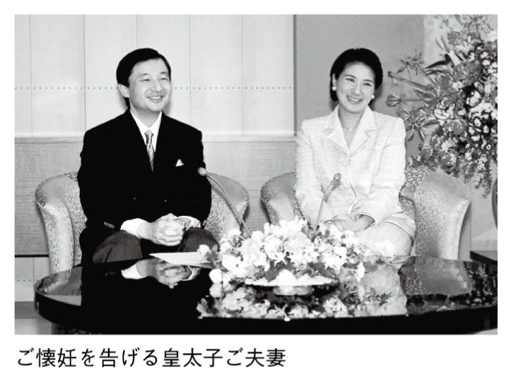
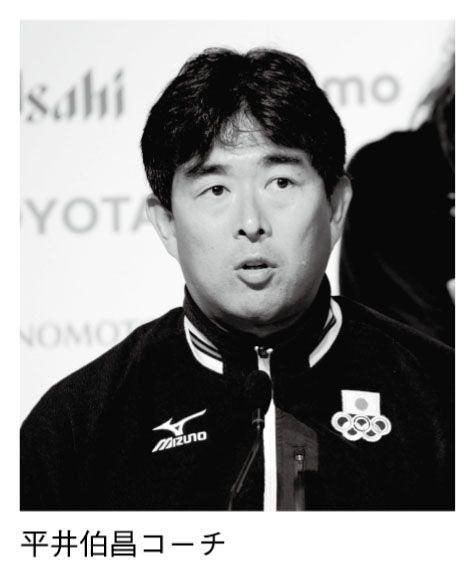
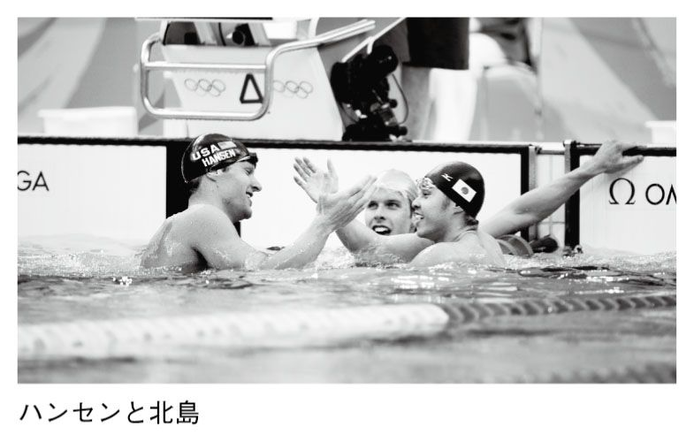

| 「文藝春秋」で読む戦後70年 第四巻 「９・１１」後の世界と日本 (文春e-book) | |
| 文藝春秋・編 | |
| (2015) | |
「文藝春秋」で読む戦後70年
［第４巻］「９・11」後の世界と日本
【総論】 彼我の違いをとことん論じる 日中「文明の相剋」 司馬 太郎・陳舜臣
太郎・陳舜臣
平成13年 ９・11の現場から その時、ホワイトハウスは... 手嶋龍一
平成15年 漢字に宿る古代の叡智 東洋的教養こそ国の基 白川 静・宮城谷昌光
平成16年 初めて明かされるご病状と苦しみの真因 雅子妃 その悲劇の全真相 友納尚子
平成17年 引退から25年、三浦友和の初告白 妻・山口百恵の真実 奥野修司
平成19年 逮捕された特捜鬼検事の告白 私が見た闇社会の怪物たち 田中森一・立花 隆
平成20年 アテネから北京、苦闘のすべて 勝った、泣いた、大和魂だ 北島康介
平成22年 満身創痍の感動 「はやぶさ」は根性で翔んでくれました 川口淳一郎
平成23年 宮城県の小・中・高生たち 被災地で子供たちが書いた作文20 森 健
数千億の闇を告発 オリンパス外国人元社長の告白 Ｍ・ウッドフォード
平成24年 大騒動の受賞会見の裏側 芥川賞「事件」の真相 西村賢太・田中慎弥
平成25年 メルトダウンを食い止めた男 福島第二原発所長 危機のリーダーシップ 増田尚宏・船橋洋一
平成26年 レジェンドとなるまでの苦闘 母の焼死と長野五輪の怨念を越えて 葛西紀明
※各記事の末尾に付した数字は、記事の初出時を示します。例えば（Ｈ２・６）は平成２年６月号の意味です。また、文中の敬称は略し、肩書きは当時のままとしました。
「預言的な響き」前 文
山内昌之
日本人は、他の国民と違って、中国について現実を素直に見るよりも、或る部分を理想化することで、歴史をありのままに見る道筋を拒否するところがある。このウエットな特徴は、江戸時代の儒学者から現在の中国専門家にいたる知識人に見られるばかりでない。歴代の政党政治家を含めた為政者のなかにも、日本の歴史や両国の関係をしばしば歪めて考える者がいる。
中国文明を尊敬し友好を求める態度と、中国の政治的な威に萎縮し唯々諾々と意を迎える卑屈さとは別物である。日本の政治家と外交官にはこの違いが判らない人も少なくない。これは、『文藝春秋』の一九七〇年十一月号の陳舜臣との対談において、司馬 太郎が表現した「日本人の漢文的世界」の感覚と無関係ではないだろう。
太郎が表現した「日本人の漢文的世界」の感覚と無関係ではないだろう。
司馬太郎は、漢文的世界の中国と現実の中国は別物だと述べている。これは、自分の頭に存在する漢詩や漢文でイメージされる世界が、生きた政治や外交の舞台である現実の中国と同一でないということだ。脳裏にある過去の幻影をそのまま現実の舞台に投影すれば、少なからぬ判断ミスや誤解が生じるのは当然であろう。学者の理屈だけなら国を滅ぼすことはないが、政治家が主観的な感情移入や共感にこだわるなら国益を毀損しかねない。
秦の始皇帝の時代に徐福が来住して日本を開いたという説をまともに受け入れる日本人はいない。他方、九世紀の『新 姓氏録』にある秦氏が渡来人の末裔であり、中国起源の帰化人であることは、歴史学の上でかなり信用できる。歴史で必要なのは、いつの時代についても、伝説と史実をしっかり区別する作業である。たとえば、『史記』の世家の最初に出てくる呉の太伯が日本人の先祖だという説はとるに足らない。髪を短く切り体にイレズミを入れた太伯は「倭人」にそっくりだから、日本人の祖だという中国で流布した説は、南北朝の北畠親房、足利時代の一條兼良、徳川時代の山崎闇齋などが斥けていた。それでも、徳川家康の政治顧問ともいうべき林羅山は日本人が太伯の末孫だという説を長々と書いたので、後に山崎闇齋が憤慨してこの捏造などはさしずめ『周礼』にいう「造言の刑」にあたると厳しく批判したほどだ（内藤湖南「先哲の学問」『全集』第九巻）。
姓氏録』にある秦氏が渡来人の末裔であり、中国起源の帰化人であることは、歴史学の上でかなり信用できる。歴史で必要なのは、いつの時代についても、伝説と史実をしっかり区別する作業である。たとえば、『史記』の世家の最初に出てくる呉の太伯が日本人の先祖だという説はとるに足らない。髪を短く切り体にイレズミを入れた太伯は「倭人」にそっくりだから、日本人の祖だという中国で流布した説は、南北朝の北畠親房、足利時代の一條兼良、徳川時代の山崎闇齋などが斥けていた。それでも、徳川家康の政治顧問ともいうべき林羅山は日本人が太伯の末孫だという説を長々と書いたので、後に山崎闇齋が憤慨してこの捏造などはさしずめ『周礼』にいう「造言の刑」にあたると厳しく批判したほどだ（内藤湖南「先哲の学問」『全集』第九巻）。
判りにくい民族
林羅山の誤りは、司馬太郎のひそみにならえば、中国をあまりにも「漢文的世界」でとらえようとした点にあるのではないか。現代日本の政治家や外交官がしばしば中国について犯す情勢分析の甘さや判断ミスは、頭で描いた「漢文的世界」のコードで現実の複雑さを単純化するか、単純さをあえて複雑化する点にある。むしろ、中国の海軍力増強や尖閣諸島の問題をめぐる暴力破壊行為で改めて確認すべきは、「現実の中国のほうは、日本人にとってきわめて判りにくい民族」だという司馬の指摘であろう。司馬は、アメリカ人のほうが日本人には判りやすいくらいだというのだ。
司馬は、いまの日中対立の時点から回顧すれば興味深い提案をしている。
「こうなると、日本人にとってヘタに中国を理解しようと思う姿勢をとらないでいる方がかえって便利のように思えてきますよ」
この司馬の発言に陳舜臣が反発しているところも面白い。
「どうも日本人は、そういうふうに閉鎖的に閉じこもってしまいがちなんですよ」
陳は、日本人が閉鎖的でいる方を有利と考え、鎖国もやはり日本的な個性の現れだと切り返すのだ。こうした鎖国を受け入れる精神性こそコンパクトで機能的な国家の体制に適合すると言いたげである。「理想は手足のごとくうごかせる精鋭の小部隊を編成することです。大軍団になってしまえば、動きが鈍くなる」と。
中国のように広い国なら大軍団を使いようもあろうが、日本のように小さな国土で大軍団ができてしまうと処置なしである。武家政治が長く続いた日本は、徳川時代の終焉後も明治にその伝統が引き継がれた。そして、満州事変前後から武家政治を是とする極端な流れや世論が出てくる。そこに乗っかったのが陸軍の軍閥ということになるだろう。
この軍閥が大軍団を擁すると海外遠征戦争という日本史にほぼ例のない大胆な行為に乗り出すほかない。司馬は、昭和の軍閥が日本を支配するというよりも、日本と日本人を占領してしまったという巧みな表現をしている。
日本人と中国人の違いは？
ところで司馬は、中国人と日本人との違いは何かという問いを発した。すると、陳は「中国人は現実的で、フィクションを認めない」と間髪を入れずに答えている。日本では、もともと古いものも新しいものも外から来た事物だった点が中国と違うというのだ。
確かに、外来の思想が中国起源ならば、そこに考え方の普遍性とそれが生まれた中国の特殊性の双方が含まれている。当然、独自の民族と国家である日本は、ひとまず中国で生まれた普遍的な「道」と日本固有の社会感覚との 藤に悩むことになる。司馬は、自前のものは神道のシャーマニズムだけだから、明治の近代化など各種の試練に際して、中国から来た文化や事物を捨てるのも簡単だったと語る。しかし、実際の思想の受容と廃棄との関係は二人が言うほど簡単なものではない。
藤に悩むことになる。司馬は、自前のものは神道のシャーマニズムだけだから、明治の近代化など各種の試練に際して、中国から来た文化や事物を捨てるのも簡単だったと語る。しかし、実際の思想の受容と廃棄との関係は二人が言うほど簡単なものではない。
それを考える一つの手がかりは、すでに紹介した儒学者にして神道家の山崎闇齋の思想であろう。
闇齋は弟子たちに、孔子や孟子が日本へ攻めて来たならば、孔孟を捕虜にするのが孔孟の道だと説いたといわれる。中国で生まれた儒学の道徳観で大事なのは、そこにはらまれる普遍主義であり、説いた人物たちの民族籍や国籍ではないというのだろう。その弟子の浅見絅斎が述べた「聖賢の道を尊むべし」とは、日本で平和に人びとが生活をしているときに、異国（外国）の贔屓をするあまり国の利益を忘れるのは大きな「異端」であり、普遍的な教えの「道」に反するという主張につながる。もし異国の君主の命令で孔子や朱子が日本に攻めてきたなら、まず進んで二人に鉄砲を向けて孔子と朱子を討ち取るのが日本人としての大義というものだという。書物だけを読んで異国人（中国人）になった気分となり、その真似をするのは正しい「道」を知らないからだ。この点では、絅斎の論敵となった同門の佐藤直方も、国際関係における日本の自主独立と安全保障を当然の理と考えていた。まず起こりえないと留保しながらも、もし孔子と孟子が軍隊を率いて他国に侵攻すれば、それは孔孟が自らの説いた「道」に背馳する行動をとるのだから、「道」に従ってこれを撃破すればよいというのだ（『日本思想大系31・山崎闇斎学派』所収各編と解説・丸山真男を参照）。
孔子や孟子が説いた教えを守ることこそ孔孟の道というものであり、それを孔孟自ら踏みにじるのは〝中華思想〟の排外主義的な現れだから抵抗しても構わないという理屈は、ずいぶんと醒めた世界観というほかない。このあたりが陳舜臣のいう、自分の生き方を変えない中国人、変える日本人という個性の違いなのかもしれない。
くすぶりつづける火種
ここから二人は、明治維新のように方向転換の早い日本と、過去を切り落とすために連続革命を必要とする中国との差異を強調する。清朝を倒した一九一一年の辛亥革命も第三革命まで続き、その後の蔣介石の北伐や国共内戦や日中戦争、そして一九四九年の中華人民共和国成立までを考えると革命の不断の歴史であった。大躍進や文化大革命はもとより天安門事件やチベット問題を見ても、かつて毛沢東が語ったように革命は永遠に続くという重い感覚が、中国人の理念への過剰なこだわりを生み出しているのではないだろうか。
いまや、そのこだわりは共産党独裁による資本主義という世界史でも最もいびつな体制を維持するために、反日を理念と現実の双方で掲げざるをえない。尖閣諸島を「核心的利益」と位置づけ東シナ海のヘゲモニーをとる動きは、陳舜臣の言葉を借用すれば、中国では火がついても炎が出るまで時間がかかるという例であろう。炎が上がってもすぐには広がらないのである。日本の政治家と外交官が忘れた頃に大きな炎になるのだ。かれらの一部は、中国による一方的な東シナ海ガス田開発や恣意的な歴史解釈が起きて両国関係に火がついても、中国が声を荒げるのをひとまず止めれば紛争の火種が消えてしまったかのように錯覚する傾向が強い。しかし、問題はもう消えてしまったのではないかと都合よく理解しても、実際に手を触れてみるとまだ熱気がある。そのうちにくすぶりだして、また炎が出てくる。その時は前の炎と違って、大きな炎になってまさに燎原の火のように広がり、鎮火のしようもなくなるほどだ。いまの中国海軍や関係部局による日本の領土領海への公然たる挑発は、日本の歴代政権が前の炎は消滅したと勝手に思い込んだ〝天罰〟でもあろうか。
日本の明治維新やアジア太平洋戦争の敗戦では、パッと炎が燃えあがって新時代に移行した。中国ではなかなかにそうはならない。中国では辛亥革命による帝国の崩壊プロセスがまだ終わっておらず、火種がいつもくすぶりつづけボヤになり、時には大火にまで達する現代史が繰り返されているのだ。それどころか、マルクス主義と共産主義を中国史の独特な文脈で変容させた毛沢東思想を代表思想の一つとして掲げる限り、さながら中華帝国のように周辺に膨張を続ける圧力を、日本は正面から跳ね返す意志力と歴史観を正しく身につけるべきであろう。
まさに中国の「大軍団の不器用な旋回」（陳）をまともに風力として受けても、アジアで跳ね返せるのは日本くらいなのである。しかも、このまだ終わっていない革命の大きさは、「揚子江の規模」（司馬）くらいの巨大な圧力であることを真剣に認識してかかる必要がある。この意味で、二人の対談のタイトル（原題「日本人は〝臨戦体制〟民族」）はまさに預言的な響きをもっていま甦るのである。
以下に掲載する対談は、『文藝春秋』一九七〇年十一月号に「日本人は〝臨戦体制〟民族」と題して発表されたものです。この時期、日中関係はまさに大きな転換点を迎えていました。翌七一年にはキッシンジャー訪中、中国の国連復帰が決定され、七二年のニクソン訪中、田中角栄・周恩来による日中共同声明へと至ります。尖閣諸島をめぐり中国が領土主張を始めるのも、この時期です。
日中対立が激化する中、あらためて彼我の文明・世界観の違いがクローズアップされています。そして、この四十年あまりの間に、日本人、中国人はどこが変わったのか。両泰斗による洞察は、今なお示唆に満ちています。
（編集部）
司馬 どうも話しにくいな、外語で一年先輩の人というのは（笑）。それに陳さんは大変な秀才だったし......。陳さんは、言葉のほうをずいぶん勉強なさいましたね。インド語とペルシャ語はご専攻だったからいいとしても、アラビア語やロシア語の読み書きもできるのでしょう？
陳 はあ、まあ辞書をひきながらですが。
司馬 言語生活は、お家での日常語は福建語で、それに公式語としての北京官話があるなあ。われわれ近所まわりの連中とのつきあいは関西弁で、小説は、大変論理性の高い日本語で書かれる。えらいこっちゃな（笑）。つまりそういう日常感覚のなかから、陳さんが考えておられる日本民族とはなにか。そんなことを話してくれへんか。
陳 そうやな（笑）。一番くらべやすいのは仏教でしょうね。インド、中国を経由してきた仏教は、日本に渡来したら、とても日本的に変形してしまった。そこらあたりに日本プロパーがもとめられる可能性があるんじゃないかと思うんです。例えば、どの宗教でも祈禱に異常に熱心だったということ。禅宗だけはそうじゃないけれど、これは江戸期に白隠が出たり、道元に還れという運動があったせいで、それがなければ、やはり加持祈禱に傾斜したでしょうね。日本において、いかにシャーマニズムが根強かったかを物語るんじゃないでしょうか。
それに仏教国でお寺が兵隊を養っていたことはありませんね、日本の僧兵のように。
司馬 叡山や三井寺の。
陳 中国にも少林寺拳法があるが、あれは健康法、体操の一種なんですね。しかも拳法を使って僧兵を養い寺を守っておったという事実はありません。
やはり、その点で日本は尚武の国だといえるんじゃないですか。それから、ひじょうに派閥好きだということですね。
司馬 いまの中国を論ずることはしばらく措いて、中国は文をもって社会をまもろうとしてきたことはたしかですね。武は権道であって、常態ではない。
陳 そうですね。
理論を完璧に
司馬 坊さんの話が出たついでですが、私はこのところ空海（弘法大師）に熱中しておって、なかなかおもしろい。
かれが遣唐使に随行する留学生として入唐するのは九世紀のはじめですから、じつにふるい話ですが、かれは中国の合理主義にはなんの関心も示さず、最初から真言密教を学ぼうとした。密教は仏教でさえない。釈を教祖としていない。インド土俗のバラモン教で、それが唐に来ている。
陳 もとはバラモンでしょうね。
司馬 密教というのは、宇宙の内部の秘密を思想化したもので、だから中国人からみれば、目でみえる山川草木からかけ離れた、思想だけの世界ですから、体質にあわなかったのか、なかば廃っていた。ところが、空海からみれば非常に新鮮であったので、それをごっそりもってかえってきた。ところがここでおもしろいことに、中国やインドにおける密教は、カッチリと体系化されたものでなく、大きさはあるが多分に流れた存在です。それが空海という日本人の頭をとおすと、ぬきさしならぬほどにカッチリしたものになる。議論を完璧なものにし、論理を構築して、一つ駒をぬくとガラガラ崩れるほどにカッチリしたものをつくりあげたのです。それが日本の真言密教です。
陳 なるほど。
司馬 どうも独断かもしれないが、密教が原産地のインドにあったころや、経由地の中国にあったころには、思想としての結晶度はそんなに高いものではなく、教義などにも 褄のあわない所もあったのではないか、と思うんです。それを中国人は「アイマイな所があっても、むしろそれが実在の姿である」と、許容してしまう。
褄のあわない所もあったのではないか、と思うんです。それを中国人は「アイマイな所があっても、むしろそれが実在の姿である」と、許容してしまう。
空海が日本の代表選手であるということでこういう例をもちだしたのですが、どうも話が理屈っぽくなっていかんけれども、要するに空海は、海の向うに存在しているものをもちこんで来るのに、そのエッセンスを抽出して、日本で再組織して、たとえ小粒ではあっても、完璧な結晶体にして高野山の山頂へ置いた。日本文化は、そういう思考で成立しているとは思いませんか。ずうっとマルキシズムまで考えてみて。
陳 そうですね。規模の大きさは望まない。小さな、たとえ、箱庭のようなものでも一分のゆるぎのないものにしたいという性癖が、日本人にはありますね。
司馬 日本人と中国の関係ですが、昔々から日本は、中国の現実を理解するという関心の示し方をせず、むしろそのある部分を理想化し、尊敬しっ放しできたわけですね。日本人の漢文的世界は、そういうものでしょう。私などでも漢文的世界の中国と現実の中国は、あれは別々のものやと思っている。現実の中国のほうは、日本人にとってきわめて判りにくい民族ということになっている。
日本人の鎖国意識
司馬 例えばアメリカ人のほうが、日本人にとってずっと判りやすいところがあって、つまりアメリカ人というのは、ボタンを三つほど押せば答えがでてくるような、そういう平明さがあるように思われる。
ところが中国と中国人は違う。新生中国になったとき、これで中国人も単純化した、マルキシズムの窓を通しさえすれば毛沢東も中国も理解できると思ったが、とてもそういうものではない。
こうなると、日本人にとってヘタに中国を理解しようと思う姿勢をとらないでいる方がかえって便利のように思えてきますよ。日本という場所からみると、どうも中国はそうですな。
陳 どうも日本人は、そういうふうに閉鎖的に閉じこもってしまいがちなんですよ。閉鎖的でいる方が有利だと思っているのと違いますか。鎖国というものも、やはり日本的なものの表われといえる。なにも幕府が命令を下したから鎖国したということではなくて、日本人にはもともと鎖国を受け入れる精神性があったのではないでしょうか。
司馬 ははあ、そういえばそうやな。鎖国は日本人にとって、ごく自然な感情ですな。まったく同感です。徳川幕府が鎖国にふみきった時、あまりアクシデントもなかったということに、あらためて驚いてみる必要がありますね。直接に貿易にたずさわっていたごくわずかな商人やキリシタンは別にして、平均的日本人は「ああ、そうか」ですんでしまったし。
陳 箱庭というと悪口めいて聞こえるけれど、空海もそうであったように、日本人は隙のない完全なものをめざす。そのためには、鎖国したほうが民心がまとまっていい、ということもあるんじゃないですか。
司馬 そうや。いまの貿易自由化の問題も、それでよくわかる。
陳 あれこれ苦心して、外へ洩れないように、拡散しないように、日本人は努力するんじゃないでしょうか。コンパクトで機能的であることをめざすようですね。
国家の体制についていえば、そうなるためには、あんまり外国とつき合って、間口をひろげると、隙間ができて困る。理想は手足のごとくうごかせる精鋭の小部隊を編成することです。大軍団になってしまえば、動きが鈍くなる。維新後、外国と接触したけれど、そのかわり、思いきり内をひきしめましたね。明治日本の成功は、小部隊的勝利で、日本の十八番といえるでしょう。
変り身の早さ
司馬 中国人と日本人とのちがいについては、別な面もある。中国人のほうが現実的なくせに、反面、民族共通の一理念にたいしてひどく忠実なのではないか、ということです。宋の時代に大医がいて、官の許しではじめて罪人の解剖をおこなった。内臓をひらき出してみたが、どうもちがう。ちがうというのは、陰陽五行説という大原理に照らしてちがうということです。中国の医学、つまり漢方は陰陽五行説から出ていますですね、例えば内臓は五臓六腑である、とか。
ところが現実の内臓はちがうのです。そういう場合「理念のほうがまちがっている」と考える人とそうでない人とがありますが、この宋の大医は、「この罪人はまちがった内臓をもっている」として、かれはその解剖図をかくにあたっても、陰陽五行説のほうに合わせて、現実の解剖上の配置をデフォルメしてしまった。
その解剖図がずっと日本にきていて、日本の漢方医の古典の一つになっていましたよ。
陳 なるほど。
司馬 ところが江戸中期、京都の宮中の侍医頭というきわめて保守的な官職をもつ、山脇東洋という当時の代表的な漢方医が、これはおかしいと思いはじめた。かれはカワウソが人間に似た内臓をもっているということをきいて、三十頭だか五十頭だかを解剖し、いよいよ陰陽五行説的な解剖図に疑問をもち、ついに官許をえて、六角獄舎で罪人の解剖をするのです。
杉田玄白らの蘭学者の解剖より以前です。山脇東洋は解剖をやってみて、長年の疑問が一時にとけて狂喜するのです。現実は、理念のようにはなっていない、理念よりも、この罪人の内臓の現実のほうが正しい、という。かれの著書の『臓志』というのは、中国風の理念尊重主義に対する挑戦的な文章で満ちている。「理アルイハ顚倒スベシ、物ナンゾ誣ウベキ」理念というのは現実つまり物の前にはひっくりかえることがあるのだ、現実を理念でまげることはできない、という。
空海的な思想を結晶化することのすきな性格のほかに、こういう合理主義、つまり、西欧的な合理主義をうけ入れやすかった精神を日本人は持っているといえるんじゃないでしょうか。
陳 そうですね。
司馬 中国人には、古来一つの強烈な思想があって......。
陳 それが邪魔になるんですね。重荷になっている。小部隊ならすばやく散開したり、かんたんにＵターンもできるけれど、大軍団はいっぱいよけいなものをくっつけて、身のうごきが自由でない。
司馬 日本人は「俺が現実に見たら、話と違っていたぜ」といわれると、すぐに変身する。幕末、伊藤博文と井上馨がロンドンへ行って、ゆく途中上海で西洋文明をみて、とたんにいままでの攘夷志士が、攘夷を捨ててしまう。それこそ全部捨ててしまう。中国人と日本人には、そういう違いがありますね。
陳 それは非常に大きな違いでしょう。
司馬 明治まで漢方薬を飲んでいた日本人が、文明開化とともにドイツの薬がいいとなると、一斉にそれへゆく。まったく大分列行進で、一瞬に方向転換するような盛大さです。こういう性格はどこから生まれてきたんでしょう。
陳 外から来たものだからじゃないでしょうか。古いものも新しいものも、もともと、みんな自分たちのものじゃないですから。
司馬 もとからあったのは、シャーマニズムだけだから。自前で生みだしたものではなく、向うから来たものだから、捨てるのは簡単ですね。
陳 そうそう、いさぎよいのですね。桜の花が散るみたいに。日本精神の美点にかぞえられていますよ。
司馬 日本人の合理主義もそういうところに根があるのかもしれない。
いつも臨戦体制
陳 それと、私が最初に申しあげた僧兵の存在ですね。一つグループを作って、それを守るのは武力しかないとする考えは、日本人の根本的な思考方法だと思いますね。これなんかも、考えてみると、きわめて合理的で科学的だといえるんじゃないですか。なにしろ、どんなに頭をしぼっても、これ以外にはないのだから。
司馬 中国にしてもインドにしても、武力に頼らずして自己を守る方法をいっぱい持っておったわけですね。人文で守ろうとする。
陳 日本人は、頭から、武力が一番てっとり早いという考え方ですね。つまり、いつでも臨戦体制なんだ。戦争になっても敵に滅ぼされんような体制を常時とっている。だから、お花とか茶の湯とか、口伝秘訣で口から口へと神秘めかして伝えるもの、それと、さっきいった空海の完璧さ。規模は小さくても完璧なものにするというのは、敵に知られちゃいかん、いつでも戦争なんだという意識が、ひそんでいるからじゃないでしょうか。
司馬 土佐の古い伝説に、国主が製紙技術者を他国からよんで、その技術を学びとってしまうと、他国に洩れては国益を損ねるというので、技術者が国へ帰るとき、国境あたりで密殺してしまった。どうも本当くさい話で、これなども産業を興すというだけじゃない、臨戦体制の思想ですね。
陳 臨戦体制となれば、損か得かは、非常に端的な選択法ですからね。捨てるものはあっさり捨てなければ、先へ進めない。物ないしは思想を簡単に捨てるというのは、やはり、常時戦いに臨んでいる姿勢とつながるんではないか。
司馬 東独の新聞記者が、ヨーロッパへやってくる日本の観光団についてこんな感想を洩らした、ときょうだったか新聞にでていたな。「一人の添乗員が先頭を進んでくる。かれは、大ぜいの旅行者をじつに巧みに組織化し、統御し、一糸乱れぬ行進をさせてやってくる。これはどう考えてみても軍事国家である」（笑）。
日本人の観光客にとっては、ともかく旅行目的を達するには一人の指揮者のいうとおりに動いていた方が便利だと思うわけで、そう思うとじつに従順に指揮掌握下に入る。これも臨戦の思想ですな。
陳 日本では武家政治が長く続きましたけれど、この体制は、歴史的にみて普通じゃない。武家政治は日本を治める一番いいスタイルだったんじゃないでしょうか。
司馬 たしかにそうです。武家政治は徳川期いっぱいでおわったわけではない。明治期も多分に武断的だった。大正と昭和初年だけがすこし毛色がちがっていて、満州事変前後からふたたび武家政治待望の世論が出てくる。その世論へ軍閥が乗っかった。もっともこの昭和軍閥は馬上天下をとったわけでないから、かえって始末がわるくて、この大戦末期にはもう、日本を支配しているのではなく、日本と日本人を占領してしまっているかっこうだった。徳川幕府のほうがずっと治者的で、同国人を大事にしていますよ。たしかに昭和十六、七年ぐらいから二十年まで、かれらはもうそれこそ武家政治を通り越して、どう考えても、日本と日本人を占領している感じだった。そう考えたほうが、あのころの日本の姿がよくわかるようなふしぶしがあります。たとえば、日本と日本人は軍閥に占領されていたものだから、敗戦でパッとそういう連中がいなくなって、アメリカ軍がくると、おなじ占領だから、それも陸軍軍閥よりは紳士的だから、すっとうまく行った。一つの占領グループに代って、別の占領グループが来ただけのことですからね、日本国民にとっては。
まあ、あの時代は日本史上きわめて特異であるにしても、日本は、武によって統御すると、比較的安定する社会かもしれませんね。いまは馴れぬながら、文によって成立している。馴れないから、何となく日本人は非常に退屈して、「これでいいのだろうか」「もっと緊張がほしい」と考えがちなのかもしれない。
欠けた俠の精神
陳 日本では昔から統制がとれていて、身分制度もはっきりしています。中国には、身分制度がなかったですからね。官吏試験に合格すれば累進できる。ところが日本では、初めから秩序がちゃんとあって、みんなこれを利用している。動かしたらまずいから、何かを外国から取りいれるときも、ちゃんと選択していますね。
儒教にしても、これは文と武との違いなのでどうしようもないのに、山鹿素行は儒教と武士道を関係づけようと努力している。こうして日本に入ってきた中国のモラルのうち、仁はまだいいとして、俠という精神は、まったく犠牲にされてしまっているんじゃないでしょうか。日本でいう俠客は、博打うち、つまり一種の営利団体のようなもので、本当の男気は日本では育たなかったんではないでしょうか。侍道はあったが、これは俠道とは完全に違います。侍は君主に仕える。つまり上下の関係であって、俠は横の関係ですからね。友達のために死ぬということだから。
司馬 うん、うん。
陳 これは似ているようで違うんですね。日本では武士道は発達したが、その割合で俠はへこんでしまって、ほとんどないという気がする。
司馬 それは大きい問題ですね。俠とまでいかなくても、友というものが日本にはあまり発達しなかった。友情というのは非常に高級なモラルであるといわれだしたのは、明治以後で、この観念は中国よりはむしろヨーロッパからとりいれたモラルですね。
陳 フレンドシップ......。
司馬 多分に翻訳的なもので。明治天皇の教育勅語に出てきている。それも朋友相信ジという範疇で、友義のためには命を投げだせ、というような俠にまでゆくものではないですね。俠の精神が日本に定着しなかったのは、それがあると、縦割りでできあがった日本の社会がこわれてしまうからでしょう。
もっとも例外的に横の関係が一時期ありました。戦国期の衆道ですね。男色ですけれども、戦国の衆道は、いやらしいものではなくて、衆道の関係を義兄弟と言い、たがいに助け合って、主君よりも衆道による義兄弟の方が上だ、というおよそ日本離れしたモラルが猛烈に興って、それが「葉隠」のなかにもありますし、江戸初期までその種の衆道による反体制事件が多かった。もっとも江戸期がしっかりするにつれて、この種の考え方がすたれてしまったけれど。
陳 戦国時代のほんの一時ありましたね。
司馬 戦国のころはいわば、社会が原型に戻ったような時代ですから、お互いにモラルを探しあわねば生きてはいけない。そういう厳しい時代には、多分に変形的なあるいは変質的なものだけれども、友か俠かに類似した精神がパッと出てくるんですが、江戸時代のように組織化された時代となると、俠はむしろ日本人社会をこわすかもしれない、ということで危険なものにされてしまう。日本は秩序維持がすべてに先行しますからね。
国益が優先する
陳 秩序維持といえば、今でもそうですね。やっぱり国益が優先して、例えば亡命を認めないですね。窮鳥懐に入れば、という心がないんですよ。国外追放処分をうけて本国に送還されれば明らかに死刑になると判っている人間でも、日本の法務省は送還してしまいます。
むかしからそうで、孫文も国外退去を命じられたことがある。戦前、ベトナムから亡命していたクゥオンデという王族を、フランス政府からの要請によって、日本政府はあっさりと追放している。終戦直後汪政権の要人たちが日本に飛行機で逃げてきたが、彼らはこれまでの盟邦であった日本の俠をアテにしたのじゃないですか。主席の陳公博は一高を出たが大学はアメリカなので、あまり日本を知らなかった。よく日本を知っていた周仏海などは日本へ亡命してもむだだと見とおしていたのですね。はたして、日本では行きがかり上、しばらくはかくまうが、あくまで面倒をみるつもりはなかった。
最近も台湾独立運動家を強制送還して問題になった。送還前に収容所で自殺した人もいます。そりゃ、自分の国で、よその国の反政府運動などをやられると、大そう迷惑しますよ。そんなややこしい連中は追放してしまえば、一ばん面倒がない。国益からいえば、追放が最上の策である。そして強制送還となる。法律的にそうすることになっている。とやかく言われることじゃないでしょう。しかし、これは、国家的に俠の精神に欠けているという、一つの表われじゃなかろうか。
司馬 ああ俠の精神の欠落か。そういえばそうだなあ。
陳 日本の国益に反するから、この男がおったら困る。それから先は知らん、という考えは、また基本論に戻るけれど、これは戦時体制ですよ。こういう奴がいたら困る、損か得かということが、すべてのものの判断基準になってしまう。
この間、アメリカをまわってきたんですが、例えば、ロスアンゼルスにリトル・トーキョーとチャイナ・タウンがある。黒人暴動が起きると、黒人は日本人街の店から略奪するんですね。日本人の店はズラリと並んでいるのに、一軒の店が襲われても、みな黙っている。隣り近所、シャッターをおろして知らん顔してるわけです。ところが、チャイナ・タウンには、黒人は入りこまない。みんなが出てきて、かえって袋叩きにされるから。
司馬 それが俠ですな。
陳 ペリー・メースンの作者ガードナーは、カリフォルニアでほとんど在留中国人専門の弁護士といってよかった。そのガードナーが、『奥の手の殺人』という、これはハヤカワでも訳されている小説の序文に、友人のために死ねるのは世界じゅうで中国人だけだと書いていますが、それがつまり俠ですね。
司馬 たまに、中国化しようとした日本人、例えば宮崎滔天などが俠の精神を奮い立たさんとしたけれど、これは非常に少ない例ですね。
陳 そうですね。
発しにくい俠
司馬 ではどうして中国に俠が発達したか考えてみると、こういうことがいえるんではないか。中国人は親友を裏切らない、とか、非常に信がある、とかいわれる。それは、治乱興亡を経てきて判ったことだが、権力は必ずしも自分を守ってくれない。権力がすみずみまで及ぶには中国は広すぎますからね。だから、村落の共同体が、自分たちだけで守る。守るについて、内部的な秩序の孝をもって立て、対外的なものに対しては、俠をもって守りあおうとした。そういえるでしょう。
陳 ええ。
司馬 それとは逆に、日本はすみずみまで小権力がびっしりあって、それが連なった上に徳川期なら徳川幕府という最高権力がある。そういうなかでにわかに俠を発すると、隣り近所、親類みんなが迷惑するわけで、見殺しの習慣ができた。維新のとき、徳川家も徳川親藩、譜代藩ことごとく会津藩を見殺しにした。見殺しにしてからあとで可哀そうやと涙をこぼす。まったく俠を発しにくい。
いまの世の中でも、会社員は俠を発してくれては困る。同業種の会社が多数で競争していて、そのなかである社員が他社の友人にプラスになるようなことをすれば、利敵行為になってしまう。社内でも、同期の入社生同士が俠で団結すれば会社も組合もこまってしまうでしょう。とにかく日本社会には俠を発すると非常に困るような仕組がありますね。
陳 そういえばそうですね。日本の社会は緻密でデリケートなんですね。そして、分を守っておれば、まず身の安全は保てる。中国はそれがないので、たがいに横の連絡をとる。商売ではギルド、生活面では秘密結社ですね。青幇や紅幇など全国的組織だから、べつに縄張り争いはないが、日本はそれぞれ小さくまとまって、つまり小部隊的で、横のつながりがないので、ドスをふりまわさねばならない。任俠と称してはいるが、別物のように思える。戦闘による征服以外に、Ａ組のヤクザとＢ組のヤクザは仲好くなれない。
司馬 日本のヤクザが任俠といっても、俠という文字をつかうのはどうもちがうんで、ヤクザの組の中で俠を発したりしたら、いっぺんに殺されてしまう。とにかく日本では俠を発しにくい。
陳 矛盾を来たす。
体制を信頼する
司馬 まあ、消極的な俠の精神というか、機能があるのは医師会ぐらいのものですね、内部的な互助機能という点で。ともかく日本の社会のなかの大ていの社会は臨戦体制的緊張のもとに組織化されているから、一つの異分子があっちを向くと、全組織がガラガラとこわれてしまう。むしろ俠は危険ですね。
陳 話がちょっと横道に入りますが、ユダヤ人はどこに行っても自分の伝統を守りますね。何千年も国を離れているし、ユダヤ人に対する抵抗も強いから、守らざるを得なくなっている。中国にも北宋時代にユダヤ人がやってきた。ところが、中国ではユダヤ人は溶けてしまった。痕跡がないんです。中国では異分子に対する抵抗はありませんからね。宗教にも寛大というよりは、無関心に近く、ユダヤ教でもなんでも勝手に拝めばいい。抵抗がないからユダヤ人も守る垣を作らずにいたんですね。世界でユダヤ人が溶けてしまったのは、中国だけです。
司馬 痕跡もありませんか。
陳 ええ、痕跡もないです。
司馬 大集団で渡ってきたんですか。
陳 かなりの集団できてますよ、学者の説によれば。中国の家族制度がそうさせた、とか、イスラエルの習俗よりも居心地がいいんで、ユダヤ人であることを止めてしまったとかいわれています。
これはいわば中国の横の関係の強さを示す実例ですが、その反対に、中国人が日本人を見ると、縦の関係の強さに驚くわけですね。
司馬 例えば？
陳 戦後、中国人記者として日本に一番乗りした『大公報』の王芸生記者が、帰国してリポートをまとめた。終戦直後の日本訪問記ですね。彼が一番驚いたのは、食糧事情が悪いため、みんな飯を食わんで青い顔をしている。ところが、子供だけは頰っぺたが赤くて栄養満点だ。これは大人が犠牲になって、子供に飯を食わしているのに相違ない。日本は偉い国だぞ、と書いています。彼らは次代に託しているんだ。子供が親を敬う、というより、親が子供の犠牲になっている、と。
司馬 ははあ。
陳 こういう精神が、欠けている俠の穴埋めをしているんではないでしょうか。中国では、大人が青い顔をしていたら、子供はもっと青い顔をして、瘦せこけている（笑）。
司馬 そう、孝ですから（笑）。
陳 それなのに、日本の子供はふとっている、と、日本に留学したこともあるこの記者は、あらためて驚いているんです。
司馬 しかし、よくも買いかぶってくれましたな（笑）。
陳 どうしてそうなのか判らん、という書き方でしたよ。
司馬 たしかに、次代に託するという考え方は、日本人の土壌の中に昔からありますね。別に高級な精神でもなんでもなくて、環境が生んだ習慣でしょう。自分は瘦せ衰えても息子を東京の大学に入れよう、という式のエネルギーが明治後の日本をうごかしてきた。
陳 これまたアメリカの二世の話になりますが、大学進学率は、チャイナ・タウンと比べて、日系人の方がはるかに高い。中国人は頭が良ければ大学にやる。悪ければコックにさせるとか、割合子供に冷たいんですね。
司馬 日本国中どこでもそうだが、大学へ行くということは、さっきの臨戦体制に......。
陳 組み入れられるということですね。
司馬 自分は土地ブローカーとして金は かっている。しかし子供は安い月給でもいいから、それへ組み入れたくない、と親は思うわけですね。横の関係に歴史と伝統があれば、そうは思わないのですが、その横の関係は存在しない。鳶職は日当四千円とっている、それなのに鳶職の父親は、子供が東大を出て三井の社員になって安い初任給を得ることを望んだりする。日本人は、組織や体制を非常に信頼するようにできているんですね。
かっている。しかし子供は安い月給でもいいから、それへ組み入れたくない、と親は思うわけですね。横の関係に歴史と伝統があれば、そうは思わないのですが、その横の関係は存在しない。鳶職は日当四千円とっている、それなのに鳶職の父親は、子供が東大を出て三井の社員になって安い初任給を得ることを望んだりする。日本人は、組織や体制を非常に信頼するようにできているんですね。
陳 信頼しなければ生きてはいけない。つまり、日本人は騎馬民族なんですよ。
会社も臨戦体制
司馬 日本人の祖先は騎馬民族だというのは、江上波夫氏の説だけれども、騎馬民族という概念で日本人の一つの輪郭が描けそうですね。日本語は単純にいって北方のウラル・アルタイ語であることは、モンゴル語を一年でもやれば感覚として判りますからね。なんといっても騎馬民族は強い。
ジンギス汗はどういう英雄であるかは別として、あれだけの組織があれば、戦に勝てます。老人は一番殿で、若者が先登に立つ。システムそのものが草原を前へ前へと進軍してゆく。その中の個は、そのシステムの中にいることでやっと成立しているわけで、そこから外れたら、これは、えらいことになる。自分だけ草原に置き去りにされたら、という恐怖心があるから、システムと一緒に進まざるを得ません。システムが進んで、町を呑みこんでしまう。住民を虐殺し、また進軍する。別に虐殺するのが楽しみなのではなく、そのグループから蹴落されるのが恐ろしいからついていくだけの作業なんです。騎馬民族というのは、そういうものでしょうな。
陳 日本の政党の派閥にも、そういう傾向がありますね。自分が安心できるシステムを作らないと気がすまない。
司馬 そう、派閥そのものには、それほどシャープな利益があるかどうか。自民党の派閥の中で、大臣になりうるチャンスがある人間は、何人もいないのに、それに属していねば、安心できない。
陳 大会社にもあるでしょう、派閥は。
司馬 その派閥という問題も、騎馬民族的にいえば非常に問題がある。例えば、ある会社を慶応閥で押えておった。社業が安定している時代はそういう学閥も共同社会のようなもので、そこで社会生活を楽しむことができたんですが、ところが、社業が左前になって危機に直面したときに、会社全体がするどく臨戦体制になり、派閥が消えてしまった。が、その後社業が安定すると、また派閥ができた。その繰りかえしみたいななかに、日本の社会形態の一つのルールがあるんじゃないでしょうか。
陳 日本の経済は、いわば、企業間のシェアの取りあいで発展してきた。これは戦争と同じですからね。土俵のひろさが手ごろだとよけい熱中できますね。ぼくら子供のころ、陣取りという遊びがありましたよ。親指を軸にして、指をひろげて円を描き、それで陣地を取って行く。誰が一ばんひろい陣地を取ったか。こんな原始的なゲームは、このごろの子供はやらんでしょうが。
司馬 シェアという観念は、日本人のメンタリティの中では、どういうものだとお思いになります。
陳 やはり、天下取りじゃないですか。
司馬 領地をふやしていく......。
陳 それを集団でやるんですね。企業間で戦争をしているんだから、企業のエゴイズムも出てくるわけです。臨戦体制だから。
行列の巧い日本人
司馬 なるほど。外から日本を見て、日本は軍国化しているなどといわれるのも無理ないかもしれないな。例えば、日本の大会社に銃と大砲を持たせると、そのまま軍隊になりますね。松下電器などはいい会社で、社員が一所懸命働いている。社の組織もじつに機能的で、企業の目的に対してむだがない。それを塀ごしにのぞいて、濃いフィルターのめがねでながめると、いかなる国の軍隊よりも組織的精度が高くて、強そうですなあ。
戦闘意欲は旺盛で、あのまま軍事的に転換しても戦争ができそうな気がする。それは冗談だが、外国人が日本を見るとき、そんな目で見ると、そう見えてくるかもしれない。
陳 外地にいる駐在員など、眼の色変えて働いてますからね。外国人から見れば、これはただ事じゃあない、と思えるんじゃありませんかね（笑）。失敗して、国に帰ったら、しばり首になるんじゃなかろうかと（笑）。
司馬 そう見えるやろな（笑）。
陳 ことに欧米の人たちにとってみれば、何であんなに働かねばならないのか、不思議に思えるでしょうね。そんな国で、日本の観光客が行進をして、しかも添乗員がビシビシやっていたら、脅威じゃないですか（笑）。
司馬 アメリカ人の記者の眼に映った万博の見物客についての記事が、このまえ新聞にのっていましたね。開門と同時に、待ちかまえていた見物客が血相を変えてなだれこんでくる。どうなることかと見ていると、ガードマンが「止まって」と叫んだ。すると突撃中の群衆がピタッと、止まった（笑）。
陳 行列がうまいのは、日本人とドイツ人でしょうね。
司馬 日本人がうまいとおっしゃるが、大阪人は下手ですぜ。下手というより、行列をお行儀よく作るという精神構造になっていないんですね。東京の国電や地下鉄で、お客の巧みな行列ぶりを見ると、ぼくなんか、大阪で暮らしているだけに、恐怖を感じますね。これは、東京と戦争したら大阪は負けや（笑）。外国人から日本人をみたら当然、思うはずですね（笑）。
陳 神戸人として同感です（笑）。
軍国化の可能性
司馬 ところで、日本人は若い部分から変りつつあるとお思いになりませんか。
陳 なにか、このごろ判らなくなりましてね（笑）。若い連中はちょっと表からみても判らんですからね。香港にいくと、日本の観光客が沢山いるでしょう。四十歳すぎの連中は、日本人だと、すぐわかります。ところが二十歳くらいの連中は判りませんね。世界各国同じような格好をしていますから。香港でテレビを見ていて、ああ日本から来たグループ・サウンズだと思っていたら、広東語で歌っている（笑）。格好では判りませんね。しかし、メンタリティの面では、そんなに変るもんかという気はしますね。
司馬 戦争に負けて、わずか二十何年だから......。
陳 しかし、やっぱり、騎馬民族の変り身の早さも、現われているかもしれない（笑）。
司馬 まあ、ともかく、外国人が日本の軍国化への可能性をいいたがるが、われわれからみればアホかいなといいたいことであるけれども、外からみれば日本は躍起の形相であるらしい。もともと躍起の形相というのは、日本の宿命のようなもので、こんな狭い国土で大きな人口を養わねばならない。そういう政治上の絶対的な命題が、日本にありますね。江戸時代でも割合大きな人口を養ってきたし、誰だったか、耕して天に至ると......。
陳 李鴻章でしたか、その幕僚でしたか。
司馬 瀬戸内海の島が頂上まで耕されているのを見て、そういったんですね。水田耕作で、可能な範囲で土地改良をして、平安朝の初めから、営々と改良し、耕してきた。米は、あれはあれなりに完全栄養食品だし、日本には米がとれるだけの気候条件、台風がやってくる、梅雨があるなど、日本は狭いわりに大人口を養えるような風土がありますね。ありますけれど、大人口を養わねばならぬという至上の命題は、時には強迫観念になり、時にはそれが、国家行動の正当理由となって、侵略を思い立ったこともあった。
中国も大人口ではあるが、そんなに 迫感はないでしょうな。天と地が人間を食べさせてくれているということで片づいている時代が長かったから。
迫感はないでしょうな。天と地が人間を食べさせてくれているということで片づいている時代が長かったから。
陳 中国の場合、土地が広いという安心感もありましたからね。ところが日本の場合、数の上で人を恐怖せしめるものがある。
中国はまだ青春時代
司馬 ところで、中国人と日本人と端的に違うところはどこでしょう。
陳 中国人は現実的で、フィクションを認めない。
司馬 それに中国人は欲望を肯定するでしょう。儒教にしても、禁欲的ではない。
陳 ストイックなものじゃありませんからね、儒教は。
司馬 現実を認めるんですな。お妾さんが百人いても、君子は君子でしょう。
陳 かまわない、かまわない（笑）。
司馬 そのへんが中国の魅力だな（笑）。
陳 それと根本的に、中国人は自分の生活を変えませんね。日本人はその逆です。
司馬 いってしまえば〝中華思想〟ということなんだろうけれど、もっと根の中にズシンとしたものがあるんでしょうな。
陳 そうですね。中国は、振い落して方向転換するには、何か重いものをかついでいるような気がします。明治維新にしても、日本の方向転換は早かったでしょう。最初に警鐘を鳴らしたのは洋学者、外国の学問をやった連中ですね。しかも医者が多い。
中国の場合、日本の洋学者的立場にあるのは天文暦算の徒ですが、天文学などをやる人たちは、仙人みたいに、世の中と交渉をもちたがらん。そういう人たちは、すこしは西洋が判っていたんですよ、洋学をやっていたから。
しかし、警鐘を打ち鳴らそうという気にはならなかったんですね。ではなぜ中国の医者が洋学をやらなかったんだというと、中国では漢方医学というお荷物が重すぎた。一般庶民も外国のものは信用しないんですね。命を預けるなら、何千年もやってきた漢方医学で治してもらった方がいい、と。余分なものではあるが本質的なものと繫がったものは、切り落せなかったんですね。
司馬 そこへいくと、日本はずいぶん尻軽のようで（笑）。
陳 切り落すときには、かなり大きな手術がいる。そこで何もできずに、文化大革命まで来てしまった。
司馬 文化大革命とは、科学主義中国にとって邪魔な部分は、たとえそれが原中国的なものであっても切り落してしまうというものでしょうね。
陳 明治維新を日本の青春だとすれば、中国の青春時代は長いですね。まだ終っていないという感じがする。
司馬 辛亥革命以来ずっと。
陳 火がついているのかどうか、消えちまったんじゃないかと思わせながら、手をふれてみると熱気がある。まだくすぶっているんだというふうに、炎が出るまでに時間がかかる。いったん炎があがっても、すぐにはひろがらない。第二革命、第三革命、そして四、五と、てまがかかる。明治維新のときのように、パッと燃え上がらない。つまり、大軍団の不器用な旋回ですね。
司馬 なるほど。まだ終っていないというのは、これはもう揚子江の規模やな。
（Ｈ24・12）
摩天楼の最期を見た「崩落の画家」
アトリエの天窓から初秋の陽射しがふり注いでいた。まどろみの彼方に何かが動き、意識の奥深くに閃光が走った。と感じたその直後に、電話が鳴った。「ワールド・トレード・センターが燃えさかっている」。同じアパートに住むハンガリーの亡命画家シャンドールの声だった。イースト・ヴィレッジにあるこの建物は、全室がアトリエを兼ねたアーティスト専用の住まいとなっている。画家キムラ・リサブローは、ベッドから抜けだすと、十階の屋上に駆けあがった。
直線距離にしてわずか一キロあまり。天空に屹立する世界貿易センターのノース・タワーは、わき腹からどす黒い煙を吐きだしていた。屋上には十人あまりのアーティスト仲間がいた。大火災が起きている。そのときは誰もがそう信じていた。キムラは、この三十年間、ひたすらマンハッタンのビル群を凝視し、大都市の崩壊と再生をモチーフに絵筆をとってきた。
突如、きらきらと輝く金属を彼の網膜がとらえた。その瞬間、画家の命だった色彩が消えた。ハドソン・リバーから世界貿易センターのサウス・タワーへ。その飛行機はそのまま摩天楼に突き刺さっていった。それはモノクロの風景だった。音も消えた。が、ジュラルミンの塊が高層ビルに衝突したその一瞬、スパークする赤い火花が画家の眼によみがえった。そして、すぐに静かなモノクロの世界に戻っていった。
画家たる自分の眼が色を喪ってしまった。これはどうしたことか──。ニューヨークには、雲もない紺碧の秋空がひろがっていたはずではないか。あの飛行機は銀色に光っていたはずだ。あまりの衝撃が視神経を麻痺させ、色の識別能力を失ったのだろうか。
やがて崩落のときがやってきた。その巨大な城がはらはらと崩れていった。それは「崩落の画家」キムラにとって、まさしく黙示録の世界だった。摩天楼都市ニューヨークで最も高層のゆえに、誇りたかく聳え立っていたはずの百十階建ての建造物。天空にするすると伸びていた二つのビルは後景に沈みゆき、そして瓦礫となった。その虚ろな空間に黒煙だけが立ち昇り、ニューヨーク湾へ流れさっていく。キムラ・リサブローが、祖国日本からこの街に漂流してきて以来、ただひたすら描きつづけてきた世界が現実のものとなって眼前に広がっていた。
「魔のバミューダ海域」
首都を貫くポトマック河に沿って「キャナル・ロード」という名の通勤動脈が走っている。早朝のワシントンは、まず国家安全保障関係のスタッフが、ここを通って郊外の住宅地からホワイトハウスや国務省に向かう。ついでジャーナリストがそれぞれの持ち場に出勤し、最後に高給をはんでいる弁護士たちが豪華なオフィスに現れる。権力の街がみせる常の表情である。
九月十一日の朝、私は、郊外のベセスダから車でキャナル・ロードに入った。ワシントンに暮らすジャーナリストは、車のエンジン・キーを入れると同時に、ＮＰＲラジオのＦＭチャネル「90・９」の自動セット・ボタンを押す。その朝も「モーニング・エディション」が流れていた。ＮＨＫワシントン支局に着けばＥＴＶ特集「ミサイル防衛」の編集作業が待ちうけている。冷戦の時代、世界は、たった二度、核戦争の深淵を覗きみた。キューバ危機と中ソ対立。そのコメントをそらで書き下ろしながら、運河沿いの深い緑のトンネルを走っていたその時、アンカーの声の調子が変わった。「ニューヨークのワールド・トレード・センター・ビルに飛行機が衝突した模様だ」と第一報が伝えられた。車のデジタル時計は、九時一分を指していた。日本では「ニュース10」が始まっている。このニュース番組に備えて、ワシントン支局では、いつも早朝担当の特派員が取材活動をしている。携帯電話の短縮ダイヤルを押して支局の特派員を呼び出した。
「ニューヨークは放送と映像の送出で手一杯のはずだからね。原稿はワシントン支局で受け持ったほうがいい。僕はまもなく着く。記者とカメラ・クルーをニューヨークに応援に出すからすぐに準備を。シャトル便はメディアで一杯になるかもしれない。それは僕が電話で予約する。いいね、頼むよ」
一分たらずで切り上げた。「魔のバミューダ海域」が目前に近づいていたからだ。ホワイトハウスの安全保障スタッフも自 気味にこう呼ぶ州境の携帯電話の通信不能地帯。首都の回線事情の悪さは「携帯電話先進国ニッポン」にはいくら説明しても信じてもらえない。
気味にこう呼ぶ州境の携帯電話の通信不能地帯。首都の回線事情の悪さは「携帯電話先進国ニッポン」にはいくら説明しても信じてもらえない。
トラベル・エージェントは「事故の関連でしょうか。コンピューターの予約がなぜか入らない」と叫んでいる。そのうち、携帯電話が切れてしまった。
ワシントン支局に駆けつけると、玄関前には同じ放送ビルに入っているＢＢＣ・英国放送協会のカメラ・クルーがやはりニューヨークの事件現場に向かおうとしていた。
「マーク、ＮＨＫも現場にクルーを出すから、困ったことがあれば連絡してくれ。現場は大混乱のようだぞ。気をつけろ。シャトル便の予約も受け付けていないらしい。われわれもレーガン空港に駆けつけてみるつもりだ」
このとき既に全米の空港が閉鎖されていたことを知らなかった。
「ペンタゴンが燃えている」
ワシントン支局に入ると、早出の特派員が手短かに現状を報告してくれた。最初の事件から二十分後に、世界貿易センタービルのもうひとつの建物にも航空機が激突しており、単なる事故とは思えない。しかし、ＦＢＩの対応も混乱を極め、この事件がテロかどうか、コメントをしようとしない。ブッシュ大統領は、このとき遊説でフロリダにおり、まもなく短い声明がでるかもしれないとホワイトハウスは話している、とのことだった。
「大統領のオン・ザ・カメラのコメントが入り次第、ただちに送稿する。同時にワシントン・スタジオからも生放送に入る準備をしよう。特派員は全員がすべてのソースに当たって取材を。ホワイトハウスからカメラ中継の用意も」
こう指示してハイビジョン・スタジオの席についた。イラクの首都バグダッドへの攻撃やスーダン、アフガニスタンへの巡航ミサイル報復の際も、第一撃のタイミングは不意打ちだったが、予定稿や記録メモは手元にあり、長時間の解説や分析に耐えるだけの準備は整っていた。だが、いまは、現に起こっている事実を伝えるほかすべがない。「東京側はこちらの準備が整い次第いつでも、といってきています」とフロア・ディレクターがいう。「ワシントンはいつでも結構です」と応えたその時だった。
「ペンタゴンが燃えています」
駆け込んできた支局スタッフに促されて、スタジオの副調整室に飛び込んだ。中継のテレビ画面には、五角形を意味するあの要塞が攻撃されて、黒煙があがり始めている様が映し出されていた。
これは航空機事故なんかじゃない。アメリカの中枢都市を標的にした同時多発テロ事件だ──。こう自らに言い聞かせて、スタジオに戻った。こうして連続十一日間に及ぶ二十四時間放送が始まったのだった。
「これは戦争なんだ」
ブッシュ大統領はフロリダ州サラソタの小学校にいた。こどもたちの読み書き能力を高めるキャンペーンの現場を視察していたのである。先の大統領選挙で民主党ゴア候補と死闘を演じた主戦場。それがこのフロリダであり、三年後の再選への布石でもあった。大統領が小学校の廊下を通って教室に入ろうとすると、国家安全保障担当のライス補佐官からの一報が入り異変を知らされた。だが、大統領はそのまま二年生の教室を訪ねて、リーディング・ドリルの授業風景を熱心に見学した。こんなときでも真摯な態度を崩さない人なのだ。カメラマンが記念写真のシャッターを押そうとしたまさにそのとき、首席大統領補佐官カードがそっと近づき右の耳もとにささやいた。
「大統領閣下、ワールド・トレード・センターのサウス・タワーも旅客機にやられました」
ジョージ・Ｗ・ブッシュの顔が険しくなった。そしてかすかに頷く。
「みんな、なかなかよく読めるじゃないか。六年生みたいだな」
こう微笑んでみせた。
ブッシュは別室に姿を消し、チェイニー副大統領らに電話をかけて事件の概要を聞き取った。受話器を置いた合衆国大統領は側近を振り返って言った。
「We are at war」
大統領は、同行のカメラ・クルーに「これはテロ事件だ」とコメントして、大統領専用機「エア・フォース・ワン」に飛び乗った。ブッシュ機は通常より高い四万フィートの上空を隠密裏に飛んでルイジアナ州バークスデール空軍基地に着陸している。さらにネブラスカ州山中の戦略空軍司令部に立ち寄って、ホワイトハウスの地下にあるシチュエーション・ルームに詰めているチェイニー副大統領とライス補佐官、さらにはペンタゴンのラムズフェルド長官らとテレビ会議を持った。ワシントンに帰還したのは、安全が十分に確認された十時間後だった。大統領専用機には、Ｆ－16戦闘機「ファルコン」二機がぴったりとつき従っていた。ワシントン郊外のアンドリューズ空軍基地からホワイトハウスに戻る大統領専用ヘリコプター「マリーン・ワン」にも、同型機、五機が随伴し、空の警戒は厳重を極めたのだった。
「二十一世紀の戦争の相貌が見えてくる」
大統領は、ヘリコプターの窓から、もうもうと煙が立ち昇るペンタゴンの惨状を見おろしながらつぶやいた。
ホワイトハウスの地下シェルター
世界貿易センターに自爆攻撃が仕掛けられた模様だ──。情報がホワイトハウスに急報された時、外国からの客人は近藤剛ひとりだった。経済運営の全権を委ねられているリンゼー補佐官と会う約束だった。東芝機械事件をはじめ日米摩擦が相次いだ八〇年代、近藤は大手商社のワシントン代表をつとめ、先の参議院選挙で議席を得たばかりだ。彼がホワイトハウスの玄関に入った時には、内部はすでに騒然としていた。だが、出迎えにきてくれたスタッフの物腰は落ち着いており、危機に臨む人々がいかによく鍛えられているか実感したという。午前九時半、ホワイトハウスの館内に非常ベルが鳴り響いた。
「いまここに外国からお迎えしているのはあなたひとりです。上司からの指示で地下にご案内するよう命じられましたので、私とご一緒願います」
こうしてホワイトハウスの地下にしつらえられている核シェルター兼用の避難スペースに案内された。先導してくれた警備担当スタッフの身体が小刻みに震えていた。次なるテロの標的はホワイトハウスかもしれない──。事実、テロの自爆攻撃は、このアメリカ政治の中枢を狙っていたことがのちに明らかになった。地下シェルターでの十五分は異様な緊張のなかで過ぎていった。
「ホワイトハウス上空の飛行物体が去った模様です」
というアナウンスがあったのもつかの間、翼を持った巡航ミサイルと化したアメリカン航空機七七便が、ペンタゴンのヘリポートを直撃して建物の一角を破壊したという。この直後に、ホワイトハウスには全員退避を呼びかけるサイレンが鳴り響いた。国家安全保障会議にあって、東アジアを担当する大統領特別補佐官トーケル・パターソンが近藤のもとに駆けつけ、大統領執務室オーヴァル・オフィスがあるウェスト・ウィングから玄関まで付き添ってくれた。
「アメリカはこのような奇襲攻撃を絶対に許さない国です。真珠湾攻撃のときもそうでした」
パターソンは歩きながらこう漏らしている。
無防備都市
自爆攻撃の急報に接したアーミテージ国務副長官は、すぐさま国務省七階の安全保障危機管理ルームに入り、ホワイトハウス、国防総省、それにＦＢＩを結んでテレビ会議を召集した。ホワイトハウスからはライス補佐官、テロ対策担当のクラーク補佐官、ＦＢＩはマラー長官が参加した。午前九時すぎのことだった。
まずクラークが事態の概要を報告した。
「コロラドの防空司令部によると、連邦航空局から午前八時三十八分、旅客機がハイジャックされたとの報告があり、五分後に二機目の乗っ取りを連絡してきた。マサチューセッツのオーティス空軍基地から二機のＦ－15ジェット戦闘機がスクランブル発進した。だが、自爆攻撃を阻止することはできなかった」
まもなく「アメリカン航空機七七便が乗っ取られ、首都ワシントンに向けて航行中の模様」という報が飛び込んできた。九時二十五分のことだ。
クラークが「バージニア州のラングレー空軍基地からＦ－16戦闘機二機がスクランブル発進したが、ワシントンまでは、一三〇マイル。あと二十分はかかる」と報告。
その二分後のことだった。駆け寄った別の補佐官から何事かをささやかれたマラーＦＢＩ長官は、クラークをさえぎった。
「ペンタゴンが民間航空機によって攻撃を受けた」
議長役のアーミテージは毅然として命じた。
「この建物も外の警備を固めろ」
その巨体からは気迫がみなぎっていた。が、その口調は穏やかだった。まもなく、全員に避難勧告が出され、ポトマック河をはさんだアーリントンの外交研修所が国務省の臨時の司令塔となった。
「巨大な翼をもつ巡航ミサイル」と後にメディアが名づけた自爆テロ機は、アメリカの国防の中枢ペンタゴンを衝いたのだった。スクランブル発進した戦闘機がこれを迎撃できる空域にいても、一般の乗客を乗せた民間機を撃墜するため、パイロットはミサイル発射のボタンを押すことができたのか──。そんな事態に備えたマニュアルをアメリカは持ち合わせていなかったのである。
ペンタゴンの防空能力はなきにひとしいものだった。国防総省の建物には、対空ミサイルはおろか旧式の機銃さえなかった。ペンタゴンを統率するラムズフェルド国防長官は「ミスター・ミサイル防衛」と呼ばれて、ブッシュ政権に迎えられた。だが、そのお膝元は玩具チェーン「トイザらス」で売っている無人飛行機を改造した爆弾にすら為すすべを知らない無防備都市だった。
「三秒間の空白」
ホワイトハウスやペンタゴンの現場から最新情報が飛び込んでくるたびに東京のＮＨＫスタジオはワシントン支局を呼び出してくる。
インカムと呼ばれるレシーバーを通じて、東京の放送はワシントンのスタジオでも同時に聞き取ることが出来る。ニューヨークの世界貿易センターで被害にあった日本人ビジネスマンの安否を伝えるアナウンサーの声が聞こえる。
「第一勧業銀行の方々は全員無事であることが確認されました。続いて、富士銀行についてお知らせします。まだ行方がわかっていないのは支店長の石川泰造さん......」
フロア・ディレクターがこちらにカメラが切り替わったことを示すキュー・サインを送っている。だが、ことばが出ない──。三秒間ほどのことだったろう。テレビ画面を見ている人には、ほんのわずか間があいた、と映った程度にちがいない。
事件の数日前だったろうか。取材から帰るとデスクの上に「富士銀ＮＹの石川さんからお電話があり、また連絡します」というメモが置かれていた。知らないひとだった。しばらくしてその石川氏から電話が入った。聞き覚えのある声だった。大学のキャンパスで別れて以来、二十数年ぶりの会話だった。あの石川君が銀行員になり、隣のニューヨークで支店長をしているという。
「大学新聞であの記事を編集したことをいまも時折思い出すんだ。国際金融のフロントでこんな仕事をしているが、やはり君と同じジャーナリストの道を歩むべきだったかな、と思うことがあってね。それで急に話がしたくなったんだ。近いうちに、どこかで会えないものだろうか」
彼が担当してくれた特集記事はいまもはっきりと憶えている。昭和四十九年四月十日発行の紙面には、反骨の政治家として知られた故宇都宮徳馬代議士とアルジェにいた私の往復書簡が掲載されている。宇都宮 は『Ｔ君への返信』と題したその書簡のなかで、アルジェリア独立一周年の式典に参加する途上、パリのオルリー空港の待合室で、キューバ革命の闘士チェ・ゲバラ少佐と遭遇したエピソードを綴っている。そして、その半年後に起きたケネディ暗殺に触れ「私はその暗殺の背景はなにか分かるような気がします。それがなんであるかを解明し、その破壊から日本とともに世界を守ることが君たちに課せられた任務ではないでしょうか。そのような使命感が日本の青年の瞳にも深い輝きをそえるのではないでしょうか」と結んでいる。
は『Ｔ君への返信』と題したその書簡のなかで、アルジェリア独立一周年の式典に参加する途上、パリのオルリー空港の待合室で、キューバ革命の闘士チェ・ゲバラ少佐と遭遇したエピソードを綴っている。そして、その半年後に起きたケネディ暗殺に触れ「私はその暗殺の背景はなにか分かるような気がします。それがなんであるかを解明し、その破壊から日本とともに世界を守ることが君たちに課せられた任務ではないでしょうか。そのような使命感が日本の青年の瞳にも深い輝きをそえるのではないでしょうか」と結んでいる。
暗殺に手を染めるどす黒い勢力の正体を糾明しその破壊から日本と世界を守れ。明治の政論家、矢野 渓の系譜を受け継ぐこのひとにこう述べさせたのは石川泰造君だった。その君が「アル・カイダ」の放った破壊の自爆攻撃に弊れ、いまだに行方不明とは──。ご家族はどんなにか悲嘆に暮れておられるにちがいない。彼が若き日の高き志をいまも持ちつづけていたことを記しておきたい。
渓の系譜を受け継ぐこのひとにこう述べさせたのは石川泰造君だった。その君が「アル・カイダ」の放った破壊の自爆攻撃に弊れ、いまだに行方不明とは──。ご家族はどんなにか悲嘆に暮れておられるにちがいない。彼が若き日の高き志をいまも持ちつづけていたことを記しておきたい。
対テロ・インテリジェンス戦争
イスラム過激派組織「アル・カイダ」を陰で操るオサマ・ビン・ラディン。正体を見せようとしないこの卑劣な敵との戦いを「インテリジェンスの戦争」と呼んだのは、ブッシュ大統領自身だった。インテリジェンスはふつう日本語で「情報」と訳される。だが英語の語感はもっとニュアンスに富んでいる。河原に転がる石ころはどれも同じに見える。だが、それらをていねいに選り分け、微妙な色や形に秘められた意味を分析すれば、相手の意図が透けて見えてくる。いまＣＩＡ・中央情報局やＤＩＡ・国防総省情報局といった諜報機関には、おびただしい数の情報が流れ込んできている。これを受けてプロの分析官が精選してインテリジェンスの純度を高め、毎朝八時、ブッシュ大統領のもとに届けている。
ビン・ラディンの居所を突き止めようと、アメリカは、アフガニスタンの上空にスパイ衛星の焦点を定め、実効支配勢力タリバンと「アル・カイダ」との間に交わされるどんなに些細な交信をも聞き逃すまいと電子装置を駆使して聞き耳をたてている。だが、決定的な情報をつかむには、現地に張り巡らされた諜報ネットワークが最後の決め手となる。ホワイトハウスのライス補佐官は「タリバンは、ビン・ラディンに自主的に出国を促すといいながら、その一方で居所は不明だという。これでは信用できない」という。そのアメリカは、アフガニスタンと正式な国交がなく、貴重な情報は、これまで敵対してきたイランそして中国、ロシア、インドなどこの地域に影響力をもつ国々との情報交換に依存せざるを得ない。
十九世紀以来、ロシアはこの地を南アジアを窺う回廊とみなし、ツァーの南下を阻もうとする大英帝国との間で「ザ・グレート・ゲーム」が繰り広げられた。そうした歴史が駆けぬけた舞台こそアフガニスタンであった。アメリカの情報当局は、いまタリバンの対抗勢力「北部同盟」に接近をはかりつつある。この「北部同盟」は、ロシア、イラン、インドといった反米色の強かった地域の大国に支援された武装勢力であり、これを近隣のタジキスタンとウズベキスタンが支えるという複雑な構図となっている。こうしたなかで、アメリカが公式に戦端を開く前に、この「北部同盟」がタリバンにさらなる攻勢に出る可能性がある。
東アジアの同盟国日本も、武力行使を伴わない情報戦なら日本のプレゼンスを存分に示すことができるはずだ。日本は、来るべき対テロ戦争の後背地イランと、湾岸戦争のさなかでも緊密な関係を崩さなかった。ホワイトハウスは、日本の中央アジア情報にも信を置いている。こうした情報活動の実態を記述することは、テロとの戦いのさなかでもあり控えたい。だが、二十数年にわたって築き上げてきた日本の中央アジアの情報山脈の裾野は広くそして深い。武装ゲリラの凶弾に倒れた秋野豊助教授の存在は死してなお国際社会に貢献している。
キャンプ・デービッド戦略会議
同時多発テロ事件が起きて初めての週末、ブッシュ大統領はメリーランド山中のキャンプ・デービッド山荘で過ごした。ここに設けられた臨時のシチュエーション・ルームに、こんどの対テロ戦争を指揮する主要な閣僚と大統領補佐官全員を召集した。九月十五日のことである。この会議こそ、のちに対テロ戦争の戦略方針を固めた重要会議と歴史に刻まれることになろう。参加者はチェイニー副大統領、パウエル国務長官、ラムズフェルド国防長官、ライス国家安全保障担当補佐官らだった。先の湾岸戦争の際、チェイニーは国防長官として、パウエルは四軍を統率する統合参謀本部議長として、多国籍軍を勝利に導いている。ラムズフェルドは二度までも国防長官をつとめ、冷戦後のアメリカ軍は、ならず者国家やテロリストといった「非対称の脅威」に備えるため、軍を大胆に改革する必要があると唱える国防のプロフェッショナルだ。
会議では、ラムズフェルド国防長官が強硬派の立場を鮮明にした。アメリカは、戦端を開くにあたって、オサマ・ビン・ラディンのテロ組織「アル・カイダ」にとどまらず、それを支援するアフガニスタンのタリバン、さらにはテロリストの訓練を行なった疑いが濃いイラクをも攻撃のターゲットにすべきだと主張し、即時多面攻撃を主張した。湾岸戦争にアメリカが勝ちながら、なお政権の座に居座ってアメリカに盾つくサダム・フセイン政権を打倒するのは、息子のジョージ・Ｗ・ブッシュにとっても心ひかれる選択肢のはずだと考えていた。
これに対して、パウエル国務長官ら穏健派は、来るべき対テロ戦争の第一撃の標的を世界貿易センタービルとペンタゴンへの攻撃に手を染めた「アル・カイダ」に絞るべきだと譲らなかった。中国やロシアそれにイランにいたるまでアメリカの側に惹き付け、幅広い対テロ国際包囲網をつくりあげることこそ勝利への道だと信じていたからだ。
国家安全保障会議を率いるライス大統領補佐官は、この席では、強硬、穏健どちらに傾いているのか、その意中を明らかにしようとしなかった。ブッシュ大統領も終始、議論の聞き役に徹した。だが、大統領は決意をしだいに固めつつある。こうライスは読んでいた。結局、この日の議論は延々七時間にも及んだ。
翌十六日の日曜日、主な出席者たちは次々にキャンプ・デービッド山荘を去っていった。山に静けさが戻ってくるのを待ちうけたように、大統領が使う山小屋「アスペン」にライスが呼びこまれた。同席者の証言によると、このときライスがブリーフ・ケースから分厚い書類をとりだそうとしたのを制して、大統領は「わたしは段階策を採用する」と言いきった。テロとの戦いは、第一撃で、オサマ・ビン・ラディンとその支配下にある「アル・カイダ」に報復攻撃を加える。第二撃で、彼らを支援するアフガニスタンの実効支配勢力タリバンを標的にする。そして、第三撃で、アメリカとその対テロ同盟国に攻撃を仕掛けようとするグローバルなテロ組織を根絶する、というものだった。ライス補佐官はすぐさま大統領の口述をメモに書き取り、これが翌朝のホワイトハウスで協議の基調となった。
この週の木曜日にブッシュ大統領は連邦議会で異例のスピーチを行ない「本日この日からテロリストをかくまい、支援する国家をアメリカは敵対的政権とみなす」ことを内外に宣言した。来るべき戦いで誰が敵か。そして、世界の国々に、テロの側に立つのか、それとも自由の旗の側にくみしてテロと戦うか、明快な選択を迫ったのだった。
大統領の「決定の瞬間」を目撃した側近のひとりは、かつていかなる戦争の遂行にも関わった経験をもたないジョージ・Ｗ・ブッシュとコンドリーザ・ライスという新しい世代のリーダーがアメリカの針路を定めようとしている、と証言する。
コンドリーザ。イタリア語で「優しく弾く」という音楽用語から名づけられたファースト・ネームだ。両親は彼女をコンサート・ピアニストにと考えたのだが、十五歳で大学に進んだ彼女は、冷戦の主敵クレムリンを究めようと国際政治学者となった。そして三十五歳の若さでジョージ・ブッシュ元大統領のソビエト担当特別補佐官をつとめ、その推挙で、選挙戦から息子ジョージ・Ｗの外交アドバイザーとなっている。この黒人女性は、人種抗争が燃えさかっていたアラバマ州バーミンガムで少女期を過ごした。そして九歳の秋、生涯忘れえぬ悲劇に遭遇する。黒人教会を狙った白人過激派の爆弾テロで、最愛の友デニス・マクネアを喪ったのである。だが、ライスはあの日の出来事をいまは語ろうとしない。大統領を補佐する者として、私的な感情にいささかでも溺れれば、冷徹な判断力を失ってしまうと信じているからだ。
「栗の贈り物」
二十四時間放送を十日以上も続けていると、しだいに時間の感覚が麻痺してゆく。対テロ戦争をめぐる事態の推移は精緻に理解できるのだが、きょうが果たして何曜日なのか、いま東部時間は何時なのか、日本は果たして昼なのか夜なのか──虚空を彷徨っているような気持ちになる。そんな私のもとに知人を介して、採れたての栗の実が届いた。テンプルマン・千寿代さんという方のメッセージが添えられていた。アメリカ人と結婚してワシントン郊外に住んでいる日本女性からのものだった。
「これは映画の出来事ではありません。現実に起きたことなのです」
世界貿易センタービルに飛行機が激突した瞬間を伝える地元テレビ「チャンネル９」のアンカー・マンがこうコメントするのを聞いて、思わず別室に駆け込み、衛星放送「テレビ・ジャパン」のスイッチを入れてビデオに撮り始めたという。そして「水曜聖書会」の十二人のメンバーに、収録した放送テープを回覧した。
メンバーの多くが、米軍人と結婚してアメリカ市民になった人たちであり、英語の日常会話には不自由もなく暮らしている。だが、一般の乗客を乗せた旅客機が、爆薬を詰めた巡航ミサイルと化して、高層ビルに自爆攻撃を仕掛ける──。あの恐ろしい映像が網膜に焼きついて以来、思考回路に変化がおきてしまったという。獰猛な毒を含んだこの現実を理解するには、母国語が必要だった。英語ではどうしても現実感が稀薄になる。マンハッタンに住む漂流の画家は色彩を喪った。アメリカに暮らす日本人のなかには、英語の世界にリアリティを見つけることが難しくなった人たちがいる。
千寿代さんたちのグループは、心を病んだままアメリカの病院にいる日本女性や自殺未遂の経験をもつ日本女性など多くの人にこれまで支援の手を差し伸べてきた。今回の事件では、その余波で職を失った日本人旅行ガイドや飛行機がキャンセルとなって身動きがとれなくなった旅行者にもテレビの情報を提供している。人々は日本から届く衛星放送を介して、すぐ眼の前の悲劇と対面し、何が起きているかを理解しようとしているのだ。
「自分が生を享けた国の言葉。それが命そのものであることを知りました。あのいまわしい事件の発生直後から休むことなく放送を続けてくれたお礼に何かして差し上げたいと考え、栗をお届けします」
ノーザン・バージニアにある彼女の自宅の庭には四本の栗の木がどっしりと聳えている。そのうちの一本が今年は早くも実をつけた。この国にきた頃は日本食を食べたくても食材が手に入らなかった。ふるさとの味「くりご飯」を食べたくて、栗の苗を植えてみたという。三十年前のことだ。
その永い歳月のなかで、アメリカに映る日本という国は、そのときどきに姿を変えてきた。人間の感性を打ち砕き、想像力すら奪っていったこの惨劇を前に、わが祖国よ、誇りたかく、気高くあれ、と彼女は祈っている。
（Ｈ13・11）
宮城谷 最近、お散歩はなさっていますか。
白川 いや、ちょっと時間に追われましてね。家の近くの桂離宮まで一回りするのが唯一の運動だったのですが、いま、『字統』『字通』『字訓』の字書三部作の改訂版を出すと言うので、全部で四千ページ読み直しをして、手を入れているの。『字統』は辞書のように扱われているようだけれども、私にしたら遊び半分に、読み物を書くように一年くらいで書いたものです。だから、少しも苦痛ではなかった。『字訓』も一年くらい。『字通』だけは一応辞書ですから、用例などを確認しながら書いたので、五年の予定が六年半ほどかかりました。
それだけに『字統』などはずいぶん体裁の不統一があって、それを直さないといけない。だいたい来年の夏までには読み終えたいと思っています。
宮城谷 それは大変な作業ですね。ほかにも今後、三十冊もお書きになる予定の本があるとうかがったのですが......。
白川 いやいや（笑）。新しく三十冊書くのではなく、これまで刊行した『説文新義』が八冊、『金文通釈』が九冊、『甲骨文集』『金文集』が五冊ありますが、これを点検して出し直す。これで二十二冊になりますね。それから『金文通釈』は新しい資料をもとに一冊、書き足したいと思っています。『甲骨文集』『金文集』も新しい資料を編集して、四冊追加する。それから一番初期の論文でガリ版印刷で出した『甲骨金文学論叢』を二巻にまとめたい。それに、八十八歳のときに始めてもう四年間続けている講話をまとめた『文字講話』なども合わせると、だいたい三十冊になる。
宮城谷 それでも驚くほどのお仕事ですよ。目がお疲れになるでしょう。
白川 目の調子は、朝方が一番いい。だからなるべく朝早く起きて、午前中にできるだけ進める。午後はその残りをぼちぼちと。夜になると、もう細かいところは見えませんから、早寝します。だから、宮城谷さんが仕事を終えるころ起き出して、筆を執られる時分には一段落していますね（笑）。
宮城谷 ほんとですね。朝型の方が健康にはよろしいですよ。
白川 若いときにはね、私も夜更かししました。しかし、驚くべきは、あなたのほうだ。今度、二十一巻の全集を出されるでしょう。デビューからわずか十四、五年の間にこれだけの仕事をなさった方はちょっとない。しかも、たいへん言葉にも苦労されて、なかなか遅筆らしい（笑）。「三国志」などは毎日一枚半ずつ書くとか。
宮城谷  と亀ではありませんが、亀の歩みで休まずに（笑）。いまも連載四本と書き下ろし一本を毎日決まった分だけ書いています。私も小説家になってから、押し付けられた仕事はひとつもありませんね。書きたい人物を書いているのですから、そういう点では苦痛ではなかった。
と亀ではありませんが、亀の歩みで休まずに（笑）。いまも連載四本と書き下ろし一本を毎日決まった分だけ書いています。私も小説家になってから、押し付けられた仕事はひとつもありませんね。書きたい人物を書いているのですから、そういう点では苦痛ではなかった。
白川 他人に押し付けられた仕事はやはり苦しいですね。苦しい仕事は体にこたえる。自分からしてやろうという気持ちでやっとると、楽しいし、長生きも出来るようです。
宮城谷 私の場合、部屋に籠もっているのが好きだということと、中国の古代が本当に好きになったのが大きかった。それは何といっても白川先生のおかげです。『金文通釈』などを読み始めたら、面白くて仕方がない。それまでは結構テレビ好きの人間だったのに、白川先生の本に出会ってからの三年間はテレビをまったく観なくなった。どんな番組をやっていたかまったく知らないんです。毎日毎日、座って本を読んでいたので、くるぶしのあたりに何かが溜まってきて、病院で抜いてもらったのを憶えています。
筆写をすれば小説家にもなれる
白川 遊ぶ、というのは、他のことがすべて捨てられるような状態になりますね。
私の知っている人で、百歳を過ぎても仕事をしている人が二人いました。ひとりは源豊宗という美術史の先生。この方が百一歳のときに一緒に講演をしたのですが、先に壇に上がった先生の話が長くて困った記憶がある（笑）。それから書道史をやっていた藤原楚水という先生。
宮城谷 絵や書を書いている人は、物書きよりも長生きするような気がしますね。
白川 それも仕事を楽しんでいたからでしょう。もうひとつの共通点は、手を使うということ。これは脳を刺激する一番いい方法です。
宮城谷 同感です。特にものを学ぶ上で、手で書いて覚えるということはとても重要ですね。しかし、現在の学校教育では、それが意外に重視されていない。先生の話をノートに取ることは行なわれていますが、それは「書いて覚える」こととは実はちょっと違うのです。問いを含んでいるものを書く、書き写しながら原典との間に絶えず対話が交わされるようないとなみが、書いて覚える、という行為の本当の意味ではないか。そうした学問はたぶん学校という場ではできないんですね。だから、書いて覚えるタイプの人たちは、学校では劣等生になってしまう。聞くところでは、チャーチルがそういうタイプだったそうです。
白川 やはり書き写すのが一番よろしいね。手を通じて、いわば頭のコンピュータに入力していくのです。手で書いたものは、頭に残っている。私は若いときに日記を書いていたのですが、余白があると、そこに『荘子』の「逍遥遊 」などの古典の文章を書き写していました。
」などの古典の文章を書き写していました。
宮城谷さんが私のところにみえたときに、ノートを持って来られましたね。あれを見てびっくりしました。私はあれほど本格的に筆写したことはない。
宮城谷 あのときにお持ちしたのは、一部なんです。ノートを積み上げれば腰くらいの高さになります。
白川 そんなになりますか。私の郷里は福井で、幕末の志士、橋本左内が同郷なのですが、彼は十五歳で緒方塾へ行って三年の間にオランダ語を修めた。それから江戸に行って、今度は英語とドイツ語を学んだ。その学習法の要諦は辞書を書き写すことなんですね。当時は印刷した辞書などは容易に手に入らないから、先輩の辞書を借りて全部写す。すると、単語の類縁関係がいっぺんにわかる。だから、写すというのは学問の第一歩だと思う。宮城谷さんはそれを実証されとることになる。
宮城谷 それは学問だけではありませんね、筆写をすれば小説家にもなれます（笑）。これは、字の読みにくい作家の全集を担当した編集者の話なのですが、とにかくその作家の原稿は字が汚くて、そのままでは判読できず、印刷所に回せない。そこで、昔のことですから、編集者が毎日毎日、その人の文章を原稿用紙に書き写しているうちに、ついに自分も小説家になってしまったというのです。その作家の呼吸が摑めてくるのですね。
白川先生からいただいたお手紙は、巻紙に書かれていますね。それを巻物に表装して、うちの家宝にしています。
白川 初めて宮城谷さんからお手紙をもらったのは、一九八八年のことでしたね。私の手紙なんて、つまらん字なのに。最近では筆を持てんようになりました。目を悪くした加減で、筆先の感触がうまく摑めない。近頃はもっぱら押さえつけてペンで書いています。
宮城谷 ああ、ではやはり筆のお手紙をきちんと表装しておいて良かった。巻紙に書くのは非常に難しいですね、左手に紙、右手に筆を持ってお書きになるのですか。
白川 いや、私は机に置かないと書けないんです。手に持って書けるようになったら、もう一流です。私は小学校を出て、法律家で国会議員も務めた広瀬徳蔵先生のところで、住み込みで働いたのですが、そこの奥さんが手で持ってすらすらと書かれていた。羨ましかったですね。
宮城谷 字のうまい人を見ていますと、みな筆の高いところを持って書きますね。私などは字が下手だから、どうしても筆の低いところを握ってしまう。二度ほど出版社で色紙を頼まれたのですが、そのときには一枚の色紙を書くのに四、五十枚を無駄にしました。
白川 それはね、もう書家です（笑）。
宮城谷 私の書道の先生は家内なのですが、書いても書いてもなかなか首を縦に振ってくれない（笑）。だから、本にサインはしますが、もう色紙は書きません。
白川 私も全部お断りしているのですが、何故かと聞かれるとこう答えているんです。「私には雅号がない。雅号のない人間は文人ではないから、書は書かないのである」と（笑）。
私の学問の出発点も、ある意味では手紙なんです。郷里の福井から幕末に万葉調の和歌を作った歌人の橘 覧が出ている。その影響かどうかはわかりませんが、家の近くに漢籍を読み、万葉調の歌も作る佐々木さんという方がおられた。先にも述べましたが、その後、私は一人で大阪の広瀬先生のところに出てきたものですから、淋しくてならない。そのときに、佐々木先生に手紙を書いてはいろいろなことを教わりました。
覧が出ている。その影響かどうかはわかりませんが、家の近くに漢籍を読み、万葉調の歌も作る佐々木さんという方がおられた。先にも述べましたが、その後、私は一人で大阪の広瀬先生のところに出てきたものですから、淋しくてならない。そのときに、佐々木先生に手紙を書いてはいろいろなことを教わりました。
そうやって『万葉集』を読み出したのですが、あのような素晴らしい歌集は他の民族にはありませんね。民族の黎明期にあのような文学を残したところはどこにもない。しかも作者は天皇から防人、東人まであらゆる階層に及び、作品自体も素晴らしい。インドにあるのは宗教歌謡ですし、オリエントにはもちろん見当たらない。ところが、『万葉集』に匹敵するものが、中国にはあった。
宮城谷 『詩経』ですね。
白川 そうです。この二つを合わせて読んでいけば、東洋の原点が見えてくるかもしれない。そう考えて、好き勝手に読んでいました。『詩経』を読むにはどうしても社会的な背景を考えなくてはならない。すると、金文（青銅器に残された文字）や甲骨文（亀の甲羅などに刻まれた中国最古の象形文字）の資料を使って背景を組み立ててみようと思い、やってみると、これが普通の読み方ではどうも読めないのです。
やはり字源的な解釈も必要だと考えて始めたのが、金文、甲骨文のトレースです。宮城谷さんと一緒で、とにかく書き写しました。主な資料をほとんど写して、字の分類をやってみた。すると、これまで同じ字だとされていたものが、実は違う系統のものである、といったことが分かってくる。そうこうしているうちに、いつの間にか自分の文字学が出来上がった、というのが正直なところですね。
許慎の呪縛を超えて
宮城谷 いま、「三国志」を書いているのですが、そのなかで漢字の語源を初めて探求した後漢の許慎が出てきます。彼の『説文解字』の影響力は巨大なもので、後世の漢字研究は大筋において、その説を踏襲していた。それに対して、白川先生は独自の解釈を提出された。これは奇跡的なことだと思うのです。たとえば許慎は、「告げる」の上の方は牛で、下のほうは口で、牛はものが言えないから口をすり寄せて訴える、と説明していますね。しかし、白川先生は甲骨文を分析して、これは「口」ではなく、「」という神への祝詞を入れる箱であることを突き止めた。
白川 「告げる」は、上の部分も「牛」ではなく、甲骨文を見ていくと木の枝なんです。木の枝を手で持って祝詞を捧げてお祭りする、という意味ですね。この木がもっと大きくなって、祝詞を枝につけ、申し文を捧げてお祈りすると「史」という字になる。これも本来はおまつりする、という意味です。この祝詞を枝につけた木を持って、山や川にお祭りに出かけると、「使」となる。もっと重要な使いになりますと、それに旗をなびかせて出かけます。それが「事」です。「国に大事あり」とは、国家的な大祭を意味する。
宮城谷 すると「祭事」という言葉は重複なんですね。同じような意味の言葉を二度重ねている。それにしても、二千年近くにわたって影響を及ぼした許慎の呪縛から、どうやって白川先生はお抜けになったのか。
白川 それはね、許慎は甲骨文も金文も見ていなかった、ということなんですよ。もし許慎がそれらの資料に接していたら、たぶん私と同じ解釈をするだろうと思います。それくらい許慎の解釈は合理的で、全体を組織しながらものを考えている。秦の始皇帝が他の六国、すなわち斉・楚・・魏・趙・燕の文字を滅ぼしたということになっていますが、許慎の時代に残っていたのは秦篆だけでした。ところが秦篆では本来の字形がかなり変わってしまっている。どんなに推理力を働かせても、文字の初源の姿は見えなかったと思います。
宮城谷 これはずっと後世の宋の時代になりますが、金文が出土したというので蘇東坡が見に行ったところ、どうも読めないと言っていますね。あれほどの知識人でも読めないものなのかと思ったおぼえがあります。
白川 宋の時代には、戦乱もなく、地方の開発がうんと進んだのです。土地を開発して、古墳などに掘り当たりますと、ああいったものが出てくる。金文の学が大変盛んになるのは清の初めですね。そして、二十世紀になって、甲骨文が大量に発見される。
宮城谷 中国の学者たちも同じ時期に甲骨文を読み進めていたわけですね。しかし、白川先生のように漢字の源について合理的、体系的で鮮やかな新しいイメージを提示できた人はいない。そのあたりは感覚の違いではないですか。
白川 それは私が『詩経』『万葉集』という古代文学を通じて、古代の精神生活に触れていたことと、民俗学、古代宗教学を学び、そちらの面からものを見る癖がついていたからでしょうね。
柳田国男や折口信夫など、ずいぶん読みました。日本の民俗学は非常に進んでいましたからね。どの地方にどういった習俗が残っているか、ということが克明に記述されている。それが、文字だけを研究していてもなかなか見えてこない古代の生活や文化を、具体的に浮かび上がらせてくれるのです。もうひとつ、非常に幸せであったことは、私が書物を読み始めた昭和の初め、岩波文庫が発刊されたことです。岩波文庫の初期には宗教学、社会学など人文科学系統のいい本がたくさん出ました。フレイザーの『金枝』なども翻訳されて読みましたね。
たとえば「際」という文字をみてみましょう。『説文解字』では「阝」は小山の形を縦にしたとなっているのですが、そうではない。日本では、神様に通じる道を「高木の神」と象徴的にいいますね。これは「」といって、天に昇る神梯なのです。それを神様が上り下りする。そして、神様を呼び下ろすところで開かれる祭りがある。これは神と人との接点、神人の「際」です。そういうことが自然と見えてくる。
漢字が滅びる危機を感じた
宮城谷 「見えてくる」と言われましたが、白川先生のお書きになったものを読むと、まさに読んだ瞬間に映像が浮かんでくる。小説を書くほうは非常に楽ですね。なぜなら見えたものを書けばいいのですから。
ところで、軽 の「」という字は、巫女と関係があるのだと書かれていますね。目の呪力を強めるために目の上に呪飾をつけたものが「眉」。その眉飾りを施した女性の呪術者が「媚」で、戦争のときにはそうした女性たちが前線に並んで、敵に呪いをかけた、と白川先生は書かれている。「」とはその呪力をなくすために、媚女を殺すという意味だと。
の「」という字は、巫女と関係があるのだと書かれていますね。目の呪力を強めるために目の上に呪飾をつけたものが「眉」。その眉飾りを施した女性の呪術者が「媚」で、戦争のときにはそうした女性たちが前線に並んで、敵に呪いをかけた、と白川先生は書かれている。「」とはその呪力をなくすために、媚女を殺すという意味だと。
ある人に教わったのですが、十七世紀の初めに 摩藩が琉球を攻めますね。そのときの戦いで、琉球は最前列に巫女を並べて戦っているのです。まさに媚女ですね。それを摩兵はすべて殺して、琉球を征服した。つまり古代中国の文化が、近世の琉球にはまだ生きていたのです。
摩藩が琉球を攻めますね。そのときの戦いで、琉球は最前列に巫女を並べて戦っているのです。まさに媚女ですね。それを摩兵はすべて殺して、琉球を征服した。つまり古代中国の文化が、近世の琉球にはまだ生きていたのです。
白川 ははあ、そうでしたか。
宮城谷 先生がやってこられた甲骨文や金文の研究は、本来、非常に高度な学問の世界でのお仕事ですね。それを、学界だけにとどまらず、一般の読者に向けて書いてくださったからこそ、私たちがこうして漢字の本源的な世界をうかがい知ることができた。そのことを考えると、『論語』の「郷愿は徳の賊なり」という言葉が浮かんでくるのです。つまり、狭い世界でいいことをしている人は本当には世のためにならない、と白川先生自身がお考えになったのではないか、と。
白川 私が一般書をはじめて書いたのは六十のときでね。それまでは専門的な論文を書き、自分でガリ版を切って研究を発表していた。
しかし、いま言われたように、学問はその成果を一般に還元できて、はじめて意味があると思うのです。加えて、戦後の国語改革を見ておって、このままいくと漢字という文化が滅びてしまうかもしれん、というおそれも感じていました。
宮城谷 漢字というのは覚えるのが大変だ、としばしば言われますが、『詩経』で使われている文字数は二千八百三十九。『論語』にいたっては千三百五十五字しか使われていない。私は杜甫というのは語彙の豊富な詩人だと思っているのですが、その杜甫でも四千三百五十字なんです。これを英語に置き換えると、私は塾をやっていた頃に分析したことがあるのですが、たとえば慶応大学や東京大学を受けようと思ったら、英単語は四千では足りませんよ。六千から七千語覚えなくてはならない。『字統』に収められている文字は六千八百余字ですから、杜甫では駄目で、『字統』をすべて覚えなければならない（笑）。ただし、英単語より漢字のほうがいい。
白川 そして、わりに類推がききます。偏や旁に意味が込められているから、知らない字でも意味を推し量ることができる。
そこで、一番初めに書いたのは『漢字』（岩波新書）です。もっとも、あれは、文字資料も入れてもっと読みやすいものにするつもりで原稿を用意していたのですが、その前に出たギリシア美術の本が半分図版で三百ページもある贅沢なつくりで採算割れになってしまった。それで私の本は、厳格な計算に基づいてやることになってね。
宮城谷 そうだったんですか（笑）。非常に興奮して読みましたが。
白川 まあ、あれほど不親切な書物はないと思う（笑）。
宮城谷 大学紛争のころ、激しい紛争のさなかにも白川先生の研究室だけ明かりがついていたという伝説がありますね。
白川 いや、当時は家で仕事をする場所がなかったから、何が何でも学校におらねばならない。研究室といってもひどいところでね、冷暖房も何もない。コンクリートの建物だから、夏は暑くていつもステテコはいてやっておった。編集者の方が訪ねてきて、「白川先生はおられますか」と声をかけられました。小使いさんと間違えられた（笑）。
文字にひそむ、作家を解く鍵
宮城谷 私が白川先生の学説に出会ったきっかけは、やはり小説でした。小説を書こうとして、自分の使う言葉がひどく気になり始めたのです。ことに漢字が、自分の感覚のなかになかなかおさまらない。自分のものになってこない。
そのとき、テレビを観ていると、漢字の語源を子供向けに解説する番組をやっていたんです。ところが、今でも思い出すのですが、「欠」という字の語源の説明がどうにも納得できなかった。「欠」とはまずあくび（欠伸）であるというところから始まるのですが、それがどうして「欠ける」という意味になるのか。かなりおかしな無理のある説明をしているんですね。
そうした疑問が、白川先生の本を読んで氷解したのです。「欠」を「欠ける」という意味で使うのは誤用なんですね。
白川 「欠」は略字で、ここからは「欠ける」という意味は出てきません。「ものが欠ける」という意味の字はほんとうは「缺」で、しかも「欠ける」という意味を持っているのは「缶」の部分ですからね。
宮城谷 それを、あくびを意味する「欠」と一緒にしてしまった。だから、漢字の成り立ちまで考えに入れなくては、言葉を正しく摑むことはできない。そう思ったのです。
たとえば「言語」という言葉がありますね。白川先生によると、「言」とは攻撃的な字なんです。反対に「語」は防衛的な字だと。分けても「語」のなかに入っている「五」が保護する、守ってくれるという意味を持っている。
白川 「五」という文字は、上と下の横棒の間に、斜交いに木を入れて支えにしたものです。これを祝詞の箱の上に置いて、呪能を守るのが「吾」です。反対に、祝詞の呪詛を無効にするために上から針でぶすっと刺すと、「捨」という字になる。もっと大きい針になると「害」となる。
宮城谷 本当は「捨」「害」は「」「」と書かなくてはいけないのですね。下を突き抜けないと害することができない。
こうした字の持っている本源的なものが分かってくると、文字を使うのに用心深くなります。そして、徐々に危険な字と安心して使える字が分かるようになった。反対に、無造作に漢字を使っている人を見ると恐くなりますね。
私が小説を読み始めた頃の作家は、視覚的な面も重視せよ、といっていた。やはり言葉は美しい響きを持ち、美しい姿形を持たなければならない。それを吟味する時間が、今の作家はちょっと短いのではないでしょうか。もう少し長く吟味して、その言葉が自分のなかでいい香りになるまで待たなくては。
白川 「厚く積んで薄く発する」という言葉がありますが、宮城谷さんのものを読んでいると、資料をよく調べ、言葉にも苦労して、十分になかに積んだ上で筆を執っておられることがわかります。
宮城谷 多くの人がワープロで書くようになったのも問題があるかもしれませんね。ワープロでは甲骨文は写せない（笑）。ワープロは楽器でいえばピアノのようなもので、キーを押すとあらかじめ設定された音が出る。
白川 猫が鍵盤の上を歩いても音が出ますね。
宮城谷 ところが弦楽器や管楽器は自分で音を作らなくてはならない。それが文学をやるということだと思うんです。書くということは直線だけではない、曲線をも書かなくてはなりません。それが小説に膨らみ、香り、深みといった様々な面を持たせることにつながっていくような気がします。
小説家というのは、よく吟味した、自分のニュアンスを持った言葉を使うものです。たとえば「うく」というひとつの言葉でも、物書きであったら、弋、泛、氾、汎、浮と最低五つくらいの字とそのニュアンスを知っている必要があると思うのです。弋というのは、いわゆるいぐるみ、糸をつけた矢のことですね。私は感覚的に「浮」を使うのですが、藤沢周平さんは「泛」を使う。こういうところに作家を解く鍵があるんですよ。私は藤沢さんの小説も写したことがあるのですが、筆写しているとその作家の用字の感覚がすぐに分かる。では何故「泛」なのかと考えていて、白川先生の本を読んでいたら、「氾」と「泛」はともに水死体という意味なんですね。
白川 「氾」というのは人が下を向いている形です。だから、うつ伏せの水死体。
宮城谷 それに対して、「泛」は仰向けなんです。なるほど、藤沢さんの小説は暗いように見えるけれど、上を向いた水死体だから、どこかで陽気なところがある。
中国文学に学ぶもの
白川 独自の文学といわれるものは、だいたい独自の様式を持っておりますね。この人の文だと一ページ読めば分かるような様式を持つことができるかどうか。私の同年輩で中国に深く学んだ作家に、中島敦、武田泰淳、井上靖がおりましたが、あの時代の文体とはまったく違う様式を、宮城谷さんは作り上げたように思う。
宮城谷 やはり時代によって、様式は変わってきますね。白川先生のお好きな蘇東坡を読んでいると、唐の李白、杜甫にない理性のようなものを感じます。李白や杜甫はまだ情の中に籠もっているのですが、蘇東坡になると、詩の世界に降り注いでくる陽光の量が違う。明るい。それは白川先生が、許慎の影響からなかなか抜け出せなかった文字研究の暗さを開いていくときの陽射し、風通しのよさを連想します。私などはその光源に導かれた。それがなかったら、いまなお無明長夜だったでしょう。
白川 私は大学を定年になる前後、蘇東坡を一度書いてみたいと思って、資料もだいたい集めておったんです。しかし、いまは蘇東坡よりだいぶ年齢が過ぎてしまった。人間というのは自分の成長に応じて、ヤドカリのようにを求める。今は、やはり宋代で八十五くらいまで生きた陸游という人の詩を眺めています。『剣南詩稿』を書いた人ですが、八十過ぎてから年に三、四百ずつまことに自在な詩を作っております。
日本の文学になくて、中国にあるのは社会に対する目ですね。初期の『万葉集』はほとんど呪歌ですね。社会的な視点はありません。後期になると山上憶良や大伴旅人のようにいくらか社会的、思想的な作品を作るようになりますが、これはかなり中国文学の影響を受けていると思う。
一方、『詩経』のなかには社会や政治、道徳を歌った作品が多く見られる。中国では夫婦喧嘩も外に向かってやるといわれますが、外に訴えて決着をつけようという社会的なものに対する積極的な態度が、中国文学の原点にある。
また中国の場合には、知識人と政治的な権力とが常に緊張関係にあります。宮城谷さんがいまお書きになっている「三国志」でも、知識人社会が宦官や軍事勢力と軋轢を起こしながら、思想的にも様々な苦悩を経験するなかで、表現や思索を深めていきますね。日本にはそれがない。正面から対立して、互いに切磋することなしに、物事を曖昧に済ましてしまう。
中国文学に学んだ日本の文学者たちは、そこから日本とは非常に異質な社会性、歴史性を掘り出して、日本文学の一種の矮小性を克服してきました。これは大変に大事なことだと思うのです。
宮城谷 中国人の凄みは、蘇東坡しかり、『資治通鑑』を書いた司馬光しかり、政治家でありながら優れたものを書いていることですね。三国時代が終わろうとするころ、いや実質的には終わっていた晋の将軍だった杜預などは『春秋左氏伝』を離したことがない人で、注釈まで書いている。いくさをしながら、よくそんなものが書けたものです。
これから世界を漫遊したい
白川 隋の時代からは科挙が行なわれて、当時の最高の知識人が役人になるわけですね。だから、政治家の知的レベルが非常に高い。清朝の末期に太平天国の乱の平定に活躍した曾国藩は文学者としても古文辞学派の総大将です。本来は政治家とはそういう人でなければならん。
ところが日本の政治家はそうでなしに政治屋の段階にとどまっておるから、われわれが本当に信頼してお任せできる人物がなかなか出てこない。まあ大正期までは犬養毅さんのように漢詩をものする政治家もあったが、それ以後はもう教養の程度が違いますね。当時は外交官でも、北京公使だった竹添井井のように『左氏会箋』という厖大な『春秋左氏伝』の注釈書を漢文で書いた人がいました。彼は『桟雲峡雨日記』という蜀を旅したときの紀行文を書いていますが、これは陸游の『入蜀記』以来の名文とされている。それが公使になって北京に乗り込むわけですから、向こうの連中と交わって、一歩も引けをとらん。これが国の権威を保つ方法なんです。外交とは文化の戦いですから。今のように十分な教養もない人が外交官として一国を代表するのはおこがましいですよ。
これは学問でも同様でね。やはり相手と対等に議論する、あるいは相手から尊敬をかち得るくらいでなくては、責任を果たしたとは言えんと思う。私自身それができたかは心もとないが、初めからそういう気持ちで学問をしました。郭沫若が東アジアにおける奴隷制の問題を取り上げたときに、東アジアのような農耕社会ではギリシア、ローマ的な奴隷制はあり得ないと最初に批判した。そういう気持ちを、まず外交官には第一に持ってほしい。現場に立つ人たちですからな。
宮城谷 尊敬される政治家が、同時に一番愛される政治家でもあるんですね。の宰相だった子産がそうでした。孔子が尊敬した最高の知識人で、他の国の重臣が分からないことがあると子産に尋ねたりしています。ただ残念なのは、子産は孔子のように多くの言葉が残されていないことですね。もしかすると『論語』以上の書物ができたのではないか、と思うことがあります。
白川 孔子は子産についていろいろな伝記的な逸話を聞いていただろうと思いますね。だから子産が亡くなったとき、「古の遺愛なり」といって孔子は悲しんだ。
宮城谷 孔子と対立した陽虎という人物がいますね。これまでは悪役として論じられてきた人物なのですが、白川先生の『孔子伝』を読むと、陽虎もまた孔子のように門弟を持つ学術的な指導者でもあったのではないか、と書かれていて、目からが落ちる思いがしました。
白川 孔子と会ったときの言葉遣いにしても、古典の教養がうかがえる、詩のような言葉を使っています。それをみると、かなりの学識の持ち主ではあったでしょうね。
宮城谷 そうしたディティールを正確にみていくと、歴史はずっと面白くなる。だから私は「読書のリアリズム」というべきものが必要ではないかと思うのです。通念に頼って歴史を分かった気になるのではなく、事実を読み込んでいけば、歴史の面白さ、読書の面白さを五倍も十倍も み取ることができる。それは本物を見極める眼力にも通じてくる。
み取ることができる。それは本物を見極める眼力にも通じてくる。
それにしても白川先生がお元気そうで、とても嬉しく思いました。お声も張りがあって。
白川 一般の方々を対象にやっている「文字講話」は毎回二時間ほどお話ししますが、さすがに終わると声がかれていますね。そこで休憩させてもらって、紅茶を一杯いただく。それから一時間くらい質疑応答をする。
宮城谷 『文字講話』は五回分までが一冊にまとまりましたが、あとどのくらいやられるのですか。
白川 五年間で年に四回、全部で二十回の計画で、もう十五回済ましました。大きな模造紙を用意してもらって、そこにマジックで字を書きながらお話しするから、文字の成り立ちなどはわかりやすい。多いときには六百人を超える人がやってきますよ。
この講話をやろうと提案したときには、私は八十八歳でした。主催の文字文化研究所の理事たちがみんな笑ってね、「大丈夫ですか」と（笑）。私は「これは神様に約束をするんで、あなたたちに約束するんではない。神様に約束すれば、神様はわかっていただける」とこたえました。
宮城谷 そうです、そうです。何かしたいことのある人間は、神様が生かしてくれる。私もそう思います。
白川 と言ってやり始めて、もう四年経ちました。すると、次はどうするか、という話がいま出ている。しかし、私は他にやりたいことがあるんです。実は、もっと遊びたい。
宮城谷 それは素晴らしい（笑）。何をされますか。
白川 大航海時代の世界漫遊をしたいんです。なにしろ、私はほとんど旅行というものをしたことがない。岩波書店から出ている「大航海時代叢書」、私は全部 えているんですよ。まだ中国の部分しか読んでいませんが、あれにのっとって漫遊をしたい。
えているんですよ。まだ中国の部分しか読んでいませんが、あれにのっとって漫遊をしたい。
宮城谷 劉邦の賢臣で、『楚漢春秋』を書いた陸賈という人がいますね。彼は管弦を奏する伶人と舞人を連れて、景色のいいところを歩くという優雅なことをした。あれをやられてはいかがでしょう。
白川 いや、私は一人ぼっちの方がいい（笑）。この歳でもう気遣いするのはかないませんから。
（Ｈ15・１）
五月十日、東京・元赤坂の東宮御所「檜の間」。欧州三カ国ご訪問を控えた皇太子殿下の記者会見は予定時刻より三十分遅れて始まった。宮内庁は「準備不足」とその理由を説明したが、会見の開始が大幅に遅れたのは異例のことだ。
外国訪問直前の記者会見は慣例となっており、そのやりとりは宮内記者会が事前に提出した質問に沿って行われる。今回は最終的に欧州訪問を見送られた雅子妃殿下のご様子も質問項目に加えられた。皇太子のいつもの和やかな表情とはうって変わった緊張した雰囲気に、記者たちはすでに〝異変〟を感じとっていた。
記者会の幹事社が雅子妃についての質問を読み上げると、皇太子は小さくうなずかれ、次のようにお答えになった。
「体調の回復に努めてきたにもかかわらず、結局、ご招待をお受けすることができなかったことを心底残念に思っています。殊に雅子には、外交官としての仕事を断念して皇室に入り、国際親善を皇族として、重要な役目と思いながらも、外国訪問をなかなか許されなかったことに大変苦悩しておりました」
「雅子には依然として体調に波がある状態です。この十年、自分を一生懸命、皇室の環境に適応させようと思いつつ努力してきましたが、そのことで疲れ切ってしまっているように見えます。それまでの雅子のキャリアや、そのことに基づいた雅子の人格を否定するような動きがあったことも事実です」
妃殿下のキャリアや人格を否定するような動きがあった。このご発言の瞬間、記者たちは息を吞んだ。
「思わず会見に同席した東宮大夫を横目で見たら、口を強く結んでブスッとしていました。実は、我々は雅子妃のご容態についてのご回答には期待していなかったのです。それが予想もしない直接的な言い方で、しかも、ご心痛の背景にまで言及された。まさに異例中の異例のことですが、実のところ皇太子さまのご発言が何を意味するのか、報道されたように宮内庁に向けたメッセージなのか、本当のことはいまだによくわからないというのが正直な感想です」（宮内庁担当記者）
皇太子の発言を重く見られたのだろうか、天皇皇后両陛下はすぐに会見内容を確認されるとともに、三日後の五月十三日夜、湯浅利夫宮内庁長官に加えて、元宮内庁長官の藤森昭一、鎌倉節の両氏を御所によばれている。
皇太子のご発言の真意はどこにあったのだろうか。
懸念されるご病名
私は昨年来、雅子妃のご体調にかかわる取材を続けてきた。皇太子とのご成婚のあの日、沿道を埋め尽くした国民の祝福を受けて、晴れやかな笑顔で手を振っていた雅子妃はどこへ行ってしまったのか。何が雅子妃を追い詰めたのか。
そして皇太子会見の後、宮内庁関係者の取材を重ねていた私のもとを、両殿下のお側近くにつとめた人物が深刻な面持ちで訪ねてきた。仮にＸ氏とする。
Ｘ氏は両殿下をご結婚前から知り、今も多くを知り得る関係にある。皇室の将来を憂う人物でもある。Ｘ氏は皇太子のご学友、ある皇族の相談役、両殿下と親しい知人ら数名と話し合ったうえで、彼らを代表する形で私に対面したのだという。この証言が公にされれば「守秘義務」という観点から責めを負う可能性もあるが、多くの国民に危機意識を共有して欲しいとの思いから私のもとを訪れたのだと、Ｘ氏は説明した。
「皇太子の会見でのご発言に対するとまどいの声もあるようですが、あれは止むに止まれぬ気持ちから出たお言葉だと思います。それだけ雅子妃のご病状は悪いのです。このまま手をこまねいていては雅子妃が立ち直られることはないかもしれません」
以降、私とＸ氏とのやりとりは数十時間に及んだ。「菊のカーテン」という言葉があるが、その内側の人物が、雅子妃が置かれている状況をこれほど率直に語ったのは初めてのことだろう。
その核心証言に入る前に、Ｘ氏が危惧する雅子妃のご病状を改めて振り返りたい。
──小雨が降り続く長野県軽井沢。まだ寒さが厳しい山麓の町に、数台の黒塗りの車が現れたのは三月二十五日のことだった。皇太子に伴われてこの地に「ご静養」に到着された雅子妃は、それまで閉じたままだったカーテンをそっと開けて外をうかがわれた。幼いころに家族で過ごした懐かしい風景が目の前にあった。軽井沢に足を踏み入れるのは、実に十五年ぶりのことだ。当時は、将来を嘱望される女性外交官としてのキャリアを確実に積み重ねていた。その前途は洋々と広がっていた。それが今、失意のうちに別荘に到着されたのである。
昨年十二月四日。四十歳の誕生日（九日）を目前に控え、雅子妃は帯状疱疹の治療のため宮内庁病院に入院された。誕生日には数々の祝賀行事が執り行われ、朝から各界関係者の祝福を受けられる。東宮家にとっては皇太子の誕生日に次ぐ行事である。にもかかわらず、この時期に入院されたのは、雅子妃の体力、精神力とも祝賀行事には耐えられないと医師が判断したからだった。
「仮に雅子妃が行事の最中にお倒れにでもなったら一大事です。そのため、あえて誕生日を目前に控えた入院となったのです」（東宮関係者）
実は、この入院は雅子妃の長期ご休養のためのレール作りでもあった。雅子妃は誕生日前日の八日に退院されたが、翌日の祝賀行事はすべて中止された。そして十二日、宮内庁は雅子妃の「来春（二〇〇四年春）まで」の長期休養を発表した。年末年始は天皇誕生日と新年の一般参賀、歌会始の儀など皇室にとって重要な行事が続く。この時期に長期の休養を取るのはまさに異例の事態といえた。
この発表に安したのは、雅子妃の周辺だった。
「妃殿下は一九九九（平成十一）年十二月のご流産以降、体調の不良を訴えられて、公務を休まれることが度々ありましたが、長期にわたる休養はとりにくかったのです。それが『帯状疱疹』というはっきりとした病名を得られたことで、長期休養の大義名分が得られた。これでやっとゆっくりとお休みになれる。我々もほっとしました」（同前）
ところが、三月が過ぎ、復帰のメドとされた四月が近づいても雅子妃の体調には一向に回復の兆しが見えなかった。それどころか、想像以上にご容態は悪かったといわれた。
「少しおやつれになりました。これまで、報道陣にカメラを向けられているときは精一杯の力を振り絞って微笑まれていましたが、その気力さえなくされていました。日によっては非常に疲れが激しく、食欲もなくふさぎこんで、立ちあがれないこともあったほどです」（同前）
それでも、小和田家の別荘に滞在された当初は回復の兆候も見せられたという。皇太子やオランダから別の用件で帰国した父親の小和田恒氏（国際司法裁判所判事）と共に過ごされた時は、別荘の付近を散歩されたり、ドライブをされたりした。
Ｘ氏はこれまでの一連の宮内庁の対応を、こう批判する。
「実は、春までに妃殿下が体調を回復されないのではないかという懸念は、長期休養を発表した当初からありました。ところが宮内庁は、妃殿下の『本当の病状とその理由』をこれまでひた隠しにしてきました。『今春には公務復帰』とあくまでも〝宮内庁の希望〟を勝手に発表し、『復帰できるかどうかは雅子妃の容態次第』と責任を回避し、積極的な治療に取り組もうとしなかったのです。
当初は軽いうつ病のような症状があったため、一部の報道ではうつ病ではないか、ということになりましたが、はっきりしたわけではありません。心の病はとても難しいので、外部の医師が問診を重ねても病名まではなかなか確定できないようです」
これまでに得た複数の情報によると、妃殿下の症状は、うつ病だけではなく、強迫性障害あるいは不安神経症も疑われたという。
「妃殿下のご病気のひとつの要因に、皇室における人間関係があったといわれています。そのために今回のご静養は皇室の御用邸ではなく、ご実家の小和田家の別荘という異例の滞在となりました。宮内庁が大変に気を使って妃殿下のわがままを全て許しているという報道がありましたが、事実とは異なります。ご実家の方と過ごされたのは、医師の強いすすめがあったからなのです」（Ｘ氏）
強迫性障害は強迫神経症ともいう。強迫神経症とは、本人の意志とは関係なく同じ考えが何度もうかんだり（強迫観念）、手を洗うなど、同じ行動を何度もくり返す（強迫行為）症状を指す。
ある精神科の医師は、「強迫神経症」の一般的な説明として、こう語る。
「強迫神経症は、神経症のなかでも強迫症状をともなうものを指します。他の精神疾患、たとえばうつ病などでも、強迫症状が出ることがあります。強迫神経症と診断するのは、諸症状のなかで強迫症状が一番強い場合です。
不安神経症との違いは、頭に浮かんでくることが実際に起こりうることなのか、あるいはそうではないか、によります。起こり得ることを心配するのが不安神経症で、バカバカしいと思いながらも起こりえないことを心配するのが強迫神経症です。その治療には抗うつ薬が処方されますが、強迫神経症はうつ病に比べて薬が効きにくい。行動療法など適切な治療が必要です。強迫神経症になる患者は真面目で完璧癖があることが多く、強いストレスがあった場合に発症しやすいことがわかっています。ただしストレスとなったきっかけが対人関係にある場合、特定の事件なのか、長年の態度の積み重ねが原因なのか、その判断は非常に難しい」
宮内庁幹部の心ない発言
雅子妃の「キャリアや人格を否定するような動き」のひとつとして、皇太子が具体的に述べられたのは、「細かいことはちょっと控えたいと思うんですけれど、外国訪問もできなかったということなども含めてですね、そのことで雅子もそうですけれど、私もとても悩んだ」ということだった。
皇太子会見の今回のお言葉の衝撃が強いために、そのご発言は感情的なものと受け取られたが、決してそうではない。二〇〇二年十二月、ニュージーランド、オーストラリアご訪問の前のこと、八年ぶりのご夫妻そろっての外国公式訪問を前に、雅子妃はこの訪問が実現したことへの感謝の言葉をのべ、天皇皇后両陛下や宮内庁関係者への心遣いも示されつつ、このように語られた。
「私の育ってくる過程、そしてまた結婚前の生活の上でも、外国に参りますことが頻繁にございまして、そういったことが私の生活の一部となっておりましたことから、六年間の間、外国訪問をすることがなかなか難しいという状況は、正直申しまして、私自身その状況に適応することになかなか大きな努力が要ったということがございます」
率直に明かされた雅子妃の思いに、当時、宮内庁の湯浅長官は、こう釈明している。
「外国訪問を積極的に進めることは結果的に難しかった。いわゆるお世継ぎの問題が決して小さな問題ではなく心配してきた。国内のご旅行も軽くしてご静養をおとりいただくべきだという助言もあった。事務当局の立場としてみれば、そういう事情があったという点をご理解いただきたい」
皇室典範は「皇位は、皇統に属する男系の男子が、これを継承する」と定めているのだから、宮内庁がお世継ぎを何よりも優先するのは当然のことだろう。皇室の存続がかかる親王のご誕生は国民の誰もが待ち望んでいることだ。しかし、お世継ぎか、外国訪問か、という二者択一論はいささか短絡すぎるのではないか。いうまでもなく親王の誕生を誰よりも祈っていたのは、ほかならぬ雅子妃だからだ。前出のＸ氏は、雅子妃のお立場をこう代弁する。
「妃殿下がお世継ぎのことをお考えにならないはずがありません。お世継ぎをお産みになるという責務が皇太子妃にあるということを自覚し、早く授かりたいと、誰よりも願っていらしたのは妃殿下です。しかし、こればかりは自然なもので〝コウノトリのご機嫌〟に任せるしかありません。ご夫妻はご懐妊に向けて、頭が下がるほど前向きでした。妃殿下も細かい検査を何度もお受けになられた。その結果が正常だと分かると安して、『検査の苦しさよりも私が子供を産める身体だと、両陛下にご理解をいただいてほっと致しました』とおっしゃったと聞いています」
それほど、雅子妃にかけられたプレッシャーは大きかったのだ。
「宮内庁の幹部は顔をあわせればお世継ぎの話ばかりです。妃殿下が『（皇太子と）もう少し二人だけの時間を過ごしてみたい』と述べられても、『高齢出産はお身体がきつくなります』などと周囲がたしなめたそうです。また、宮内庁の関係者は妃殿下ご本人だけではなく、ご家族やお父様がつとめておられた外務省にも『とにかく一人産んでくれればいいんですから』『これは国事行為ですから妃殿下に産んでいただくよう諭してください』『産んでくれれば日本経済のＧＤＰも三パーセント上がるんだから』などと露骨な言い方で迫りました。不謹慎な発言は、妃殿下の耳にも届いたようです。妃殿下が求められているのは世継ぎを産むことだけ、皇室外交なんてとんでもないといわんばかりでした。両陛下が強くお世継ぎを望んでいる、ということも毎日のように聞かされたそうです。ようやく愛子内親王が生まれてからも日をおかずに、医師から『二人目のお子さま』について相談がありました。男子誕生への期待でした。
これでは、世継ぎを産むための機械ではないと思っても人間として当然です。繰り返しますが、誰よりも妃殿下こそがお世継ぎの誕生を一番望んでいるのです。しかしまた、皇太子妃のおつとめはそれだけではないはずです。親身に聞いてくれるのがお世継ぎの話題だけでは、ご自分の存在に疑問を持たれるのは当然ではないでしょうか」（同前）
シャイなところのある方
世継ぎは重要だが、周囲から毎日のように子供を作るように迫られたら、一人の女性としてどう感じるだろうか。しかし、雅子妃がそのお気持ちを宮内庁に直接お伝えになることはなかった。
学生時代の雅子妃を知る知人が語る。
「妃殿下はもともとシャイなところのある方です。学校時代も、自分から手をあげて発言するというタイプではありませんし、委員や代表に立候補されたという記憶は特にありません。帰国子女でいらっしゃいますが、英語をひけらかすこともありませんでした。ただ能力が高い方なので、自然と頼りにされてしまうのだと思います。長女型の性格で、元来忍耐強い方でしたし、子供の頃から様々な国をまわり、それに適応する努力をされてきたことと思います。普通の人より耐える力をお持ちなのではないでしょうか」
ちなみに、美智子皇后が皇太子妃のときの外国訪問を振り返って見ると、最初は浩宮出産から七カ月後の昭和三十五年九月。日米修好百年を記念してのアメリカ訪問だった。その後もインド、ネパール、メキシコ、ブラジルなど、ご成婚から十年間で計七回、十三カ国を訪問された。それに比べて、雅子妃の外国公式訪問が、九五年一月から二〇〇二年十二月まで八年間もなかったのは、いささか長すぎる。
雅子妃が皇太子のお妃候補として最初に名前が上がったのは、八七年だった。その後、二十四歳で外務省の海外研修生として、イギリスのオックスフォード大学院に留学。九〇年に帰国後、配属された外務省北米二課では、政府要人の通訳を担当するなど、将来を嘱望されていた。一方で、九一年から再び、〝お妃候補〟として本命視されマスコミに騒がれ始めた。
九二年十月三日、千葉県・新浜鴨場で皇太子のプロポーズを受けた雅子妃は「お断りすることがあってもかまわないでしょうか」と返事をしている。しかし、「外交官としての外交も、皇族としての外交も、国を思う気持ちに違いはない。私はどちらも同じ大事な仕事だと思っています」という皇太子のお言葉と外務省ＯＢによる小和田家への強い説得があり、雅子妃は心を大きく動かされることになった。当時、雅子妃が結婚に承諾したもうひとつの決定的なエピソードとして、皇后の「何も心配することはありません。時代もちがっておりますから」というようなお言葉があり、皇后が経験した〝いじめ〟は繰り返されないことが約束されたとも報道されたが、実際には皇后と雅子妃はご婚約内定前に会われたことはない。
「妃殿下が最終的にご結婚を決意されたのは、皇室に入ってやっていけるだろうか、外交官のキャリアを捨ててしまっていいのだろうか、という逡巡に決着をつけたからではありません。皇太子殿下の真剣なお話をきくうちに、この方とならば同じ人生を分かち合える、そう思われたからこそ結婚されたのです」（Ｘ氏）
皇太子は、「皇室に入るのはいろいろ不安や心配がおありでしょうが、雅子さんのことは僕が一生、全力でお守りします」と、雅子妃の信頼にお応えになった。九三年六月九日、ご結婚の儀が営まれた。雨上りのパレードで、国民の祝福に時折涙をにじませながら微笑まれた雅子妃は、その瞬間、「皇室」の存在の素晴らしさ、国民の象徴としての重みをかみしめられたに違いない。だが、菊のカーテンの奥は、雅子妃にとって想像されていた以上のものだった。
天皇家と東宮の微妙な関係
皇太子は、今年二月十九日、誕生日に際しての記者会見で、雅子妃の長期休養について、こう語られている。
「外からは分らないのですが、東宮御所での生活の成り立ちに伴う様々な苦労があったと思います。そのような環境に自分を適応させようと努力していましたし、また、公務にも努めてきました。皇太子妃という特別な立場から来るプレッシャーも、とても大きなものだったと思います。私から見ても、雅子は本当によくやってきていると思います。幸い子供が生まれて、それからは二カ月で公務に復帰しましたが、公務と育児の両立、それからメディアからの子供をめぐる様々な要望にこたえようと努力していた中で疲労が蓄積していったのではないかと思います」
皇太子妃という特別な立場に伴うプレッシャーは想像に余りあるものだったろう。
「それだけではありません。宮中には皇太子殿下以外に雅子妃殿下が信頼して悩みごとをご相談できる方がいないのです。おそらく雅子妃は孤独を感じていたと思います」
と、Ｘ氏は語る。たしかに、これまでも皇太子ご夫妻が宮中で孤立しているのではないか、という報道は少なからずされてきた。九九年のご懐妊報道の折には、東宮職から情報が漏れたという報道もあり、雅子妃は宮内庁へのご不信の念をいっそう強められた、といわれる。結局、流産されることになるのだが、その頃、雅子妃は身近なお世話係から声をかけられても、東宮御所の部屋を出なかったことが度々あったといわれた。宮内庁担当記者がいう。
「皇太子殿下が会見で話された『皇太子妃としてのプレッシャー』については、記者を通して国民に広く伝えるという以上に、〝内向き〟の発言という見方もあります。つまり、宮内庁の幹部や天皇皇后両陛下に対する訴えでもあるのでしょう。両陛下と皇太子が直接会って話をされると、親子とはいえ公的な『会談』のような意味合いのものになってしまいます。侍従や女官を通して連絡しているうちに誤解が膨らんでいく側面もあるでしょう。その距離をお感じになってのご会見だったと思います」
昭和天皇の時代には毎週、東宮ご一家が吹上御所をお訪ねになり、昭和天皇、皇后と夕食を共にされ、祖父母の経験を学ばれる時間があった。しかし現在はこうした定例参内はない。最近では、昨年十二月にお正月向けのご一家の写真撮影で同席されてから、ご体調の問題があって雅子妃は御所を訪れることがかなわなくなった。三月十四日に皇后主催で開かれた天皇の古希のお祝いにもご出席することができなかった。
いま、お側に仕える侍従や宮内庁の幹部に対する不信からか、雅子妃は天皇皇后両陛下との「絆」についても、不安を感じられることが多くなっていると、Ｘ氏は打ち明ける。
「妃殿下は慣れない皇室のしきたりなどを一生懸命に学びながら、ご自分なりに皇室や国民のために何ができるだろうか、と考えておられた。外国生活が長く外務省のご出身ということもあって、皇室外交の役に立ちたいという強い思いがあり、どうしたらよいか周囲に意見を求めました。妃殿下はご自身の経験をひけらかすつもりなど毛頭なかったようですし、立場をわきまえながらお話しされたようです。しかし、返ってきたのは、『皇后陛下はそのようにお考えではありません』『皇后さまの時代にはそうはなさらなかった』という声です。
皇族の外国訪問は宮内庁だけで決めるわけではなく、天皇皇后両陛下のご意向も踏まえながら対応しています。また、外国からの訪問依頼が両殿下あてのご招待でも、他の皇族の方がいかれることもあります。お世継ぎの重圧がある皇太子に比べると、秋篠宮ご夫妻は出かけられることが多い。自分のところばかりが忙しい、と秋篠宮家からもご不満の声が聞こえてくるほどです。外国訪問についても、両殿下は両陛下のご意向をお感じになっているのです」
Ｘ氏はこう続ける。
「皇室は『ご身位』を重んじますから、両陛下の方から両殿下にお声をかけられることは少ない。それは止むを得ないことでもありますが、雅子妃からすれば不安に思われたこともあったでしょう。皇后陛下は妃殿下のご様子を皇族関係者から尋ねられると、あまりお越しにならないので......、というようにご返事されると聞きます。実は、妃殿下は御所におうかがいしたいと予定を何度もおたずねになっているのです。しかし、うまくとりつがれていないのでしょうか、なかなかご返事がいただけません。再度連絡をとると、他の皇族が遊びにくるので難しいということもありました。このようなことが続いて、雅子妃が両陛下との距離を感じるようになったのではないでしょうか」
皇后陛下はご自身も「皇太子妃の孤独」を経験されてきた。天皇皇后両陛下は皇室の歴史で初めて親子同居を実現され、乳人制度を廃止し母乳でお子さまたちを育てられた。当時、皇室内でそんな両陛下の〝宮中改革〟への風当たり、ことに初めての民間妃である美智子妃への風当たりは大変なものがあった。浩宮が生まれて宮内庁病院から退院されたときに、マスコミの前で車の窓を開けられたことから、寒風にあたって風邪をひかせたらどうするのか、という言いがかりに近い批判を受けられたこともあった。昭和天皇の侍従長をつとめた入江相政の日記には、「妃殿下（美智子妃）に拝謁......皇后さまは一体どうお考えか、平民出身として以外に自分に何かお気に入らないことがあるのか等、おたづね」とある（六七年十一月）。香淳皇后の意向に悩まれていたことがうかがえる。
結婚五年目の一九六三年。美智子妃が皇位継承権の第三位にいた義宮（のちの常陸宮）とキリスト教について語り合い、昭和天皇がお怒りになったという事実に反した が流された。美智子妃は同年の流産をきっかけに、葉山の御用邸でひとりご静養に入られた。父親の故・正田英三郎氏が見舞い、近くを散歩したり、並んで絵筆をおとりになった。ご静養は四カ月もの長きにわたったが、部屋に閉じこもられた美智子妃が、女官に対して用件を書いた紙を、部屋の扉の間から差し出されたこともあったという。
が流された。美智子妃は同年の流産をきっかけに、葉山の御用邸でひとりご静養に入られた。父親の故・正田英三郎氏が見舞い、近くを散歩したり、並んで絵筆をおとりになった。ご静養は四カ月もの長きにわたったが、部屋に閉じこもられた美智子妃が、女官に対して用件を書いた紙を、部屋の扉の間から差し出されたこともあったという。
美智子皇后も大変な苦労をされたが、厳しくあたったとされる香淳皇后も、昭和天皇の母、貞明皇后の前では緊張を隠せなかったという。その貞明皇后も東宮妃時代についた老女官、萬里小路幸子のことを「萬里小路にしかられて、本当に切ない思いをすることもあります」と、側近に漏らした（高橋紘『天皇家の仕事』より）。宮中のしきたり、ならわしには代々の東宮妃が泣かされてきた歴史があったのだ。

ご懐妊報道
しかし、雅子妃のお苦しみはそれだけではあるまい。それは、ご結婚が決まったときの美智子皇后と雅子妃、それぞれのお言葉からも窺える。美智子皇后は親しい友人への手紙に、こう綴っている。
〈私は今までの自分の見聞の中にも、読みました小説の中にも、こんな淋しい言葉はなかったと思いました。（略）東宮さまのために、乏しい力の全部をあげて、あたたかいホームを作ろうと決心いたしました〉
これは、天皇陛下が皇后と出会われたころの「家庭を持つまでは死んではいけないと思った」というご発言を受けられてのものだ。対して、雅子妃は九三年のご婚約会見で、
「これまで六年近く勤めておりました外務省を去ることにさびしさを感じないと申したらうそになると思います。やりがいのある仕事をさせてもらい、学ぶべきところも多く、尊敬すべき先輩や同僚に恵まれて充実した勤務でした。昨年の秋、いろいろ考えた結果、私の果たす役割は殿下の申し出をお受けして、皇室という新しい道で自分を役立てることではないか、と考え決心したので、今は悔いはありません」
と、述べられた。実は結婚後、皇太子殿下は知人に対してこう洩らされたことがあった。
「国のためにもっと実質的な仕事で尽くしたい気持ちは、雅子にも私もあります。しかしながら、なかなか難しいのが現状です」
お世継ぎご誕生が大切な「公務」であることは間違いないし、それは雅子妃にもよくおわかりだと思う。しかし、ひとりの現代女性として、雅子妃は結婚に対して、仕事を完全に捨てて家庭に入るというイメージはなかったのではないか。皇太子が会見で述べられた「キャリアと人格の否定」というのは、ただ単に外交官というキャリアのみを指すのではないだろう。「キャリア」という言葉で表現すると違和感をおぼえるかもしれないが、それはすなわち、社会への貢献という広い意味での仕事のことではないか。仕事は自分の至らなさを教えてくれる鏡のようなものだ。努力すれば何らかの結果を得られるという希望もある。仕事から得られる喜びや厳しさを知ると、仕事を捨ててしまうことは自己否定にも感じられてしまう。小和田家の教育方針も「結婚だけではなく、社会に貢献できるような人間であって欲しい」というものだった。小和田家の二女、三女は結婚後も仕事をつづけている。
雅子妃はハーバード大学を優等で卒業後、百人近くの受験者で合格は三名だけだった東大法学部に学士入学。わずか半年で外交官試験に合格した。母親の小和田優美子さんは、ご成婚が決まった折に語っている。
「中学の終わりくらいからは、やっぱり外交官になりたいという漠然とした夢は持っていたようです。長いあいだアメリカで生活する中で、彼女なりにいろいろと考えたのだと思います。やはり自分は日本人だから、なにか日本のために役立つ仕事を見つけたいという気持ちが次第に強くなっていったのでしょうね」（「文藝春秋」九三年三月号『娘・雅子が決意した日』）
国際的な舞台で日本のために仕事をすることは、雅子妃にとって思春期からの夢だった。それをお世継ぎ第一として、頭から拒否されてしまえば、雅子妃にとって「人格を否定」されるに等しいだろう。
九九年末、懊悩される雅子妃を新たな悲劇が襲った。「稽留流産」である。Ｘ氏がその悲しみを語る。
「朝日新聞の〝ご懐妊報道〟に雅子妃は傷つかれました。皇室内での自分の存在に悩まれているところに、女性としてのプライバシーにまで踏み込まれたのです。やっとの思いでのご懐妊を報道され、マスコミ不信はもちろんのこと、情報がもれたことで、宮内庁内部のものに対してさらに信頼が持てなくなってしまいました。妃殿下の悲しみはお心に大きな衝撃を与えました。自分は存在を認めてもらっていないのではないか、私がいても何も出来ることはない、と思われるようになった。皇太子殿下と仲がよかった高円宮さまには妃殿下もご信頼を寄せて様々なご相談をされていました。ところが、その高円宮さまも二〇〇二年にはお亡くなりになった。数少ない皇室内のお味方を失ってしまわれて本当に悲しみの淵に沈まれたのです」

育児をめぐる悩み
二〇〇一年十二月、愛子さまが誕生されてからの妃殿下は少しずつお元気を取り戻されていった。とにかくお世継ぎをというプレッシャーがいく分かは弱まり、孫の誕生で、天皇家との関係も以前より密になるのではないか、との期待もあっただろう。Ｘ氏が残念そうに言う。
「あれだけお子さまのご誕生を望まれていたにもかかわらず、妃殿下からすると、宮さま（愛子内親王）と距離を置いているように見えるようです」
皇后陛下は、母親の正田富美子さんから合理的、科学的なドイツ流の育児法で育てられた。皇后はそれを基に皇太子の育児メモ、いわゆる「ナルちゃん憲法」を作られたが、それは、一人で遊べるように、添い寝はしない、してよい事としてはいけない事を厳しくしつける、というように独立した人格を育てあげるためのものだった。愛子内親王への皇后のご姿勢に雅子妃が違和感を覚えられたとすれば、そうした教育方針も影響を与えているのかもしれない。
雅子妃の教育方針は「皇族だからといって特別扱いはせずに普通の子と分け隔てなく育てたい」というものだ。皇太子も同じご意見であることは、今年の二月の会見で次のように述べられたことでも分かる。
「子供は、例えば親と一緒に買い物に行くなどの日常的な営みの中で自然と他の子供と出会ったり、様々な刺激を受けながら育っていくものではないでしょうか。そういう環境をどうやって作っていくかというのが大きな課題です」
これを実践されたのが、昨年五月十三日の「公園デビュー」だった。雅子妃と皇太子は愛子さまをつれて、赤坂の東宮御所の近くにある公園に出かけられた。その後も数回公園を訪れられたが、テレビカメラが並び、母親たちは記念写真を撮るという大騒ぎとなってしまった。
「ご自身の発案で教育方針を全うされようとしたのに、結果としてうまくいきませんでした。これまで述べてきたさまざまな心労に加えて、何をやってもうまくいかないと八方ふさがりの状態になり、体調が決定的に悪化したのです。それまでに身につけられた人生観を否定され、心を閉ざされた。育児の疲れも手伝って容態はますます悪くなりました。妃殿下は眠れない日が続き、朦朧とした時間だけがすぎていきました」（Ｘ氏）
雅子妃が「自分は認めてもらっていない」とまで自信を喪失されたこと、体調が悪化されたことは、公務にも影を落しはじめた。
雅子妃は二〇〇二年四月のご夫妻の会見で愛子さまを授かった喜びを語りながら、「母親になって涙もろくなって」と涙を見せられた。
「子供たちが愛されながら、子供らしく健やかに成長していくことのできる社会を願っていきたいと思います。これまでも児童養護施設などに入って暮らしている子供たちの文化祭に、日程の都合がつく限り出席していますけれども、これからもそういった難しい境遇に置かれている子供たちには、心を寄せていきたいというふうに考えております」
そのお言葉通り、雅子妃は保護者が養育困難な児童などを集めた児童養護施設を訪問されてきたのだが、それも難しくなった。Ｘ氏はこう打ち明ける。
「国内の乳児院など子供たちに接する機会があると心が重くなる、と訪ねてきた方におっしゃいました。子供たちを前にすると、その悲しい境遇と自分の置かれている状況が重なって見えるのでしょうか、悲しくて仕方がない。涙がとまらなくなってしまうとおっしゃるのです。妃殿下は、子供が大好きで子供の力になるのが夢でしたのに......、そう自らを責められるようなこともありました」
そして前述のように昨年十二月四日、帯状疱疹で入院された。その三日前は愛子さまの二歳の誕生日で、ご一家で天皇皇后両陛下の許を訪れたばかりだった。八日にはご退院を迎えて、雅子妃が首に黒色のスカーフを巻く写真がいっせいに撮られた。一部では、このスカーフは皇后陛下からのお見舞いと報じられたが、この報道は事実ではなかった。
皇室を守れない宮内官僚
退院後の十二月十一日、失意の雅子妃に追い討ちをかけたのは、宮内庁のトップ、湯浅長官の驚くべき発言だった。
「秋篠宮さまのお考えはあると思うが、皇室の繁栄を考えると、三人目を強く希望したい」
二人の女のお子様をもつ秋篠宮さまに対して「三人目を強く希望したい」との発言は男性皇族誕生への期待を寄せたものだ。男子が生まれれば、天皇陛下の孫の世代では初めての男性皇族となるわけだが、愛子さまのご誕生を契機に女性天皇の実現をめぐる皇室典範の改正論議がかまびすしかっただけに、この発言は大きな波紋を呼んだ。
「宮内庁長官という重責にある立場で軽々にすべき発言ではありません。それをあえて記者会見という公の場でしたというのは、皇室典範の改正、女性天皇の実現には反対という意思表示といってもいいでしょう。長官の個人的な考えで出来るはずがない。皇室としてのご意思でもあると受け取れます」（宮内庁幹部）
この発言が皇太子夫妻、とくに雅子妃に与えた衝撃は大きかったに違いない。宮内庁担当記者は、こう話す。
「ご夫妻は長官の発言について全く聞かされておらず、翌日の新聞報道で初めてお知りになった。発言を文字通りに読めば、皇太子ご夫妻にはもう期待できないと言っているようにも聞こえます。うがって読めば、雅子妃に対する第二子、しかも男子誕生を暗に期待しているともとれる発言です。どちらにしても雅子妃にとって気持ちのいいものではないでしょう」
雅子妃の長期休養を発表する前の日の発言としてはあまりに軽率である。本来、皇室をお守りする立場にある宮内庁幹部が、逆に皇族の気持ちを踏みにじる形になった。宮中での孤立、公務や育児への悩みに苦しまれていた雅子妃は、ますますご体調を悪化させていった。
今年二月、前出の誕生日会見で、皇太子はこうも話された。
「子供が生まれてからは公務を少し軽減しましたが、疲れが蓄積していても、外では見せずに張っており、私も心配でした。世継ぎ問題のプレッシャーもまた掛かってきたことも大きかったと思います」
「プレッシャーもまた掛かってきた」というお言葉には、長官発言も含まれるのだろう。雅子妃の「孤独」は、宮内庁の体制にも大いに責任がある。
「『キャリアと人格を否定された』とする殿下の会見の後、林田英樹東宮大夫が『皇太子さまは湯浅長官時代のことではない、とおっしゃった』と会見で話し、大きく報じられました。しかしこの成り行きに一番驚かれたのは、皇太子殿下ではないでしょうか。
ご自身が側近に語られたのは、『現在の長官時代のことではない』ではなくて、『現在の長官から始まったことではない』というお言葉だといいます。意味合いはまったく違います。殿下のお言葉を正確に伝えることもできない宮内庁の体質が、まさに問題なのです」（宮内庁担当記者）
宮内庁の実態は複数の官庁出身の「寄り合い所帯」に過ぎない。現在の宮内庁幹部をみても、湯浅宮内庁長官は自治省、林田英樹東宮大夫は文部省の出身だ。小林秀明東宮侍従長は外務省、四人の東宮侍従のうち、二人は外務省と文部科学省からの出向である。生え抜きの幹部職員や側近はほとんどいない。このため、事務能力には長けているが、皇室を支え、お守りするという気概には乏しい。出身省庁にいつかは戻る腰掛けのような役職になっているのだ。
母親、優美子さんの悲しみ
昭和天皇の時代には、二十五年にわたって仕えた宇佐美毅長官、終戦の玉音レコードを身を挺して守り、後に侍従長となった徳川義寛といった側近たちが皇室を支え、守ってきた。今上天皇が皇太子時代には、小泉信三が東宮参与として、初の民間妃の実現に心をくだいてきた。Ｘ氏はこう訴える。
「妃殿下には、最高の精神科医をお願いするべきなのですが、このような事態になっても宮内庁は手をこまねいています。長官は『メンタル面に事務方が踏み込むのは難しい』というばかりです。昨年、科学研究費補助金を不正流用した堤治東大教授が東宮御用掛を辞任しました。御用掛は医療のご相談にのる重要な役目なのに、その後空席のままです。宮内庁は外部の医師も探そうとはしませんでした。帯状疱疹が出る前も、妃殿下は体調不良を訴えておられたのだから、もっと早く公務を減らすべきでした。一連の妃殿下のご不調で宮内庁の責任は大きい。このままでは皇室の将来が心配です」
雅子妃の母親の優美子さんにご病状をうかがおうと、東京・目黒区の実家に何回も足を運んだ。何度目かの訪問で、外出される優美子さんをみかけ声をかけた。取材には応じられないと優美子さんは何度も固辞したが、歩きながらの質問に応じてくれた。
「皆様にはご心配をおかけしております。一部の雑誌の心ない報道には、驚きとともに悲しみで胸がいっぱいです。中には妃殿下が自らを傷つけられたというようなひどい記事もありました。全く事実ではありません」
「軽井沢では、新しい環境に慣れるのに少し時間がかかりましたが、自然の環境のなかで昔の妃殿下らしさが段々ともどってきました」
「妃殿下のご様子が安定されませんでしたが、症状が上向きになられて本当によかったと思います。いい形で帰られることを願っておりましたので、安心いたしました」
「おそらく昔住んでいた軽井沢の別荘地を訪ね、幼少のころに戻られたことが自己を取り戻されるきっかけになったのだと思います」
「外国訪問もぎりぎりまで検討しておりました。かなわぬこととなってしまい、皇太子さまに申し訳ないと申しておりました」
足を速める優美子さんに、「最近のご様子はいかがですか」と重ねて尋ねると、こう短く語った。
「妃殿下のことはしばらく静かに見守っていただきたいと存じます」
雅子妃はご婚約の折に、
「殿下のお言葉を信じて、これから二人でやっていけたらと思います。殿下にお幸せになっていただけるように、そして私自身も自分でいい人生だったと振り返られるような人生にできるように努力したいと思います」
と、述べられた。国民もまた、そう望んでいる。
（Ｈ16・７）
ＪＲ中央線の国立駅からまっすぐ南にのびるメインストリートは、一橋大学や桐朋学園のキャンパスが面していて、「大学通り」と呼ばれている。並木の桜や銀杏はすでに人の一生に近い樹齢を迎え、これが「学園都市」国立の景観を見事なほど演出していた。鬱蒼と茂る巨木の下を十分ほど歩いた先を右折すると、目指すその家があった。
コンクリートの打ちっ放しにグレーのペンキが塗られ、通りに面した窓という窓はすべてはめ殺しという、一見すると要塞のような建物である。塀や壁のあちこちにテレビカメラや赤外線センサーが取り付けられて物々しい。
この家の住人こそ、かつて山口百恵として一世を風靡したその人である。彼女が引退して今年で二十五年。この五月に発売されたアルバム『コンプリート百恵回帰』は八万枚を超えるヒットとなり、かつて彼女が主演して高視聴率をとった『赤いシリーズ』も、最近リメイクされて話題を呼んでいる。一昨年にはデビュー三十周年を記念して出した三万円弱の『ＭＯＭＯＥ ＰＲＥＭＩＵＭ』が四万三千セットを売り上げてもいる。
百恵を手がけた音楽プロデューサーの酒井政利が、「へたすればいまだにホリプロで、もっとも売れている歌手かもしれませんよ（笑）」と冗談めかして語るように、今も人気は健在である。山口百恵を商品としてみるなら、これほど息の長い商品はないだろう。
山口百恵が、七三年のデビューから引退までの七年間に売ったアルバムとシングルの枚数は、酒井によれば二千五百万枚にも達したという。超がつくヒットメーカーだった。これからも売れ続けるだろうと思われていた矢先の八〇年に突如として引退、結婚する。「専業主婦」は家庭を支えるかけがえのない存在だが、なぜスターの座より優先させるのか。それは私の理解を超えていた。
休日は家族でカラオケ
六年前、夫の友和は『被写体』（マガジンハウス）を出版した。これを要塞のような自宅に重ねると、対芸能マスコミ〝三浦戦記〟として読める。友和が守ろうとしたのは、この要塞の中に着々と築きあげた、この本のキーワードでもある「普通の家族」であったに違いない。
非常時の子育ては、二人の息子が中学生になるまでの多感な時期と重なった。にもかかわらず、いまでは兄が成城大法学部、弟が順天堂大スポーツ健康科学部と、それぞれ好きな道を歩む大学生になった。外から見る限りは、絵に描いたような理想の家族のように映る。
しかし、百恵にとって普通の家庭とは、長く手に入れたくても入れられないものだったに違いない。
よく知られていることだが、百恵の母は生活保護を受けながら、〈ラジオの部品を組み立てる仕事、人形の洋服を縫う仕事〉と働きづめに働いた。たしかに苦しい生活だったが、不幸ではなかったと百恵は語っている。決して礼節を忘れず、いつも着物を着て端然としていた母の存在があったからだろう。
しかし、その母は正式な妻ではなく、父は時折訪れる人にすぎなかった。「いってらっしゃい」とも「おかえり」とも、声をかけるべき父のいない欠落感は、百恵の心に強く焼き付けられたに違いない。
芸能評論家の梨元勝は、こんなエピソードを語っている。
「デビュー直後の売れていない頃でした。映画でバレーボールのシーンがあり、練習で百恵の手足が傷だらけになった。それをマネージャーが見かねて、『監督に手加減してもらうように言おうか』と聞いたところ、『それで仕事が減らされたら困るからいいです。私は早く、母と妹に一戸建てをプレゼントしたいんです』と答えたそうです」
百恵にとって家とは、「普通の家族」を象徴する器ではなかっただろうか。
「中三トリオ」の一人、森昌子は今春、森進一との結婚生活に終止符を打った。桜田淳子は主婦として生活しているが、統一教会に心の拠り所を求めざるを得なかった。
その対極にいるのが百恵だろう。
山口百恵「引退特番」のプロデューサーだった皇達也（現テレビ朝日サービス社長）は、現在も三浦家と交流があり、こんなことを語っている。
「飾らない普通の主婦ですよ。引退前より少しふっくらしたかな。妻があるテニスの会で同席したら、向こうから挨拶にみえたそうです。律儀な人です」
また、百恵に『いい日旅立ち』を提供した谷村新司も、そんな主婦であり続ける百恵を知る一人だ。
「何年か前に私のコンサートに来てくれて、一緒に食事をしたことがありました。その後、『いい日旅立ち・西へ』を鬼束ちひろさんに歌ってもらおうと思うんだけど、と電話したら、百恵さんは『鬼束さんなら大賛成です。私も彼女の歌はいいな、と思っていたから』と応援してくれました。今ではテレビやラジオで、一般の人たちと同じように音楽を楽しんでいるようです」
百恵は、二十五年を経て、心から望んだ「普通の主婦」になれたのか。そして友和と二人三脚で、小さい頃に夢見た「普通の家族」を築くことができたのだろうか──。友和へのロングインタビューと関係者の証言を中心に、それを検証したい。
これまで友和が断片的に夫婦の生活を語ったことはあるが、直截的に三浦家の家族史そのものを語るのは初めてのはずだ。友和の事務所から二時間のインタビュー時間を用意したと聞いて、友和もその覚悟でいるに違いないと確信した。
都心のホテルに颯爽とあらわれた友和が、「僕も今年で五十三歳ですが......」と切り出したとき、あの劇的な引退と華燭の典からすでに四半世紀が流れたことが、はじめて実感をともなって伝わってきた。
──夫婦の間には、はっきりとした理想の家庭像があったんですか。
「そういうのはありません。その場その場で考えてきただけです。普通の家と一緒ですよ」
──『被写体』にも「普通」という言葉が頻繁にでてきます。運転手やお手伝いさんを雇っていないようですが、それもやはり「普通」というところにつながるんですか。
「近所で買いものするのに運転手つきで行ったら、マスコミに何て書かれるでしょうね（笑）」
──でも、お手伝いさんを雇っている芸能人の家庭は多いですよね。
「うちも毎日じゃないですけど、来ていただく人はいます。ただし目的はお手伝いというより防犯なんです」
──それは例の侵入事件（九三年六月に国税局職員を った男が、応対に出た百恵を刃物で脅した）以降ですか。
った男が、応対に出た百恵を刃物で脅した）以降ですか。
「そうです」
──結婚した当初からの取材合戦の激しい時期には、そういう人がいなかったのですか。
「あのときはほんとに無防備でした」
──買い物は、当然誰かに頼んでいると思っていました。
「そうしなかったんです。たぶん妻も僕も『普通』になろうと努力したんですよ、一生懸命ね。変な言い方ですが、『普通』というのがわからないなりに、（妻は）普通の一主婦になりたいと努力した。それがうまくいかず裏目に出たこともあるけど、そういう努力をしたことはわかってほしいな、というのが夫としての気持ちですね」
息子たちの同級生の母親が見た百恵像も、同じように「ごく普通の主婦」である。百恵は、息子たちの運動会や授業参観などの学校行事には欠かさず出席したという。
「友和さんが百恵さんを車で成城まで送ってきたことがあって、帰るときはどうするのかなあと思って聞いてみたら、『電車で帰ります』って。当たり前のように答えていたので驚きました。ちゃんとご自分で切符を買って、国立まで一人で帰られましたよ」
「休日には何をしているのか ねてみたら、百恵さん、『休みの日には家族でカラオケに出かけるのよ』と楽しそうに答えてくれました。高校生の子どもと一緒にカラオケだなんて、本当に仲の良いご家族なんですね」
ねてみたら、百恵さん、『休みの日には家族でカラオケに出かけるのよ』と楽しそうに答えてくれました。高校生の子どもと一緒にカラオケだなんて、本当に仲の良いご家族なんですね」
「祐太朗君がうちに泊まりに来たことがあったんです。その際、事前に百恵さんから電話がありました。『息子がお世話になります。よろしくお願いいたします』って。いまどき珍しいですよね。しかも翌日には『お世話になりました』ってもう一度、電話がありました」
この「普通さ」は、現在も変わらないというから、演出ではなく、身についたものなのだろう。
百恵が「普通の家族」にこだわる理由を考えたとき、どうしてもあの幼少時代がネガとなって投影されているような気がしてならない。友和に尋ねると、「妻はそういう話をしないんです」とかわし、なおも尋ねると「そういうことを引きずるのは演歌の世界だけですよ」と笑った。
そうかもしれない。そうでないかもしれない。私はそれ以上尋ねなかった。なぜなら、その答えは百恵の裡にしか存在しないと思うからだ。
「妻はホラー映画が好きなんです」
──百恵さんはキルトを趣味にしていて、もう十五年も続けていると聞きます。しかも子育てをしながら、人に教えられるまでに腕を上げたとか。これは、引退した後、何か打ち込めるものを、と考えて始めたんですか。
「たしかに家事をやりながら、趣味を続けるというのは大変ですよね。でも、趣味って意図して見つかるのかなあ。将来のためになんて考えてやってる趣味なんてないと思いますね。好きじゃないと続きませんから。よくチクチク縫ってるなあと思いながら見てますけど」
──なぜキルトだったんでしょうか。
「国立に日本で指折りの先生がいるキルトのスクールが偶然あって、先生との相性もよかったということでしょうね」
──もともと縫い物が好きなんですか。
「いえいえ、芸能界にいるときはそんな姿見てないですからね」
キルトの師であり、キルト教室『キルトおぶはーと』を主宰する鷲沢玲子は、百恵を「努力の人」と言う。
「キルトというのは、地道にコツコツと続けることで、少しずつ上達していくものなんです。三浦さんの性格に合っていたのかも知れませんね。正直に申しますと、ここまで努力される方とは思いませんでした」
──女性誌に、友和さんが百恵さんから誕生日にゴルフクラブをプレゼントされたと書かれていましたが、ゴルフが趣味ですか。
「うちはゴルフのゴの字もないんですよ（笑）」
──ゴルフはされない？
「しませんね」
──友和さんの趣味はなんですか。
「僕は焼き物やってるんです」
──そのための部屋もあるとか？
「ええ、あります（笑）」
──それは一人でやるんですよね。お二人共通の趣味はないのですか。
「十年ぐらい前まではテニスを一緒にやっていましたが、アキレス腱を切りそうな気がしてやめました。共通の趣味というと、そうですね、二人でどこかに行こうという話はよくしますね」
──お子さんが生まれてからは、海外には行かれてないですね。
「その当時は海外には行ける状況じゃなかったですからね。一生懸命計画立てて高いお金を払っても、辛い思いするのは目に見えてましたから。旅行に行くのは、車で移動できる範囲です。遠くて静岡、長野ですね」
──これまで親子で、たとえば北海道や沖縄にも行ったこともない？
「ないです」
──旅行はいずれということにして、現時点で共通の趣味はありますか。
「うーん、映画は夫婦でよく観に行きますね。最近も『宇宙戦争』を観てきました。そうそう、映画の帰りに妻といろんな話をしながら家路につくというのが、まあ、趣味の延長かなあ......。映画は二人とも大好きですよ。妻は僕より好きかもしれないですね」
──ビデオでご覧になるよりも？
「いえ、ビデオでも、映画専門のチャンネルでも観ます。とはいっても、本格的な大画面テレビがあるわけではありませんよ。普通のテレビで観るだけです」
──映画鑑賞はいつもご夫婦で？
「時には、友達同士で行くことはあります。互いの趣味が違うこともあるじゃないですか。たとえば僕はホラーが嫌いだけど、女房は結構好きで。そういうときは友達を誘って行くんです」
──百恵さんがホラー好きとは意外でした。『茶の味』（友和が出演）も映画館でご覧になりました？
「あ、自分の出るものは行きません」
──ご自分の出演作に関して、感想を洩らされることはないんですか。
「ありませんね。出演作はテレビも見ません。恥ずかしいじゃないですか。映像の中の姿って、日常と違うわけだからカッコ悪い。普段、立派なこと言わないのに、医者だったり弁護士だったりして、もっともらしいこと言う役が多いもんで（笑）」
──本はどうですか。
「僕も妻も好きです。特に映画でいうところのメジャータイプが多い。だから直木賞とか芥川賞、江戸川乱歩賞などの受賞作は必ず読んでいます。あと、話題になったものは片端から目を通してます。
漫画も結構好きですね。最近、映画監督になろうという人が漫画家に流れてるんです。昔は映画界に流れた才能が、いま漫画の世界に流れている。そういう視点から見ると漫画も深い世界ですよ」
──最近、百恵さんから、面白いから読んでみたらと、勧められた本はありますか。
「あります。あれは何だっけな。少し前なんだけど......。最近は思い出す力が衰えてるなあ（笑）。そうだ、何とかに君を想うときという、やたら長いタイトルの本でしたね」
──ああ、『葉桜の季節に君を想うということ』（歌野晶午著）では？
「そうそう。あれが面白いよって言われて読みました。僕にとっては、映画やテレビの題材探しみたいな面もあるのですが、なんかベッドのとこにいっぱい積んでありますよ。寝る前に本を読むというのが習慣なんです」
──それはお二人とも？
「ええ」
──本はどこで買うんですか。最近はネットで買えるから、そのほうが目立たなくていいですよね。
「うちはネットは使わないです。僕は新宿の紀伊國屋で、家内は国立の書店で買っています。時々、同じ本を買ってきてしまうこともある（笑）」
──本の注文は別として、インターネットそのものはやるんですか。
「インターネットも興味ないですね」
──ずいぶんとアナログ的ですね。ネットショッピングもしない？
「僕も妻もしないですねえ。信用してないんですよ、ああいうものを。まあ、世代的な問題でしょうねえ」
尾行をまいて出かける日々
──『被写体』に、二歳頃まで息子さんは家を出たがらなかったと書かれていましたが、あの異常事態のなかで心配ではなかったですか。
「あ、それは高輪にいた頃ですね。結婚して六年半ぐらい高輪のマンションにいて、そこを出るまでがピークでした。子供が出たがらないというより、母親が出られない状況でしたから、（親の動揺や不安が）子供に伝わってしまうんでしょう。外へ出ても楽しくないんだとわかったんじゃないですか。
でもそれは最初の十年くらいのことです。いまも大変な事態が続いているような印象を与えるのは妻も望んでいないかもしれません」
──いまは普通にというか、自由にスーパーに買い物に行ってると？
「もちろんそうです。（マスコミと）話し合いをいっぱいしてきて、やっと平穏な状態になったわけです」
──当時、外に出るのは、マンション内で日光浴をさせるぐらいですか。
「玄関から子供と手をつないで出るわけにはいきませんでしたが、車で連れ出して、尾行をまいて、いろんなとこへ行ってましたよ」
──国立に引っ越されたというのは、やはり子供のことを考えてですか。
「ええ、子供が生まれなかったら、引っ越すことはなかったと思います。ほとぼりが冷めてくれたらマンション暮らしのほうがずっと楽ですからね」
──国立を選んだのは学園都市ということで子供の将来を考えてですか。
「いえいえ、周囲の環境です。高輪のマンションは国道に面していましたからね。そういうとこで子供を育てるのはちょっと大変だなと思ったから、僕が中学、高校時代を過ごして土地勘のある国立を選んだということです」
結婚後、友和と百恵が新居に選んだのが、当時億ションといわれた品川駅近くのペアシティ・ルネッサンス高輪'80。ここで八四年に長男祐太朗が、翌年には年子で次男貴大が生まれた。
警備は厳重だったが、意外にも周辺のビルから連日望遠レンズで狙われることになる。雨の日も風の日も、ここで五年近く張り込んだカメラマンもいた。
一九八七年、長男が三歳のとき、国立に約六百八十三平米（二百坪）の土地を購入し、鉄筋二階建ての家を建てて移り住んだ。これが現在の自宅である。この二年後、長男は国立学園附属かたばみ幼稚園に入園が決まる。入園式には数百名の取材陣が押し寄せ、親子が乗った車内へ強引にカメラを突っ込んだカメラマンに百恵が平手打ちし、友和が殴りつける、というアクシデントも起こった。
三浦家に喧嘩という文字はない
──幼稚園や学校選びはどこに重点をおかれたんですか。
「あのへんの幼稚園はいろいろと回りましたが、何がきっかけだったのか......。たぶん幼稚園と小学校がつながっていることに惹かれたんだと思います」
──三浦家の子育ての方針に合うところを選んだのではないんですか。
「それはないですね。（成城学園）中学を選ぶときも、大学までつながってたほうが楽だろうと決めた程度。それを子供に押しつけたということでは子育ての方針といえるのかもしれませんが。僕も妻も、心身共に健康に育ってくれることが第一なんですよ」
──三浦家は子育てや躾という面でどんなところにこだわったんですか。
「ご質問の意図は、大変な状況にあったから気を使って育てたんじゃないかということでしょうが、そんなことはないです。うちは教育方針みたいなものは何にもない。人さまが来たら挨拶しなさいとか、ほんとにそれだけ。そもそも躾けたら躾けた通りになると思います？（笑）結局、ごく基本的なことしか躾けられないと思うんです」
──子供たちの思春期はどうだったんですか。問題はなかったんですか。
「気味悪いほどなかったですね」
──えっ、まったくない？
「ないことを心配したほど、なかった。自分のことを振り返って、子供が中学生になったら親父とは口をきいてくれないだろうと覚悟はしていました。子供が可愛いのも小学校のうちだと。それがまったく意外でした。だからうちは反抗期というのがなかったんです」
──じゃ、父と子の会話も普通に？
「ええ、ごく当たり前にというか、いいのかなと思うぐらい普通でしたね」
──いまは「お父さん」と呼ばれてるんですか。
「『お』はつけないで『父さん』『母さん』ですね」
──二人とも反抗期がないというのはかなり珍しいですね。
「何にもなかったですねえ」
──ということは親子喧嘩も？
「親子喧嘩はまずないですね。夫婦も喧嘩しません。うちには喧嘩という文字がないんです。兄弟喧嘩も小学校の低学年のときに一回見ただけで、それ以来ゼロですからね」
──えっ、兄弟喧嘩もない？
「ないです。小学校の低学年ぐらいで終わりました」
──かなり珍しいと思いますが。
「不気味ですよねえ（笑）」
──家庭から喧嘩がなくなるコツってあるんですか（笑）。
「僕も年子の姉貴（ひろ子・現ラリードライバーの篠塚建次郎夫人）とよく喧嘩してましたから、するほうが普通だと思っていたんです。それが、しないんだなあ。だからコツも何にも......。
ただ、弟が兄貴を尊敬してました。高校を卒業するぐらいまで」
──尊敬してるというのは具体的にどういうところでわかったんですか。
「二人ともずっと同じ体育会系でしてね。兄が水泳部のキャプテンで、弟がそのキャプテンを継いだんです。引き継ぎのときに贈る言葉というのがあって、そのとき弟が『ずっと尊敬していたんだ』と書いた。それで、ああ、そういう見方をしてたんだ、だから喧嘩がなかったんだと思いました。同じ部活だったのが大きいのかもしれないですね。『部活のとき、うちの兄貴怖いよ』って言ったこともありましたよ。兄弟でも先輩は先輩ですから」
──夫婦喧嘩がないのも、やっぱり互いに尊敬しているからですか。
「それはカッコよすぎます（笑）。喧嘩が嫌いなんです。ほんとにそれだけだと思います。嫌いだから避ける」
──でも虫の居所が悪いときだってあるはずです。
「あるでしょうね。そういうときも原因をつくらないように気をつけます。また何か原因になるようなことが起これば、ちゃんと話し合って解決します。それがわが家の基本ですね」
──ずいぶん前に姉のひろ子さんが、『あなたたちがごはんを食べられるのはパパが働いてるからよ』と百恵さんが言ったと語っていました。最近の家庭ではあまり聞かないセリフですが、百恵さんはそういう風に父親を立てるんですか。
「それはあると思いますね。でも母親がいくら持ち上げても、だめな父親なら子供はすぐ見抜きます。いくら口先で言っても実態が伴わなければ、なあんだとなるんじゃないですか」
──つまり尊敬される父親たらねばの気持ちは常に持っていらっしゃる。
「どこかで尊敬の度合いがあるとしたら、最低のランクでもいいから、子供には尊敬される父親にはなりたいなというのは思ってますね、いつも。とはいっても、一生懸命生きている姿を見せるしかないんですが。ただ僕の場合、画面を見ても虚像ですから、見るとしたら僕が友達と接するときの様子とか、子供たちに接する態度だと思います」
──次男が長男と別の大学を選んだことで、子供から相談を受けましたか。
「ええ、成城大にはそういう学部がないから、別の大学に行きたいんだという相談は受けました。あれはたしか高校二年だったと思いますね」
──驚かれたんじゃないですか。
「ええ。附属なんで、そのまんま普通にやってれば兄と同じ大学に行けたはずですからね。僕なんか二十すぎても進路が決まらなかったのに、あの年齢で自分のやりたいことがあるというのは、ちょっと感心しちゃいましたね」
──そういう相談は友和さんにするのですか、それとも百恵さんに？
「うーん、どうなんだろう。母親に振って、こっちに回ってくるという感じが多いかなあ。妻から『いまこんなこと考えてるみたいよ』と言われて話を聞きに行くことはありますね。といっても一年に一回あるかないかですが」
──現在は寮生活だそうですが、関東平野の端っこに行ってしまって、寂しいんじゃないですか。
「でもちょくちょく帰ってきますよ。どっちにしたって子供はそのうち独立するんだから、まあ、親には予行演習のようなものじゃないですか。いままで四人だったのに、一本歯が抜けたような状況は、最初はあれっと思ったりしたけど、すぐ慣れるもんです（笑）」
──同世代の女性は、百恵さんに理想像を求めているようなところがありますよね。
「やさしいお父さんとお母さんがいて、素直な子供がいてというイメージがあるかもしれないけど、うちはそんな夢のような家庭じゃないですよ」
──でも喧嘩がないなんて、一般家庭から見れば、夢のようだと思いますが。
「そうですか（笑）」
昨年夏の参院選投票日、小雨模様が急に大粒の雨になった。友和は車からビニール傘を取り出すと、百恵に差しかけて投票所に向かった。五十二歳と四十五歳の夫婦の、じつにさりげない相合い傘に、周囲は呆然と見とれたという。友和に尋ねたが、「僕だって照れくさいですよ」と言うだけで、それ以上は語らなかった。
「結婚してよかった」
最近のことだそうである。
「友和にある番組の司会者をやらないか、という打診があったとき、相談された百恵さんは、『あなたは喋れないからだめよ』と反対したそうです」
と前出の梨元は言う。
夫婦だからといえばそれまでだが、それにしてもパートナーの性格をじつに的確にとらえている。仲がいいから言えるのだろう。
今回の取材で強く印象づけられたことがある。それは、百恵夫妻に近ければ近い人物ほど、こちらの取材に口が固いということだった。かつて百恵が所属していたホリプロの元幹部が、私にこんなことを言ったのを思い出した。
「どんなタレントとでも、一年二年とつきあえば、嫌なことの一つや二つは必ずあるもんだ。それが百恵にはまったくない。百恵に嫌な思いをしたことがないから、親しければ親しいほど、口を閉ざして百恵を守ろうとするんだ」
相手の立場を慮る態度は引退するまで変わらなかったという。引退したあとも決して高望みせず、「普通の家庭」をつくることに徹したのは、謙虚な女性のなせるわざなのだろうか。
私は最後に、「普通の家庭」をつくるという点では思い通りになったかと友和に尋ねた。彼は淀みなくこう言った。
「この二十五年を振り返ると、子供も含めて、ものすごく幸せに来れたと思ってます。人に言うことではないけれど、家庭もほんとにうまくいったなという自負はある。妻には感謝してますし、子供にももちろん感謝してます。子供も妻も僕にきっと感謝してるだろうなと思うんです。自惚れではなくてね」
あまりにも堂々とした語り口に、思わず「百恵さんと結婚してよかったと思いますか」と尋ねた。すると間髪入れずにこう言ったものだ。
「もちろんです。彼女と結婚してなかったら、きっとつまらない人生だったでしょう。妻がいて、子供がいて、二十年以上も一緒に歩んでこれたんです。面白かったし、きっとこれからも面白い人生のはずです」
これが二人の言う「普通の家庭」なのだろうか。この十一月、二人は銀婚式を迎える。私は継ぐ言葉を失っていた。
（文中敬称略）
(Ｈ17・９)
立花 田中さんが半生を綴った『反転 闇社会の守護神と呼ばれて』（幻冬舎）が、いま大変な売れ行きだそうですね。ベストセラーの上位にランキングし続けている。僕もあまりに面白いのでいっきに読んで、すぐさま『文藝春秋』の編集者に電話したんです。「田中森一にインタビューしたら、きっと相当面白いものができるぞ」と、売り込んだ（笑）。
田中 それは有り難いことです。おかげさまで二四万部を超えました。しかし、自分ではよう分からんのですよ。僕のような人間の本が、どうしてこれだけ多くの方に喜んでいただけるのか。
そもそも、なぜこの本を書き始めたのかといったら、平成一二年に石橋産業事件をめぐる詐欺容疑で許永中らと一緒に逮捕されて、一審、二審と有罪判決をくらった。そのとき「裁判では認められなくとも、自分の周囲の人たちには本当のことを知ってもらいたい。思うところを書き残そう」と考えたのがきっかけなんです。そのためには弁解がましいことを書くんじゃなくて、僕の生き様、手の内をすべて赤裸々に明かすことで、僕という人間を判断してもらおうと思った。当初は、自費出版した本を、親しい方々にだけお配りできればいいと思っていました。
ジェットコースター人生
立花 あの本は、まさにその田中森一の生き様の部分がなんともいえず面白い。日本のド田舎の最底辺の生活から いあがって特捜検事になるまでの話も面白いが、そのあと一転して、闇社会とつながりながらバブルの頂点をきわめる話がまたウソみたいに面白い。ジェットコースターみたいに極端なアップダウンが連続するドラマチックな人生で、ついに目の前に最後の（？）ダウンの入獄が迫っている。いま、裁判はどういう状況にあるんですか。
いあがって特捜検事になるまでの話も面白いが、そのあと一転して、闇社会とつながりながらバブルの頂点をきわめる話がまたウソみたいに面白い。ジェットコースターみたいに極端なアップダウンが連続するドラマチックな人生で、ついに目の前に最後の（？）ダウンの入獄が迫っている。いま、裁判はどういう状況にあるんですか。
田中 昨年の一月三一日に東京高裁で下された「懲役三年」という二審判決を不服として、最高裁に上告しているところです。ただ事実審理は最高裁では行われませんし、憲法上の解釈が問われるような事件ではないから、判決がくつがえる可能性は限りなくゼロに近い。いまは「いつ刑務所に入ることになるかもわからん」という不安と闘いながら、日々生活しています。でも、覚悟はできているつもりです。
立花 最高裁の判断というのは、いつ下されるか事前に分からないんですか。
田中 まったく分からんのです。変な話、今日、家に帰ったら郵便ポストに届いているかもしれないし、年が明けてからになるかもしれない。ただ、これまでの例からいくと、来年の春あたりではないかと予想はしています。
立花 それにしても、田中森一という人物に対する評価は、毀誉褒貶があまりにもはげしい。特捜部のエース検事として大変に評価が高かった時代がある一方で、弁護士になると一転、闇社会と手を結ぶ極悪人だという悪評の極を行く存在になり、ついには自分がかつて籍を置いた特捜部の手で逮捕されてしまう。まるで劇画の主人公です。
田中 『反転』の読者の三割は女性なんですが、とくに僕と同年輩の六〇代位の方からは、「何とか、この人を助けてほしい」という応援の手紙が出版社に届いているんですよ。僕はいま全部に返事を書いている。
立花 ほう、それはすごい。しかし、ご本人を前にして申し訳ないですが、僕自身はやはり、田中さんに関していまだにいくつも疑問をもっている。『反転』に書かれている内容がすべて真実と思えたかといえば、ここはどうなのかなと首をかしげる部分も多々あった。でも、それとは別の次元で、田中森一という人間の半生は小説顔負けの面白さだ。日本がバブル経済に狂っていた時代を内側から描いたドキュメンタリーとみたら、これ以上のものは他にない。やはり、あなたがバブルの闇の深奥部にいたからこその記録だ。検察捜査のカラクリとバブル紳士、裏社会の怪物たちのヴィヴィッドな描写には、度肝を抜かれました。
でもね、先ほど田中さんは赤裸々に書いたとおっしゃったけど、僕は「この人には書いてないこと、話してないことがまだまだ山のようにあるだろうな」という印象を持った。今日は、そのあたりをもう少し、胸襟を開いていただけると有り難い。
田中 いまさら隠しだてすることなどありません。答えられることは、すべてお話ししましょう。
逮捕の瞬間
立花 田中さんは、平成一二年三月一二日に石橋産業事件をめぐる詐欺容疑で、古巣の東京地検に逮捕されました。あのとき、俺は狙われているかもしれないという予感はあったんですか。
田中 それが全くなかった。二月から何度か呼ばれて、検事と話をしていたんですが、あくまで関係者として事情聴取されているんだと思っていました。
ところが後から聞いたら、検察は一カ月間、僕のことを尾行していたという。じつは、逮捕される少し前に、大石組というヤクザの親分と道後温泉に泊りがけでゴルフに行ったんです。そうしたら、夜、親分が「先生、おかしいことないですか」「捕まることないですか」と聞いてきた。
立花 蛇の道は蛇、だな（笑）。
田中 僕は「なんで、わしが捕まらないかんのや」と笑っていたわけ。でも、その翌日か、翌々日には逮捕されたんだから、やはりあの人たちはすごい勘をしている。
立花 すると、自分が逮捕されると本当に気が付いたのはいつだったんですか。
田中 逮捕当日です。しかし、なかなか信じられなかったですよ。僕の中には思い当たる点が何もなかったですから。普通は「あそこで危ない橋を渡ったかも」とかあるじゃないですか。僕にはそういう類のこともなかった。
あの日は、品川プリンスホテルで一時間くらい若い検事の任意の聴取を受けていたんです。そうしたら途中で、突然、検察事務官が五人ほど部屋に入って来た。
立花 ははあ。検察庁に同行するために、迎えに来たわけですね。
田中 さすがに検事時代に自分も同じことをやって来たので、すぐに分かりましたよ。これは逮捕かもしれない、と。でも、自分のことになると冷静な判断がつかなくなるもので、何かの間違いじゃないかとか色々、頭の中で必死に考えてた。そのうち、ついに「先生、検察庁までちょっとご同行いただけますか」と言われた。
立花 もう、間違いはないわけですね。
田中 事務官の車でホテルを出て、車を降りて検察庁舎に裏口から入るとき、もうジタバタしてもしゃあないと、覚悟を決めました。昔、自分がプライドを持って働いていた場所ですからね。
ところが、取調室で、検事が「逮捕状を執行させていただきます」と逮捕状を読み上げるんだけど、全く意味が分からない。立花さんが「法律家の文章ほど悪文はない」とどこかで書いておられたけど、本当にそう（笑）。長ったらしい文章が原稿用紙三枚分くらいにつらつらと書いてあるんですが、プロの法律家である僕が聞いても、何が争点なのか分からない。結局、石橋産業事件の何たるかが分からないままに書かれたものだから、おかしな筋書きになっていたんです。
立花 読み上げられた逮捕状に、田中さんは異議を唱えたんですか。逮捕状を読み上げた後、いわゆる「弁解録取」の手続きがありますよね。
田中 「全く身に覚えがない」とは言いました。でも、逮捕状は執行されますから、所持品を全部預け、ネクタイを外したりして、検事と一緒に東京拘置所に向かった。
立花 拘置所に入るときに、身体検査がありますよね。やはりあのときは、全裸になってお尻の穴の中にまで棒を突っ込まれるんですか。
田中 ない、ない。パンツ一枚にはなったけどそれだけ。パンツも脱がないで済んだ。でも、被疑者の中には「あれには参りました」という人もいるから、係官次第なのかもしれないね。
立花 拘置所にはどれくらい入っていたんですか。
田中 三五〇日間。弁護士以外、ずっと接見禁止でした。
立花 外へ出たのは、裁判と勾留質問のときくらいですか。
田中 そうです。最初は辛かったね。地獄を見ました。バカみたいな話だけど、逮捕された翌朝、拘置所で目覚めたときに「あ、世の中、俺がいなくても動くのか」と思った。当時の僕はそれぐらい傲慢でした。絶対に釈放されて俺は英雄になるんだ、特捜が組織として俺にお詫びするんだとも思い込んでた。よく考えれば、特捜がそんなに甘い組織ではないことくらい自分が一番知っているのに。満期の日の、夜中の零時までそう思ってた。
立花 満期というのはいつのことですか。
田中 逮捕された翌日から二一日間経ったところです。そこで起訴されて、精神的にガクッとだめになった。
はじめは取調べを拒否していたんです。だけど四日目あたりに何も話さないことにも限界が来て、検事のところに行って「あんたの立場もあるだろうから調べに応じたる。ただし午前一時間、午後一時間という条件をつける」と要求したら、受け入れてもらえた。
立花 自分が担当検事だったら、その要求呑みましたか。
田中 僕なら絶対聞かない（笑）。そんなことを言う奴がいたら、怒鳴りつけるわ、椅子を蹴飛ばすわで大変なことになる。
立花 拘置所にいる間、どんなことを考えていましたか。
田中 起訴されてからの一カ月は本当に辛かった。六十年近い人生がすべて消されると思いました。自分なりに一生懸命やってきたはずなのに、どうしてこんなことになったんだろう。今後どうやって生きていけばいいんだろうか、と。そんなときに、知人が中村天風さんの『成功の実現』という本を差し入れてくれた。この本に「世の中は心一つの置き所、人生は心一つの置き所」という言葉があるんです。考えようによってどうにでもなるんだから、とにかく前を向いて生きないかん。僕も、このまま死んだら笑いものになるだけだ。もう一回、生き直して、世の中に貢献して、田中森一を再評価してもらおう、と思いました。
いまでも天風さんの本は読み直してますよ。二日に一冊は、自己啓発本も読んで、自分を勇気づけている。そうじゃないと、いつ収監されるかとマイナス思考になるから。それとこれもバカみたいな話なんだけど、道を歩いているときでも、「俺にはいいことがある」「俺は絶対元気になる」と、前向きになる言葉を口ずさむようにしているんです。
『文藝春秋』との因縁
立花 田中さんが初めてマスコミに大々的に登場したのは奇しくもこの『文藝春秋』なんですね。昭和六三年一月号の「東京地検を告発する！ 特捜検事はなぜ辞めたか」という記事で、しかも善玉、正義の男として描かれている。雑誌の現物を見ると、目玉記事として表紙にタイトルが印刷されています。これは大変な騒ぎになったでしょう。
田中 雑誌の発売が昭和六二年一二月一〇日で、僕が検察を本当に辞めたのは一二月末の御用納めの少し前だったんです。いやあ、おかげさまで十数日間、針の筵でしたわ。辞職する直前は古巣の大阪地検に戻っていたんですが、特捜部長が『文藝春秋』を広げて、「おい、田中。これ、何だ？ お前がしゃべったのか」と聞いてくる。
立花 つるしあげを食らうわけですか。
田中 「お前が売名行為で書かせたんだろう」と、皆に寄ってたかってやられました。検事を辞めて弁護士になるにあたって、知名度をあげるために売り込んだのだろうと。
立花 真神博さんというジャーナリストの取材レポートでしたね。当時の検事総長・伊藤栄樹の圧力によって、捜査中の事件を何度もつぶされたエース検事の田中さんが、失望して検察を去るという筋立てになっている。
田中 真神さんは私の周辺に取材していたようですね。取材の最後に「この内容に間違いはないか」と直接ぶつけてきたから答えましたけど、それだけです。まして僕が売り込んだなんてありえない。真神さんとはそれまで面識さえなかったんだから。
ただ当時の僕は、副部長にもなっていないヒラ検事でしたから、皆が疑う気持ちも分かるんです。だから仕舞いには「一検事の分際で、あの天下の『文藝春秋』を動かしたんだから、田中は大したもんやと理解せい」と、開き直って言ってやったんですわ（笑）。まあ、『文藝春秋』のおかげで僕の運命は狂ったかもしれんね。
立花 ハッハッハ。
田中 なぜ検事を辞めたかというのは、いまだに自分でもよく分からんのです。僕は検事を天職だと思ってましたから、「日本全国で検事がわし一人になっても辞めへん」というくらいの気概があった。検察が嫌いになって辞めたわけじゃない。『文藝春秋』に書いていただいたような格好いい理由ばかりではないんです。名目上の辞職理由にしていた母親の介護の問題もあって、経済的なゆとりも欲しかった。モヤモヤとしたものが色々あって、ある日それに火がついた。「よし、独立してみよう」となったわけです。
立花 いざ独立してみると、実際にあの記事の効果はあったんですか。
田中 そりゃあ、もう。検事を年末に辞めて、翌昭和六三年の二月には大阪に弁護士事務所を開いたんですが、日本全国から「あなたみたいな正義感の強い人だったら、何とかしてくれるだろうと思って」と、相談者がやって来た。小さな事務所だから、列を成していましたよ。
立花 僕も「田中金脈問題」を追及していた頃、読者から送られてくる、「この件を何とか追及してください」というお願いの手紙があっという間に、ダンボールいっぱいになった。でも申し訳ないことに、僕は全然お役に立てなかった。それに、しがないジャーナリストですから、田中さんがご本で書かれていたような、たちまち顧問料が月一〇〇〇万円超えたなどという、うまい話もなかった。
田中 いや会社の顧問料というのは知れているんですよ。一社あたり月五万円～一〇万円が相場。どんなに高くても月二〇万円以上ということはありえない。
立花 え、そんなものなんですか？
田中 法律上の問題に対処するときは、また別に相談料なりが支払われますからね。要は、顧問弁護士というのは名前を貸しているだけなんです。
立花 すると、月一〇〇〇万稼いでいた田中さんは、一〇〇社以上の会社の顧問をやっていたことになるわけですか。
田中 そうなりますかね。あの頃はバブル時代ですから、贔屓にしてくれている有力者の方が、知り合いの自営業者に「田中先生をよろしく」と言ったら、すぐさま顧問就任が決まるなんていう世界でした。で、「口座に適当に振り込んでおきますから」となる。
ただ僕にはひとつだけポリシーがあって、経営者と直接話ができない会社は断っていた。大会社だと、普段のやりとりは法務担当者と行うことになるでしょう。それではつまらない。自ずと中小企業が多くなるし、大企業でもオーナー会社が増えていきました。
立花 顧問先には、検事時代に取調べをした人が沢山いたようですね。これは問題ないんですか。
田中 僕は検事時代、「真実を明らかにするまでは鬼であれ。処分のときは仏になれ」を信条としていたんです。他人は僕のことを〝鬼検事〟なんて呼びましたけど、取調べで徹底的にきびしくする代わりに、いったん本当のことを話してくれさえすれば、それ以降は何かと情をかけてやる。特捜部内で被疑者の処分を決める会議があるんですが、いつも僕の意見が甘いので、他の人達に責められていたほどです。
だから、弁護士になると、僕の取調べを受けたことのある人が、ほぼ例外なく顧問の依頼に来たんですよ。これがまた、心ない週刊誌には「田中は検事時代から顧問先の営業を始めていた」とこっぴどく書かれたんですけどね。
「ハンナン」浅田会長の祝儀
立花 田中さんが弁護士になった時代というのは、ちょうど日本がバブル期真っ盛りの頃ですよね。『反転』によると、すぐに田中さんの周りには、バブル紳士と呼ばれる裏社会の大物が群がって、ものすごい大金が舞い込んでくることになった。
田中 金銭感覚は一変しました。一七年間勤めた検察庁の退職金は八〇〇万円でした。ところが、事務所開きしたら、たった三日間で、祝儀が六〇〇〇万円集まった。大阪地検時代の先輩や同僚、事務官、捜査で関わりのあった警察、国税局職員、マスコミ関係者、さらには特捜時代の情報源などですが、中に、一〇〇〇万円持ってきてくれた人が三人もいた。一人は食肉業者、あの「ハンナン」の浅田満会長でした。
立花 浅田会長はその後、牛肉偽装事件で逮捕されましたね。検事時代から付き合いがあったんですか。
田中 面識があるという程度です。それなのに浅田会長本人が自ら足を運んで、ご祝儀も他の参会者には気づかれないようにそっと手渡してくれた。その後、顧問にこそなりませんでしたが、何かと相談に乗るようになりました。彼は大したもんですよ。中学中退で食肉卸業を始めて、一代であの世界を牛耳るようになった。農林族のここぞという政治家にはしっかり握らせて、味方につけていると聞いてました。だから、誰も手をつけられなかった。牛肉偽装事件の絡みで捕まりましたけど、あれは東京から来た検事正だからやれたんです。大阪の人間だったらできなかったでしょう。
立花 焼き鳥屋チェーン「五えんや」グループの創業者・中岡信栄とは、大阪地検特捜時代に内偵したのがきっかけだったとか。これも有名なバブル紳士ですね。この男の金のバラまきぶりはめちゃくちゃですね。
田中 ええ、知り合いの新聞記者に「取材に行くと、一〇万とか二〇万の小遣いをくれる男がいる」と聞いて、内偵捜査を始めたら、中岡の店には近畿財務局長をはじめ、大阪府庁や府警、国税局の人間が始終出入りし、接待を受けているのが分かった。記者の話は本当で、現金を配りまくってるんです。ところが、これは大きな汚職事件になると睨んだ矢先、検察庁ＯＢとのつながりが明らかになった。とくに中岡と親しかったのが、大阪検察内にも大きな影響力のあった元仙台高検検事長で、後にグループ企業のノンバンクＥＣＣの顧問弁護士までやっていた。
立花 いわゆるヤメ検弁護士ですね。
田中 ええ。退官後も、歴代の大阪高検検事長が就任時に挨拶に行くほどの大物でした。中岡も検察に狙われたときのために、ちゃんと手を打ってあったんです。そうこうするうちに、僕が東京の特捜に異動することになって、この件は沙汰やみになってしまいました。ところが、弁護士になってまもなく中岡に会う機会があった。顔を合わせるなり「アンタ、検事時代に俺を狙うとったらしいな。ええ度胸しとるわ」と言われて、たちまち意気投合して、顧問弁護士になったわけ。
安倍晋太郎と拝み屋
立花 彼は政財界に大変な人脈があった人なんですね。
田中 ええ。とくに安倍晋三前総理のお父さん、晋太郎さんとは親しかった。漢字も読めないようなおっさんなんですけど。
立花 本当に読めないんですか。
田中 難しい漢字は読めない。だから、メモや資料を読むときなど、難しい漢字があると皆にはバレんように「おい、ちょっとフリ仮名振っとってくれ」と、わしに耳打ちしてた（笑）。でも、気持ちの良い男なんです。金は配るけれど、何の見返りも期待していない。要するに、地位のある人とか芸能人とかに金を渡して偉そうにするのがステータスだと思っている。成り上がり特有の考え方かもしれないけど。
立花 焼き鳥屋がなんでそんなにかるんだろう。
田中 大してうまい店じゃないのに、「五えんや」は客が沢山入っていた。なぜか分かりますか。店が歩道上に少し出っ張っているんです。他の店より目立つから、客が吸い込まれるように入っていく。もちろん違法なんだけど、そこは抜け目なくて、文句を言われないように、警察ＯＢを顧問に入れてある。中岡は、松下電器の社員食堂で働いているところを松下幸之助に認められたという伝説があるだけに、さすが目端が利く。
しかも時代はバブルですから、銀行は金を貸すタイミングを手ぐすね引いて待っているわけです。北海道拓殖銀行系のノンバンクであるエスコリースからどんどん金を引っ張って、最終的には二五〇〇億円くらい借りていた。結局、返せず「拓銀をつぶした男」と言われてる。七年間に三五〇億円の使途不明金が発覚した。
立花 彼はその金を何に使ったんですか。
田中 一応、不動産を買うために借りるんですけど、不動産の価格以上の額を、銀行は貸してくれるわけです。ですから、残った金はひたすら、他人に配る（笑）。
立花 そういうのは不正融資というんじゃないの。
田中 大阪のＥＣＣ本社の会長室にはつねに封筒がぎっしり詰まった袖袋があって、客が来ると、中岡はそこから一〇〇万円入りとか二〇万円入りとかを選んで、名刺のように手渡すんです。法律上の相談を受けているときなんて、僕は一日に二回も三回も訪ねることになる。すると、その度に一〇〇万円渡される。断っても押し付けてくる。
立花 すると、たかりに来る連中もいるわけだ。
田中 そうそう。京唄子とか横山ノックなんかよく見かけましたよ。彼ら芸能人には一度に三〇〇万円から五〇〇万円、ときには一〇〇〇万円渡すこともあったようです。
また東京に行くときは、ホテルオークラ最上階にある一〇〇坪以上のスイートルームを借りるんですが、そこには政界、官界の大物がひっきりなしに訪ねてきました。安倍晋太郎をはじめ、竹下登、玉置和郎などなど。安倍さんとの関係は特に深くてパトロンと言ってもおかしくないでしょうね。野党では、民社党元委員長の春日一幸や公明党元委員長の矢野絢也。官界では、接待汚職のときに有名になった旧大蔵省の中島義雄元主計局次長や田谷広明元東京税関長がよく来ていた。中岡は、そのスイートルームを政治の密談の場にも使わせていたんです。本来、海外からの要人を泊めるような部屋だから、大きな部屋の中にいくつも小部屋がある。「消費税はここで決まったんや」とよく自慢してましたよ。
立花 中岡は政治に詳しいんですか。
田中 それがまったくの政治オンチ。だから、安倍さんが訪ねてくると、国会や政局については私が話し相手をして、中岡は横から「なるほど、そうでんな」と相 を打つだけ。
を打つだけ。
立花 安倍晋太郎は中岡に対してどんな態度をとっていたんですか。
田中 心から信用してましたよ。安倍さんは信心深いのか、いつも拝み屋さんに書いてもらった紙切れを持っていて、そこに「本当にあなたのことを思っている人は、関西にいる」とか書いてあるんです。それを中岡に見せては、「これはアンタや」と言うわけ。
立花 ほう。晋太郎にはそんな一面もあったんですか。そういえば、安倍晋三も変な宗教にすがっているという話があった。
田中 中岡は、接待するにも芸が細かい。忙しい国会議員のためには、オークラの大きなバスタブに牛乳風呂を沸かしておく。安倍さんは国会を抜け出してやって来ては一目散に飛び込んでましたよ。「いやあ、牛乳風呂はいい。疲れがいっぺんにとれるよ」と大きな声を出して喜んでた。大阪に来たときにも、こっそりＥＣＣ本社の会長室を訪ねて、そこに常時沸かしてあった牛乳風呂に入っていた。
僕も中岡を通して安倍さんと親しくなって、じきに安倍さんが率いる派閥・清和会の顧問弁護士をやるようになりました。晋三さんは当時秘書をやっていましたけど、線の細い印象だったなあ。
立花 後に総理になると思いました？
田中 （首を横にふりながら）とてもとても（笑）。

安倍家に置かれた三つの金庫
立花 辞任直後に『週刊現代』が安倍晋三の三億円脱税疑惑を報じました。あれは晋太郎が死んだあと、晋太郎が総裁選出馬にそなえて貯めこんでいた政治資金団体名義の軍資金を、妥当な相続税を払わずに晋三が相続してしまったという話です。遺産総額は二五億円。受け継いだ軍資金が六億円。脱税額が三億円というとんでもない金額になります。
田中 ハハア、それはあの金のことだな。あの当時、富ヶ谷の安倍家に伺うと、自宅には一〇億は入る金庫が三つあると聞いていました。金庫番係の秘書は常にその三つの金庫をいっぱいにしておけと命ぜられていた。晋太郎さんはいつでも自由にそこから金を引き出してはいろんな人に配っていたそうです。たとえば野党の議員が挨拶に来たときに、国会対策で三〇〇万円、五〇〇万円という金を渡す。
立花 そういう秘密資金だから息子の晋三はこれだけ相続しましたと国税に届けるわけにはいかなかったということなんでしょう。それにしてもすごい金額が野党に渡っていたもんですね。
田中 ええ。だから、社会党はまともに国会で論戦できなかったわけですよ。テレビ番組で社会党の議員がいっぱしのことを言うと、ハマコー（浜田幸一）が「そしたら、お前。あれ言うぞ」と脅してたじゃないですか（笑）。
立花 そこには、中岡が安倍晋太郎につぎ込んだ金も入っていたのかもしれませんが、そもそも、中岡は何のために政治家や役人に金を配っていたのかな。その目的は？
田中 だから、目的はないんです。ただ配っているだけ。タニマチ気分にひたりたいんでしょう。
立花 バブル時代を象徴する壮大なポトラッチですね。中岡はその後、どうしているんですか。
田中 いまもどこかで生きてるそうですが、スッカラカンだそうですよ。平成五年にＥＣＣが破綻したとき、僕は顧問弁護士として拓銀と交渉したんです。拓銀側は破産管財人を入れようとしたが、僕は「不動産を購入した以外の金はすべて配ってしまっているからありません」と言って、押し通した。だって破産管財人が入ったら、金の行き先が問題になって絶対に事件化してしまうでしょう。中岡は見返りをもらっていませんでしたから立件は難しかったでしょうけど、政界、官界を巻き込んだ大スキャンダルにはなる。リクルート以上でしょう。だから何とかうやむやにして終らせたんです。
立花 ということは、拓銀が全部かぶったんですか。
田中 そうそう。でもね、中岡のおっさんはエスコリースから融資してもらうために、エスコや拓銀の幹部に金を配って、応援を要請していたんですよ。役員連中はおっさんに金をもらった連中だから、皆何も言えなかった（笑）。結局、拓銀もおっさんも、みんな潰れてしもうたわけですから、一緒ですな。
借金王・末野謙一の蓄財術
立花 中岡と対照的なのが、朝日住建、富士住建とともにバブル期の不動産業で一世を風靡した、末野興産の末野謙一ですね。
田中 中岡は銀行からひっぱった金を配りまくったけど、末野は貯め込んだ。筋金入りのケチでした。最後、捕まったときは二〇〇〇億円近い預金があった。巨額の脱税疑惑もあった。
立花 二〇〇〇億とはまたすさまじいですね。末野の蓄財術はどういうものだったんですか。
田中 非常に単純で、七〇億のマンションを建てるときに、金融機関から一〇〇億借りるんです。三〇億は自分の口座に貯金する。それで自分の金は徹底的に使わない。新地に飲みに行くときでも、大勢取り巻きを連れて行くんですが、それは奢るという意味ではなくて、誰かに払わせようという魂胆なんです。そのくせ、つねに何十冊という通帳をトランクに入れて持ち歩いている。
立花 ホントですか。何十冊を肌身離さず、末野はどこからその金をひっぱっていたんですか。
田中 色々あったけど一番は住専の一つ、日本住宅金融だった。そこのドンの庭山慶一郎という男が末野を可愛がっていると評判でした。末野は、最終的には住専だけで二三〇〇億円、すべての金融機関を合わせると五〇〇〇億円を超える借入金があった。住専国会で証人喚問されることになったときには、前日から東京の全日空ホテルに泊まりこんで、わしが証言の練習をさせたんよ。平身低頭で「私の見通しの甘さが原因です」と言えと。その夜にはもうキタ新地に繰り出しとったけどね。
立花 実生活もケチでつましくしてたんですか。
田中 彼は洋服でも靴でも全部オーダーなんだけど、決して代金を払わない。ツケにしておく。で、それが何百万円とたまったときに値切る。たとえば、靴を一〇〇足つくって、合計五〇〇万円の代金を三〇〇万円にしろと値切る。
彼は逮捕されたときに、なかなか犯罪行為が出てこなかった。金の隠し場所も分からんわけ。で、最後に判明したのは、ワリショーとかワリコーとかいった当時あった無記名金融債を買いまくっていたということ。三〇〇〇万円までは身分証明書なしで買えたから、末野興産の社員に三〇〇〇万円ずつトラックに現金を積ませて、大阪市内、京都市内の各支店で証書を作らせていた。しかも、そのやり口がバレないように、金利を放棄していた。
立花 暴力団関係では、あの白昼衆人環視の中で射殺された山口組の若頭・宅見勝組長と親しくしておられたようですが、あの人はどんな人でしたか。
田中 彼は山口組きっての経済通で、宅見組傘下の企業舎弟や右翼・総会屋だけでなく、一般企業にも影響力を及ぼしていた。たとえば、大手商社やゼネコンが大型工事を計画する際には、事前に宅見組長に話を通すのが習いになっていました。
立花 あのころは日本経済全体がバブリーになっていた時代でした。その時代、バブルを作った泡銭の発生の元を、闇社会の側も利用するようになっていた。宅見という人は、日本の闇社会全体がある種、経済ヤクザ化する象徴とも言えますよね。
田中 宅見さんならば、大阪に限らず、日本列島どこでも話をつけられるんですよ。たとえば、東京のホテルニュージャパン跡地の地上げでも、闇社会の利権が入り組んでいて、一〇年以上入札業者が現れなかったのを、最後に宅見さんが整理した。宅見さんなら、稲川会とでも住吉会とでも右翼とでも話をつけられる。そうすると、大きな利権が絡むところには全部、宅見さんが出て行かないといけなくなった。それがやっぱり嫉妬を買うみたいになって、とうとう殺されてしまったと、大筋、僕はそう思っています。宅見さんが山口組五代目に対してクーデターを計画していたと書いている人もいるけれど、それはちょっと違うと思います。
検察の正義と弁護士の正義
立花 しかしね、検事も弁護士も同じ法律家ですけど、検事の時代は中岡や末野のような怪しげな人物を捕まえる側にいたのが、弁護士になった途端、今度は守る側に回る。しかも田中さんは巨悪を追及する特捜の〝鬼検事〟として名を馳せていた。そこに自己矛盾は感じないんですか。
田中 まったく何も感じないですよ。よく「あんた、二重人格じゃないの」とか、ひどいのになると「五重人格じゃないの」とか責められるんですけど、僕からするとまったく素人の発言ですよね。僕ら法律家からすれば、どちらもまったく同じことをやっている。
ポイントは、「事実は決して曲げていない」ということです。事実が山の頂点にあるとしたら、検察は表側から、弁護士は裏側から上っていく。検察が、被疑者の悪い面ばかりをあげつらって事実を明らかにするとしたら、弁護士は逆に、被疑者の良い面ばかりを見ることで事実を明らかにする。
立花 そうすると、田中さんにとって、正義はどちらにあるんですか。表ですか。裏ですか。
田中 いや、わしはどちらも正義だと思っているんだもの。やっていることを「やっていない」と噓をついたら、正義ではないですよ。でも、正義を立証するというのは、「やったことは認める。その背景にはこんな事情がありますよ」と説明していくことなんですよ。その事情の悪い面を追及するのが検事、良い面を強調するのが弁護士。
立花 検察側の正義と弁護士側の正義があるというわけですか。詭弁のように聞こえますが。
田中 そんなものですよ。検察の中にだって、検察の正義と検察官個人の正義があるんですから。僕の場合は、その個人の正義と組織の正義が衝突して、検事を辞めたとも言える。
立花 たしかに、この前まで特捜検事だった人が、いつの間にか退官して、刑事事件の被疑者の弁護人になっているということはよくある。あなたが特別なわけではなく、退官した検事は皆同じようなことをやっている。たとえば、ホリエモンの弁護人も元特捜検事ですよね。
田中 そうです。大企業はどこもヤメ検の大物を顧問弁護士にしているでしょう。あれは、検察捜査の標的にされそうになったときに、守ってもらうためなんですよ。実際に、僕が検事の時代にも、検察ＯＢから「ほどほどにしてくれ」と要請が来ることはよくあった。
とくに大阪では、ヤメ検弁護士と現役検事の関係は東京以上にナアナアですよ。検事が被疑者の取調べに困ると、弁護をしているヤメ検に「先生、もうちょっと喋るように被疑者に言っといてよ」と頼み込んだりすることもある。逆にいえば、検察と激しくやりあわなければいけないような事件の弁護を、ヤメ検が引き受けることはまずない。
立花 でも、検事から弁護士へと、立場や環境が変わったことで、ものの見方や意識も変わるんじゃないですか。
田中 それは変わりましたよ。さっきの正義に対する考え方がそうだし、金銭感覚もそう。
検事時代に税金事件なんかを調べていて、被疑者が一〇〇万円の使い道が分からないと言おうもんなら、「お前、もう一回言ってみい。一〇〇万どこやったかわからんやと？ わしの給料なんぼと思うとんのや」と一喝したけど、自分自身がまさにそうなった。二、三日前の一〇〇万円の使い道が分からんわけです。アイツら、噓ついとったんじゃなかったんだと気がついた。
立花 金銭感覚が狂いすぎたとは思わなかったですか。
田中 最初は思うんです。でも、これがわしの悪いところで、おかしいと思いながら、楽しいほうの魅力に負けていく。やっぱり新地のクラブで、きれいな女の子を相手に喋りよったら楽しいんですわ。二、三人連れて行って、一晩遊べば一〇〇万かかるわけですよ。
立花 ふーん。それは時間的な経過によって、そう思うようになるんですか。あるいは繰り返していくうちに麻痺するんですか。
田中 どちらもですね。でも、こんな生活をしていると、国税に睨まれるかもしれないから、税金だけは沢山払おうと思っていたんです。それで節税対策でヘリコプターを買った。
立花 ハハハ。
田中 これ、真剣な話なんですよ。弁護士になって一年目には大阪の弁護士業界の所得番付トップクラスになりましたから。いくら税金を納めても、「もっとあるやろ」と疑われるに違いないと思った。それで、ヘリコプターを買ったりマンションを建てたり。でも、ヘリに乗ったのは一回だけ。普段はリースに出していましたけど、維持費だけで年間五〇〇〇万円かかりました。マンションも二棟建てたけど行ったこともない。それで維持費とチャラにして、あとは減価償却した。要するに、税金の先延ばしをしただけでした。
立花 その当時稼いだお金は今も残っているんですか。
田中 なんにも残ってません。バブル崩壊の過程で、株も債券も土地も全部パアです。完全にパンクしました。ただ、金を作ろうと思えば、今でも一〇〇〇万円くらいは、すぐに用立てできる。ノウハウはあるわけやから。
盟友・許永中との出会い
立花 ハンナンの浅田や五えんやの中岡もたしかにバブルの代表選手ですが、なんといっても田中さんを取り巻く人脈の中で、世間の注目を集めたのは許永中という男です。田中さんの流転の人生も許永中との関係抜きには語れない。
田中 まあ、そうかもしれませんね。
立花 田中さんと許永中はどうやって知り合ったんですか。
田中 僕が顧問をしたり、法的な相談に乗っていたバブル紳士のほとんどが皆、ビジネスを通して、彼とつながっていたんです。顔見知りになってからはもう二〇年近い。
最初に世話になったのは、僕が弁護士になって間もない昭和六三年です。弁護士として、大和銀行の子会社のノンバンクの代理人になったんですが、そこで三〇億円近い取立てをしないといけなくなった。つまり、ノンバンクから三〇億円借りた会社が、ゴルフ場を手がけたものの、経営がうまくいかず焦げ付いてしまっているのを何とか処理しないといけなかった。困って許永中に相談すると、「わかりました」と二つ返事で、自分の知り合いがゴルフ場を引き継ぐように話をつけてくれた。おまけに「先生は親みたいなもんですよ」「先生の開業祝いですよ」と言って、七〇〇〇万円もの報酬をひっぱってくれた。
立花 顧問弁護士にはならなかったんですか。
田中 よく誤解されるんですが、僕は永中の顧問弁護士をしたことはないんです。イトマン事件のとき、彼が組んだ伊藤寿永光の顧問はしていました。日弁連会長や整理回収機構社長もされた鬼追明夫さんという立派な弁護士さんがいるでしょ。永中からは、法的なことは鬼追さんに相談していると聞いてました。
さらに言えば、永中と僕は親しいけれども、ビジネスパートナーでもない。これもよく誤解されとるんだけど、僕は永中の金もうけの話には一度も入れてもらったことがないんですよ。
立花 では、どうして許永中と親しくなったんですか。
田中 一緒におると、めちゃくちゃ面白いんですわ。今度は何を見させてくれるんだろうという魅力がある。経済的にけさせてくれるとかではなくて、ハートの部分で、痒いところに手が届くような対応をしてくれる。
たとえば、あのエルメスで自分のマーク入りのを作らせて、世話になっている人に配ったりする。わしももらったけど、ひとつ一〇〇万円近いアタッシェケースを作ってくれて、虎のマークが入っとるんです（笑）。永中、虎好きやから。どうやって作ったのかと聞いたら、パリの本店へ行って、金を積んで交渉したと言うんよ。
立花 そんなことで親しくなるんですか。
田中 永中の魅力をあらわす例としては、石橋産業事件で収賄側として捕まった元建設大臣の中尾栄一さんとの交際がある。二人が初めて会ったのは、イトマン事件の後で、ちょうど永中が保釈されていたときでした。それこそ「日本一のフィクサー」だとか「日本一の悪人」といった永中の悪名は世間に轟いていたわけだから、中尾さんが自分から近づいたわけはない。むしろ、普通はそんな危ない奴が近寄ってきたら警戒するわね。ところが、いつの間にか永中は中尾さんの信頼を得ていたんよ。それで最後は捕まってしまった。
一番はっきりしているのは亀井静香さんですよ。亀井さんは永中のことを「あれは弟分だ」とマスコミにも公言しとるし、永中も「自分にとって兄貴分は亀井静香と田中先生だけや」と言っていた。二人は一緒に警備会社にも関係している。その会社はたしか関空や原子力発電所の警備も請け負っているはずですよ。
イトマン事件で永中が収監中にはこんなこともあった。僕が行きつけのステーキハウスとか寿司屋、割烹料理屋で勘定を済ませようとすると、行く店行く店で「野村（許永中の日本名）会長から『わしが帰ってきたら払うから、田中先生からは絶対に御代をもらうなよ』と言われてます」と言われたんです。自分が塀の中に入ろうというときに、他人の食事の面倒まで手配していくなんて考えられんでしょう。
立花 当時、イトマン事件は公判中でしたよね。田中さんが代理人をつとめていた伊藤寿永光と、許永中はこの頃には対立していました。
田中 二人は互いに相手が事業を持ちかけたのだと言って、対立するようになったんです。僕は永中の言っていることが正しいと思った。それで、伊藤の代理人を辞任するんです。
イトマン事件の核心
立花 そもそもイトマン事件とは何だったんですか。闇社会の怪物である許永中と、バブル時代の稀代の詐欺師である伊藤寿永光が、住友銀行とその系列商社であるイトマンを食い物にした事件として知られていますが、実態はどうだったんですか。
田中 色々と前段はあるんだけど、要は、伊藤寿永光と許永中があるときからイトマンが自分たちのビジネスの絶好の金づるになると見込んで、親会社である住友銀行の会長・磯田一郎と、その腹心でイトマンの社長になっていた河村良彦に猛烈に食い込み、金を引っ張りまくったということだと思う。
立花 しかし当時、住銀は貸付高日本一で、磯田はアメリカの高級経済誌でも日本のトップバンカーとして紹介される海千山千の男です。たしかに「向こう傷を恐れるな」と社内に号令をかけていましたが、いとも簡単に許永中と伊藤のような闇社会の男たちにされるとは信じられない。
田中 そう。だから僕は、伊藤と永中がイトマンや住友をしたとは思ってないんです。本当はイトマンも住友も共犯ですよ。他のバブル紳士の事件でもそうでしたけど、バブル時代というのは、銀行がとにかくどんな事業でもいいから「何か事業があれば貸し付けたい」という状況だった。二人の得た不動産融資や絵画融資が担保不足だったというけれど、それなら最初から貸し付けなければよかったんですよ。住銀の誇った「貸付高日本一」という実績の裏には、永中や伊藤のような人物が手がける事業が山ほどあったはずです。
もっとも、この事件が特異な例であるのは確かです。登場人物には、当時〝住銀の天皇〟と言われた磯田一郎がいて、闇社会の怪物である許永中もいる。取引された金額はわずか半年で三〇〇〇億円。しかも、イトマンは伊藤寿永光の事業に巨額投資するだけでなく、彼を社内に取り込んで、筆頭常務にまでしている。そこにはやはり、伊藤と永中のきわだった腕が感じられるかもしれない。
立花 伊藤寿永光はどんな男なんですか。
田中 許永中とは違うタイプの人たらしですね。ハンサムでプレイボーイ。言っていることはちゃらんぽらんだけど、人当たりだけは本当に良い。イトマン事件のときには、磯田をターゲットと決めると自宅に通いつめて、磯田はもちろん夫人や娘の信頼も勝ち取り、磯田家の台所で得意の手料理を振る舞うまでになった。で、この娘というのが、当時、芝のプリンスホテルの地下にあった「ピサ」という店で美術品を扱っていた。
立花 そこが絵画を使った詐欺の舞台になるわけですか。
田中 ピサの扱うロートレック・コレクションの買い手を探してくれと頼まれた河村が伊藤に相談し、伊藤が永中をイトマンに紹介した。以後、永中はピサから高額の絵画を買いまくる。といっても金は無いですから、イトマンに出させるわけです。そして、磯田の娘にはいくらかキックバックもやる。磯田さんもやはり人の子、娘が可愛かったんでしょう。その一方で、永中は西武百貨店外商部の美術品担当に鑑定書を偽造させて、その絵画を担保にイトマンからさらに巨額な融資を引き出した。この美術品担当の男はその後、永中に命じられて、イトマン事件発覚直後から何年間にもわたって海外で逃亡生活を送った。
立花 絵画というのは、客観的な値段があって無いようなものだから、こういう詐欺事件の舞台には打ってつけですね。
田中 最後の頃は、磯田さんは正常な判断が出来なくなっていたらしいです。伊藤のことを子供のように可愛がっとったから、ショックも大きかったのかもしれない。娘が人質にとられたという思いもあったかもしれない。事情聴取をした検事が言っていたけれど、聴取の途中でトイレに立つと、ズボンの前をびしょびしょにして帰ってくるような有様だったそうです。
失踪中の許永中に会った
立花 平成三年にイトマン事件で収監された許永中は、二年半後、保釈を許されて、大阪拘置所から出てきます。
田中 彼と本当に親しくなったのはむしろここからです。当時懇意にしていた山口組若頭の宅見勝組長から、「野村さんの保釈祝いをしよう」と誘われて、ミナミの料亭で三人で会食をした。これ以降、色々な相談に乗るようになった。
立花 彼が姿をくらましたのは、この保釈中の出来事ですよね。
田中 ちょうど一〇年前、宅見さんが射殺された直後の平成九年一〇月でした。このとき永中は保釈中の身でありながら、法事のため特別に韓国に渡航することが許されるんですが、ソウル滞在中に持病の狭心症の発作が起きる。僕は当時、自分の事務所で面倒をみていた永中の息子と甥っ子二人を連れて、ソウルに見舞いにいきました。
指定された高級ホテルに出向くと、珍しくノーネクタイでスラックスにセーターというラフな格好の永中が、青ざめた顔をして待っていました。いつもなら先に僕のことを見つけて笑顔で出迎えてくれるのに、こちらが声をかけるまで気が付かない。「大丈夫か。顔色がようないみたいやけど」と聞くと、「裁判所から認められとる期限がありますさかい、明日の朝には日本へ戻ります」と答えたが、いつもの精彩はなかった。宅見さんの話題を振ると、「こっちにも、しょうもない人間が入って来とるようですわ」とつぶやいた。我々は一五分ほどで早々に引き揚げることにしました。その翌日、彼は入院中の病院から忽然と姿を消した。逃亡説、暗殺説、色々と飛び交った。よりによって、僕が会った翌日だから、逃亡を助けたのではないかとずいぶん疑われました。
立花 そこから二年間、平成一一年一一月にお台場のホテルで発見されるまで、許永中は行方知れずといわれていた。でも、田中さんは連絡をとっていたんじゃないですか。
田中 いまだから言えますが、実際は会ったことはあります。永中は堂々としたものでしたよ。変装もせずに素顔を晒して東京の街中を歩いていたし、夜中には皇居の周りをジョギングすると言っていた。韓国と日本を行ったり来たりしているようでもあった。しかし、何でそんなことが可能なのか分からなかった。永中が逮捕された後、クレジットカードを貸していた北海道の大和田義益弁護士など、手助けしていた連中二、三人がパクられた。それから自由党の元衆院議員で小沢一郎の秘書役だった米津等史が、失踪中の永中に会っていたことも分かってる。でも、まさかそのメンバーだけで、あの潜伏生活が可能になるとは思えない。永中の周りでは色々と不思議なことが起こるんです。
立花 正直言って、田中さんの話を聞いていても、許永中の魅力がどこにあるかよくわからない。田中さんはなんで許永中のために、そこまでするんですか。息子や甥の面倒までみて。あげくの果て自分まで逮捕されるわけでしょ。
田中 いや、とにかく面白い奴なんですよ。天才的なプロデューサーなんだね。まず、企画力が抜群。永中の考える企画は想像を絶するようなものだけれども、決して実現不可能ではないのよ。他所から金を引っ張ってくる力も抜群にある。
立花 許永中の手がけた事業には、たとえばどんなものがあるんですか。
田中 たとえば、大阪にオリンピックを招致しようとして、大阪の帝国ホテルのタワー棟高層階を上から三フロア借り切って、「アメリカンクラブ」という社交場をつくったことがあった。そして、その理事を世界各国のオリンピック委員の方にお願いするというんです。ちょうど次のオリンピックの委員長は、韓国の自分の知り合いがやっているから、その人は引き受けてくれるんだと言っとった。ただ単に金のためだけだったら、こんな大じかけのことはやらんでしょう。もっと簡単にす方法はいくらだってあるんだから。
立花 それは自分のお金でやっているんですか。
田中 そんな金、永中にはありませんから、全部他人の金です。永中に帝国ホテルが三フロア貸してくれるわけがないから、トラブル処理してやった財閥系の企業に肩代わりしてもらっているんでしょう。
それから、大阪に国技館をつくるという計画もありましたよ。梅田駅の裏側にあるＪＲや全日空が持っていた土地を見つけてきて、当時の境川・相撲協会理事長と一緒に、何度も下見をしていました。それだけじゃない。熊本に「吉田司家」という、歴代横綱が奉納相撲をしていた相撲の家元があるんですが、そこの当主を実際に連れてくるんだから。そこが破産したときに一枚嚙んで、奉納相撲の権利を三和銀行に担保にとらせていたわけです。
で、永中は、大阪に国技館をつくったあかつきには、吉田司家と出雲大社を合体させて、大相撲を発展させようという。すごい話でしょ。
立花 たしかに、普通の人にはとても考えつかない壮大なプランですね（笑）。
田中 しかも、合体させる日に備えて、京都の宗教団体に一時的に奉納相撲の権利を買い取ってもらっていたんですよ。とんでもない男。だけど憎めない。彼の話は大抵途中で失敗するからモノにはならない。でも、途中経過だけなら本当にすごいんです。
金がぐるぐる回る男
立花 許永中は保釈中に、田中さんが逮捕された石橋産業事件を起こします。
田中 老舗産業グループ・石橋産業の跡目争いを利用して、永中が起こした事件ですが、これもまた許永中一流のプロジェクトで、全貌が非常に分かりにくい。そもそも、何のために永中が動いていたのか。どこからどこに金が流れていたのか。誰が得をしたのか。話が入り組んでいて、当事者たちにもよく分からない。それでも金が回っているうちは良かったんだけど、とうとう途中から金を回せなくなり、永中は関係者の一人から詐欺罪で告発される。僕は一度、永中を含めた関係者間の手形取引に関する協定書を作成したことがたたって、後に、検察から巨額の手形詐欺の共犯者とみなされた。
立花 韓国で姿をくらましたのは、その告発騒動のさなかですよね。
許永中の事業というのは、時間が経過するほどに巨大化していく。途中で首が回らなくなると頓挫するというくり返しですが、彼は自分のやっていることを分かっているんですか。
田中 おそらくね。でも、最終的に永中が得をしているかというと、そんなこともない。むしろ石橋産業の件が問題化した頃などは、慢性的に資金繰りに窮していた。山口組若頭の宅見組長から借りた金の返済にも滞るような状況だった。山口組からの借金を踏み倒したりしたらそれこそ生命が危ない。僕が五〇〇〇万円を肩代わりしたこともあった。
いまだってイトマン事件の保釈金がつくれないから、ずっと拘置所に入っておるわけです。韓国人は親を大切にするのに、大阪で親が住んでいた豪邸もとうとう競売にかかりました。永中はつねにケタ違いの金額の大金を動かしているんだけど、ただ彼の周りを金がぐるぐる回っているだけで、彼の懐に入ることはない。そういう男ですよ。
立花 回しているだけで、自分は金を取り損なってしまうということですか。
田中 いや、金があったら、次の事業にどんどん注ぎ込んで失敗する。
立花 許永中にされたという思いはないんですか。
田中 僕はただの一回も、彼にされたと思ったことはないんです。
立花 心中しようという決意なわけですか。
田中 それも違いますね。僕は長年、永中のことを見てきて、彼の言うことは、つねに筋が通っていたと思っているから、疑う気持ちにはならないんですよ。彼を恨む気持ちも全くない。
立花 でも、彼と付き合った人は皆、ひどい目に遭っていますよね。金銭的に大損するか、刑務所に入れられるか、どちらかと言ってもいい。彼は「そう」と思って、やっているわけではないんですか。
田中 それは分からんです。拘置所から出てきたら、聞いてみます（笑）。
立花 いま検事をやっていたら、許永中は捕まえますか。
田中 そりゃ捕まえるよ。
立花 では、田中森一は捕まえますか。
田中 そりゃ逆の立場なら捕まえとる。検事時代は無理矢理にだって悪い奴を捕まえていたのだから。だから、わしは自分がやられたことについて、検察に対して恨みはないのよ。
（Ｈ19・11）
アテネの表彰台で君が代を聞いてから四年。あのときはもう一度この感動を味わえるとは思ってもみませんでした。表彰台の一番上に立ち、センターポールに翻る日の丸を見ながら、君が代を聞いていると、晴れがましいような、誇らしいような、何ともいえない幸福感があります。二着や三着も台には上がれるけど、国歌は流れません。あの君が代が流れている時間の喜び、充実感は何ものにも代えられません。
特に今回の競泳チームには、オリンピックが初めてという若い選手が多かったので、彼らに君が代を聞かせたいという思いがありました。僕は男子チームで最年長でしたから、リーダーとしての責任感も感じていました。でも僕は言葉で引っ張れるタイプではありません。だからとにかく表彰台の一番上に立っている自分の姿を見て、オリンピックで勝つことの素晴らしさ、そして日本人として生まれた喜びをみんなにも感じてほしかったんです。
水泳は体の小さい日本人選手でも世界レベルで戦える数少ない競技です。アメリカやオーストラリアの体の大きな選手を相手に、技術と精神力を武器に対等に戦い、そして勝つ。僕にとってそれこそが大和魂です。日本人と同じように体格に恵まれていないヨーロッパの選手たちは、日本選手のそういうところに共感してくれているから、僕が勝つとまるで自分たちが勝ったかのように一緒に喜んでくれます。「小さい国の、小さい体の選手でも勝てる」。それが日本人のオリンピックスイマーである僕の大きな誇りです。
この夏、日本中を歓喜の渦に巻き込んだ北島康介選手（二十五歳／日本コカ・コーラ所属）。北京オリンピックに男子競泳チームのキャプテンとして乗り込み、平泳ぎ百メートル（世界新記録）、二百メートル（五輪新記録）でアテネオリンピックに引き続き金メダルを獲得。四百メートルメドレーリレーでもリーダーとして、日本新記録での銅メダルをチームにもたらした。
二百メートルは、オリンピック直前に世界記録を出していたこともあり、ある程度は勝つ自信がありました。でも百メートルに関しては、勝率はよくて五〇パーセントの厳しいレースになると思っていました。ライバルのブレンダン・ハンセン選手（米国）が、この数年の間に何度も世界記録を出しているなかで、僕は自己記録の更新もままならなかった。僕が二〇〇三年の世界選手権で出した世界記録五九秒七八は、彼によって五九秒一三にまで縮められていました。タイム的にもかなりレベルが上がっていたのです。
決勝前夜の確信
決勝の前夜は、なるべく詳細にレースをイメージしました。スタートからゴールまで、どう泳いで、どう勝つか、他の選手の位置取りやレース展開も含めて、徹底的にリアルに頭のなかで思い浮かべるんです。そのときイメージしたレースの僕のタイムは、五八秒八〇台。前半五十メートルのストローク数は一七。このイメージ通りに泳げれば絶対に勝てるはずでした。
僕にとって、このイメージトレーニングはすごく重要な作業です。どれだけ具体的にレースのイメージを持てるかが勝負の分かれ目になります。それが前夜にきちんとできたことで、勝利への確信が高まりました。もしかしたらハンセン選手はアテネで負けているので、オリンピックで勝つイメージがなかなか描けなかったんじゃないでしょうか。オリンピックの印象は強烈なので、なかなか他の試合のイメージで代用できないのです。
翌日、僕は、前夜描いたイメージを抱いたままスタート台に立ちました。その時点で不安はありませんでした。とても冷静で周囲もよく見えました。決勝でのテーマは、準決勝でもたついてしまったスタートと、前半の五十メートルをどれだけリラックスして、そして速く泳げるかという二点でした。レース前に平井伯昌コーチから出された指示も同じ内容でした。勝負はラストの十メートルか五メートルになると思ったので、とにかくスタートと前半の泳ぎに意識を集中しました。
そしてスタート。自分でも完璧と思えるスタートを切れたことは、はっきりと憶えています。でもそこから後のことは、正直言って憶えていません。よく「泳いでいる間は何を考えているのか」という質問を受けるのですが、実はストローク数を数えているくらいで何も考えていません。特に百メートルでは、そんな余裕はないんです。自分がどのくらいの速さで泳いでいるかも、何位なのかも分からない。隣のコースの選手の位置は気配で感じることもありますが、それ以外はまったく何も分からない〝無〟の世界です。僕はただひたすら、前へ前へと、自分の泳ぎをまっとうしていきました。
百メートルの勝負は一分足らずで決まります。ゴールのタッチをして掲示板を振り返る。そこで初めて、自分が勝てたこと、五八秒九一という世界新記録を出したことが分かりました。そしてその瞬間、一気に感情が爆発したんです。あふれ出る感情のままに何度もガッツポーズをして、吠えました。「よし！」でも「やった！」でもなく、ただただ感情のままに二度吠えました。百メートルに関しては、これまでに何度も悔しい思いをしてきたし、それだけ思い入れも強かったんです。それが全部ほとばしった瞬間でした。実際の前半五十メートルのストローク数は、前夜のイメージトレーニングより一回少ない一六。ゆったりと速く泳ぐという意味で、まさにイメージを超えた完璧なレースでした。
水泳の自己記録は、レースのなかでしか生まれません。よく他の競技では練習で出せたタイムが試合で出せないという話を聞きますが、水泳ではそういうことはほとんどありません。少なくとも僕は練習で試合よりいい結果を出せたことはないです。これまでも常にレースで自己記録を更新してきました。あのレースまで、僕自身一度も五八秒台で泳いだことがなかったのです。その最高の結果を、オリンピックという最高の舞台で出せたことは、本当に幸運なことだったと思います。
感情の高ぶりはプールから上がってからも続いていました。体のなかで、興奮と喜びが跳ねまわっているような、いてもたってもいられない感覚。そんなときです。観客席からチームメイトの声が聞こえてきたんです。
「康介ー！」「おめでとー！」
一緒に練習してきた仲間がスタンドから声をからして叫んでくれていました。そしてみんな僕の勝利を喜んで、満面の笑顔でした。それを見た瞬間、すごくホッとして落ち着いた気分になりました。と同時に感情の糸が切れてしまいました。「まずいな」と思ったんですが、そのとき、あのテレビのインタビューが始まったのです。
あんなふうに、テレビカメラの前で泣いてしまって、しかもそれが何度も流されているのを見ると、恥ずかしくて仕方がありません。両親から「男は人前で涙を流すもんじゃない」と育てられてきたので、泣くことにすごく抵抗があるんです。実はアテネのときも嬉し泣きしそうだったのですが、カメラの前では我慢できたんです。でも今回は無理でした。なんとか堪えようと頑張ってみましたが、次から次に言葉にならない思いがあふれてきて、それが涙として流れ出てきました。
「何も言えない」というのは、思わず口をついて出た言葉です。本当はもっと自分の気持ちをきちんと話して、コーチやトレーナー、家族など、お世話になった方々への感謝の気持ちを伝えたいと思っていたんです。でもどうしようもなかった。心のどこかで「みっともないな」、「両親が嫌がるだろうな」と思いつつも、あふれてくる涙を抑えることができませんでした。
「泳ぐのはオレ」
日本の水泳は勝って当たり前、メダルを獲って当たり前と思われていて、それがプレッシャーになっているという人たちもいます。でも逆にいえば、競技として高い評価を受け期待されているということで、とても嬉しいことです。これが決勝に行けただけで万々歳みたいな競技になってしまったら、すごく寂しい。期待されて、それに応えるからこそ喜びがあるんです。
オリンピックは僕にとって勝つための場所です。「オリンピックを楽しむ」と言いますが、参加しているだけでは楽しくない。やはり自分の力を出し切って勝つのが一番楽しいし、満足感があります。僕がプレッシャーに強いのは、もしかしたら物事をあまり難しく考えないからかもしれません。
プレッシャーの原因は、「負けたらどうしよう」という不安です。これに打ち勝つにはどうしたらいいか？ 答えは簡単なことです。負けることを考えなければいいのです。僕は負けたときのことは、負けたあとに考えればいいと思っています。戦う前からそんなネガティブなイメージを持つことは、あまり意味がない。それよりも僕は勝って喜ぶ自分をイメージして、それを力に変えてきました。マスコミでは僕の強気の発言ばかりが取り上げられていたので、自信満々と思われていたかも知れませんが、そうやって自分を鼓舞していた部分もかなりありました。
日本人はプレッシャーに弱いといわれますが、もしかしたら周りの人たちの思いまで背負いすぎているのではないでしょうか。僕もサポートしてくれる方々の思いは、もちろん感じています。でも結局オリンピックのプールで泳ぐのは僕自身。だから自分のために頑張る。他の誰かのためではなく自分のために泳ぎ、そして勝つ。それが自分を支えてくれた方々への何よりのお礼になると思っています。
プレッシャーとは別の話ですが、今回オリンピックの前に、スピード社の「レーザー・レーサー」が高速水着として大きな話題になりました。でも水着の話題ばかりが先行することには、かなり抵抗がありました。
僕も最終的に着用しましたが、自分が水着のおかげで勝てたとは思っていません。実際、レーザー・レーサーを着用して、記録を落とした選手もたくさんいます。今年の六月、あまりに水着のことばかりが話題になるので、ジャパンオープンのプールサイドに英語で「アイ アム ザ スイマー」と書かれたＴシャツを着て出ていきました。
「泳ぐのはオレ。水着じゃない」
あれが僕の思いであり、全スイマーの思いなのではないでしょうか。若い選手たちへの励ましやメッセージになればいいと思って、あのＴシャツを着たのです。レーザー・レーサーだから速く泳げるというのは、イチローさんがヒットを打てるのは、バットのおかげといっているような話です。
昭和五十七年、東京都に生まれた北島康介は、幼少時から東京スイミングセンターに通い始める。昨今のスポーツ界の風潮として、一流のプレーヤーになるには、子供時代から家族ぐるみのサポートが必要と言われているが、北島家の場合、技術的な指導については、平井コーチに一任していた。
実はうちの両親は二人とも泳げません。他のスポーツで活躍したという話も聞いたことがありません。いわゆるスポーツ一家という感じではまったくありませんでした。
僕が水泳を始めたのも「体を鍛えるため」とか「近所の子供がみんな通ってる」程度のありきたりの理由だったんじゃないでしょうか。僕自身には、はっきりとした記憶はありません。親の話では、最初は短期教室に通ってそれが楽しかったのか、「ちゃんと教室に通いたい」と自分から言い出したそうです。そのころは親も、まさか自分の子供が将来水泳選手になるなんて思ってもみなかったのでしょう。水泳教室に通うことは許されましたが、同時に学習塾にも行かされました。当時は親と交わす言葉は、水泳のことよりもとにかく「勉強しろ」。いつも怒られてばかりの子供でした。
両親から厳しく躾けられたのは、とにかく「続ける」ことでした。水泳教室は毎日あって、それに塾もあった。小学生としては、行きたくない日もしょっちゅうあるわけです。そんな駄々をこねると、首根っこを捕まえられてプールに連れていかれていました。
両親にとっては、それが水泳でなくても同じだったと思います。とにかく自分がやると言って始めたことは、とことんやり続ける。それを僕に教えることには、本当に熱心でした。それでも僕は小学校から帰る時間を少しでも遅らせて、なんとか水泳の練習をサボろうと画策したものです。
今でもそうですが、そのころから練習はあまり好きではありませんでした。でも水泳自体はとても楽しんでいました。スクールに行けば、学校とは別の友達ができるし、全国大会に出れば北海道から沖縄まで、全国各地に友達ができる。それがすごく嬉しかったのです。
それに水泳は、自分に挑戦できるスポーツ。レースで勝つことも嬉しかったんですが、それよりも自分の記録を更新していくことに夢中になりました。そういうところが僕の性格に向いていたのかもしれません。走るのは遅くなかったのですが、球技とかは苦手でスポーツ万能というワケではなかったし、勉強も得意ではありませんでした。でも水泳では、練習さえ積んでいけばどんどん自己記録を更新できた。それが子供心に嬉しくて仕方がありませんでした。

五輪マークへの憧れ
そして九二年、十歳のときにバルセロナオリンピックで四位（百メートル平泳ぎ）になった林享選手の活躍を見たことが、自分にとっての大きな転機になりました。自分もいつかオリンピックに出たい。オリンピックの大きな舞台で世界中の選手と戦ってみたい。そんなことを思い始めたのです。
もちろん当時の僕にとって、それは夢のような話でしかありませんでした。しかし中学生になっても水泳を続け、自己記録を更新していくほどにオリンピックへの思いはどんどん強くなっていきました。
そんな時期に出会ったのが、当時東京スイミングセンターにいらした平井伯昌コーチでした。平井コーチに、「オリンピックに行きたいか」と言われて、中学二年だった僕は、迷わず「はい！」と答えました。ぼんやりとした夢のようだったオリンピックが初めて自分のなかで現実に目指すべき場所に変わったのは、今思えばあの瞬間だったのかも知れません。平井コーチに指導してもらうようになってからは、自分でも驚くほど順調でした。高校一年生のときに高校総体で優勝し、二〇〇〇年高校三年生でシドニーオリンピックの代表に選ばれました。
オリンピックのために生きているとまでは言いませんが、それに近いくらい、僕にとってオリンピックは特別なものです。日の丸のジャージを身に着けられる喜び、そして同時に感じる身の引き締まるような思いが僕を奮い立たせてくれるのです。二〇〇〇年のシドニーオリンピックのとき、あるコーチがこんな話をしてくれました。
「この五輪のマークは、どんなファッションブランドのマークよりも有名だけど、いくらお金を払っても買うことができない。世界中の選ばれたアスリートだけが身につけることができる誇り高きマークなんだ」
実際オリンピックと世界選手権とでは、注目度も世間の反応もまるで別物です。世界選手権でどんなに活躍しても新聞はスポーツ面止まりです。でもオリンピックは違う。テレビも連日生中継され、メダルを獲ろうものなら一般紙の一面で大きな写真入りで紹介されます。なにしろ世界選手権は個人の戦いですが、オリンピックは国の威信をかけた戦い。日本という国を背負って戦わなければならないわけです。そのことの意味や重圧の凄まじさ、オリンピックがいかに〝特別な場所〟なのかということを僕はシドニーオリンピックのときに痛感しました。
当時、十七歳だった僕は日の丸や五輪マークの重みもまるで理解していない高校生でした。ただオリンピックに出場できるという喜びだけで、気分が舞い上がっていました。今思えば、とても世界と勝負しにいく感覚ではなかったと思います。そして実際に勝負の舞台に立ったときに、とてつもない緊張感に襲われました。プールサイドでレースの準備をしなければならないのに、突然手がガタガタと震え始めたんです。それまで味わったことのないような重圧でした。手の震えは全然おさまらず、キャップもうまく被れない状態。完全にオリンピックに飲み込まれていました。自分でも「何なんだコレは!?」と思って震えを抑えようとするのですが、どうしようもないのです。これがオリンピックなんだ、普段起きないようなことが起きる、それがオリンピックなんだと感じました。そんな状態で力を十分に発揮できるわけがありません。結果、二百メートルでは予選落ちしました。
しかしもうひとつのレース、百メートルで四位入賞したというのが、僕のオリンピックに対する考え方を大きく変えました。世界で四位という結果は、悔しくもありましたが当時の僕にとっては満足感もありました。よくやった、十分じゃないかと。あと少しでメダルに手が届くところまで迫ることができた。自分の泳ぎが世界と勝負できるという自信も生まれました。
ところが日本に帰ってきてみると、メダリストとそうでない人間は、扱いがまるで違いました。それがコンマ何秒であっても、三位と四位は天と地ほどの差があったわけです。世界で四位というのは、すごいことのはずなのにメダルがなければ、世間は認めてくれないのです。勝ちたい、メダルを獲りたい、みんなから認めてもらえる選手になりたいと強く思いました。

天国と地獄
そして四年が経ち、二十一歳で迎えた二〇〇四年のアテネオリンピック。前年の世界選手権で世界記録を連発していたこともあり、とにかく強気で、過信に近いほどの自信をうまい具合に勢いに転化できた感じでした。ただ、あのときも直前に自分が持っていた世界記録を二種目とも塗り替えられていました。それに対して「まずい」という思いもあったんですが、自分なら絶対に勝てると楽観していました。
実際のレースも思い通りに進み、目標としていた金メダルをふたつ獲得できました。勢いに任せた勝利でしたが、もちろんすごく嬉しかったですし、達成感もありました。周りからも、シドニーのときにはなかったたくさんの祝福を受けました。マスコミからも持ち上げられ、連日のようにテレビにも出演し、すっかりヒーロー扱いでした。まだ若かった僕は、それを素直に喜んでいました。
しかしその喜びの大きさ、刺激の強さは、そのままその後の大きな虚脱感へとつながっていきました。三ヵ月後に練習を再開したのですが、どうしても自分のなかに熱を取り戻すことができませんでした。たとえば、翌年の世界選手権で泳いでいる自分をどうしてもイメージできなかったんです。「ここで勝っても嬉しくない」と思ってしまうわけです。埋めきれない気持ちを夜遊びでまぎらわし、そのまま練習に行くようなこともありました。
オリンピックの舞台の緊張感と興奮、そこで勝つことの喜びを知ってしまったがゆえに、それ以上のものを見つけられずにいたのです。やる気も覇気もまるでありませんでした。そのとき北京オリンピックを目指して切り換えができればよかったのかもしれませんが、四年後というのはあまりに先の話で、自分もそして周りのスタッフもなかなかそれができずにいました。
今回のオリンピックで連覇を期待された選手がなかなか結果を出せませんでしたが、僕はその気持ちがすごくよく分かります。オリンピックで金メダルを獲ること以上のモチベーションは、なかなか見つかるものではありません。「心技体」と言いますが、この三つは常に三位一体です。特に重要なのが「心」。気持ちがないままで、どんなに練習を重ねても「技」や「体」は磨かれていかないのです。
二〇〇五年から翌年にかけてが、僕にとって最悪の時期でした。〇五年の日本選手権では、二百メートルで三位に入るのがやっと。その年末には右ひじを痛め、それをかばったため翌年には両方のひざを痛めました。さらに〇六年の夏には、のどの炎症で高熱が続き、初めての入院も体験しました。
マスコミには「北京オリンピックに黄信号」とか「北島は終わった」と書かれ、「こんな泳ぎを続けるくらいなら、もう引退した方がいいんじゃないか」と言ってくる人もいました。そういう言葉にイラだったりもしましたが、それが僕にハッパをかけるためだということも理解していました。ただそれでも僕自身の気持ちは冷めたままで、大会で負けても「これが今の自分の力だから仕方ない」と思っていました。水泳を止めたいとまでは思いませんでしたが、目指すべき北京はあまりにも遠く、焦ることすらできないでいました。
そしてそんなときでもじっと黙って僕を待っていてくれたのが平井コーチでした。調子が悪い時も、いちいち「どこが良くない」と指摘するわけではなく、一緒に悩んで一緒に辛い思いをしてくださる。僕が我慢している時は、何も言わず一緒に我慢してくださる。それが僕に対する平井コーチの期待と信頼の証でした。不安も焦りもプレッシャーもいつも一緒に感じ、一緒に成長することができた気がします。
僕にとって平井コーチは、水泳を教えてくれるだけのコーチではなく、人生そのものを導いてくれる「先生」です。水泳だけでなく、人間性まで鍛えてくれた本当に大きな存在です。もう十二年間、一緒に過ごしていますが、人間的にまだまだ見習わなければならないところや勉強させていただく部分がたくさんあります。あの辛かった時期も、平井先生がいてくれたからこそ、乗り越えられたのだと思います。
北京に向けて、自分の気持ちのエンジンに火がともったのは、アテネから二年後、二〇〇六年の後半でした。その年の八月カナダで行われたパンパシフィック水泳選手権でハンセン選手と直接対決し、世界記録を出したハンセン選手に敗れました。その時です。
「このままじゃ、北京オリンピックで戦えない」という気持ちがこみ上げてきました。「もうやらなきゃ間に合わない」。負けたことで、自分が挑戦者になったことで、再び熱い気持ちが蘇ってきたのです。
ちょうど故障も癒えてきて、体調も整ってきた時期でした。だからこそ、自分が残りの二年間でやるべきことも見えてきました。体調が悪いままなら見えなかったかもしれませんが、それを越えてきたからこそ、これからトレーニングすべきこと、何をどうしていけば自分の力が戻ってきて、さらに先に行けるかということが一気に頭に浮かんできたのです。すべてのタイミングが北京に向けて、ぴたりと揃いました。そこからが北京への本格的な道のりとなりました。
最初に取り組んだのは、故障しない体作りでした。それまでは筋肉が大きくなるようなトレーニングをした結果、体のバランスが崩れ、関節や腱を痛めてしまうことにつながっていました。そこで陸上のトレーニングで体の幹となるインナーマッスルを徹底的に鍛えなおした。それから水中のトレーニングです。とにかく水中でいかに筋肉を効率よく動かすか、そのことだけを考えて体を作り直していきました。
不思議なもので、「心」が戻ってくると「体」もちゃんと反応するようになります。「体」が出来上がってくると、「技」も磨かれていきます。北京での金メダルという目標を持てたことで、自分のなかの「心技体」が共鳴し合い、飛躍的に充実していきました。
そのころは、水泳選手は二十歳前後がピークだといわれていました。それでいうならば当時二十三歳の僕は、すでに衰える段階にあったということになります。しかし僕はまったくそんなふうには考えていませんでした。衰えていると思うと、それをカバーしようと考えるようになる。これでは前に進めません。僕は前の自分を取り戻すというよりも、そこからさらに進化、成長したいと思っていましたから、そのためのケアをし、努力をしました。僕の体の筋肉量はアテネのときとほとんど変わっていませんが、総合的に鍛えなおしたおかげで、水中で発揮できる力はかなりレベルアップしました。アテネのころよりも確実に進化することができたのです。
今回の北京オリンピックでもアメリカのダラ・トーレスという女子選手が、出産を経験した後の四十一歳で銀メダルを獲得しましたが（五十メートル自由形）、彼女も同じだと思います。衰えをカバーするのではなく、アスリートとして進化し続ける。だからこそ、数年前の自分を超えていけるのです。
さらに精神面は間違いなく年齢とともに成長します。今回僕が結果を出せたのも、シドニー、アテネと二回のオリンピックを経験することができたからだと思っています。シドニーでの失敗があったから、どういう準備、心構えをしていけばいいのかが分かっていたし、アテネでの勝利があったから、勝つレースをイメージすることができたのです。
アテネ後の虚脱していた時期も、今になって考えると自分にとって必要な休息だったのかもしれません。あの時期があったからこそ、体を労るようになれたし、自分自身を見つめ直すことができた。
平井先生をはじめ、周りの方々のご指導やサポートにも本当に感謝しています。この四年間は、試行錯誤の繰り返しでした。それを根気強く支え続け、そして一緒に成長してくださったからこそ、今の僕があるわけです。

将来への決断の重さ
こうして考えていくと、今回の二つの金メダルは、僕のオリンピック人生の集大成です。アテネのときのように勢いだけでなく、積み重ねてきた力を十分に活かして、状況を冷静にコントロールして勝ち取ったメダルだという自負があります。だからこそ、アテネより「気持ちよかった」わけです。
北京が最後のつもりで頑張ると言い続けてきたからなのか、スポーツ紙には、「北島引退を決意」「北島、有終の美」と報道されましたが、それは事実ではありません。アテネのあと、二年間北京オリンピックのことをイメージできなかったように、いま北京が終わったばかりの状態で、先のことはまったく考えることができません。やめるかもしれないし、続けるかもしれない。どちらにしても重大な決断であり、簡単には答えが出せません。今はそれについて考えることも休みたいというのが正直な気持ちです。
ただ、もしまた自分のなかに熱い思いが込み上げてきたら、さらに進化できるし、ロンドンオリンピックにも出られると思っています。もちろんそのときは、もう一度金メダルを狙うことになるでしょう。
僕は体格も大きいわけではないし、体力的にも特別優れているわけでもありません。僕がやってきたことは、みんなもできることだと思います。練習はたくさんしましたが、それはアスリートなら当たり前のこと。食事制限もほとんどしないし、ストイックに何かを我慢するようなことも苦手です。でも僕には、オリンピック、日の丸への熱い思いがありました。その思い＝心が僕自身を突き動かしてきてくれたんだと思っています。
僕は子供が大好きです。いつか僕自身も父親になる日がくるでしょう。金メダリストの子供が泳げないというのは洒落にならないので、自分の子供には水泳を教えます。そして泳ぐことだけでなく、心の大切さ、心が持つ力を伝えたいと思っています。強い思いがあれば、どんな困難でも乗り越えられるし、どんなに高い目標も達成できる。僕はそう思って生きてきたし、これからもそれは変わりません。
（Ｈ20・10）
僕と赤塚不二夫との最初の出会いは、もちろん赤塚不二夫の描く漫画です。
年代でいうと昭和三八～四〇年頃です。あの頃、我々と我々の親父の世代とは、かなり断絶していました。高校の同級生たちも同じような話をしていましたから、ウチだけの話でもないと思います。たまに父親を尊敬しているという奴もいましたが、なにか偽善ぽいものを感じて、僕は苦笑いをしながら顔を校庭の方へと向けるしかありませんでした。
家庭も子供中心ではなく「今日学校で何があった」なんてかれた事もなければ、話した事もなかった。いつの間にか大人たちが集まって、麻雀をしたり酒を飲んだりしながら、勝手に盛り上がっているような環境が当たり前でした。なかには子供心にでもなんとなく下ネタと思われる会話もあり、その時の大人達の笑い声も嫌でした。今ではその何倍もの下ネタをしょっちゅう話しています。今の言葉で言うと、親も子供にちゃんと向き合っていないし、逆に子供も親に向き合っていませんでした。
こう書いているとどんどん悪い方に書きたくなるので止めますが、とにかく家の中はとても居心地が悪かったのです。今、問題になっているような登校拒否なんてありえませんでした。学校の方がおもしろいのです。僕の話を皆聞いてくれて笑ってくれるし、新しい遊びも皆で作りだすし、ずっと学校に泊まっていたいくらいでした。どちらかというと下校拒否です。
親の世代は戦争経験も手伝ってか、すべてのものごとにきちんとけじめをつけなければ許せない世代なのでしょう。例えば、冗談を言ってもいいけどけじめをつけろなどと叱られましたが、それなら冗談なんか言わなくてもいいじゃないかと思ったりしていました。僕の親父も例に洩れず、何でもけじめをつけたがっていました。それに、教育も含めて、すべてのものに意味を持たせたがっていた。重厚長大産業がもてはやされていたように、暗いもの、重たいもののほうが価値があるとか、高級であると思いたい、そういう世代なんです。
ただ僕の中には、なんとなく本当にそうなのか、本当に暗い重たいものが高級なのか、いや、そういうふうにはどうも思えない、という燻りがあったし、僕だけではなく、我々の世代には概してそういう空気がありました。そして、そんなむさ苦しい空気の家から出たいという思いは、みんなが抱いていました。家を出るいちばんいい口実は、東京の大学に行くということでしたが、それはそれで、なぜ地元の大学ではだめなのかという激論が戦わされるため、僕の詭弁が鍛えられることにもなりました。
放ちっぱなしのギャグの衝撃
赤塚不二夫の漫画に出会ったのは、ちょうどそんな時代でした。今までにはなかったタイプのギャグ、けじめのない、荒唐無稽な、まったく意味のないギャグやキャラクターが次々に出てくる。それを見た時に、「ああそうなのか、これが面白いことなんだ、これが本当の冗談なんだ」と思えた。それまでの、予定調和的な落とし所が用意されている笑いや冗談とは違って、突き当たるところも着地点も全然ない放ちっぱなしのギャグは、どこまでも突き抜けていました。そういうことを渇望していた時にポッと現われたこともあって、我々の世代は熱狂したのです。
斬新かつ新鮮で、それまでには、まったくなかった、まさに衝撃的な漫画。あそこまでインパクトの強烈な、いい意味でバカな漫画。しかも、これでもかこれでもかとバカげたギャグや笑いが次々に出てくる。「おそ松くん」もそのほかの作品もすごく刺激的でしたが、やっぱりいちばんショックだったのは「レッツラ☆ゴン」でした。〝レッツラ☆ゴン〟〝ベラマッチャ〟というのは、その極致ではないでしょうか。
余談ですが、僕のネタに四カ国語麻雀という、言葉はデタラメですがイントネーションでそれっぽく聞かせるものがあります。その原形ができたのも同じ頃でした。僕は福岡ですから、ラジオを聞いていると中国や韓国など海外の放送が入ってくるんです。それを、無茶苦茶な中国語、韓国語にして真似をしていました。これもまったく無意味です。それらしく聞こえるというだけで、何の意味もない。そこからどんどん無意味な世界を掘り下げていき、最後には日本語まで無茶苦茶になっていって、意味のない言葉を作ったりするようになりました。意味も、オチもいらないというのも、やっぱり赤塚不二夫の影響でしょう。
我々の青春時代というのは、赤塚不二夫にガラリと変えられたといってもいいくらいなのです。
四畳半で語り合ったこと
本物の赤塚不二夫と出会ったのは、僕が三十を過ぎてからですが、それまでも僕には紆余曲折がありました。大学を辞め、一旦福岡に戻って就職したのですが、八年が過ぎ、どこか間借りしているような気持ちで落ち着かない状況のまま三十になっていました。とにかく何か決めなきゃいかんだろう、カッコつかんだろうといろいろ考えたあげく、自分はお笑いしかできないな、お笑いを目指そうと肚を決め、東京に出ることを決意しました。年齢的にはかなり遅かったんですが、それでも山下洋輔さんをはじめ、大学時代から交流のあったジャズ関係の人が応援してくれていました。
昭和五〇年頃、山下さんの周辺で、森田某という面白いやつが福岡にいるらしいというが広まり、旅費を出して東京に呼んで何かやらせようと盛り上がったらしいんです。その時は僕も、もうお笑いをやるしかないなと思いはじめていた時期でもあり、ちょうどいい機会だからと上京しました。それで、毎晩のように新宿のバー「ジャックの豆の木」でドンチャン騒ぎをやっていたのですが、その二回目か三回目かに、運命の人・赤塚不二夫もを聞きつけて見にきていました。大騒ぎしながらふと目の前を見たら、赤塚不二夫がいる。びっくりしましたが、ああ赤塚不二夫だなと思いながらもアホなことを延々やり続けて、終わったあとに彼に呼ばれました。
そうしたら、子供っぽいゆっくりとした喋り方で「お前さあ、面白いね」って。当時、既に大先生でしたが、それに似つかわしくない、ちょっと拍子抜けするくらいの甘ったるい喋り方で「それでさ、今度八月の終わりに俺、テレビ番組をやるからさ、お前、出ろよ」「お前、面白いからお笑いやれ」「俺のマンションに住めば」と、いろんなことをたて続けに決めてしまう。そこから、赤塚不二夫宅での居候生活が始まりました。そのマンションも、玄関と勝手口が別になっているような高級なところで、ベンツのスポーツタイプもあったし、高価な酒もいっぱいあった。そこに僕一人で住んでいました。さほど忙しくもなく、なんとも贅沢ないい生活でした。
八月のその番組が終わった後にすぐ黒柳徹子さんから連絡をもらって、「あなた面白いから私の番組に出てくれない？」というありがたい話もあったものの、たいして忙しくもないダラダラした日々が続いていました。しばらくは例の新宿のバーに通っては、コアなエンタテインメントとも宴会芸ともつかない、バカげたギャグを繰り出していましたが、再開発か何かでそのバーが閉店することになったために、今度はひとみ寿司という近所の寿司屋が我々の溜まり場になりました。
そこは寿司屋なのに、上が料亭で隣が焼き鳥屋で、隣接してスナックもあり、全店の調理場が一緒という不思議な店でした。店の中に四畳半くらいの部屋があり、だいたいそこに毎晩集合して、酒を飲んでは余所に出かけていき、帰って来たり来なかったりの毎日が続きました。山本晋也監督をはじめ、いろんな人が集まっていました。もちろん赤塚不二夫も、夜七時頃に仕事を終えると毎晩のように来ていました。部屋が狭いこともあって、ギャグや宴会芸をやるというより、とにかくさまざまな話をしました。赤塚さんは特に映画の話が大好きで、興味も知識も深く、映画にはとても詳しかったことを覚えています。
今の事務所に入って一年くらいすると僕も滅茶苦茶忙しくなって、赤塚さんと会う機会も少なくなりましたが、それでもできる限り会っていました。あの人は酔っぱらうと面白い。ある時、新宿の裏通りに捨ててあるキャバレーの従業員の制服を着て、当時ちょっと髪が長かった赤塚さんが、「俺が売春婦のふりをして電柱の陰に隠れるから、お前はポン引きやれ」と言う。何人せるかって。結局せないんですけれど、バカげたことを本気で遊んでた。
軽井沢のムササビ事件
そうこうしているうちに「笑っていいとも！」が始まって、会う頻度はますます減りました。しかし、忙しくなったとはいえ、正月休みがあったので、軽井沢の知人の別荘に集まっては宴会をやっていました。そこで、知る人ぞ知る「ムササビ事件」が起こるんです。軽井沢の冬は今と違って雪が多かった。リビングからは雑木林の雪景色が見えるんですが、「雪景色ばっかり見てても面白くないね」って、「真っ裸で週刊誌を読む」というようなテーマを勝手に作って、それぞれ外に出ていく。僕も雪国のイグアナと称して、全裸でイグアナ芸をやったりしていました。
そんな笑いも一段落つき、みんな庭に背をむけていたら急に外で「ムサッ」という声がしてドーンという音が響いた。一斉に振り向いたら、赤塚不二夫が裸のまま雪の上で唸っていました。地面はアイスバーンになっていて、胸には血が滲んでいる。聞いたら、ムササビを真似て木の上から飛び下りたらしいんです。ところがムササビと最後まで言う前に地面に落下したので、「ムサッ」しか聞こえなかった。哀しいことに、飛んでいるところは誰も見ていないんです。だから何が面白かったか誰もわからない。なんでこんな危ないことするのって聞いたら「面白けりゃ死んでもいいと思って」と言っていました。いかにも赤塚不二夫らしいセリフです。こんなエピソードにはこと欠きません。
本当にあの頃は、忘れられないくらい面白かった。時代のうつろいとともに、テレビでの笑いの質は変わっていくものですが、あの頃の感覚やセンスが忘れられないから、その後もちょいちょい集まっては盛り上がっていたところもあります。
ですから、赤塚さんが体調を崩したことも逐一わかっていました。最初はアルコール依存症でした。赤塚さんは極度に気が弱い。特に売れない頃は、気が弱いあまり道の真ん中を歩けなかったというくらいですから。しかも、気が弱いうえに気が優しいという複雑な人なので、ほかの人と接触して徐々に仲良くなることが、恥ずかしくて苦手なんです。本当は、初対面で兄弟のように仲良くなりたい。でも、その思いが高じて大胆な方向に作用してしまう。初対面なのにその人の欠点をズバリついたりする。それで、「なんだよ、このバカ野郎」などと言われながら仲良くなりたいらしいんですが、そうは上手くいかない。禿げている人に向かって「なんだこの禿野郎」と言ってしまうので、ムッとして帰っていった人を何人も見ています。
そんな恥ずかしい気持ちを隠したり補ったりするために、お酒を飲んでいたところもあるのでしょう。そのために酒毒に侵されてしまったんだとも思いますが、それすら赤塚不二夫らしい生き方のようにも思えます。結果として亡くなったことはとても残念ですが、もう五～六年も床に伏して闘病していましたから、私の中でも何となくの覚悟はできていました。とはいえ、意識がないなりに少しずつ良くなっている兆候もあったので、もっと生きていて欲しかったというのが本音です。
平成十四年に脳内出血で倒れてすぐは、目も口も開かなかったのですが、そのうち口が開いて目が開いて、寝ている時と起きている時の差がはっきりしてきました。その後、微かに手にも反応が出るようになったり、女性の看護師が病室に入ってくるとこころなしか嬉しそうな顔をし、男の医者が入ってくると嫌な表情になったりする、ということを奥様の眞知子さんから聞いていました。だから、ああ戻ってきているのかなとも思っていたんですが、急に容体が悪化してしまいました。闘病中も、反応を示せないだけで、本人はいろんなことをわかっていたような気がします。

「下衆になったら最低だ」
告別式が終わって少し時間が経過した今、本当にもう会えなくなったんだなとしみじみ思います。
赤塚不二夫はいなくなりましたが、彼の教えや言葉はいろんなところで生き続けています。常々「お笑いをやるなら、お笑いは見るな」と言っていました。ほかの分野のほうがよほど参考になるし、ネタになると。
それは、あの人自身が他の分野からヒントをもらってきたからです。特に映画からは、かなりのヒントをもらったと話していました。あの人の作品はすべてにおいて新しかった。あの新しさは、漫画界の前人を参考にしていたら生まれません。今でこそ無意味系のギャグ漫画もしっかりとした居場所がありますが、赤塚不二夫はその先がけなのです。デビュー当時なかなか理解してもらえなかった、僕のオチがないギャグも、オリジナルが知られていないパロディも、赤塚不二夫とウチの事務所の社長だけは常に面白がってくれていました。
私は生意気でしたけれど、赤塚さんが言うことは素直に聞けたし、参考になりました。いちばん覚えているのは「下品になることは一向に構わないけど、下衆になったら最低だよ」という言葉。この区別はわかってる？ って。繰り返し言っていた。あと、「お前さ、ネタはやるけど、ネタとネタの間の喋りはやらないの？」と。そういえばそうだなとそれを心がけているうちに、ネタよりもそちらの喋りのほうが多くなってしまいました。
それから「お前、自分のことだけ一〇〇％やればそれでいいと思っているだろう」。えっ、どういうことって聞いたら、「テレビは落語じゃないんだから、共演者がいるだろう？ 共演者と触れ合うことで相手がどう変わるか、自分がどう変わるかが面白いンだよ。お前はそれをやってない」。見ていないようで、僕のことはしっかり見てくれていました。ああそうかと思って気をつけているうちに、今は人と触れ合う仕事が多くなりました。なんだか、すべて赤塚さんに導かれて今があるようにも思えます。
赤塚不二夫は、いつもギャグの事ばかり考えていました。喉の手術の直後もベッドの上でうれしそうに、面白い話を例の無邪気な笑顔で語っていました。意識不明になる前も、新しい漫画の構想を語っていました。物事の本質を突くするどい事を言うかと思えば、バカかと言いたくなる事も同時に言っていました。
八月六日に行われた通夜のあと、葬儀で弔辞を読んでほしいというありがたい話を、藤子不二雄先生からいただきました。僕より赤塚不二夫との付き合いが深い方は、大勢います。僕などとても適任ではない。そう思って一度は辞退しましたが、藤子さんや赤塚さんの娘のりえ子さんからも「タモリでいいんだ」と言っていただき、僭越ながらも読ませていただきました。
亡くなって一カ月が過ぎようとしています。いろいろな出来事がなつかしい思い出になりました。
赤塚不二夫を失くして、これから自分にどんな影響があるのか全然見当もつきませんが、願わくば影響がないことを祈っています。
＊
弔辞
八月の二日に、あなたの訃報に接しました。六年間の長きにわたる闘病生活の中で、ほんのわずかではありますが回復に向かっていたのに、本当に残念です。われわれの世代は、赤塚先生の作品に影響された第一世代といっていいでしょう。あなたの今までになかった作品や、その特異なキャラクターは、私達世代に強烈に受け入れられました。
十代の終わりから、われわれの青春は赤塚不二夫一色でした。何年か過ぎ、私がお笑いの世界を目指して九州から上京して、歌舞伎町の裏の小さなバーでライブみたいなことをやっていたときに、あなたは突然私の眼前に現れました。その時のことは、今でもはっきり覚えています。赤塚不二夫がきた。あれが赤塚不二夫だ。私を見ている。この突然の出来事で、重大なことに私はあがることすらできませんでした。
終わって私のところにやってきたあなたは『君は面白い。お笑いの世界に入れ。八月の終わりに僕の番組があるからそれに出ろ。それまでは住む所がないから、私のマンションにいろ』と、こう言いました。自分の人生にも、他人の人生にも、影響を及ぼすような大きな決断を、この人はこの場でしたのです。それにも度肝を抜かれました。それから長い付き合いが始まりました。
しばらくは毎日新宿のひとみ寿司というところで夕方に集まっては、深夜までドンチャン騒ぎをし、いろんなネタを作りながら、あなたに教えを受けました。いろんなことを語ってくれました。お笑いのこと、映画のこと、絵画のこと。ほかのこともいろいろとあなたに学びました。あなたが私に言ってくれたことは、いまだに私にとって金言として心の中に残っています。そして、仕事に生かしております。
赤塚先生は本当にやさしい方です。シャイな方です。麻雀をするときも、相手の振込みで上がると相手が機嫌を悪くするのを恐れて、ツモでしか上がりませんでした。あなたが麻雀で勝ったところを見たことがありません。その裏には強烈な反骨精神もありました。あなたはすべての人を快く受け入れました。そのためにだまされたことも数々あります。金銭的にも大きな打撃を受けたこともあります。しかしあなたから、後悔の言葉や、相手を恨む言葉を聞いたことがありません。
あなたは私の父のようであり、兄のようであり、そして時折見せるあの底抜けに無邪気な笑顔ははるか年下の弟のようでもありました。あなたは生活すべてがギャグでした。たこちゃん（編集部注・たこ八郎）の葬儀の時に、大きく笑いながらも目からはぼろぼろと涙がこぼれ落ち、出棺のときたこちゃんの額をぴしゃりと叩いては「このやろう、逝きやがった」とまた高笑いしながら、大きな涙を流していました。あなたはギャグによって物事を動かしていったのです。
あなたの考えは、すべての出来事、存在をあるがままに、前向きに肯定し、受け入れることです。それによって人間は重苦しい陰の世界から解放され、軽やかになり、また時間は前後関係を断ち放たれて、その時その場が異様に明るく感じられます。この考えをあなたは、見事に一言で言い表しています。すなわち、「これでいいのだ」と。
今、二人で過ごしたいろんな出来事が、場面が思い浮かんでいます。軽井沢で過ごした何度かの正月、伊豆での正月、そして海外へのあの珍道中。どれもが、本当にこんな楽しいことがあっていいのかと思うばかりの素晴らしい時間でした。最後になったのが、京都五山の送り火です。あの時のあなたの柔和な笑顔は、お互いの労をねぎらっているようで、一生忘れることができません。
あなたは今、この会場のどこか片隅に、ちょっと高いところからあぐらをかいて、肘をつき、にこにこと眺めていることでしょう。そして私に「お前もお笑いやっているなら、弔辞で笑わせてみろ」と言っているに違いありません。あなたにとって、死もひとつのギャグなのかもしれません。私は人生で初めて読む弔辞が、あなたへのものとは夢想だにしませんでした。
私はあなたに生前お世話になりながら、一言もお礼を言ったことがありません。それは肉親以上の関係であるあなたとの間に、お礼を言う時に漂う他人行儀な雰囲気がたまらなかったのです。あなたも同じ考えだということを、他人を通じて知りました。しかし、今お礼を言わさせていただきます。赤塚先生、本当にお世話になりました。ありがとうございました。私も、あなたの数多くの作品の一つです。合掌。
平成二〇年八月七日 森田一義
（東京都中野区・宝仙寺で行われた告別式にて）
（Ｈ20・10）
はやぶさが地球に帰還する六月十三日夜、私は、宇宙航空研究開発機構（ＪＡＸＡ）の相模原キャンパス（神奈川県）内にある自室に一人でこもり、その瞬間を待っていました。
パソコンは、和歌山大学宇宙教育研究所が、カプセルが着陸を予定しているオーストラリアから中継するインターネット・ライブに接続していました。隣の部屋は、現地に設置された運用管制室との情報を交換する窓口になっていて、プロジェクターで大きな画像も見ることができました。それでも一人になったのは、このプロジェクトがスタートしてからの十五年間に起きたさまざまな出来事が感慨深く、感情的に耐えられないだろうと思ったからです。
中継が、午後十時五十分頃始まりました。突如、「あ、来たッ！ あそこッ」という女性中継スタッフの叫び声に、私は、現実に引き戻されました。
はやぶさと分離されたカプセルは、大気との摩擦熱で数千度にもなり、まるで双子の流れ星のようでした。はやぶさは、終焉の時を私たちに知らせるかのように、みずからの〝体〟を燃やした火の粉を振りまきながら、花火のように光り輝いていました。その光で、地平線近くに漂っていた雲が白く浮かびあがって見えたほどでした。
女性「おかえり～（拍手）」
男性「お～、燃えてる～」
......
別の女性「飛んでる（涙声）」
男性「あ～、消えた。はやぶさ、消えたよ。カプセル、まだ見えてる。あー、お帰り～（拍手）」
実況中継のスタッフは、私の心境を代弁しているかのようでした。私の涙腺は、いつしかゆるんでいました......。
はやぶさは、月以外の惑星からサンプルリターンするという世界初のミッション（使命）を果たしました。打ち上げ時から、「こういう時はこうしてください」「こうしなさい」と、一から教育をしてきました。教えるべきことはすべて教え、その通りに応えてくれました。まるで、管制スタッフの意思と疎通する有機体のようでした。
カプセルを分離したあと、姿勢がグラグラと不安定でしたが、地球を撮影し、その画像を送信して、最後の〝根性〟を見せてくれました。
はやぶさは、満身創痍になりながらも、絶望的な危機を何度となく乗り越え、カプセルを地球に送り返す大役をなし遂げたあとで、みずからは日本国民の心に残る〝不死鳥〟になったのです。
今回のミッションの「成功」は、ＪＡＸＡスタッフの力だけでできるわけがありません。メーカーの皆さんの協力、宇宙航空産業を支える町工場の技術者のコンピュータより高度な〝職人技〟、旧文部省時代からの文部科学省の理解など官民一体となった協力......、それらに加えて、何よりも、日本国民の皆さんの夢や情熱や応援が、打ち上げ以来七年もの長期にわたるプロジェクトの支えになりました。
今回の成功は、日本国民全員の〝スクラムトライ〟だといっていいでしょう。今回のプロジェクトが称賛されるとすれば、称賛すべきは日本の思想や技術であり、日本人であり、日本なのです。
川口淳一郎、一九五五年生まれ、青森県弘前市出身。五十四歳。宇宙航空研究開発機構・宇宙科学研究所の教授。月・惑星探査プログラムグループのプログラムディレクターで、「はやぶさ」のプロジェクトマネージャー。
私が小学生だった一九六〇年代には、アメリカと旧ソ連（現ロシア）の間で、熾烈な宇宙開発競争が始まっていました。六一年、ソ連のガガーリン少佐が、ボストーク一号で世界初の有人宇宙飛行に成功。翌六二年、アメリカもマーキュリー計画のフレンドシップ７で、有人宇宙飛行に追いつきました。
中学生だった六九年、アメリカのアポロ十一号が、人類初の月面着陸に成功しています。その時、アームストロング船長が、米国航空宇宙局（ＮＡＳＡ）と交信する様子を、テレビの同時通訳を聞きながら食い入るように見たのを覚えています。思えば、この頃から、ロケットのエンジンに使用する燃料と、その燃料を燃焼させる酸化剤を自分で作れないかと考えていました。
その私が、現在の道に興味を持ったのは、高校時代、アメリカのパイオニア計画を知ったのがきっかけでした。パイオニア十号は、七二年に打ち上げられ、翌七三年、木星の画像や観測データを送ってきました。続くパイオニア十一号は、初の土星を目指した探査機で、七三年に打ち上げられています。私は、ロケットや宇宙船など、宇宙の乗り物にしだいに興味を持つようになり、大学は工学部を選んだのです。さらに、大学院に進む時には「宇宙をやろう」と心が固まっていました。
日本におけるロケットの実験は、私が生まれた五五年に始まりました。筆記具のような小さなロケットで、「ペンシルロケット」と呼ばれていました。その開発の中心におられたのが、糸川英夫博士（一九一二～九九）。博士は、「日本の宇宙開発・ロケット開発の父」と呼ばれています。その糸川博士にちなんで名づけられた小惑星が、今回の「イトカワ」だったのです。
ちなみに、糸川博士が東大に奉職される前に設計にかかわった戦闘機が「一式戦闘機 隼」です。「はやぶさ」が打ち上げられたとき、今のイトカワには番号しかありませんでしたが、打ち上げ後に命名権を譲り受け、糸川博士にちなんで名付けたのです。ただし、私自身は糸川先生に直接の面識はありません。
大学を終える頃は、宇宙を志したものの、当時の日本にやることはないのではないか、という不安がありました。しかし、大学院在学中にハレー彗星探査の探査機とロケットの両面で携わることになり、「まあ、この世界に身を置いて、やれるだけやってみようか」と考えて、八三年、宇宙科学研究所に入りました。
惑星や彗星の探査には、技術レベルのステップがあります。
［第一段階］惑星とすれ違う。ハレー彗星探査衛星がこのレベルで、一瞬、すれ違うだけ。
［第二段階］惑星の軌道をオービター（軌道船）が周回する。人工惑星が、惑星を周回しながら、長期間にわたっての探査が可能です。
［第三段階］オービターを惑星に着陸させる。ソ連がアメリカより早く、五九年、ルナ二号を月に到達させています。
［最終段階］技術レベルの〝ゴール〟が、今回、はやぶさが達成したサンプルリターンです。「サンプル（試料）をリターン（持ち帰る）する」ことだけが重要のように思われるかもしれませんが、最大の目的は、地球と惑星との宇宙往復技術の確立なのです。前述のように、六九年には、アメリカが月への有人飛行を成功させ、月の石を持ち帰りました。翌七〇年、ソ連は、無人のルナ十六号を月に着陸させ、土壌の標本を地球に持ち帰っています。しかし、それら両大国をもってしても、月以外の惑星を対象にしたサンプルリターンは、これまで成し得なかったのでした。
私たちも、八〇年代後半から惑星や彗星へのサンプルリターン計画を立案していました。ただしその当時は、今回使用したようなイオンエンジンが完成していなくて、しかも化学エンジンの性能が悪く、大量の燃料が必要でほとんど燃料だらけの探査機になってしまうので、月よりはるかに遠い惑星や彗星との往復飛行は、現実的には不可能でした。
九〇年代に入ってからＮＡＳＡとの研究会を始め、我々ビギナーにとっても実現できる、小惑星ランデブー計画を考えました。「ランデブー」とは、小惑星に接近し相対的に静止するという意味で、今回のはやぶさで言えば、イトカワまで行く途中の小惑星の周りで観測するレベルのミッションでした。
ただし、研究会とはいっても、宇宙開発発展途上国の日本としては、ＮＡＳＡと一緒に勉強をさせていただくという〝丁稚〟にすぎませんでした。
そんな私たちを後目に、ＮＡＳＡは、地球近傍小惑星・エロスを探査する「ＮＥＡＲシューメーカー」計画を立ち上げてしまいました。のちに、九六年、エロス探査衛星を打ち上げ、二〇〇一年には、エロスへの軟着陸に成功し、地表の成分分析をして、そのデータを送ってきています。
私たちは置き去りにされた格好になりました。アメリカ側は、悪気はなかったと思います。小惑星ランデブー計画は、彼らにとっては既存技術でできる簡単な計画でしたが、私たち日本にとっては、何段階も上の未知のレベルだったのです。
「最終段階」への挑戦
それから、私たちは何をすべきか、自力で何ができるか、を考えました。そして、たどりついたのが、前述の「最終段階」に相当する、サンプルリターンの「ミューゼスＣ」計画、今回の「はやぶさ」だったのです。その計画が本格化したのは九四年、正式に開始したのは九六年のことでした。
もし、今、初めてはやぶさを立案したとしたら、多分、いろんな理由でダメ出しされたと思います。当時は、バブル経済の余韻もあったのだと思いますが、文部省の宇宙開発委員会に認めていただき、いろんな競合する計画を担当している方々からも、「ミューゼスＣだったら、先にやってもらってもいい」と理解していただきました。研究者としては、幸運が重なりました。
プロジェクトが開始した時、私は三十九歳で、宇宙科学研究所に所属していました。宇宙研では、いろんな人たちが参加して、計画を共同で進める伝統がありました。私は、現在のプロジェクトリーダーという肩書ではありませんでしたが、プロジェクトのシナリオも作れば計画も考えるという、総括的にプロジェクトを進める立場にありました。
はやぶさを打ち上げたロケットは、「Ｍ―Ⅴ」という、三段式の固体燃料ロケットです。「ミュー」と聞いてピンときた方もいらっしゃるかもしれませんが、糸川博士のペンシルロケットの流れをむ、固体燃料ロケットの最終形でした。全長三〇・八ｍ、直径二・五ｍ、全備重量は一三九ｔの、世界最大級の固体燃料ロケットです。
はやぶさを搭載した「Ｍ―Ⅴロケット５号機」は、当初の予定より一年余り遅れて、〇三年五月九日、内之浦宇宙空間観測所から打ち上げられました。
はやぶさ本体は、約一ｍ×約一・六ｍ×約二ｍのほぼ直方体に、パラボラアンテナとサンプル採取用のノーズコーンが一本つき、太陽電池パネル（約十㎡）を広げると、翼端間は五・七ｍあります。打ち上げ時の重量は約五一〇㎏でした。
このはやぶさでは、世界初の技術が数多く使われていましたが、その中でも特徴的なのは、惑星間の航行主エンジンにイオンエンジンを採用したことでした。これまでの人工衛星にもイオンエンジンは使われていましたが、それは静止衛星の軌道保持という補助推進機関としてでした。従来の化学エンジンに比べて、必要な推進剤（燃料）が十分の一程度という省エネ型なのです。イオンエンジンは、イオン化したキセノンを秒速三〇㎞で放出します。そのイオンエンジンを、はやぶさには四基搭載していました。
打ち上げから二年四カ月後の〇五年九月十二日、はやぶさはイトカワから二十キロの位置に静止し、ランデブーは成功しました。
この時点で、はやぶさは地球から三億㎞離れていました。一秒間に地球を七周半する光や電波（秒速三〇万㎞）でも、単純計算で十六分四十秒かかる距離です。はやぶさに指令を送って、その確認ができるまで、電波の往復で最短でも三十三分以上かかってしまいます。とても、遠隔操作などできません。そこで、着陸前のある時点から先は、自動シーケンス（制御）をあらかじめ組んでいました。
同年十一月二十日と二十六日の二度にわたり、はやぶさはイトカワの「ミューゼスの海」に着陸しました。イトカワの大きさは、五三五ｍ×二九四ｍ×二〇九ｍ。いびつな円柱を、「へ」の字型に曲げたような形をしています。地球から、この小さな惑星にピンポイントで到達するのは、〝日本から南米にいるハエを狙い撃ちするようなものだ〟と譬えられています。
現在、カプセル内部の分析が進められています。微量の気体を回収しましたが、さらに砂粒を採集した可能性もあります。なぜ、小惑星の試料がこれほど重要なのでしょうか。それは、地球や太陽系が、もともとどのような物質でできているかがわかるからです。
太陽系や地球などの惑星が誕生した約四十六億年前、原始太陽系円盤と呼ばれるガス雲の偏平なディスクがあったと考えられています。中心の太陽に近いほど高温で揮発成分は少なく、外側になるほど低温で揮発成分は多い。イトカワは、火星の軌道のやや内側と、地球の軌道の外側を通る楕円軌道なので、イトカワの試料を分析すれば、火星から地球にかけての物質分布がわかります。イトカワには、地球内部の物質が残っているのです。
それなら、地球内部の地殻を調べればいいと思う方もいらっしゃるかもしれません。しかし、地球や火星が球形をしているのは、完全に溶融した証拠で、比重の異なる物質が溶けて対流しているために、もとの物質が残っていません。イトカワの試料が分析できれば、地球の地震や大陸移動などの現象を理解できるというわけです。実際、海洋底を掘削して地球内部の物質を採取しようという試みもされていますが、実は、地球内部の物質は小天体に保存されていると言えるのです。
しかし、世界初のプロジェクトだけに、絶望的ともいえる危機に何度か見舞われました。
イトカワから離陸後の十二月七日、着陸時に化学エンジンの燃料が洩れたのがきっかけで姿勢制御が不能になり、引っくり返ってしまいました。そうなると、太陽電池パネルが太陽に向かなくなるので電源もとれなくなり、アンテナも地球の方向に向けられません。通信が完全に途絶して、〝宇宙迷子〟の状態でした。
それでも、はやぶさは比較的単純な形をしているので、しだいにパラボラアンテナの軸を中心に回転して安定するのがわかっていました。一年以内に、太陽の日射の条件や、地球方向にアンテナが向く条件が満たされる時期が来ると予想していました。その条件が整った時を狙って、積載されている送信機やコンピュータを起動すれば復旧できるはずです。
残された可能性にかける
はやぶさに載せた発信機は、クォーツ（水晶発振）を利用しているので、温度に左右されて、周波数が変わり安定度は高くはありません。そこで、送受信の周波数帯を広げて丹念に調べ、その瞬間を二十四時間体制で待ち続けたのです。
その結果、通信が完全に途絶えてから一カ月半後の〇六年一月二十三日、はやぶさのビーコン（捜索用電波）を受信。化学エンジンの燃料と酸化剤は残量がなくなり、バッテリーの三分の一が使用不能になっていました。それでも、キセノンガスだけは残っていたので、イオンエンジンで姿勢制御を試み、成功しました。
これらのトラブルを修正している間に、帰還タイミングを逸してしまったので、当初〇七年の帰還予定を、一〇年まで三年延期せざるを得ませんでした。次の危機は〇九年十一月四日に起きました。頼みの綱のイオンエンジンがすべて寿命を迎えたのです。
この時ばかりはさすがに、「断念記者会見」を開きました。それでも、残された可能性にかけていました。それは、四基（Ａ～Ｄ）あるイオンエンジンのうち、運転可能なＡの中和器とＢのエンジンを組み合わせて使う方法でした。地上でも実験したことがなく、ぶっつけ本番でした。この方法で、二週間後の十九日、推進力を確保できるようになったのです。
はやぶさの管制室には、日本各地の神社の御札があります。順調な飛行と無事帰還を願って、飛不動（東京）と飛行神社（京都府）から御札を授かりました。通信が途絶した時には、電波神社（京都市）にお参りを。イオンエンジンがうまく中和するようにと、中和神社（岡山県）にも参拝しました。
ふだんから、神頼みや神のご託宣を受けて、衛星やロケットの運用をしているわけではありません。私たち技術者は、技術的にどこまでがわかっていて、どこから先がわからないかが、わかっています。通信復旧やイオンエンジンの復旧にしても、確率的にどうなるかは、誰も保証できません。しかし、期待はしています。その時に神頼みをするのは、意思や希望、根性を持ち続けていることの証だと考えているわけです。
ちなみに、神社へのお参りは半休を取ったり休日に行き、御札料や祈禱料は自腹です。
六月十八日、カプセルが相模原のＪＡＸＡに戻ってきました。カプセルは、大気圏に再突入した際の高熱の影響は軽微で、その内部にはカプセルを担当した二十名の名前を印刷した紙が、カプトンテープ（耐熱テープ）の下にハッキリと見えました。まるでタイムカプセルのようでした。このカプセルの実物を公開しますので、子どもたちに、今年の夏休みに見てもらいたいと思っています。
根性に培われた技術
はやぶさの開発には百二十五億円かかったと聞いています。一四年の打ち上げを目指す「はやぶさ２」は、自民党政権下では、文部科学省が開発費用として十七億円を概算要求しましたが、民主党政権に交代して削減に次ぐ削減で三千万円にまでカットされました。菅首相は、その開発費用について、再検討を公言しています。それでも、日本の宇宙科学・探査予算は、ＮＡＳＡのわずか二％にすぎません。
純粋に平和利用が目的の宇宙開発実験や研究ですから、すぐには利益に結びつかないのはわかっています。だからといって、「削減」「廃止」と単純に仕分けをしてしまっていいのでしょうか。
私は、六月十八日、菅首相と電話でお話した時に申し上げました。
「技術よりも根性です」
その根性を養うのは、日本人としての誇りであり、自信です。
今の小中高生たちは、将来への夢や希望を失っています。それを取りもどせるパワーは、ワールドカップの勝利であり、昨年のＷＢＣ（ワールド・ベースボール・クラシック）での世界一であり、オリンピックの金メダルであり、ノーベル賞であり、そして、はやぶさのような科学技術の評価だと思えてなりません。日本に誇りを持って、その国民であることにも誇りを持ってほしいと思います。
子どもたちが、日本や日本人の素晴らしさを自覚すれば、将来の日本を担って、エネルギー問題や環境問題などを突破する力になるでしょう。
日本の根性に培われた技術は、世界一になれるのですから。
（取材・構成 河﨑貴一）
（Ｈ22・８）
私がまったく身に覚えのない罪で大阪地検特捜部に逮捕されたのは、昨年六月十四日の日曜日でした。前日、大阪地検特捜部から電話がかかってきて、「日曜日の朝、来てください」と。
遅れてはいけないので、前の晩に大阪に泊まることにして、一泊分の荷物を用意し、下の娘に「行ってくるから」と言って出かけたのです。この時には、まさか逮捕されるとは思っていませんでした。当日早朝、再び検察庁からホテルに電話があり、「新聞記者が張っているので、早めに来たらどうでしょう」と言われました。検察が情報を流すので記者が張っているのではないかと思うのですが......。
実際に取り調べが始まったのは十時頃。それで、五時半くらいに逮捕されました。この時、夫は海外出張中。上の娘は、もう社会人で一人住まいをしていますし、家には高校三年生の次女が一人きりです。「あなたを逮捕します」と言われた時、この娘のことが心配で、「連絡はどうなりますか」と聞きました。そうしたら検事は、「こちらから連絡します。まだ逮捕はしていません。上の娘さんの電話番号を教えてください」と言うんです。それで携帯を取り出して、番号を調べる寸前に、こっそり夫に「たいほ」という三文字だけのメールを打ちました。夫にさえ伝えれば、あとは何とかしてくれるだろうし、上の娘もいるから大丈夫だろうと思ったのです。
でも実際は、たった一人で留守番しているところに、私の逮捕を聞かされて、本当にびっくりしたようです。家宅捜索が入った時も、娘だけで、私の職場から若い人が二人、わざわざ年休をとって駆けつけて励ましてくれたとのことでした。家宅捜索では、いろんなものを持って行かれましたが、特に紙類はざーっと持って行かれたようです。子どもの育児日記まで......。
そして起訴され、一回目の公判前整理手続きが行われたのが昨年の九月十日です。それからちょうど一年目で判決を迎えることになりました。無罪を確信して、落ち着いた静かな気持ちでいられるのは、たくさんの方に支えられ、信頼できる弁護団と戦ってきたからだと感謝の気持ちでいっぱいです。
そう語り始めたのは、逮捕されるまで厚生労働省雇用均等・児童家庭局長だった村木厚子さん（54）。村木さんにかけられた容疑は、虚偽有印公文書作成・同行使。障害保健福祉部企画課長だった二〇〇四年六月、自称障害者団体「凜の会」の倉沢邦夫・元会長に依頼され、障害者団体としての実体がないことを知りながら、部下の上村勉・元同課社会参加推進室社会参加係長に指示し、偽の障害者団体証明書を作成させた、というもの。倉沢元会長が一時期、民主党の石井一衆院議員（＝当時、現在は参院議員）の私設秘書を務めたことがあり、厚労省への依頼にあたっては石井氏の口添えがあった、とされた。
大阪地検は二〇〇八年から、家電量販店や印刷・通販会社などが障害者団体向けの郵便割引制度を悪用してダイレクトメールを送り、多額の郵便料金を不正に免れていた事件を捜査していた。ダイレクトメールが「凜の会」の定期刊行物を装って送られていたことを突き止め、倉沢元会長ら同会関係者を郵便法違反容疑で逮捕。日本郵政公社（当時）に対して同会が障害者団体であることを示す厚労省企画課長名の証明書が示されていたことが判明し、捜査の矛先は厚労省に向いた。村木さんの上司だった塩田幸雄・元障害保健福祉部長（現・香川県小豆島町長）ら、厚労省関係者が次々に取り調べを受けた。五月二十六日、上村元係長が、証明書を作る前の稟議書を偽造した疑いで逮捕された。メディアでは、中央官庁が政治家の口添えで組織的に不正を働いた事件として、連日大きく報じられ、報道合戦が繰り広げられた。
郵便制度を悪用した事件があると最初に知ったのは、マスコミの報道でした。そのうち、公的証明書があるということで、私のところに記者さんが何人か取材に来られるようになったんです。いい加減なことは言えないので、担当の部署に「どうなっているの？」と問い合わせてみたら、「決裁書も何もないんです」とのことでした。「何も記録が残っていないのなら、うちは出してないんだな。たぶん団体が偽造したんでしょう」と思いました。記者さんに対しては「私はこれに関して何も記憶がないし、知りません」と答えました。ところが、上村さんが逮捕されたと聞いて、「うちの職員が関わっていたのか」と愕然としたんです。
何日かして、塩田さんのところに家宅捜索が入り、取り調べを受けている、と聞きました。塩田さんから電話がかかってきて、「何か記憶ある？」と尋ねられた時も、心当たりは全くないので、「何もありません」と答えていました。
かつての部下が逮捕され、元上司が取り調べを受け、他の職員たちも次々に呼ばれているらしい。しかも、そのうち塩田さんは──実際に話しているのか、それとも検事さんに勝手に調書を作られたのか、それは分からないんですが──私に関してもいろんなことを喋っているらしい、と記者さんから話が入ってくるようになりました。なのに、私には呼び出しがないんです。本当に気持ちが悪いというか、奇妙な感じでした。「なぜ私だけは、検察から事情を聞かせて欲しいという話がないんだろう、早く呼んでくれればちゃんと説明するのに」と思っていました。
というのは、マスコミからの取材攻勢がものすごくて、役所の自席では仕事ができないし、自宅にも帰れない状況が続いていたんです。マンションの前にも記者が張っていて、オートロックの中まで入ってくるので、他の住人の方にご迷惑をかけてしまいました。インターフォンに出た娘にコメントを求めてくる方もいました。役所の地下駐車場の立ち入り禁止区域にも張っているし、最初は車で追いかけられていたのが、それをまくと、今度はバイク。役所の中でもかくれんぼしているような状況でした。それでも、国会だけは隠れるわけにはいきません。国会で答弁して、それから記者さんをまいて、別の所で仕事をして......そんな状況だったのです。
国会でも、議員の先生方に質問されるんですけど、私としては何とも答えようがない。私は当時、局長として育児・介護休業法案を担当していて、大臣と手分けをして答弁するわけですが、報道がひどくなってくると、疑惑の局長の答弁は受けられない、とおっしゃる先生も出てきました。そういう方には大臣に全部答弁していただかなければなりません。本当に申し訳なかったんですけど、舛添大臣は、「いいから、僕がやるから」って言って下さって、本当に助かりました。
私は、「凜の会」という団体は聞き覚えがありませんでしたし、倉沢さんに会った記憶もないし、やましいことはまったくありませんでした。でも同僚が、「村木さん、何か非常に変な感じがする。弁護士さんに相談した方がいい」と勧めてくれたので、知り合いの紹介で弘中惇一郎先生に相談したんです。
私は自分のスケジュールを手帳で管理していて、国会議員の先生や自治体や様々な団体の方にお会いした時には、パソコンの業務日誌に相手の名前や用件を記録しています。こうした日誌は十五年分くらい手元にありましたので調べてみましたが、「凜の会」や倉沢さんの名前はありませんでした。そのことをお話しすると、弘中先生は「一切何も捨てたり隠したりしないように」とアドバイスをされ、手帳や日誌など私の資料を見て下さると言われました。
そうこうするうちに、やっと大阪地検から呼び出しがあったのです。それで、なんとか家に戻って、荷物を取って、大阪に向かいました。

噓の実績を作るための罠
逮捕された翌日、裁判所で勾留の手続きがありました。この時初めて手錠と腰縄をされました。これはさすがに応えました。この姿だけは家族に見せたくない、と思いました。その後も、公判前整理手続きなどで拘置所から裁判所に行くたびに手錠、腰縄姿。バスに乗せられて行くんですが、窓越しに誰かに気づかれないかと、ドキドキしていました。
最初に私を取り調べたのは遠藤裕介検事でした。最初の数日は、聞かれたのは主に三つのことでした。①倉沢さんに会っていないか、「凜の会」について何か頼まれごとをしていないか ②公的証明書の発行について、政治家から依頼を受けたり上司から指示されたことはなかったか。それを受けて部下に証明書の発行を指示したことはなかったか ③できあがった証明書を部下から受け取り、「凜の会」側に渡したことはないか──という三点です。
私は、倉沢さんや「凜の会」については「記憶にありません」と答えました。「会ったことがない」と断定しなかったのは、これまでに出会った人を全部覚えている自信はないからです。写真を見せられても、全然心当たりはありませんでしたが、役所に出入りするのは、あの年代、中高年のおじさまが一番多いので、絶対に会ったことがないと言い切る自信はないんです。後から聞いた話では、検察側が家宅捜索しても、私の所には倉沢さんの名刺はなかったし、倉沢さんの所からも私の名刺は発見できなかったそうです。
知らない人が訪ねてきて証明書が欲しいと言われれば、担当を紹介することはあるかもしれません。そのことも言いました。ただし、胡散臭い団体なのに特定の先生のためにやってくれ、なんていう指示は受けたことはないし、そんな話があれば、これは極めて異常なことですから絶対に覚えているはずです、と。実際には上司からも議員からも、そんな指示は受けていないし、ましてや係長に作れと命令したり、それを受け取って団体に渡すなんていうことは絶対にありません。そのことははっきりと言いました。
③に関しては、役所の実務として、証明書は郵送することになっているので、手渡しするなんて絶対ないし、もしそんなことがあれば必ず覚えていますと説明しました。
ところが、できあがった調書は、「私は倉沢さんに会っていません。『凜の会』は知りません」という断定調でした。
私は、「そこまで断定していません。会っているのに私が忘れてしまっている、という可能性まで否定していません」と必死に抗議したんですけど、検事さんからは「これはあなたの記憶についての調書なんですから、これでいいんです。また思い出したら、その時に別の調書を作りますから」と訂正してくれないんです。結局押し切られ、サインをしてしまいました。
調書の中で、後々一つでも事実に反することが分かれば、私は噓をついているという実績が作られてしまいます。罠にはめられているような気がして、接見に来てくださった弘中先生に相談しました。先生のアドバイスで、弘中先生宛の手紙にそのことを書いて、確定日付をとってもらいました。それからは相当に用心をして、少しでも記憶と違う調書には一切サインをしないと決心しました。それでも、厚労省は捜査に協力するという方針を出していましたし、私としても黙秘するつもりはなく、聞かれたことには全部正直に答え、十五通くらい調書も作りました。
遠藤検事もだんだん私のことを分かってきたようで、調書の下書きを作成すると、付箋と一緒に渡して読ませてくれました、私は自分で付箋を貼りながら読んで、「一ページ目のここは、私が言ったのはそういう意味ではなくて......」という風に説明していきました。ほとんどは直してくれましたが、中には「あなたは、そう言ったじゃないですか」「ですけど、言いたかった趣旨は違うんです」というやりとりもありました。それで、直したものを打ち出してもらって、もう一度「すみません。何度も申し訳ないけれど、やっぱりここは私の話した趣旨と違うので」と直していただいたこともあります。
調書の作成というのは、検事さんとの交渉なんですね。私は一度、弘中先生から叱られたことがあります。「なんでみんな、こんなに噓をつくんだろう」と私が嘆いた時です。弘中先生は、「みんなが噓をついているわけじゃない。検事が自分の好きな調書をまず作ってしまう。そこから交渉が始まるんだ。調書とはそういうものだ」って。
どんなに説明しても、結局検事さんが書きたいことしか書いてもらえない。いくら詳しく喋っても、それが調書になるわけではないんです。話した中から、検事さんが取りたい部分だけがつまみ出されて調書になる。そこから、どれだけ訂正をしてもらえるかの交渉が始まるんです。なので、いくらやりとりをしても自分が言いたいこととはかけ離れたものにしかなりません。がんばって交渉して、なんとかかんとか「少なくとも噓はない」というところまでたどりつく、という感じです。
遠藤検事は、わりと常識的な取り調べだったと思いますが、それでも私が激しく抗議をしたことがあります。それは、遠藤検事から「執行猶予が付けば大した罪ではない」と言われた時です。「検事さんと我々市民とのモノサシは全然違う。検事さんにとっては『大したことない』かもしれませんが、私にとっては罪人になるかならないか、公務員として三十年間やってきたことについて信用を失うかどうかの問題なんです」と泣いて訴えました。
検事の作文による、人格が違う調書
その後に取り調べを担当した國井弘樹検事にも同じことを言われました。実は元検事の弁護士さんからも言われたことがあります。検事さんの職業病のようなものかもしれません。毎日のように犯罪に関わった人と会って、その中には殺人とか傷害とかの罪を犯した人もいるでしょうから、執行猶予がつけば別にどうってことないという感覚なんでしょう。でも、公務員というのは信用商売みたいなものですから、疑いをかけられるだけでも大変なことなのに、有罪でも執行猶予なら大したことないなんて、とんでもないという思いでした。
遠藤検事の取り調べは十日で終わりました。その最後の日、すでに作ってあった長い否認調書を持ち込んで、私に見せたんですよ。検事が交代するから、まとめの調書を作らせてくれって言って。読んでみたら、他人の悪口がいっぱい書いてあるんです。特に上村さんや倉沢さんについて。私は何が起きたのか分からないので、憶測でものを言わないって決めていたのに、そういう憶測も書いてある。「十日間、これだけ誠実に取り調べに対応してきたのに、まとめの調書でこれか」と思い、憤慨して「サインできません」と突っ返しました。遠藤検事が「どうしてダメなんですか。立派な否認調書だと思いますよ」と怪訝そうな顔をするので、「私はこんなこと言いましたか。これは、私と全然人格が違う人の調書です」と抗議したんです。
そうしたら、遠藤検事は──きっと正直な人なのでしょう──「これは検事の作文です。筆が滑ったところがあるかもしれません」と認め、パソコンに向かって直し始めました。それで、私がとんでもないと思ったところはきれいに消えたんですが、一カ所だけ、倉沢さんについて「いい加減」という言葉は残っていました。遠藤検事は、「村木さんは一回、こう言ったでしょう？」と、ここだけは譲らない。確かに、倉沢さんは事実と違うことを言われていました。でも、その場面を自分で見ているわけではなく、会った記憶もないので、「倉沢さんがいい加減っていうのは、事実なんだろうか、私の憶測なんだろうか」ってかなり悩みました。結局その表現は残りましたが......。
それで、できあがった調書にサインをしようとしたら、遠藤検事はその前に上司のところに見せに行くんですよ。「最初のやつと、だいぶニュアンスが変わっちゃったから」とか言って。ちょっとして、オーケーが出たということで、サインをしましたけれど、これだけ一対一の真剣勝負で作った調書なのに、いちいち上司の決裁を受けなければならないのか、現場の検事さんは、と思いました。
遠藤検事の後の國井検事とは、全然気持ちが通じませんでした。よく喋る人で、最初の日に、検察が何を調べているかということや、他の人の供述内容も教えてくれました。話してもらったことを、取り調べが終わってから思い出しながら書き付けたら、大学ノート二ページ半くらいになりました。検察側のストーリーが分かりましたので、それはありがたかったんです。
多数決で物事を判断する検事
でも二日目に、こんなことがありました。國井検事が「上村さんは一生懸命正直に話してくれる。僕は上村さんが噓をついているとは思えない。上村さんって真面目な人ですよね」と言うんですね。なので、私は「そうですね」とあいづちをうちました。國井検事はさらに、「上司から言われてやったことで、彼が追い詰められたら可哀相ですよね」と聞くんです。私は、「もしそうだったら、かわいそうですね」と答えるしかありません。そういうやりとりの後、彼はこんな感じの調書を読み上げるわけです。
「私は今回のことに大変責任を感じております。私の指示がきっかけでこういうことが起こってしまいました。上村さんはとても真面目な人で、自分から悪いことをやるような人ではありません」
びっくりして、「そんな調書にサインできません」と言いました。
國井検事は、礼儀正しくて、取り調べの部屋に入ってくる時も深々とお辞儀をしたり、物言いは非常に穏やかなんですけど、雑談をするのを聞いていても、非常に違和感を覚えることがありました。
何しろ、思い込みがとても激しい。たとえば、キャリアとノンキャリアは常に対立していて、ノンキャリアの人たちは汚い仕事ばかりさせられて、それが嫌でたまらないと言うんですよ。そういうのはノンキャリアの人達にかえって失礼じゃないかと思うし、何を根拠に言っているのか全然分からない。
國井検事からは、「あなたが噓をついているか、他の人全員が噓をついているかだ」とも言われました。裁判になってから、私だけではなく、上村さんにも彼は同じようにして供述を迫ったことが分りました。彼は、多数決で物事を判断するらしく、「真実が何なのかは結局分からない。いろんな人達の真実を重ねて、一番たくさん重なり合っている所が真実と決めるしかない」と言うんです。それで、倉沢さんに頼まれたり、証明書の偽造を指示したりした覚えがないと言うのは私一人なのだから、私が言うことが間違っている、というわけです。
そういえば國井検事は、和歌山の毒入りカレー事件について、「あの林真須美さんもここ（大阪拘置所）にいるんですよ。あれだって、本当は誰がやったか分からないですよね」なんて言うんです。検察は自信があるから死刑の求刑をしたんじゃないんでしょうか。そういうことを聞かされて、この検事さんが何を考えているのか全然分かりませんでした。話は最後まで、全くかみ合わなかった。
國井検事には、役所は議員案件に弱いという思い込みもありました。私が、「こういう証明書の類は、民間の人が訪ねて来ようが、議員さん経由で来ようが、やることは同じなんですよ」と説明しても、「そんなはずはない」って言い張るんです。「議員から頼まれたからやるんであって、そうでなければやるはずがない」と。法務省や検察庁では、そういう仕事のやり方をしているのでしょうか。
議員が紹介してくる団体はろくな所ではないという思い込みもありました。ろくでもない団体だから議員の紹介が必要、という発想なんです。私の経験だと、それは全くの誤解です。特に、議員が小さい団体を紹介してくる時は、「いいことをやっているけど、公的な応援が何もなくて苦労しているので、何か救える制度はないか」という問い合わせが多いんです。だから、わりといい団体なんですよ。民主党は市民運動系の人がいるから、そういうことが多かった。でも、いくら説明しても分かってもらえない。
押収された私の手帳や業務日誌には、議員からの依頼事項やそれをどう処理したかも全部書いてあるんです。与党の大物議員から「ここに補助金つけてくれ」と言われて断ったことなんかが、いっぱい書いてあります。なのに、野党の先生からのお願いを無理してもやらなきゃならないはずがない。普通に考えれば分かりそうなものです。
倉沢さんに関しても、國井検事はアポなしで私に証明書の発行を頼みに来た、って言い張るんですよ。私の手帳に倉沢さんの名前がまったく書かれていないので、そうするしかなかったのでしょう。でも、当初の検察のストーリーでは、倉沢さんは四回も私のところに来たことになっているんですよ。頼み事をするのに四回もアポなしで押しかけてきたら、私も庶務担当の職員も、「あ、あの失礼なおじさん」って覚えますよ（苦笑）。それに、当時の私は、アポなしで来ていただいて会えるような状況じゃなかったんです。会議や出張、国会対応で席を離れることが多く、よく厚労省に来られる方からも、「村木さんの顔を見られるのは、十回に一回だ」と言われたくらいです。
そんな調子でしたので、國井検事の取り調べは結局、調書を一本も作ることなく終わりました。
当初の検察側ストーリーでは、村木さんが不正に関わった動機として障害者自立支援法案（二〇〇五年十月成立）をスムーズに成立させる、という目的が挙げられていた。村木さんが企画課長時代に同法案を担当し、法案の成立のためには野党議員の協力も得なければならないと考え、石井氏からの依頼を断れなかった、という筋書きだ。しかし、これはあまりにも無理な話だった。というのは、石井氏から公的証明書の依頼が持ち込まれたとされる二〇〇四年二月から証明書が「凜の会」に渡された同年六月の時点では、自立支援法は構想すらできていなかったからだ。
二〇〇三年四月に、障害者が自分で福祉サービスを選べる支援費制度が始まったが、利用者が多く、初年度から財源不足に陥った。そのため、村木さんら障害保健福祉部の職員は、財源確保に奔走すると共に、〇四年四月頃から持続可能な新たな制度作りに向けて検討を始めた。当初は介護保険を障害者が使えるように変更していく方向で検討された。八月の時点でも、まだ保険を利用する案が有力だった。しかし、障害者団体などから難色が示され、その後、障害者がより使いやすい制度作りを目ざして議論が始まった。そして、十月にグランドデザインが示され、翌年一月に始まった通常国会に法案として提出された。
さすがに遠藤検事は、途中から自立支援法を根拠にして事件を組み立てるのはまずいと思われたようです。私も取り調べの時に、支援法成立の経過を説明し、厚労省のホームページから審議会の議事録を見れば全部分かりますよと教えました。それで勉強されたようで、國井検事の取り調べが行われていた六月二十九日になって、遠藤検事が来て、自立支援法についての調書を作ったんです。検察はその後、塩田さんや上村さんなど、自立支援法を通すために野党議員の協力が必要だったという検察側の筋書きに合わせた調書を作ってしまった人達の調書を取り直しています。それまで、事実経過を知っているはずの厚労省関係者までが、なんで勘違いしているんだろうと思いました。今考えると、無理にそういう供述調書を認めさせられたんですね。
説明する度に行われる辻褄合わせ
事実が正されたのはよかったのですが、その一方で怖いなと思いました。証明書の偽造などしていない、ということを証明するためにいろいろ説明すると、検察は今度、矛盾がないように辻褄合わせをしてくるからです。冒頭陳述では、自立支援法の話は消えていました。そういえば、起訴状や冒頭陳述には、石井議員の名前も出ていません。「有力国会議員」とあるだけです。公判前整理手続きの中で、弁護団が求釈明をして明らかにさせましたが、事件の発端を匿名にするなんて、いったいどういうつもりなのでしょう。
検察側の筋立てによると、二〇〇四年二月二十五日に「凜の会」の倉沢元会長が、議員会館の石井氏の事務所を訪ね、口添えを依頼したことになっている。倉沢元会長は、自分の裁判でもそれを認め、村木さんの公判でも検察側証人として同様の証言をした。
ところが、弁護側証人として村木さんの裁判に出廷した石井氏は、「凜の会」に関して口添えの依頼を受けたことはない、と証言。この日は朝からゴルフに行っていたことを明らかにした。石井氏の手帳にもその旨の記載があり、ゴルフ場への照会結果でも証言が裏付けられた。
さらに、石井氏への検察の事情聴取は、村木さんが起訴され、公判前整理手続きも始まった昨年九月十一日になってからであることも石井証言で判明した。事情聴取を担当したのは、この事件の捜査の主任を務めた前田恒彦検事。石井氏は、二〇〇四年の手帳をすべて持って臨んだが、前田検事は興味を示さず、ぱらぱらとページをめくった程度だった、という。石井証言によって、検察側が倉沢元会長らの供述の裏付けをしないなど、杜な捜査の実態が浮き彫りになった。
それまで石井先生とお会いしたことはありませんでした。存在感のある方ですし、国会で見かけてもちろんお顔は知っています。でも口をきいたことは一度もなかったんです。
公判前整理手続きで、弘中弁護士が石井先生を証人に呼びたいと言っても、検察は全然本気にしていませんでした。裁判所も最初は驚いて、「ご本人の了解は？」と、半信半疑。なので検察はまさか証人として出てこられることはないと、高をくくっていたんじゃないでしょうか。
打ち合わせのために石井先生を訪ねた弘中弁護士から、「村木さん、石井さんはあの日はゴルフに行ってたんだって」と聞いた時は、怒るより、全身から力が抜けました。事件の出発点から噓だったのか......って。愕然としました。
衝撃的な上村ノート
でも、検察が裏付けをちゃんとやらない杜な捜査をしていて、今は逆によかったなと思うんです。本当に、やってないことの証明というのは難しい。もし緻密に一つひとつ潰されていれば、無実を証明するのももっと困難になったかもしれません。現に、石井先生の証言があった後、検察は倉沢さんに再度事情聴取をして、「石井先生に頼んだのは、二月二十五日じゃないかもしれません」と言わせたようです、裁判の途中で。さすがに裁判所はそういう調書は採用しませんでしたけれど。
取り調べの間、腹を立てたり、いろんなことを思いましたけど、遠藤検事と國井検事は、お二人とも三十歳代だし、つい職場の同じ年代の人達と重ねて見てしまうところもありました。ところが、裁判が始まって、いろんな人達の調書がどうやって出来たかが語られるようになってから、とても怖くなりました。特に上村さんの証言や被疑者ノートが衝撃的でした。
上村元係長の調書では、村木さんからの指示で自分が証明書を偽造したと書かれていた。しかし、村木さんの公判に検察側の証人として出廷した上村元係長は、証明書の発行は自分が「凜の会」関係者から直接依頼を受け、誰にも相談せずに一人で偽造したと証言。調書については「それは検事の作文。いくら自分が単独でやったと言っても聞いてもらえなかった」と述べた。
法廷での上村元係長は、声は小さく、いかにも気が弱い人のようだった。それでも、事件は自分一人の単独犯行であること、取り調べの状況について、聞かれるままに率直に語った。上村元係長を虚偽の自白に追い込んだのは、村木さんを取り調べた二人目の検事、國井検事。態度は紳士的で暴力もなかったものの、「僕の話したことを聞いてくれない。（調書に）書いてくれない。信じてくれない」「（検事が）自分の興味のあること、都合のいいことしかメモしなかった」「『想像の話みたいになっちゃうけどね』と言って國井検事が話したことが、調書では私が話したことになっちゃう。悔しくてならない」と、上村元係長は涙を浮かべながら証言。再逮捕もちらつかされ、検事に逆らうと、取り調べが厳しくなったり、勾留期間が長くなると思い「とにかくおとなしくしてなきゃダメだと思った」とも述べた。
この証言は、上村元係長が逮捕・勾留中に弁護人に差し入れられた被疑者ノートの記載によって裏付けられた。被疑者ノートには、日々の取り調べの概要と共に、当時の上村元係長の心境も記されていた。そこには、「どうしても村木と私をつなげたいらしい」「だんだん外堀からうめられている感じ」「えん罪はこうして始まるのかな」「記憶がないことをいいように作文されている。私としてはどっちでもいいが、早くここを出たい」「こういう作文こそ偽造ではないか」「もうあきらめた。何も言わない」など、不安や絶望が生々しく記録されていた。
検察側は、法廷での証言より密室で作成された調書の方が信用性が高いと主張したが、裁判所はそれを退けた。他にも倉沢元会長など村木さんの関与を語っている重要証人の調書が証拠として採用されなかったことで、村木さんの無罪は確実となった。
村木さんは、逮捕されてから保釈されるまで、大阪拘置所に勾留された。倉沢元会長や上村元係長ら、検察側のストーリーに沿う供述調書に署名をした人達は、起訴後すぐに保釈になったが、村木さんは検察側に反対され、なかなか保釈の許可が出なかった。身柄拘束は、十一月二十四日に保釈されるまで百六十三日間に及んだ。保釈金は一千五百万円。他の被告人、たとえば「凜の会」創設者でもある河野克史元会員が百万円の保釈金で済んだのに比べて、村木さんは突出して高額だった。
裁判では、倉沢元会長は郵便法違反は有罪となったものの、虚偽公文書作成は無罪となった。河野元会員は、起訴事実を全面的に認めたために有罪。同じ事件ではあっても、裁判が別々に行われ、それぞれの主張や裁判所に採用された証拠が異なるため、違う結論になった。倉沢元会長については検察側が、河野元会員の場合は被告人が控訴。上村元係長は現在、公判中だ。
私が逮捕された直後から、弘中弁護士の事務所の先生たちが、ほぼ毎日、東京から交代で接見に来てくださいました。最初の日に、「あなたのことを信じている」と書いてたくさんの方の寄せ書きがしてある紙を弁護士さんが持ってきてくださって、アクリル板越しに「こういうのが来てますよ」と見せてくださいました。企業の方、経営者団体の方、労働組合の方、障害者団体の方......しかも、毎日のように名前が増えていきました。これを見せてもらったことで、私は最初に絶望しないで済んだんです。
逮捕されて、すぐに三つのことを考えました。一つは、拘置所では十三番という番号で呼ばれたんですが、今まではいろんな肩書きがくっついていたけれど、これからは十三番という一人の人間として暮らさなければならない、ということ。二つ目に、私自身は何か変わったのかな、と考えてみました。ああいう報道もあるし、逮捕もされた。でも私自身は昨日までの私と変わっていないんだ、ということを自分で確認しました。三つ目に、今回の騒ぎで何を失っただろうか、ということ。今でも信じてくれる人はいっぱいいる、私のことを信頼してくれる人がたくさんいて、それは私にとって何よりの財産だな、と。失ったものもあるかもしれないけれど、私はこんなにすばらしい財産をもっていて、今回のことでそれに気がついたんだなって思いました。一番最初にそういうことを考えたので、落ち込まずに済みました。
それでも、最初の二十日間は一人で戦わなきゃ、という気持ちでした。一日三十分は弁護士の先生に会えるけれど、検事さんと対面する時は自分一人だし、一日中取り調べをやるので、とにかくこの二十日間は自分一人で頑張らなきゃいけない。拘置所の部屋にカレンダーが貼ってあったんですが、毎日のように「一日終わった」「二日終わった」「三日経った」「一週間が過ぎた」「十日だ、あと半分」そして「あと、●日」と、よく壁に穴が空かなかったと思うくらい、見つめていました。
弘中先生からは、こんなアドバイスをいただいていました。「残念だけれど、検察の取り調べというのは公平じゃない。裁判官というレフェリーもいないし、弁護士もついてない。ここは公平な場ではなく、検事の土俵にいるんだ、と思いなさい」と。検事の土俵にいる限り、私が勝つことなんてありえない。だとすると、やらなきゃいけないのは負けてしまわないことですよね。負けてしまわない、というのは、やってもいないことを「やった」と言わないこと。もうそれしか目標を作りませんでした。私は、目標設定がわりと低くて、高望みはしないんですね。それだけは、なんとか目標を達成できたかなと思って、日記に「二十日間がんばった自分を褒めてあげよう」って書いたんです。
それができたのは、多くの人が信じてくださったことに加えて、娘の存在が大きいですね。人間は生きていれば、災難に見舞われることってありますよね。本当は、ないにこしたことはありませんが、病気や事故など、自分には責任がないのに苦況に立たされるようなことが、将来娘たちに起きるかもしれません。そんな時、私のことを思い出して、「あの時、お母さんも頑張ったんだし、大丈夫、私も頑張れる」って思ってもらいたい。もし私がここで頑張らなくて、娘たちが「お母さんもダメだったし......」なんていうことになったら困ります。娘の存在が、私にとっては最大の心のつっかい棒になりました。
それに元々すごく楽観的でのんきなのが幸いしたのかもしれません。今までずっと共働きで来ましたから、常にいろんな事柄に追われて、時間がない。問題に直面するたびに、「このことで今悩んでなんとかなるだろうか」と考えて、どうしようもないことは、ひとまず横に置いておく、というのが、習慣のようになっているんです。なので、逮捕されたことも、それを悩んでみても仕方がない、と思いました。起訴されたくはなかったけれど、検察は逮捕したからには何が何でも起訴するだろうというのを前提にしていたので、起訴されたからといって、ひどく落胆することもありませんでした。
それでも、平常心でいられたわけではなく、特に最初の二十日間は、泣くのがすごく怖かった。泣くことで気持ちが乱れるのが怖かったんです。絶対に崩れ落ちちゃいけないっていう緊張感。取り調べの時に、あまりに腹が立って泣いたことはありましたけれど、一人でいる時にはあまり泣いていないんです。むしろ、最初の二十日間が過ぎて、接見禁止が解除になって、いろんな人が面会に来てくれたり、手紙を下さったりして、それがうれしくて泣くということがよくありました。取り調べが終わって、安心して泣けるようになったんです。
体重の減少を言い当てた女性看守
取り調べが終わってからは、ほとんど毎日、一日中拘置所の部屋にいるわけです。冷房がないので夏は暑いんです。それでも昨年は大阪としてはまだ涼しい夏だったらしく、それに大きな窓がついていて、風も結構通るんです。でも夕方になるとぱたっと風が止まるので、それからが暑くて......。冷房はないので、涼をとるのは、支給される団扇を使うしかありません。あと、差し入れのお茶やジュース、コーヒーが凍った状態で届くので、それが役に立ちました。私はコーヒー中毒なので、微糖のコーヒーを皆さんが差し入れしてくださるんです。それを昼間はアイスノン代わりにして、溶けたら飲む、という具合です。
暑いことは暑かったんですけれど、職員さんたちが──女性専用の棟だからみなさん女性です──真夏でも長ズボンの制服を着て仕事をされているんで、とても文句なんか言えないんですね。私たちを運動に連れていく係の方は、炎天下、その格好で私たちを見ているんです。暑いのも大変ですが、真冬には、夜中に廊下で見張りをしなければならないので、これも大変でしょうね。私は、仕事柄、つい人の勤務条件がすごく気になってしまうんです。三交代勤務で、結婚したらどうなるかな、妊娠したらもう少し楽なところに配置換えしてもらえるんだろうか、とか......。本当に大変な職場だと思いました。
当初、私は自殺をするんじゃないかと心配されていたらしいんです。入れられたのは、看守の人が立っている真っ正面の部屋で、監視カメラもついていました。皆さん、すごく気にかけてくださいました。泣いているのも見逃さない、ラジオにあわせて歌っているのも見逃さない、アザ一つ作っても見逃さない。何かことある毎に、ちょこっとずつ言葉をかけてくれるんです。お風呂に入る時の見張りの人には「瘦せたねえ。二キロかな」と言われて、体重を量ってみたら、本当に二キロやせていました。プロだなあって、感心しました。
中にいる間、拘置所の偉い人との面談も数回ありました。すごく率直で、一番最初、入ったばかりの時には「大変だし、ショックだろうけど、めそめそしている暇はないわよ。検察と戦わなきゃいけないんでしょう？」と励まされました。接見が解除になってからは、「来ているのはマスコミの人？ 今までマスコミと会っていい思いをした人はあんまりいないから気をつけなさいよ」とか、保釈が近くなると「そろそろ荷物を減らしておいた方がいいんじゃない？」とか、いろいろアドバイスをしてくれました。
拘置所は、普通に権利主張できる所ではないと分かっていましたから、ここのルールに従ってトラブルを起こさず、職員さんが困らないようにしながら、自分もできるだけ不愉快な思いをしないようにして暮らそうと、割り切っていました。そうすると、わりと快適に過ごせました。
厚労省キャリアになった理由
職員さんが親切だったのと、やはり低い目標を設定していたことがよかったんでしょう。社会的に無実を証明してもらうのは裁判しかなくて、起訴された以上、裁判はちゃんと戦わなきゃと思っていましたし、そのためにここでやらなきゃならないことは何かと考えたんです。それで決めた目標は、まず絶対に体調を崩さないこと。それから落ち込まないこと。もう目標はこれだけと決めて、あとはここで好きな本を読もう、と思いました。
いろんな方からお手紙をいただきました。ある学者の方は「拘置所の食事は、味はともあれ、バランスはいいから、ダイエット道場に入ったと思って頑張りなさい」と書いてくださった。労働組合で活躍されている方からは、「拘置所を大学院だと思って、勉強しなさい」と。
本はたくさん読みましたね。こういう時でもないと、『ローマ人の物語』（塩野七生著、全十五巻）は読めないだろうからと思って読みました。他に差し入れがありましたので、大好きな推理小説のほか、日本の歴史書とか児童書などを次々に読んで、百六十三日の間に百五十冊読んだんです。
あとはラジオで高校野球や大相撲をやっていましたから、気が向くと聞いていました。阪神戦だけですが、夜になるとナイターのラジオ放送があったので、選手名鑑を送ってもらって、顔写真を見ながら聞いていたり。中にいる間にすっかり阪神ファンになってしまいました。お気に入りは能見篤史投手です。
子どもの頃から本は大好きでした。ぼうっとしていて、歩いている時も空想や妄想で頭がいっぱい、という感じの子でしたから......そういう性格が幸いしたと思っています。
公判前整理手続きが始まって、証拠が開示されてからは、裁判の資料も読んでいました。起訴後は大阪の弁護士もついてくださって、頻繁に接見に来てくださったので、資料を読んで気がついたことをお話ししたり、手紙を書いたりもしました。
拘置所の生活で唯一文句があるとすれば、食事をしながら本や手紙を読めないことでしょうか（笑）。不作法なことはいけません、っていう決まりがあるんです。もっとも、食事時間がすごく短くて、すぐに回収に来てしまうので、食べることに集中しないと間に合わないんですけどね。拘置所で生活していて、公務員になったばかりの頃、代々木のオリンピックセンターで初任研修を受けた時のことを思い出しました。あの時も、お布団を畳むときに角をきっちり揃えて重ねるとか、朝のランニングがあったり、食事も不味くて、なんだか生活が似ているんですよ（笑）。
村木さんは高知県出身。土佐高校を卒業後、高知大学文理学部経済学科に進学し、一九七八年に、労働省に入省した。当時、高知大学から国家公務員上級試験に受かったのは村木さん一人。男女雇用機会均等法の制定以前のことでもあり、行政・法律系の上級試験に合格する女性は少なく、村木さんの同期は全省庁合わせて五人。労働省は村木さんを含めて二人だけだった。
当時、高知では就職先がとても限られていたんですね。ずっと仕事をしたいという思いはあったんですよ。そうなると公務員ぐらいしか思い浮かばなくて......。それに父が四十歳代で脱サラして社会保険労務士をしていたんですね。父が労働災害の報告書などの書類を作るのを手伝ったりすることもあったので、労働問題にはわりと親しみがありました。それでなんとなく労働省にたどり着いたんです。
ただ、公務員試験は受かったんですけど、その後どうしたらいいか分からなくて......。人事院に電話をしてみたら、叱られてしまいました。「あなた、何やってるの」って。「早く東京に出ていらっしゃい。他の人はみんな官庁訪問をした後ですよ」と言われてしまったんですよ（笑）。みなさん、一次試験に受かったあとに希望する官庁を訪ねて、私が電話をした時期には、多くの人に内定が出ていたらしいんです。それで慌てて大学の先生に紹介状を書いてもらって、面接を受けました。面接の時に、「お酒を飲めますか」と聞かれたので、「飲めます」ってきっぱり言ったら、その返事がすごくよかったって（笑）。
大学を受ける時は、父に「家から通えるところ」と言われていたので、東京に就職するのは反対されるかなと思ったんですが、父は「八対二の割合で高知に残ってもらいたかったが、お前は八対二の割合で東京に行きたそうだったから、黙っていた」と後に言っていました。
霞ヶ関でも当時は女性はまだ少なく、私が入る前に「今度やってくるキャリアの女子職員にお茶くみをやらせるかどうか」で課を真っ二つに割る大論争になったらしいんです（笑）。私は「別にいいですよ。お茶くみぐらい」と言って、朝は一番早くに来ていました。入ったばかりでまだ何もできないんだし、毎朝全員に挨拶してお茶を配るので、早く名前も顔も覚えられて、よかったんです。お陰で、二年目に異動になる時には、何度も送別会をやってもらいました。
当時は、人事院の規則で女性の残業時間は四十時間まで、と決められていました。男性は九十時間。残業手当はそれが上限。でも実際は二百時間くらいになることもしばしば。その時は係長が、「実際に男と同じように仕事をやっているんだから」と主張してくれて、九十時間の残業手当をいただけました。そんな時代です。
初めての専業主婦生活
勤め始めて四年目に結婚しました。夫の太郎は同じ年に入省した同期です。彼は大学院を卒業しているので、学年は二つ違うんですが......。配属先はもちろん違いますが、研修もあるし、週一回、みんなで勉強会もやっていたので、入省と同時に知り合って仲良くなりました。ただ、恋人というよりは、「仲良し」とか「親友」という感じに近かったように思います。
二十九歳の時に長女が、三十五歳の時に次女が生まれました。保育所だけでは間に合わないので、保育ママさんも頼みました。仕事が終わると、最寄りの駅まで行って、時間がギリギリなのでタクシーで迎えに行く。私の収入はタクシー代と保育料で全部飛んでいきました。
上の子が二歳の時に、私は島根の労働基準局の監督課長になったので、娘を連れて赴任しました。赴任先は大騒ぎでした。「課長、子連れ赴任なんて空前絶後です」って。「あのね、空前かもしれないけど、絶後じゃないわよ」と笑ったものです。
夫が長野に転勤した後、私が海外出張を命じられた時には、保育ママさんに一カ月近く子どもを預けて出かけたこともありました。帰って来てしばらくして、お風呂で子どもと話をしている時に、「もう出張は嫌だ！」と叫ばれてすごく切ない気持ちになりました。あの時は子育てにも仕事にも夢中だったし、やるしかないと思ってやっていたんですけど、今振り返ってもう一度同じことをやれと言われてやれるかどうか......。
そういう自分の体験もあったので、若い人にはもう少し自然な形で、普通に働いて普通に子育てができるようになって欲しいなと思っていました。子どもの成長に合わせて、段階的に仕事を増やせるようにできればいいというのが、ずっと念願でした。
なので昨年、雇用均等・児童家庭局長として担当していた育児・介護休業法の法案は、ねじれ国会の中、なんとか成立させようと必死でした。それまでは、一年の育児休業をとった後は通常通り働かなければならないのを、子どもが三歳になるまでの間、短時間勤務ができるようにしたり、父親も育休を取りやすくする、というものです。ところがこの事件となり、やっと衆院の委員会を通った、という時に逮捕されてしまったんです。本当にショックでしたし、法案がどうなるか心配でした。拘置所のラジオで、参院をすんなり通ったと聞いた時には、ホッとしました。職場のみんなが、私の裁判が終わったら法案の成立祝いを改めてやってくれるそうです。
これまで様々な仕事をやってきましたが、やはり印象深く、やりがいがあったのが、障害者に関する仕事でした。最初は、障害者雇用対策課長として一九九九年に取り組んだ障害者のトライアル雇用制度です。職を求めている障害者を、企業がとりあえず三カ月雇ってみてくださいという制度です。それで、うまくいったら正社員として採用して欲しい、と。一カ月の実習期間とトライアル雇用期間中は、国からの補助が出るようにしました。
最初は省内からも反対されたんです。障害のある方が安心して一生働ける職場を探すのがハローワークの仕事ではないか、と。でも、障害者を採用したことのないために、不安に思って足踏みしていた会社が、三カ月でいいならと雇ってくれたところ、「この人ならいいじゃないか」とか「こんなに一生懸命やっているんだから」と採用する企業が多くて、結局八割以上が正規に雇ってもらえるようになりました。最初に敷居を低くする作戦が成功したんです。経営者団体と一緒になってやって、手続きを簡素にしたことも好評でした。トライアル制度は、今、若者の雇用対策にも取り入れられていますね。これが、障害者のことにのめり込むきっかけになりました。
いろんな障害者団体の方と話をしたり、現場を見に行って、様々なことを教えてもらいました。障害者自立支援法が成立する過程でも、たくさんの意見を聞きました。もう土日もなく、毎日です。あの法律のポイントは、それまで知的、精神、身体と障害の種類によって法律や制度がバラバラだったものを一つにまとめ、障害者が働いて自立していくことを応援していく、といったこと。
法案の元になるグランドデザインができあがった頃からは、地方を回って障害者福祉に携わる人たちとの話し合いを重ねていました。土日もほとんど家にいられません。役所で夕方から始まる障害者団体との会議でも、こちらからは「今日はこれで終わりにしましょう」と言わない、先方が「終わろう」というまで何時間でもやるという覚悟で、とにかくじっくり話を聞き、説明もしました。
この法律を作るプロセスは、私にとって本当に実り多いもので、そこで培った障害者福祉関係者の方々との信頼関係は大きかった。この頃に知り合った人たちが、私が逮捕された後、ずい分助けて下さったんです。
ただ私が忙しくしている間、うちのことは、ほとんど家族任せ。夫は家事が何でもできますし、早く帰った方がご飯を作るという感じでずっとやってきましたし、長女も家のことはよくやってくれました。独り立ちする前は、うちでは第一主婦は長女で、第二主婦が夫、私は第三主婦くらい。今、私は起訴休職中の身で、産休以外では初めて専業主婦をやっているんです。夫は、「最近は、家に帰ったら毎日ご飯ができてる」って感激しています（笑）。
娘が一度だけ見せた涙
今回のことでは、本当に家族に助けられました。逮捕されてから、毎日弁護士さんが接見の時に、家族のメッセージを持って来てくれるんです。たとえば次女は、夫と長女のカラー写真を添えて、こんな手紙をくれました。
〈ママへ。元気だと聞いて安心しました。まずはその元気をキープしてね。パパも〇〇（長女）も１００％信頼しています！ いくらでも戦うからね！ まかせて!! 本当はいっぱい手紙書いたんだけど、郵便では届かないらしいので、こんな走り書きでごめんね。〇〇はお仕事に行ってます。とっても元気よ。△△（次女）もパパもすごく元気です。色んな人から応援メッセージをもらいました。こんな事になってあらためてママが沢山の人から好かれてたんだなとわかりました。さすが△△自慢のママです！ テレビを見る度に〇〇と二人で「あんたが一番!! よっ！ ママかっこいい!!」と言ってるよ（笑）。スーツ決まってたよ!! とにかく体調に気をつけて。ママ自身がどうしたいか、それがはっきりわかったら、みんなでそれを応援します！ 全力で応援します！ まかしとけー!! 差し入れも出来たらいっぱいするからね。本とかノートとか欲しいでしょ。チョコとかピスタチオをあげれたら一番なんだけどな。待っててね！ ファイト!!〉
次女は、夏休みの間、大阪にウィークリーマンションを借りていました。朝、拘置所に面会に行って、そこから予備校の夏期講習に行くんです。面会の時には、茶の間でするようなおしゃべりばかり。「××ちゃんがどうした」とか、新しい洋服を買ったとか、本当に他愛のない話なんですけど、娘の話があんまりおかしくて、立ち会いの刑務官の方が笑いをこらえていたりして......。
私が勾留されている間、娘たちは努めて明るく振る舞っていました。長女が私の前で涙を見せたのは一回だけでした。その時も、「家族の前では泣いてないから」って言うんですよ。次女は、私の前で泣くことは一度もなく、いつも朗らかでした。他の家族といる時もそうだったようです。バスを降りて自宅までの短い間が、次女の唯一泣ける場所だったんだそうです。家では家族の前で涙を見せないように必死に耐えていたみたい。
保釈された日、次女が先に大阪に来てくれました。そして一緒にホテルの部屋に入った途端、私にしがみついて大泣きするんです。でも、その後夫と上の娘が駆けつけてきた時には、もう泣いた気配も見せない。
それで翌日に記者会見をやって、家に戻りました。記者会見をやる代わりに、家に押しかけたり後を追跡したりしない、と弘中先生がマスコミの記者たちと交渉してくれたので出たんです。夫も一緒に出てくれました。この時の記者さんたちの質問は丁寧で、少し理解されてきたのかな、と思いました。
ようやく家に帰ってくつろいでいた時です。夫と次女はそれぞれトイレや風呂に入っていて、私と長女だけになった時、今度は長女が私にしがみついて泣くんです。次女は「自分が一番下だから、私が泣いていると家族みんなが心配する」と思っているし、長女は「私はお姉ちゃんなんだからしっかりしなきゃ」と思っていて、だから家族の前では涙を見せなかったようです。
今回のことは、子ども達にとっては辛かったけれど、いい勉強にもなったみたいです。私にとってもいいことがありました。それは、世の中には人のために動く人が、たくさんいるということを、身をもって知ったことです。拘置所にいる間、七十人くらいの方が面会に来てくださり、五百通ほどの手紙が届きました。たった十分の面会のために、わざわざ東京から大阪に来てくださるんです。大阪の福祉関係者にも、とてもお世話になりました。私が皆さんと同じ立場になったら、手紙になんて書いたらいいか分かりません。きっと皆さん、ものすごく一生懸命考えて書いてくださったんだと思う。娘たちも、いろんな方に力づけられたり助けられました。こんなにも親切な方が世の中にはたくさんいるんだって分かって、娘たちもちょっと成長したんじゃないかしら。
ただ、両親には親不孝をしてしまいました。逮捕前、さんざん報道されている時に私が実家に電話をしたんです。父は「やったのか」と。「やってない」と答えたら、「徹底的に戦え」と言うので、私が「徹底的に戦う」と応じて、電話はその二往復で終わりました。それでも後から聞くと、父は心配で胃潰瘍を患ったそうです。
夫の父親も、北海道からわざわざ拘置所に来てくれて、「今回のことで家族がちゃんと助け合っているのを見た。これも厚子さんと太郎が知り合ったお陰だ」って。あんな時にお礼を言われて、本当に恐縮してしまいましたが、とてもありがたかったです。
そんな風に家族に支えられて、拘置所生活を乗り切ったのですが、保釈された後も大変でした。中にいた時には、保釈されたら、すぐに次女のお弁当を作ろうと思っていたんです。それを女性の弁護士さんに見透かされて、こう言われました。「村木さん、家に帰ったらお弁当作ろうとか掃除をしようと思ってるでしょう？ でも、一カ月は何もしない方がいいわよ。絶対疲れているんだから」って。
実際、そうでした。まず、拘置所の中では、ずっと座りっぱなしなので、足が弱って駅の階段を一気に上れなくなっているんです。それに本当にマスコミに張られていないかしらとか、外に出るのが怖くて、しばらく一人ではなかなか出かけられませんでした。その間は、買い物も家族にしてもらっていました。
帰って来たら、ベランダの鉢植えが全部枯れてしまっているんです。夫が一生懸命水やりしてくれていたんですけど、最後の一カ月、海外出張だったんですよ。それで全滅。それを眺めて、植え替えなければ、と思いながら、体と気力がついてこない。実際に体が動いたのは、五月のゴールデンウィーク中でした。半年間拘置所に入っていて、外に出て回復するのに半年かかったわけです。
検察は控訴せず、自ら検証を
判決が出たら、こういう間違いが起きなければいたはずの場所に、一回戻りたいんです。私は勤め人なので、組織が私を必要とするか、何に使いたいかというのがまずあって、私が何をやりたい、ということは言えないと思うんです。でも、とにかく一回戻りたい。ただ、検察側が控訴すれば、さらに時間が経って原状回復が難しくなってしまいます。これで終わりにして欲しい。
経済的な負担も大きいんです。保釈金を一千五百万円も払わなければならなかったのも痛かったし、弁護士さんへの費用や実費もかかります。我が家のこれまでの蓄えを放出し、定期預金をいくつも解約しました。今のところ支援もいただいているし、夫が働いているので生活はできていますが、もし私が一家の大黒柱で家族全員の生活が私にかかっているということだったら、こんな風に戦えただろうか......と思います。裁判を戦うというのは、やってみるとすごく難しい。気持ちが折れない、健康で体力が続く、いい弁護団に恵まれる、自分の生活と弁護費用をまかなえる経済力がある、家族の理解と協力を得られる、という五つの条件が揃う幸運に恵まれないと戦えないんです。だから、やっぱり検察には間違わないで欲しい。
今回の事件で、検察を弁護するとすれば、郵便法違反であれだけの巨額の損害を与えた事件だし、こんな大それたことを係長一人でできるわけないと思ったのでしょう。でも、予断を持たずに、冷静で、丁寧で、徹底した捜査をやっていれば、このような間違いは起こらなかったんじゃないでしょうか。そういう捜査をやるように努力して欲しいし、間違いがあってもすぐに軌道修正できる組織であっていただきたい。無罪判決が出たら、控訴していつまでも争うのではなく、検察自身にどうしてこうなったのか検証して欲しいんです。検察は社会にとって大事な組織です。外から見ていただけでは分からないこともあるでしょうから、中をよく知っている人が、自分たちでちゃんと検証する、というのが大事だと思います。
捜査の中で、事実に反する供述調書にサインした人達を恨んだりはしていません。取り調べは、玄人と素人が一緒にリングに上がっているようなもので、調べられる側にとってはあまりに分が悪い戦いなんですね。私自身も、先ほどお話ししたように、自分にとっては不本意な調書にサインをしてしまったこともあります。それに、マスコミであれだけの情報を流されれば、事件はそういう構図なのかなと思い込んでしまったり、そういう構図の中で噓つきと思われたくない、という防衛本能はどうしても働くので。
最後に、これまでいろんな形で支えてくださった方、応援してくださった方々に、あらためて感謝の気持ちを申し上げます。ありがとうございます。
（Ｈ22・10）
今から二年前、坂本龍馬を演じることが決まってから、僕は龍馬さんを先輩のように感じてきました。彼が亡くなったのは一八六七年、今から百四十三年前です。僕は今四十一歳なので、龍馬さんが生きていた時代から、百年ほどで生まれてきたことになります。
写真も残っていて、どんな表情をしていた人なのか目で見ることもできる。だから僕にとって、坂本龍馬という人物は「人生の先輩としての龍馬さん」。織田信長や豊臣秀吉のように、教科書に載っている絵でしか知ることのできない歴史上の人物とはまったく違う身近な存在です。
『龍馬伝』で、龍馬さんのすべてを描き切れたかと言われたら、正直に言って、それはやはり無理だったと答えざるを得ません。知れば知るほど、そして演じれば演じるほど、龍馬さんという人物の大きさが分かってくるからです。坂本龍馬の人生が未完成のまま終わってしまったため、どうしてもわからないことも多く残されています。
それでも今回、『龍馬伝』で龍馬さんを演じることができて、本当によかったと感じています。龍馬さんを演じながら、僕自身がいろいろなことを吸収することができました。四十歳を過ぎてなお、多くの発見と出会えたことに、自分が一番驚いています。
龍馬さんを演じたことの本当の意味に気がつくのは、五年後、十年後になるのではないでしょうか。これからの人生で幾度も、「そういえばあの時、龍馬さんは......」と思い出す瞬間が訪れるだろうと漠然と想像しています。今は、こんな素晴らしい機会を与えてもらったことに、ただ素直に感謝するばかりです。
十一月二十八日、ついに最終回を迎えるＮＨＫ大河ドラマ『龍馬伝』。主演の坂本龍馬役に福山雅治を配し、これまでの龍馬のイメージを覆すストーリーと斬新な映像表現で大きな話題を呼んできた。そして十月中旬、クライマックスとなる龍馬暗殺のシーンを撮り終え、ついにクランクアップ。一年以上にわたる長丁場の撮影が終了した。
シンガーソングライターや俳優として長年芸能活動を続けてきた福山雅治にとっても、これほど長期間にわたって一人の役柄を演じたのは初めての経験となった。撮影終了直後、福山雅治が綴った「新しい龍馬像」と「自分と坂本龍馬」。龍馬の目を通して、彼に見えたものは一体何だったのだろうか──。
最初に坂本龍馬役の話をいただいたときは、実は、かなり悩みました。多くの日本人に愛されている坂本龍馬という人物を、果たして自分が演じきることができるのか......。既存のイメージとは違うものになってしまい、見ている人に違和感を与えるのではないかと大きなプレッシャーもありました。それでも最終的に決断できたのは、ＮＨＫの制作スタッフから、「これまでにない新しい龍馬像を一緒に作りましょう」という言葉をもらったからです。それを聞いて、僕も「よし、やってみよう」と腹を括りました。
『龍馬伝』を見て、「そんなのは坂本龍馬じゃない」と、多くの反発がくることは最初から予想していました。でもそれは、誰がやっても同じことなのではないでしょうか。視聴者が百人いれば、百通りの坂本龍馬があると思います。だからこそ僕はこのドラマを通して、新しい龍馬像を作ることにチャレンジしてみようと決めたのです。スタッフとも、一年を通して「龍馬とは何だったのだろう」とずっと考え続けてきました。
役作りはしなかった
撮影が始まる前に、自分なりの役作りをすることはあえて避けました。特に、日本人の龍馬観を決定的にしたであろう数々の小説や資料は、ざっと斜め読みする程度にとどめました。これからみんなで新しい龍馬さんを作りあげていこうという時に、僕自身がなるべく固定観念に捉われないようにしたかったのです。
僕は、しっかりと演技の勉強をしてきた人間ではありません。だからこそ、資料を読んで頭で龍馬さんを理解するのではなく、自分なりに演じ、感じながら心と体で龍馬さんになっていこうと思っていました。
撮影が始まった頃は、自分でもまだまだ違和感がありました。時代劇に対する戸惑いもあり、和装も着慣れていなかった。スタッフも僕も、龍馬さんという役柄に対して手探りだったので、完成した映像を見ても、「ここは違う。何か足りない」と、しっくりこないことが多かった。
変わってきたのは、放送でいうと四～五回目くらいでしょうか。少しずつ時間が経ち、龍馬さんの人格が徐々に自分の中に形成されるような感覚になってきました。すると土佐弁もだいぶ流暢になり、セリフもすんなりと覚えられるようになる。それまでイメージでしかなかった「新しい龍馬」が、だんだんカタチとして見え始めてきたのです。不思議なことに、同じ頃からいろいろなことがうまくいくようになりました。スタッフからのアイデアもどんどん出るし、周りの役者さんたちも、心なしか演じやすそうにしている。いい流れができてきたのです。
大河ドラマという長丁場だからこそ起きたことだと思いますが、この時期以降の現場は、一段と楽しくなりました。制作スタッフと出演者との区別もなく、大河に携わっている全員で、ひとつの「龍馬」を作るために進んでいるという雰囲気に満ちていました。そして舞台は幕末でも、今の日本の空気感を取り入れてドラマを作ろうとも考えていました。それでこそ、今見ている視聴者に、僕らのメッセージが届くのではないかと思っていたのです。
僕を含め、今回の大河ドラマで目指した新しい龍馬像は、〝常識人〟で〝柔らかい龍馬さん〟。坂本龍馬が実際にどういった人物だったのかは、未だにかなり多くの が残されたままです。だからこそ彼を描いた作品が数多くあるのでしょう。
が残されたままです。だからこそ彼を描いた作品が数多くあるのでしょう。
 間に知られている龍馬さんには、虚像の部分がたくさんあるとも言われています。しかもその虚像は単なる噓ではなく、多くの人々の希望や願いが混ぜ合わされて作り上げられたもののような気がします。
間に知られている龍馬さんには、虚像の部分がたくさんあるとも言われています。しかもその虚像は単なる噓ではなく、多くの人々の希望や願いが混ぜ合わされて作り上げられたもののような気がします。
これまでのさまざまな映像作品の中で、坂本龍馬という人物は偉業をなし遂げる反面、偉い人の前であぐらをかいたり、鼻の穴をかっぽじったり、食べ物をぼろぼろこぼしたりする風変りな人として描かれることが多くありました。『龍馬伝』にも、それに近いシーンはいくつかありました。それでも基本的には、今の時代に合った、礼儀正しく、〝真っ当〟な龍馬像を作ろうと、しっかりと意思は統一されていました。
幕末という大きな時代の枠組みの中でも、龍馬さんはやはり異端の人です。でも『龍馬伝』では、柔らかい龍馬さんが魅力的に映る。現代人の感覚から見ると、龍馬さんが〝真っ当〟な考え方をしているからです。たとえば、二〇一〇年に腹を切って何かを変えようという人はいません。でも幕末はそうではなかった。自分の命ひとつを懸ければ、何かが変わるとほとんどの人が信じていた。命の重さは今も昔も変わりませんが、命に対する価値観が、はるかに重たかった時代です。
それに対して龍馬さんは、「切腹しても何も変わらない」とはっきり口にして、生きながら解決を探る道を選びます。今の僕らから見れば、それこそ〝真っ当〟な考え方ですが、当時は相当な変わり者に思われても仕方がない。つまり、龍馬さんが現代の視点から見て真っ当に描かれれば描かれるほど、彼が生きた幕末期においては異端な人となる。それが『龍馬伝』がはらんでいる構造なのです。
〝柔らかい龍馬さん〟は、脱藩をしたり、どんどん人に会いに行ったりと、ストレートな行動をするものの、人を説得する時には、相手の虚を衝いたり、「その手があったんだ」と思わせるような計算高さや賢さも持ち合わせています。
「攘夷だ！ 攘夷だ！」と叫んでいる人に、「戦はダメだ」と正面からぶつかって説得しても、「何を言ってるんだ」と反論され、話がかみ合わずに終わってしまう。まずは相手と向き合うために、あえてそこに変化球を投げこんだり、生キャラメルのようにグニャグニャと相手にからむような対応をしたりと、知恵と強さを持った対応をやってのける人物こそ、僕らが『龍馬伝』を通して描きたかった坂本龍馬なのです。
今回のドラマで、龍馬さんは最初はとても柔軟な人として登場します。はじめから完成している豪気な人物では、龍馬さんの成長と挫折が伝わりません。そこから自分の目標を見つけて脱藩し、一つの方向を見据えてグイグイと前に進み始めます。ところが終盤には、再び柔らかな龍馬さんに戻っていく。その人生の大きな流れこそが、臨機応変な新しい龍馬像そのものなのです。
命を懸けた龍馬さんの気迫
当時としては先進的な考え方をしていた龍馬さんでさえ、自分の命を懸けて何かを成し遂げようという強い気持ちを持っていました。自らの志を果たすためには、命を失うことをためらわないという気迫が伝わってくるからこそ、今の僕らにとっても魅力的に見えるのだと思います。
龍馬さんが命を懸けてやりたかったのは、故郷・土佐を変えることだったと僕は解釈しています。最初から最後まで、その志は変わりません。土佐の田舎に生まれ、上士と下士という歴然と身分差がある藩社会の中で、上士を斬り殺したり殿様に訴え出ても、藩という制度は何ひとつ変わらない。そうであれば、脱藩して日本中を旅して回り、根底にある日本のシステム自体を変えるしかない。
日本を変えれば、土佐を変えることができるのではないか。龍馬さんはそんな発想で、いろんな人に会い、日本を変える行動を遂げていったのではないでしょうか。龍馬さんにとっての最終目的は土佐を変えること。日本を変えることはあくまでも手段だったのではないでしょうか。
龍馬さんは、本当に多面的な人物だったと思います。坂本龍馬を中心に下士の側から幕末という時代を描く『龍馬伝』では、龍馬さんは正義のヒーローです。しかし逆に幕府側から見れば、幕府に楯突く不届き者で、テロリストのような存在に他ならない。脱藩者として追われるシーンを撮影している時に、追う側の気持ちを考えてみて、そう思い当たりました。歴史を振り返ってみても、何が正しかったのか、どちらが正義だったのかといったことは結局はわかりません。龍馬さんをダークヒーローとして、幕府側から見たドラマを作ってもおもしろいかもしれません。
二人とも故郷が出発点
ドラマが始まってからよく「自分と坂本龍馬の共通点は何ですか？」と質問されますが、龍馬さんと僕自身を重ねて考えることはほとんどありません。「龍馬さんはこうだけど、僕ならこうだな」などと考えることもない。どことなく客観的に龍馬さんを捉えているのかもしれません。
龍馬さんの人生を眺めていると、僕は暗殺されるような生き方はしたくないな、という気持ちが湧いてきます（笑）。平和に天寿を全うしてこの世を去る方が幸せでしょう？ どちらかといえば、木戸孝允さんのように、幕末期にも活躍しながら、明治政府の中でも重要な地位に就き、時代を越えて〝うまいことやった〟人の方に憧れます。
京都の木戸さんのお墓は、龍馬さんや中岡慎太郎さんのお墓のさらに上に、数倍の大きさで建てられています。うまいことやった人の方が、やはり後世に形が残る......、そんなことを感じる僕は、ちょっとひねくれているのかもしれませんね。
もし龍馬さんと僕にひとつ共通点があるとしたら、故郷に対する強い思いです。僕が大河ドラマの主演という大役を引き受けた動機のひとつに、自分の故郷である長崎が『龍馬伝』の舞台として登場すれば、故郷に少なからず経済効果をもたらすということがありました。自分が暮らしていなくても、故郷にはいつも元気でいてほしい。その思いは東京に来てからも変わっていません。龍馬さんや僕に限らず、人の行動とは、案外そんな身近なところに出発点があるのではないかと思っています。
とはいえ、自分を幕末の志士たちと比べるなんてとんでもありません。龍馬さんを含め、彼らの場合はまず最初に志ありき。その志を達成して、ようやく次に個人の夢を叶えるという順番です。現代人の僕は、「おいしいものを食べたい」「モテたい」「いいクルマに乗りたい」「広いマンションに住みたい」と、私利私欲が出発点で東京に出てきたのですから、幕末の志士とはまるっきり逆です。
最初は少しお金があるだけで嬉しくなり満足していました。でもそう経たないうちに、ふっと気が付いたのです。
自分はそれほど、歌や芝居に天才的な才能があるわけではない。応援してくれるファンがいて、活動を支えてくれるスタッフがいる。彼らのおかげで、今の〝福山雅治〟があるのではないか......。
そして、この環境の中で自分に何ができるのだろうかと考え始め、自分のためだけではなく、ファンのために行動したいと思うようにもなりました。
今でも印象に残っているのは、一九九五年の阪神淡路大震災です。普段は東京で放送しているラジオ番組『オールナイトニッポン』を、たまたま大阪から生放送していました。深夜三時に終わり、飲んで帰る途中で震災が起きたのです。関西で地震に遭遇したからか、「何かしたい」という思いにかられて、番組内に特別コーナーを設け、震災に遭われた方の声や、ボランティアに参加した方々の声を紹介し、リクエストされた曲をスタジオで歌ってラジオで流しました。
番組あてに届くハガキは、週に一回の放送が楽しみとか、僕が出演しているドラマを見ているとか、僕が関わっているエンターテインメントについてのメッセージが多かった。そして、そういったラジオやテレビに触れている時は、日々のしんどいことや、震災で大変だった経験を忘れられると書かれていました。
僕が直接、被災者の方にボランティア活動や手助けをすることはできませんでした。でも僕がやっているエンターテインメントによって、知らず知らずのうちに誰かをちょっと幸せにしたり、気分を変えてもらうことができるのだとしたら、これほど嬉しいことはありません。志という言葉ではやや大げさな表現になりますが、仕事をはじめてしばらく経ってからは、自分に何ができるのか、を意識するようになりました。
昨年は、長崎で大きなコンサートを行いました。僕がコンサートをやることで地元が活性化するなら、ぜひ協力したかった。そのコンサートは、地元の商工会議所の青年部が署名を集めるところからスタートしています。そんな熱い思いを故郷から伝えられたら、僕は応えるしかありません。
もちろん僕自身もライブを楽しみましたし、町も盛り上がった。龍馬さんのように日本の政治を動かすことはできなくても、エンターテイナーとして、僕なりに世の中に働きかけていくことはできる。嬉しく感じました。
四部構成の『龍馬伝』を振り返ると、まだ不慣れだった一部「土佐」は、つらいながらもいい思い出として刻まれています。後半の緊迫した雰囲気とは一味違い、夢や笑いや友情が中心。岩崎弥太郎を演じる香川照之さんと一緒に上士に絡むシーンで、まだ寒い時期に、二人で川に落ちてずぶ濡れになって震えたこともありました。
攘夷や政治の話を抜きにした、暖かい家族愛に包まれた坂本家の撮影も楽しかった。龍馬さんも武市半平太さんも、みんな「何者でもなかったあの頃」が懐かしく思い出されます。
ドラマのクライマックスは、龍馬さんが再び土佐に戻ってくる四十五回（十一月七日放送）、四十六回（十一月十四日放送）あたりだと僕は感じています。成長した龍馬が故郷に帰り、改めて家族と向き合ったり、勤王党のメンバーと再会する。坂本龍馬の人生の中でも、盛り上がる場面のひとつではないかと思います。
最終回の暗殺シーンは、必要以上に心構えすることなく、虚心坦懐に臨みました。龍馬さん自身、自分が殺されることを知らなかったのですから、僕が「今日、自分は殺されるんだ」と最初から構えていてはおかしい。もちろんとても重要な場面ですが、特別視はしていませんでした。
僕自身は、斬られた瞬間にどんな気分になるのか楽しみでもあり、そこで感じた気持ちをそのまま演技に反映させようと考えていました。もちろん龍馬さんは死にたくなかっただろうし、残念で悔しかったことは間違いない。ただ、やるべきことはなし遂げたという感慨もあったのではないでしょうか。少なくとも、一年間龍馬さんを演じてきて、僕はそう感じました。
志というのは、他者のために自分の苦労や労力を厭わないこと。大政奉還が成ったところで、龍馬さんは日本のため、土佐のために志は果たした。そこから先に残っているのは、政府の中にいる〝偉い〟人たちがやるべき仕事です。もし新政府に龍馬さんが入っていくならば、彼自身が〝偉く〟ならなければならない。でも龍馬さんは、そんなことは求めていなかったでしょう。大政奉還後に「新政府綱領」の提案をして、自分の役割は終わり。次は土佐商会の人間として海運業をやるとか、みんなを船に乗せて世界を回るなど、個人の夢の実現を楽しみにしていたのではないかと思います。
「行動しなければ始まらない」
一年間、ほぼ休みなしという過酷なスケジュールで、肉体的にもメンタル的にも大変な思いもしました。拙い演技で、今も恥をかいているのかもしれません。でもおかげでたくさんの人に出会えたし、多くの学びを得ることができました。
今回の『龍馬伝』は、決して、名もなき若者が日本という国を動かす存在になるまでというヒーローストーリーではありません。伝えたいのはもっとシンプルな、「行動しなければ何も変わらないし、始まらない」というメッセージです。そして、僕がこのドラマを通して学んだことも、この一言に尽きるといえます。
どれほど文明が発達し、情報化社会といわれるような時代になったとしても、インターネットを覗いているだけで現実世界を理解することはできません。多くの情報が入ってくるだけで、決断をしなくなる。やはり自らの足で行動して人と会わなければいけないし、時代の空気を肌で感じなければいけない。今の時代に向けて、僕はそこを強く伝えたいと思っていました。
何か行動を起こす時に、若さはひとつの大きな武器となります。龍馬さんも含め、幕末の志士たちの多くは二十代、三十代。土佐の田舎者で、日本や世界のことを何も知らない世代だったからこそ、「このままじゃいかん。日本を変える」と言い切れた強さもあったはずです。
僕も、ただただ「ミュージシャンになりたい」と思って十八歳で長崎から東京に出てきました。事務所のオーディションを受けて合格し、「音楽をやりたいです」と言うと、「じゃあ、曲を持ってきて」と。そのときに初めて、自分の曲などひとつもないことに気が付いたんです（笑）。そういう常識すら持ち合わせていなかった。それでも、ミュージシャン志望だと堂々と語る。何も知らない長崎の田舎者だったからこそ、厚顔無恥な行動もできた。知らないことから始めていったから、いろんなことを知って現在の僕がいることも事実です。
もし大学や音大に通って専門的な知識を身につけ、譜面の書き方を知り、音楽の理論を学んでいたら、おそらく今のようには曲を作れなかった気がします。理論に縛られて、一定の枠を超えることができなくなる。もちろん理論を壊したり突き破ったりできる人もいますが、僕はそういうタイプではない。何も知らないところからスタートできたから、いろいろなことを身につけることができた。今から考えても、本当にバカだなあと思うくらい恥ずかしいことではありますが、間違ってはいなかったと思っています。
龍馬さんや武市さんなど、当時の勤皇の志士たちや地方の人も、いい意味で〝無知〟だった。だからこそ強い気持ちを持って、ひたむきに行動できたのでしょう。人間という生き物は、知りすぎると駄目になることが多い。頭で考えすぎて、タイミングやチャンスを逃し、結局行動できなくなってしまう。何かを変えようと思ったら、思い込みで突き進むパワーも絶対に必要です。
歳を重ねるうちに、腰も重くなります。人に会うことも億劫になるし、揉め事を避けようとする。できれば恥もかきたくない。でもそういった面倒くさいものから逃げていては、何かが生まれることはありません。痛みを伴わなければ得られないものがやっぱりある。確かにしんどいですが、生きている限りは、そういった痛みに耐えて行動し続けるしかない。打ち破るべきは、ついつい閉じこもりがちな自分の殻なのです。
龍馬さんが教えてくれたこと
大河ドラマに初めて出演し、一年間という長い時間をかけてひとつの時代を描く経験をすると、歴史に思いを馳せずにはいられませんでした。そして改めて、歴史とは繰り返すものなのだと感じています。
他の生物と比べても、人間はとてつもなく頭がいいはずなのに、信じられないほど愚かな生き物でもある。戦争反対が当然視される現代になっても、相変わらず国同士の諍いはあるし、日本でも地方と中央とは、つねにケンカにならない程度に揉めているように感じます。幕末と今では何が違うのか、歴史から人間は何を学んできたのかと、しばし考えてしまいます。
ロケで長崎に帰ってみると、第二次世界大戦のためにいろいろな歴史的な建造物が姿を消している。戦争さえ起こらなければ、もう少し何かが残っていたのだろうかと、残念な気持ちになりました。
どんな時代でも、人間は必ず悪いところを見つけ出します。龍馬さんが生きた幕末も、僕が生きている現代も、これから先の未来でも、誰かが「こんな時代になってしまって、この先、どうなるんだろう？」と言い出し、誰もが何となく、今が一番悪いと思ってしまう。「このままじゃダメだ」「昔はよかった」......それを繰り返すのは、もはや人間の性なのでしょう。でもその時に「どう対処していくのか」を示してくれたのが、坂本龍馬さんという人なのだと思います。
今の日本は、おそらく、龍馬さんが思い描いていた未来にかなり近づいていると感じています。身分の差別はなく、誰もが自由に発言し、好きな時に外国にも行くことができる。しかし、では今の社会は理想的なのかと問われると、首を傾げざるを得ない部分があります。
そこでただブツブツ文句を言い、手をこまねいていても何も変わりません。人生には挫折も失敗もある。悔しい思いも恥ずかしい思いもたくさんする。ドラマや映画とは違い、最後も決してハッピーエンドとは限らない。それでも大切なのは、行動する勇気です。幕末も今も変わらない真理がそこにあります。時代を越えて普遍的であり、最も大切なことを、龍馬さんという人が僕たちに教えてくれたような気がします。
（Ｈ22・12）
その強い揺れが起きたとき、宮城県仙台市若林区の柴崎美香さん（35）は真っ先にわが子陽菜ちゃん（９）のいる東六郷小学校へと向かった。津波警報は鳴らなかった。テレビは何も映らない。すでに停電していた。これは「来る」と美香さんは確信した。
学校に着くと校庭で陽菜ちゃんを確認できたが、すぐに児童は全員校舎の二階へと移動した。そこで校庭に教師の声が響いた。
「来たー！ 逃げてくださーい！」
近隣の住民が我先にと階段を上ろうとするが、一つしかない階段は高齢者たちでつかえていた。最後尾で焦る美香さんの前には昇降口。ガラスドアに黒い水の水位がどんどん上がっていくのが見えた。
一気に割れた。水が押し寄せて流された。並んでいた三十人ほどがあっという間に呑まれて消えた。
もうダメか──。
その瞬間、誰かに腕を摑まれた。九死に一生を得た。その母の一部始終を陽菜ちゃんは二階から目にしており、作文にこう書いた。
〈学校で、帰えりの会を、しているとちゅうで地しんがありました。いきなりきたんでびっくりしました。そのあとすぐに、つなみがきてびっくりしました。つなみがきたときわ、もう学校の二階にいました。車るまがいっきにながされていくところを見ました。
人もながされていくのをみました。こわかったです。
黒ぽっい色のつなみでした〉
屋上へたどり着くと、陽菜ちゃんはパニック状態になっていた。濡れた身体で美香さんは必死に抱きしめた。
それから数週間、陽菜ちゃんは母の元を片時も離れようとしなかった。「津波」という言葉を聞くと、顔は青ざめ、お腹が痛いと訴えた。いまも津波が怖い。だから、あわや母が消えそうになったときのことは作文には書けなかった。そう美香さんは察している。
「それでも一カ月が経って落ち着いたね。これも書けたし、よかったね」
母の膝下で寝転ぶ陽菜ちゃんはすこしはにかんだ。
みんなのなぐさめに入りました
推計二万六千人以上の命を奪った東北地方太平洋沖地震。いまも被災地では十三万人が避難所に身を寄せている（四月二十二日現在）。いまなお、大人でもあの時の体験を適切な言葉で紡げない人もいる。
では、子供たちはあの災害をどのように感じ、どのように受け止めたのか。記者の言葉ではなく、子供たち本人が記すとすれば、どんなふうに文字にするのか。
それを知りたいと思い、宮城県の子供たちに作文をお願いした。もちろん強制ではない。本人と保護者に趣旨を説明し、保護者の方の承諾を得たうえで、賛同してくれた子供たちにペンをとってもらった。
依頼は小中学生を中心としたが、高校生も、そして保育園児や幼稚園児までも「書きたい！」と手を挙げてくれた。名取市、仙台市若林区、そして石巻市。三つの地域の子供たちの三十人余りが引き受け、結果的には二十二名が原稿を寄せてくれた。
それらは痛ましいものも、希望を感じさせるものもあった。文章は拙い。だが、拙いがゆえに心を揺さぶらずにおかなかった。二十二人の作文すべては紹介できないが、彼らから紡ぎだされた言葉を若干の補足を加えながら紹介したい（なお誤字は子供たちの心境の揺れも踏まえ、原則そのままにした）。
仙台の南東に位置する名取市。あさりやはまぐりなどを水揚げする閖上港と仙台空港を擁し、海沿いには広大な田畑が広がる。人口は七万人。漁港に近い閖上地区を津波が襲ったのは、午後四時頃だった。
漁港から二キロメートルの閖上小学校にいた武藤ゆいさん（11）は、地震が起きたときの衝撃をこう伝えた。
〈私は、地しん発生時、閖上小学校の教室で友達を待っている所でした。
地鳴りが、「ゴォー」と、音を立てながら鳴りました。「あっ、地しんだ!!」と、思いながらも友達とおしゃべりを続けていたら、だんだんと強くなり始めてあわてて机の下にもぐり、地しんが止まるのを待ちました。
でも、友達が一勢に泣き始め、私は、みんなのなぐさめに入りました。そして、長い地しんが終わり、私も、家族や家の事が気になり、涙が出てきました。その後、体育館に移動しました〉
同じ頃、姉で宮城県農業高校二年のまいさん（17）は、部活から帰り、家でゆっくりとしていた。
〈その時です。地鳴りが急になり始め、だんだんと音が大きくなっていくのがわかりました。
しかし、何日か地震が続いていたので警戒もせずにいたのですが、揺れもかなりの大きさで驚いてすぐに行動に移すことが出来ませんでした。
そこでお母さんに呼ばれ、玄関を開けて揺れが収まると同時に外に逃げました。落ち着く間もなく同じような大きな余震が続き不安が募る一方でした〉
母の由紀子さん（42）は、地震直後、玄関から裸足で外に飛び出た。近隣の人たちも道路に飛び出て、呆然としていたという。
「そうしたら、長女のまいが携帯電話のワンセグを見て、『もう岩手のほうには津波が来ている』と教えてくれて。それで慌てて、閖上中学校に駆け込んだんです」
その閖上中に通っていた小齋可菜子さん（15）は、地震発生時、帰宅していた。その日、閖上中は三年生の卒業式。一、二年生は午前で終了し、家に帰っていた。
〈当時の事は、わりと覚えています。気にもしなかった小さな揺れは、大きな音と共に、激しいものに変わりました。寝ていた私はとび起き、急いで階段を降りました。一階にはおじいちゃんとおばあちゃんがいて、三人で静かに揺れがおさまるのを待ちました。揺れている間、電気は左右に激しく動き、食器は棚から落ち、そのほとんどが割れて、まるで映画のようでした。私の家は海に近いので、おじいちゃんは窓から海の様子をずっと気にしていました。海水がひいていくのを見たおじいちゃんは、私達に避難するように指示しました。私は、余震が続く中、二階へ戻り、携帯の充電器、上地雄輔さんの仙台公演に行くために貯めていたお金、思いついた大切な物を持っておばあちゃんの車で逃げました〉
可菜子さんの友達の高野葉月さん（14）も家に帰っていたところで揺れに遭遇した。その時は家に独り、寝ていたところだった。
〈私はいっきに目が覚め、いそいで外へとびだしました。家の中の様子も気になっていたので玄関のドアを少し開けて中の様子を見ていました。家の中はめちゃめちゃになっていく一方で、一人だった私はどうすればいいかよくわからなく、揺れがおさまるのを待つことしかできませんでした。一回揺れがおさまったけど、またすぐに大きな地震が鳴り響き、すごく長い時間揺れている感じがして、ただ転びそうになるのをたえていました〉
みんなが集まってくる閖上小にいた工藤望路さん（12）は、教頭先生が手持ちの拡声器で叫ぶ声で津波の来るのを知った。
〈体育館に行って、少したった時、ふけいの人が
「もう津波がきてる。」
と走ってきました。
そして、私は弟をつれて急いで外に出て階段から３階にのぼりました。のぼっているとちゅう私と弟は海の方をみました〉
「もう、終わりだ。」
平野が広く、高台までは相当な距離がある名取市沿岸。田畑が広がる一帯では、津波から逃げるには指定避難場所の小学校か中学校しか行き先はなかった。
地震発生から約一時間、午後四時前に閖上に津波がやってきた。その時の様子はＮＨＫや陸上自衛隊が空から撮影している。何十キロもの長さをもった白波は、激しい速さで、沿岸部に滑りこむように入る。堤防を越え、車を飲み込み、家々を押し崩す。田畑に入ってからは意志をもった生き物のように先を急ぎ、閖上地区のすべてを破砕していった。
閖上中に避難していた前出の武藤まいさんは、その時の様子をこう記した。
〈３階に上がり時間が経つか経たないかのうちに海の方から煙が立ち「なんだろ？」と言ってたその瞬間、とても高い波が来て津波だとわかり一瞬にして顔が青ざめました。
私が見たときには家や車が走るように流され、校庭で車を誘導している男の人たちや田んぼの中に居る人、波の方に車で逃げて行く人を見て避難している中学校も流される思い、恐怖心でいっぱいでした〉
妹のゆいさんはすぐそばの閖上小でその瞬間を目撃した。
〈体育館に着いてすぐに、保護者の方がワンセグや外を見ていて、「津波だぁー。」と、叫びみんな一勢に体育館から屋上に登りました。その時、私は、中の階段は混雑しているから外の階段を登りなさい。と、先生に言われ、外の階段を登りました。私は、その時、初めて「もう、終わりだ。」と、思いました。津波が来て、火事も見るとこ見るとこで起きていて、その時に現実だと思いました。そして、結局、家族に会えないまま、友達と一夜を過ごしました〉
閖上小で学校の掃除をしていた橋浦優香さん（12）は、地震でぐちゃぐちゃになった状況で混乱する中、「つなみだ！」と叫ぶ声を聞いた。
〈私は屋上に走ってひなんしました。その時はもう、つなみが来ていて車やがれきが流れてくるし、人はおぼれているしで本当に、こわくて悲しい気持ちでいっぱいでした。つなみは、学校の二階まであがってきました。海の方を見ると今度は火事で火がたくさんの所に広がっていました。また地しんは発生するし、さらに雪もふってきて、とてもこおるような寒さの中、つなみが引くのを見ていました。そして、つなみは引かないまま、三階の教室で夜を過ごしました。夜はとても寒く、ぜんぜんねむれませんでした。ただ燃えている方を見ながら「夢みたいだね」「本当に現実なのかな」と友達と話しているばかりでした〉
年長の高校生には、弟や妹を保護しなければならなかった生徒もいる。
閖上地区の自宅にいた宮城県農業高校一年の永山晶尊くん（16）は、携帯ゲームに熱中している間に地震に襲われた。妹は二人。中一の紀子さん（13）と小一の美紀ちゃん（７）。激しい揺れの中、真っ先に考えたのが母と妹たちのことだった。だが、どう動けばいいのか、最初は混乱したという。
〈外に出てみると電柱は倒れ、ところどころ家が壊れているところが目に入ってきた。驚いてその場を動くことができなかった。そこへ、買い物で出掛けていた母親と妹（紀子）が帰ってきた。どうやら二人は無事だった。そして、もう一人の妹（美紀）を探しに小学校へ向かった。小学校に着き、妹の教室に向かうと妹がそこにいた。どうやらもう一人の妹も無事だった〉
閖上小で父以外の家族は揃った。紀子さんは高まる緊張と妹に会った安堵で泣き出した。だが、再会を喜ぶ時間はなかった。
〈家族全員が無事でいることを知って安心したのもつかの間、自分の耳に信じがたい言葉が入ってきた。「津波だ、津波がくるぞ、逃げろ、逃げろ」、自分は突然の出来事に言葉が出ずその場から動くことができなかった。すると母親が「早く逃げろ」というのだ。するとあれだけ言うことをきかなかった体がやっと言うことをきいてくれたのだ。自分は妹たち二人をつれて屋上へ逃げた。
外は肌寒く、少々雪も降っていた。そんな中、海を見てみると、そこには映画でしか見たことない大きな津波が町を破壊してこっちに向かってくるのだ。そのときの恐怖はただならぬものでした。屋上にいてもなんら安心感はなく、このまま学校も津波で流されてしまうんではないかという不安で頭がいっぱいでした。そして津波が小学校に到達しました。幸い小学校は流されませんでしたが、駐車場にとめていた車はすべて流されていきました。そして波がやみ、町全体を見てみると、そこには地獄絵図のような光景がひろがっていました。そのとき思いました。自分の日常が一瞬にして奪われたんだと〉
その日の星空はすごくキレイでした
年少の子供たちにとって、地震や津波は想像を超える体験だった。最初の衝撃以降、母のそばで泣き続けていたのが、閖上の幼稚園児、玉田真菜ちゃん（６）だ。
母の典子さん（37）は、余震の続く中、泣きじゃくる真菜ちゃんを連れ、長女礼菜ちゃん（10）のいる閖上小へと車を走らせた。その時の様子を真菜ちゃんはこう綴った。
〈３がつ11にちは、ようちえんのそつえんしきから、かえってきて、じしんがきた。
わたしは、こわくて、ままをよんで、こたつのていぶるのしたに、かくれながら、ないていた。じしんが、よわくなってから、そとにはだしでにげた。
ままだけ、じゃんばーとくるまのかぎをとりに、いった。くるまで、ままとわたしで、こうみんかんに、にげたけど、いそいで、しょうがっこうに、にげた。くるまから、おりてはしって、かいだんをのぼった。すぐに、ままのくるまが、ながされた。とても、こわかった。よるは、くらくて、さむかった〉
典子さんは「たぶん真菜は地震と津波の違いもわかっていない」と言う。だが、違いがわからなくとも、文章には怖かった思い、不安だった気持ちはしっかりと刻まれている。
あの体験を伝えたいと願う思いは、幼くても変わらない。避難所でお兄さんやお姉さんが書いているのを見て、保育園の子までが「わたしも書く！」と手を挙げてくれた。同じ閖上地区の高玉そらちゃん（５）だ。
玉田礼菜ちゃんの話によれば、そらちゃんは父の高玉友伸さん（41）に尋ねながら、一文字一文字確認するように文字を書いていったという。
〈わたしはじしんにあったとき ほいくしょにいました。
せんせいたちがしょうがっこうにひなんさせてくれました。
そのあとすぐにつなみがきておくじょうににげました。
よるはとてもさむくてこわくてせんせいに、だっこしてもらいました。
あさいちばんにパパがむかえにきてくれました。
すごくうれしくてだっこしました。そのままそとにでてままのところまでつれていってくれました。
ままのかおがみえたらきゅうにないちゃいました。
じしんとつなみはとてもこわいです〉
文字は原稿用紙の枡からはみ出て、大きさも整っていない。けれども、そらちゃんがいかに怖かったのか、十分伝わってくる。
この日の夜、閖上小に避難した人たちは電気もなく、連絡手段もないままに三階で一夜を過ごした。暖をとるものはなかった。教室に残っていた百枚あまりの画用紙を保温用に子供とお年寄りに分け、体温が逃げないよう、彼らを取り囲むように寄り添った。夜には雪はやんだ。前出の永山晶尊くんは、その夜の風景をこう記した。
〈すごく寒かったのを今でも覚えています。しかし、その日の星空はすごくキレイでした。今まで見た星空の中で一番というほどに〉
名取市から北に五十五キロの石巻市。牡蠣の養殖や秋刀魚の水揚げで名高いこの地では、市内中心部まで津波がなだれ込んだ。地震直後に漁港近くでは複数カ所で火災も発生。坂も少なくない地で、そのために逃げ遅れた高齢者も多かった。死者二千八百十三人、行方不明者二千七百七十人（四月二十日現在）と宮城県内の市町村で最も多く犠牲者を出したのが石巻市だった。
海岸から三キロほど離れた貞山小学校に通っていた佐藤未夢さん（12）は、ちょうど学校の帰り道でその瞬間に遭遇した。
〈線路を通り過ぎ、空を見上げたと同時に地震がおこりました。地面が激しくゆれ、近くにあった自転車屋の窓も激しくゆれていました。車に乗っていた人も、ゆれに気付き、車から降り、「大丈夫？」と声をかけてくれました。ふと空を見上げるとカラスがたくさん飛んでいてものすごい声を出して鳴いていました。
ゆれがだいぶおさまり、私達は急いで家に走って帰りました。走っている時は、家、家族の事しか頭にありませんでした。もしも押しつぶされていたら...、とずっと考えていました。
家に帰ると、母が家の前に立っていました。「大丈夫だった？」とか「どこにいたの？」とか話していると、また、地震がおこりました〉
母の真由美さん（40）は地震発生直後、これは尋常な揺れではないと感じ、職場から家に直行した。ふだんは昼も夜も仕事に追われる日々だが、事の軽重を比べるまでもない事態だと判断した。未夢さんを避難場所の学校に送ってのち、真由美さんは長男で年子の兄である涼芽くん（13）を迎えに中学校へ向かった。その後津波の浸水が一帯を覆い、二日間、未夢さんは母や兄と会えなくなった。
〈しばらく体育館にいると先生達が「津波がきたぞー！」と叫び、私達は、校舎三階の家庭科室に行きました。外の様子を見ると、水が私のおなか位まで上がっていました。
時間だけがたっていき、気付くと六時過ぎでした。母と兄はどうしているだろう...、ご飯食べられてるかな...、など、時間がたつのも忘れて思っていたからです〉
旧北上川沿岸の開北地区に住んでいた石巻北高校二年の齋藤貴洋くん（16）は、地震発生時は家にいた。異常な揺れに驚き、すぐに母と末っ子の妹・千明ちゃん（３）と三人で、上の妹の莉奈さん（14）のいる住吉中学に駆けつけた。
〈揺れの時はかなりこわくて、死ぬかと思いました。地震がおさまり、すぐに母と妹と近くの中学校に避難しました。体育館には人がいっぱいいて、テレビでよくみていた光景が広がっていました。まさか自分がこうなるとは思ってもみませんでした。その後小学校にいた弟を迎えにいきました。幸い無事でした〉
食料をみんなで分けて食べました
最も被害の大きかった沿岸部では、安全確保のため、数百人単位で何度も避難場所を移動する学校もあった。
門脇小五年の熊谷夏奈さん（11）は、地震発生から翌日までに計六回の避難を繰り返した。
〈今までにない大きなゆれでした。電気が一しゅんで消え、みんなのきんちょうが高まりました。校底に逃げ大津波けい報が出て、高台にひなんしみんなでよりそいはげましていました。それから数分後、津波が来て、町が一しゅんで水につかりました。その後は、頭が真っ白になり、何も考えることが出来ませんでした。お母さんが来て、市女高に行き、夜は、津波を見たショックでねれませんでした。おなかがへり、少ない食料をみんなで分けて食べました。火災がおき「あぶない。」と言うことなので、門脇中にひなんしました。ねるスペースもなく、体をちじめながら一夜を過しました。次の日は、食料が少し届き、分け会って食べました。それから、門中に、人がいっぱい来てねるスペースもなくなったので、となりの石巻中に移りました〉
門脇小の校庭、学校の裏手にある高台の日和山、同じ日和地区で敷地も広い石巻市立女子高校、そこから門脇中、石巻高校へと移り、最後に小高い山の頂上にある石巻中に落ち着いた。
そこまで移動を迫られたのは、津波だけでなく、沿岸部で火災が広がっていたためだ。沿岸部の製紙工場のほか、数カ所で広がった火災は、津波のあとも続いた。
夏奈さんが住む南浜町は、海から歩いて数分という距離。石巻を襲った高さ七・七メートルという津波は夏奈さんの家も押し流していった。
地震、津波という二つの大災害で、精神的、肉体的な変調をきたした子もいる。
内陸部にある開北小五年の石川翼くん（11）もその一人。翼くんは「お腹が空いたせいかも」と照れながらこう書いた。
〈地震があったときの１日目は、よってよってぐわいがわるかったです。１日目２日目は、ごはんやぱんは、きませんでした。お父さんがラーメンやおしていてものお、ぜんぶこっちにもってきてくれてクラスの人にくばりました。おなかがすいてみんながだるそうにしていました。１日目２日目は、きょうふとじしんのたたかいでした。みんな地震くるたびにもうふお、自分にかぶせたり人にかぶせてました。はじめてのたいけんでした。１千年から８百年の間たにおきる東日本大震災ぼくたちはうんがわるかったんだなあと思いました〉
前出の佐藤未夢さんも体調を崩した。
〈その次の日、私はとても気持ち悪い感じで起きました。のどはカラカラで口の中は臭い感覚がありました。急いで水を飲みに行きました。しかし何はい飲んでもだるさ・吐き気へんな感覚は残っていました。それでも外の様子が見たくて家庭科室の窓を見てみると、水は少しひいていました。
家庭科室を出ようとした時、私は急にすわりこんでしまいました。五歩も歩いていないのに、息切れがして、かべに横たわっていないと苦しくなっていきました〉
未夢さんも体調が悪くなった半分の理由は空腹と水分の不足だというが、精神的に不安だったことも大きいと話した。
大親友を失くしました
子供たちの作文で中心的に描かれていたのは、第一に地震の衝撃、第二に津波の怖さだ。マグニチュード九・〇という激しい揺れ、高さ十メートル近い津波。大人ですらその衝撃に恐怖し、言葉を失ったが、子供たちは子供たちなりに精一杯幼い心で受け止めた。
それでも、作文を読むかぎり、まだ十分に整理できていない事柄もある。
身近な人たちの「死」だ。
今回原稿を寄せてくれた子供たちの中には、大切な人をなくした子も少なくない。
閖上の高校生、武藤まいさんは幼稚園から高校まで十年以上一緒だった友だちを津波で失った。当初は「生きている」とで聞いていたが、水が引き、数週間してから会えなくなっていたことを知った。そのことは、しかし、作文には書いていない。
同じく妹のゆいさんも大親友を失ったが、ゆいさんは文字にした。
〈私は、この地しんと津波で私の大親友を失くしました。その子は、不登校で毎日私に、「今日も、休むね。」と、いう風に電話をくれたのが最後で、お母さんとお姉ちゃんも亡くなってしまいました。その子の家は、川のすぐ近くでした。だけど、なかなか見つかりませんでした。そして、やっと見つかり、私は、友達のお母さんに、見つかった事を聞きました。その時は、悲しくて、大泣きしました。私は、「何で、ゆう（注・友人の名前）なんだろう？」と、思う日が何日か続きました〉
閖上中の小齋可菜子さんも保育園以来の親友を失った。作文ではすこしだけそのことに触れた。
〈私は、この地震と津波で、大切な友達を失いました。あまり話したことのない友達、一緒に映画を見に行く約束をしていた友達、保育園から一緒で、本当に大好きだった友達、初めは信じることができなくて、涙もでませんでした〉
家も流され、親友も失った。あまりに衝撃的なことの連続で、泣いている余裕もなかったと可菜子さんは言う。
はじめて涙を流したのは三月二十九日、閖上中の修了式で久しぶりに生徒が一斉に集まったときだった。同じ学年では七人の命が奪われた。全校で整列し、先生が話をした。その時、涙が れた。止められないくらい堰を切ったように涙が流れた。
れた。止められないくらい堰を切ったように涙が流れた。
「あぁ、これは本当なんだ、って......はじめて思いました」
門脇小の熊谷夏奈さんは津波で一緒に住んでいたおばあちゃんを失った。地震発生の直後、母の加代子さん（31）は祖母と一緒に家から逃げようとしていた。だが、夏奈さんの通う門脇小では震災の際には親がすぐに駆けつけて引き取るというルールがあった。すこし足腰が弱い祖母は、加代子さんにこう告げた。
「私はいいから、先に夏奈のところに行きなさい」
そこで加代子さんは祖母を残し、家の裏手にそびえる日和山へ急いだ。それが祖母との別れだった。
なぜ夏奈さんはおばあちゃんのことを書かなかったのだろう。もしかしたら、自分のために命を落としたことを悔いているのではないか。そっと本人に尋ねてみると、彼女の考えは違っていた。
「おばあちゃんはお母さんを助けてくれたんです。もし一緒だったら、おばあちゃんと一緒でお母さんも流されてしまったと思う。お母さんはおばあちゃんに助けられたんです」
そう語る夏奈さんの横にいた石巻中三年の山内麻里さん（14）は、聞きながら静かに頷いていた。彼女も同じように親族を失っていた。麻里さんは作文にはこう綴った。
〈地震から一ヶ月以上たった今でも、ひいおばあさんが見つかっていません。おじいさんがやっていた養食も今はできません。私は何事も無かったかのような日常生活を取り戻してきています。しかし少し歩いただけで、焼けてしまった建物、何も無くなってしまった町などが目につきます。そのような光景を見ると、涙が出てきそうになります〉
麻里さんはかろうじて一言行方不明のままの曾祖母に触れているが、決して多くはない。
こわい思いはまだつづきます
つらい体験は、それが過酷であればあるほど文字にしにくい。だからこそ、家族のことを書けなかった子もいる。
仙台市若林区井土浜の中村まいちゃん（８）は、地震発生時、東六郷小にいた。父の武徳さん（38）は仕事に出ており、母のひとみさん（39）は弟の京介くん（９カ月）の世話で自宅にいた。
武徳さんは異常な激しさの揺れに異変を感じ、ひとみさんにすぐ電話をいれた。何度かのコールのあと、偶然にも一瞬つながった。
「これはまずい。津波が来るよ。すぐ逃げて。すぐ」
何も知らないひとみさんは驚いた様子だった。地震のせいで家は停電、テレビをはじめ情報が何も入っていなかった。状況を武徳さんが説明すると、ひとみさんも応じた。
「わかった、逃げるから」
その後、ひとみさんは京介くんを連れ、自身の弟と母と一緒に車で逃げたようだった。「ようだった」と曖昧にしか武徳さんが言えないのは、その後の状況が正確にはわからないからだ。
自宅から一・五キロほど離れた三本塚。そこで、翌日ひとみさんは発見された。胸には京介くんが抱っこされたままだった。
まいちゃんは作文ではそのことにはまったく触れていない。
〈帰るとちゅうに強いじしんがきまました。つなみがきたからびっくりしました。でもつなみが大きかったので、びっくりしました。つなみがきて大きくなってはじめてです。そのときは、だれもいませんでした。がんばって学校の２かいで１とりでいたのでさびしかったです。
友だち２たりがいたのでだいじょうぶでした。つなみのせいで大切なものもながされました。でもこんど家にあったものをさがしにいきます。まどから見てたら50メートルいじょうありました。でもがんばって学校で一日すごしました。
ひなんしてる人の話し声でねむれませんでした。よしんがこわくてねむれませんでした。よるねるときさむかったです。
つなみにはゴミがいっぱいでした。学校のひなんがおわったときに中学校にいました。そこでも一日すごしました。つぎのあさにぶどうかん、いきました。ぶどうかんはなんにちもすごしました。よるはなぜかねむれました。ひなんしてきたときは、ここにきてもねむれないんじゃないかと思いました。早くいえにかえりたかったです。朝きたときは、ねむたったけどがまんしました。
ひなんしているときは、ごはんが少しあったのでうれしかったです。でも、つなみの色は黒っぽいつなみでした。くさかったです。でも少しはねむれました。ふつうの家だとねむれたんだけど、ひなんばしょにきてねむれませんでした。ごはんをたべたらはらいっぱいになりました。すごいはくりょくでつなみがきました。でもがんばりました。わたしはいつもこう思いました。またいつかつなみがくるんしゃないかとおもいました。楽しい思いは少しするけどやっはりこわい思いはまだつづきます〉
武徳さんは作文を読み、「大切なもの」という一言にママと京介のことを込めたのだろうと忖度した。
「本当は寂しいだろうに、まいはめったに母や弟のことを口にしない。ときに出るのは、宿題を見るときなどに『ママならこうやったよ』というくらい。むしろ避難所では、わたしのほうが『パパ、大丈夫よ。できるよ』と励まされてばかりいるんです」
武徳さんは気仙沼の実家で実の父母、そして弟も失った。あとで知ったところでは、まいちゃんも危機一髪の状況だった。
「子供たちは体育館で待機していたんです。ところが、そこにちょうど遠くの津波を発見した先生がいて、『二階へ逃げろ！』と声をあげた。その先生が見ていなかったら、子供を二階に誘導しなかったら、わたしはすべてを失うところでした」
最後は家族、という言葉は陳腐だろうか。だが、その言葉以外見つからないのが、被災した人たちの偽らざる心境だろう。まして子供であれば家族こそが生きる支えだろう。
「お父さん!!」
石巻市湊中三年の高橋真歩さん（15）の作文は家族への心配でほぼ埋め尽くされていた。
〈学校に避難するとすぐに色んな人達が多勢避難してきました。そんな多勢の人が避難してくる中私は、家族と友達の事を心配していました。「皆、ちゃんと高い所に避難してるかな？」、「絶対大丈夫だよね。」と必っしに考えていると、おばあちゃんのおみまいに行っていたお母さんが車で帰えってきてくれたので、すごく安心しました。でもまだお父さんがきていないのでまた心配になります。ただお父さんは水道工事をしている人なので、「地面にさえ入っていなければいいな。」と願っていました〉
そんな中、津波がやってきた。帰らぬ父の身が不安になり、静かに泣いていた。父と会えないまま、避難所で母と過ごしていたが、三日目に念願が叶った。
〈その生活を少し続けていたある日、目の前にお父さんがあらわれました。最初はやる事もなかったので昼寝をしていたので、「夢かなぁ？」と思って一応目をこすってみたら、夢じゃなかったのです。「お父さん!!」と言って一緒に昼寝していたお母さんを起こしました。どうやって帰って来たかときいたら矢本という遠い所から歩って帰えってきたそうです。帰えってきたのはすごくうれしかったけれど、「よく帰えってこれたなぁ」と思いました〉
ほかにも家族を思う言葉は随所に記されていた。
〈しばらくしてからおばあちゃんが帰ってきてくれて、すごく安心しました〉（高野葉月さん）
〈（初めての食事を）食べ終わり、何分か後にお父さんとじいちゃんに会い、みんな無事という事が分かり、やっと安心しました〉（武藤ゆいさん）
〈蛇田小学校に行きました。やはり母と兄はいました。会ったしゅん間少しなみだが出そうになりましたが、友達がいたのではずかしくて泣けませんでした。
蛇小に着いて、七時ごろにはねました。その時私は、家族の大切さをあらためて知りました〉（佐藤未夢さん）
未夢さんの母、真由美さんは震災と津波ですべてを失ったけれど、ひとつだけ手にいれたものがあると語っていた。子供とゆっくり話す時間だ。
「これまで昼も夜も忙しく働いていたせいでなかなか子供たちと話す時間がなかった。でも、避難所の狭いスペースで暮らすようになって涼芽とも未夢ともゆっくり話せるようになった。皮肉なんだけど、それはちょっとうれしいんですよね」
原稿を受け取りに行く前後の日、どの地区でも学校がはじまろうとしていた。若林区の中村まいちゃんは、新品のピンクのランドセルのふたを何度も開け閉めしていた。
学校は楽しみかな。そう尋ねると、まいちゃんはすこし恥じらうように首を前に揺らした。
外に出るとちょうど桜の花は満開だった。新しい季節がはじまろうとしていた。
（Ｈ23・６）
十月十四日、オリンパス本社十五階の会議室──予定されていた臨時取締役会の開始時刻の午前九時を七分ほど過ぎていた。時間厳守が基本である日本企業において異例のことだ。
そこへ菊川剛会長が姿を現した。私を含む他の出席者と同じテーブルではなく、壇上に陣取って、彼はこう宣言した。
「本日の取締役会の議題、すなわち過去のオリンパスの買収案件についてはキャンセルされました。新たな議案は、マイケル・ウッドフォード氏の代表取締役社長およびＣＥＯ解任についてです。ウッドフォードさん、あなたは当事者であるため、発言は許可されません。議案に賛成の方は挙手をお願いします」
私は、怒りを通り越して笑いそうになってしまった。
全員──もちろん私を除いてという意味だが──の手がスッと上がった。指揮者がタクトを振り、楽団員が一糸乱れぬ演奏をする、そんなオーケストラのワンシーンを目撃しているようだった。質問の類は一切なかった。
私がオリンパス社内で起きている重大な不正を糾明しようと決めてから、こういった事態は当然のことながら覚悟してきた。
「社用車は使えません」
取締役会はわずか六分ほどで終了した。九時十五分には、私は自分のオフィスに戻った。そこへやってきたのが、川又洋伸取締役だ。信じられないことに、彼は笑みを浮かべながら私に近寄ってきたのだ。
「あなたの携帯電話を返却してください。二つ持っているはずです」
私は彼に答えた。
「片方は日本で支給されたものなので、この場で返します。もう片方はヨーロッパで支給された電話ですから、イギリス支社で返却しますよ。妻ともこれで連絡を取っていますからね。それとも、こちらも返却しろと言うのですか。あなたは警察官か」
私は身を乗り出してすごんでみせた。私の問いかけには直接回答せず、彼は二台のパソコンも返却するようにと要求を投げかけてきた。
「パソコンはすでにイギリスに送ってあります。データを消去してから現地で返却します」
私はＣＥＯを解任されたとはいえ、未だにオリンパスの取締役として名を連ねている人間だ。なぜ私にこのような仕打ちをするのか。私の苛立ちをさらに増幅させたのが、彼の次の一言だった。
「あなたのマンションの鍵も今週末までに渡してください」
家賃の五一％は私が支払っているというのに！ 最後に彼はこう言い放った。
「社用車は使えませんので、空港に行く場合はリムジンバスに乗ってください」
彼のあまりの非礼に我を忘れそうになったが、それ以上に私が懸念していたのは、自分の身の安全についてだ。私は、オリンパスによる数千億円規模の巨額企業買収をめぐる不正を告発しようとして、日本企業では異例の社長解任劇を体験することとなった。一連の買収案件には〝反社会的勢力〟が荷担している可能性が非常に高い。日本の経済界に詳しい複数の関係者から、そのような忠告をもらっていた。
とにかく、私は社長兼ＣＥＯの肩書きを失った。不測の事態が起こりかねない。私は急いで自宅に戻り、近所の代々木公園に旧知のフィナンシャル・タイムズ東京特派員を呼びだし、一式の資料を手渡した。彼はことの重大さを理解したようだった。
その後、私はタクシーで羽田空港に向かい、もっとも早く日本国外に出るフライトを予約して、香港経由でロンドンへと飛んだ。ロンドン・ヒースロー空港に着き、売店でフィナンシャル・タイムズ紙を買うと、オリンパスのニュースが一面に掲載されていた。それを読んで、私はようやく幾ばくかの安心を取り戻すことができた。
少なくとも、これで事件が闇に葬られることはなくなったはずだ──。
「地位が人をつくる」
本題に入る前に、私の経歴について少し説明をしたい。
一九六〇年、私はイギリスの北部で生まれた。両親は私が七歳の時に離婚したので、私は母親とともに暮らすこととなった。それまでのミドルクラスの生活から、風呂なしの家に住むことを余儀なくされた。牛乳は学校でもらい、着るものはすべてお下がり。言うまでもないことだが、七歳の少年にとってはみじめな体験だ。その後、私はリバプールで育ったが、まさに街全体が不況にあえいでいる時期だった。
学校を卒業してから、航空機部品メーカーや食品メーカーでの勤務を経て、今から三十年前にキーメッドという会社（現在はオリンパスの完全子会社になっている）で内視鏡のセールスマンの仕事に就いた。二十九歳の時、私は同社の社長に就任した。この体験から、私は「地位が人をつくる」という信念を持っている。若くて貪欲な人間を抜 することには意味があるのだ。
することには意味があるのだ。
そうして、私はオリンパスで順調にキャリアを積み上げていった。中東、アフリカでのオリンパス事業、アメリカでの手術事業、ヨーロッパでの医療事業などの責任者を務め、三年前にはヨーロッパにおけるオリンパス事業のすべてを統括する立場になった。私は自らの職責においてオリンパスのビジネスを改革し、会社に多くの利益を生み出したと自負している。
昨年十月のことだ、菊川氏から次のように切り出された。
「私の後任として、社長に就任してくれないか。私は思ったように会社を変えることができなかったが、あなたならできると信じている。引き受けてくれるか」
菊川氏の率直で正直な物言いに好感を覚えた。私は迷わず「はい」と答えた。
社長に就任することになったと妻に電話で報告した夜のことは、今でもよく覚えている。妻は泣いていた。といっても、嬉し涙ではない。
「なんで......。『そこに山があるから』といって、なぜあなたがそれを登らなくてはならないの？」
あるいは、彼女は当時の私が知らなかった〝実状〟まで直感的に察していたのかもしれない。
それはともかく、私がオリンパスの新社長に就任することは今年の二月に発表され、四月一日、日本の慣習では新入社員と同じタイミングで、新しいオフィスに入ることになった。
まず手をつけたのは、オリンパスにとって戦略的に重要な地域である欧州・米国事業の効率化だ（その成果もあって、今期のアメリカ事業は前年と比べて約一億ドルの増益となるはずだ）。社長としてやるべきことは文字通り山のようにあったが、私は間違いなくそれを楽しんでいた。今年の七月までは──。
七月末、私は複数の友人や社内の関係者から「ＦＡＣＴＡという雑誌の記事は読んだか」とのメールを受け取った。しかし、私は「ＦＡＣＴＡ」という名前を聞いたことすらなかった。三十一日、私は信頼する日本人の友人とともに温泉に行った。熟練したビジネスマンである彼は、日本語を理解しない私のためにＦＡＣＴＡの記事を英訳した上で「よく取材されているし、深刻な問題だと思う。きちんと対応すべきだ」と話してくれた。
正直なところ、私はＦＡＣＴＡの記事をにわかには信じられなかった。七月二十日に発売されたＦＡＣＴＡ八月号の内容はこうだ。
──オリンパスは、売上も実績もほとんどない上に本業との関連もない廃棄物処理事業のアルティス、化粧クリームなどを販売するヒューマラボ、電子レンジ用容器の販売会社ＮＥＷＳ ＣＨＥＦの三社を計七百億円で買収したほか、イギリスの医療機器メーカー・ジャイラスの買収が総額二千七百億円という不当に高い価格で行われている。加えて、こうした買収にあやしげなコンサルティング会社が介在しているという懸念もある。
記事の指摘していた問題は、私の持っているオリンパスのイメージとはかけ離れたものだった。オリンパスは確かに〝にぶい〟ところはあるし、マネジメント能力に欠けると感じることもあるが、技術力、製造力、研究開発が強みである老舗メーカーだ。なぜこのような話が出てくるのか。
知らされるべき立場
八月一日月曜日、私はオフィスに向かった。菊川会長も財務担当の森久志副社長も社内にいたが、誰もＦＡＣＴＡの問題について話をしない。なにかがおかしい。
翌日になっても事態は進展しなかったので、私は「これは深刻な問題だ。きちんと議論をする必要がある」と考え、秘書に菊川会長と森副社長とのミーティングをアレンジするよう指示した。二人とも忙しかったようで、会議室でランチを取りながら話すことにした（些細なことだが、二人は寿司を注文したが、私にはツナ・サンドウィッチが出された。私は寿司が大好きなのに。ひどい！）。
私はＦＡＣＴＡの記事を取り出した。
「どういうことなんでしょうか。私はこの記事に驚きましたが、誰もこの報道について私に報告していません」
菊川氏がすぐさま口を開いた。
「私が指示を出しました。ウッドフォード社長には報告しないようにと。あなたはとても忙しいですから」
なんとも理解に苦しむ言い分だった。私はちょうどニューヨーク、ボストン、パリ、ロンドンなどを回って、投資家向けのＩＲミーティングに出席してきたばかりだった。投資家から質問を受けたらどうするのか。決算報告書にサインをするのも私だ。私が〝知らされるべき〟立場にあったことは明らかだ。
彼の目は泳いでおり、とても落ち着かない様子だった。
「この内容は事実ですか」
「大体は事実ですね」
「では、詳細を教えてもらえますか」
そして、沈黙が訪れた。西洋人にとって困惑させられるのは、日本では議論の最中に相手が突然黙り込んでしまうことだ。その様子を見て、菊川氏が詳しいことを話すつもりがないのだと悟った。
菊川氏は「ただのタブロイド・ジャーナリズムですよ、マイケル。国内の問題だし、あなたが気にすることではない」と言い、いったん部屋を出て、別の雑誌を持ってきた。
「この顔がわかりますか？」
私が何度かお会いしたことのあるメガバンクの頭取だった。
「雑誌が、この銀行のことをなんて書いているか知っていますか。『ゾンビ銀行』ですよ。そんなものなんです、日本の報道なんて」
三十一箇条の質問を連ねた
結局、私は必要な情報はなにも得られなかった。菊川氏が去った後、私は森氏を問い詰めた。なぜあんな〝ふざけた会社〟の買収に七百億円も投じたのか。なぜジャイラスのＴＯＢに市場価格の約六〇％もプレミアムを上乗せしたのか。ところが、彼もまた明確な回答を避け続けた。私は業を煮やして、こう言った。
「森さん、あなたは誰のために働いているのですか」
彼は「オリンパスのため」と答えるかもしれないと思った。あるいは〝上司〟である私の名前を挙げるのだろうか。ところが、彼の答えは予想外のものだった。
「菊川会長です」
私は自分の置かれている状況を理解し、その場を立ち去った。非常に不愉快だった。
まず私の頭をよぎったのは、社長を辞任することだった。しかし、なにか根本的におかしなことが社内で行われている。このまま放置するわけにはいかない。
とはいえ、この時点では、私はやや楽観的だった。日本のメディアは、当然ＦＡＣＴＡの記事を後追いで報道するだろう。今の時代にはインターネットもある。さらに株主も黙っていないはずだ。オリンパスに対して、さまざまな質問を浴びせることだろう。
ところが、実際にはなにも起こらなかった。私は八月後半に二週間の夏休みを取り、その後アメリカなどに出張して、九月の終わりにようやく日本に戻ってきたが、その間なにも進展はなかった。そのかわり、ＦＡＣＴＡ十月号が発行され、オリンパスに関する第二弾の記事が掲載されていた。
私は心底うんざりした気分になった。記事は買収スキームをより詳しく解説しており、反社会的勢力との関係が疑われる企業の関与すら示唆していた。
私は、九月二十三日付で、森副社長に対して三十一箇条の質問を連ねた手紙を送った。タイトルは「当社のＭ＆Ａ（合併・買収）活動に関する深刻なガバナンスの問題」。これ以降、十月十四日に解任されるまで、私は計六通の手紙を菊川氏や森氏に対して送っている。なお、これらの手紙は英語、日本語ですべての取締役にも同時に送られている。
武器はガイジン社長であること
私が発したメッセージは、「私が正確な情報を得られない場合は、公の場で辞任することになる」ということだ。
私の最大の武器は、私の存在自体にニュースバリューがあることだった。私は（東証一部上場企業で）四番目の〝ガイジン社長〟だったし、ソニーのハワード・ストリンガー社長や日産のカルロス・ゴーン社長と違って欧米人初の生え抜き社長でもあった。そのガイジン社長が就任からわずか六カ月で辞任して、「オリンパスの企業統治には重大な問題がある」と発言すれば、大きな騒ぎになることは間違いない。
森氏は情報を小出しにしてきたが、満足できる水準ではなかった。とはいえ、ここで資料を入手した意味は少なくない。もし私が一カ月早く解任されていたとしたら、真相を解明することはより困難だったに違いない。
九月二十九日、私は菊川氏と森氏に対して、問題に対処する権限を得るためＣＥＯの座を譲るよう求めた。私が社長職を引き継いだ後も、菊川会長はＣＥＯに留まっていたからだ。午前中の段階では、菊川氏は「日本の株主が納得しない」と渋っていた。私は「では、私は辞任するしかない」と語気を強めて応酬した。
午後になっても三人の話し合いは続いた。ある時点で、菊川氏は攻撃的になって怒鳴り始めた。私は立ち上がって言った。
「私に対して怒鳴りつけるな。私はあんたの走狗じゃないんだ！」
菊川氏は、二匹のプードルを飼っており、パソコンのスクリーンセーバーにもその写真が設定されているのだ。
この問題が起きるまで、私と菊川氏の関係は良好だったと言ってよいだろう。私を登用することでグローバル化を推進する経営者として評価されるというしたたかな計算もあったかもしれないが、それでも私の能力を評価して、チャンスを与えてくれたのは菊川氏だった。これまで、彼の本性を垣間見る機会はなかったが。
結局、菊川氏が折れて翌日の取締役会で私にＣＥＯの役職と人事権を譲ること、今後の経営会議には出席しないことに同意した。私は闘争に勝ったという手応えを得たが、その喜びもつかの間だった。
私のＣＥＯ就任が決まったまさに同じ取締役会では、私は他の取締役たちからの〝攻撃〟にさらされた。なぜこのタイミングで過去の買収を蒸し返すのか、なぜ監査法人に（全取締役に送付した）手紙のコピーを送ったのか......。すべては水面下でリハーサルされていたのだろう。菊川氏が表舞台から降りたとしても、状況はなにも好転しないというわけだ。私をＣＥＯに就けたのも、単なる時間稼ぎに過ぎなかったのだ。
私は資料を持ってロンドンに飛び、大手会計事務所のプライスウォーターハウスクーパース（ＰｗＣ）にジャイラス買収の投資アドバイザリー報酬に焦点を当てた調査報告を依頼した。
十月十一日、私はＰｗＣから中間報告を受けた。それはショッキングな内容だった。オリンパスがジャイラス買収額の三五％に達する約七億ドル（約五百六十億円）もの投資アドバイザリー報酬（通常は一％から多くても二％程度）をＡＸＥＳとケイマン諸島に拠点を置くＡＸＡＭなる正体不明の会社に対して支払ったこと。その際、オリンパス社内でのデューデリジェンス（適正であるかの審査）や意思決定プロセスなどのガバナンスに重大な瑕疵があったことが指摘されていた。
これを受けて、私は最後の手紙を菊川氏とオリンパスの全取締役に送った。菊川氏と森氏の退任を求める内容だ。おそらく彼の人生でここまで挑戦的な手紙を受け取るのは初めての体験だっただろう。あわせてＰｗＣレポートも添付した。
幕引きではなかった
その後、十月十四日に起きた出来事は、冒頭に記した通りだ。彼らは幕引きのつもりだったのかもしれないが、壮大なドラマの始まりだった。私は世界中のメディアに訴えかけ、英国のＳＦＯ（重大不正監視局）、アメリカのＦＢＩとも接触した。
最初にこの問題を知ったとき、私は聞かなかったことにすることもできた。その方がはるかに〝楽〟であったことは確かだ。しかし、私には間違ったことを見過ごすことはできない。
私がヨーロッパ支社のトップを務めていたときには、二〇〇五年、〇八年と二度にわたって社内の不正に厳しく対処した。一度は子会社幹部の贈賄、もう一度は役員の詐欺行為についてだった。どちらのケースでも、不正を働いた人間を解任した上で当局に告発した。
私は、この類の不正に対しては、ひとかけらの寛容さも持ち合わせていない。菊川氏も当時私から報告を受けており、そのことは十分に理解していたはずだ。しかし、財務状況の悪化という事態を前に、背に腹は代えられなかったのだろう。
また、この不正が私に露見しないであろうという絶対の自信も持っていたはずだ。今になって振り返ると、彼の〝狙い〟がよくわかる。つまり、私がオリンパスの経営を立て直し、財務状況が良くなれば良くなるほど、過去の暗部は埋もれていくというわけだ。
現在のオリンパスの取締役は、全員が私の手紙による問いかけを完全に無視した。完全にだ。そればかりか真相を明らかにしようとした私の解任に賛成した。彼らは「知らなかった」ではすまされない。彼らのもとで市場の信頼回復は到底望めない。全員を一掃すべきだ。
オリンパスは当初「買収は適正だった」という立場を崩さなかったが、内外からのプレッシャーを受け、ついに十一月八日の記者会見では山修一社長が誤りを認め、「（損失補塡のために）不適切な処理をしてきたことは事実」であるとして謝罪した。
当事者である菊川氏は十一月二十四日に至ってようやく取締役を辞任したが、記者会見で山社長が明らかにしたところによると、菊川氏と森氏は不正を認めた後も出社していたという。信じられないことだ。証拠の隠滅が行われない可能性がどこにあるというのだ。私は、すべての社内システムからアクセスを拒絶されたというのに。
十一月二十五日、私はオリンパスの取締役会に出席した。緊張しなかったといえば噓になるが、建設的なやりとりができたと考えている。山社長が前日に表明したように、現経営陣の早期退陣に言及した上で、上場廃止を避けるための決算書類の提出が優先課題であることが確認された。
あまりに静かな株主
今、私にとって〝楽〟な道は、オリンパスから補償金を引き出して、クルーザーにでも乗って優雅な生活を送ることだろう。
しかし、私は、望まれるのであれば再び社長としてオリンパスに戻り、この会社の失墜した信用と経営を立て直したい。このように話すと、私は頭がおかしいと思われるかもしれない（少なくとも私の妻はそう思うだろう）。ただ、私はオリンパスに対する情熱を失っていないし、四万人の従業員を愛している。経営陣の資質には大いに問題があるが、その下には優秀な人材が多数控えている。
とはいえ、最終的にこの決断を下すのは、私ではなく株主だ。
野田佳彦総理大臣は、一連のオリンパスをめぐる問題に関して、「不適切な会計処理があったことは誠に遺憾だ。日本の金融市場における信頼を是非とも確保していきたい」とコメントした。私は非常にポジティブなメッセージだと受け止めた。もちろん、すべての日本企業がオリンパスと同じように腐敗しているとは思わない。ただ、一連の背景に日本的な要素が横たわっていることもまた否定できない。
その一つが、あまりに静かな株主だ。オリンパスの不正な買収が明るみに出てから、欧米の機関投資家やファンドは、公の場で現取締役の退陣や徹底した情報公開を求めてきた。一方、過半数を占める日本の株主は沈黙を守っている。
これは、株式持ち合いの弊害ではないだろうか。一社当たり五％という上限があることは理解しているが、それでも十一社が集まれば過半数の株を握ることになる。この慣行には「暗黙の了解」があり、それは株を手放さず、お互いの批判を控えるというものだ。また、日本以外においては、研究開発や製品に魅力があるものの非効率的な経営をしている企業があれば、よりマネジメント能力のある第三者が株式を買収して競争力を高めることが可能なのだ。これは資本主義の安全装置とも言える。時間はかかるかもしれないが、株式持ち合いは解消すべきだろう。
もう一つは、権力をあまりに無批判に受け入れる体質だ。社長は、その言動にではなく社長の地位にあること自体に対して敬意が払われている。菊川氏はオリンパス社内において、絶大な権勢を誇っていた。私は、私以外の人間が、菊川氏に異論を唱える場面を一度たりとも見たことがない。しかし、歴史が示すように絶対的な権力は必ず腐敗する。企業統治にも、民主主義のシステムと同じように、チェック＆バランスの機能が不可欠だ。
私が社長に復帰したら、アメリカ型の強力な社外取締役制度を導入するつもりだ。社長に対しても強い発言権を持ち、経営の舵取りを監視する役割を担ってもらう。また、フレッシュで有能な人材も登用していきたい。
私は日本が大好きだ
真実は次第に明らかになってきているが、それにともなって新たな疑問も生じてきている。「損失補塡」の総額はいくらだったのか、なぜ損失が生じたのか、一連のスキームを考えたのは誰か、オリンパスの投資報酬を最終的に受け取ったのは誰なのか、なぜ監査法人は不正な支出を見抜けなかったのか──。
ロイター通信によると、オリンパスは本業とは関係のない約百社（中にはペットフードの会社も含まれている）の買収を行っているという。オリンパスが完全子会社化したＩＴＸを通じた企業買収にも、不透明な点が多い。全貌は未だ見えていない。徹底的な検証が終わるまで、透明化、情報公開の手を緩めるべきではない。
誤解されたくないのだが、私は日本人も日本社会も大好きである。私は日本語を話せないが、それでも日本企業で三十年間も〝サラリーマン〟を務めてきたし、愛すべき友人もたくさんいる。若い頃、友人が乗っていたダットサン・チェリー（当時すでにパワーウィンドウがついていた！）やソニーのウォークマンは、私の憧れだった。
完璧な社会などといったものは存在しない。私の母国イギリスも問題だらけだ。高い技術力と教育水準、暮らしやすい都市──街を歩いていて酔っぱらいや、たちの悪いティーンエイジャーにからまれることもない──は、日本が世界に誇るべき強みだと思う。
だからこそ、日本には再び羽ばたいてほしい。オリンパスを他山の石として、世界に伍する競争力を再び取り戻すべきなのだ。
（Ｈ24・１）
西村 芥川賞受賞おめでとうございます。のっけからアレですけど、僕のこと知ってます？
田中 もちろん知ってますよ（笑）。何を言ってるんですか。
西村 アハハ、よかった。安心しましたよ。田中さんとは二度、芥川賞候補でご一緒してますね。最初は二〇〇七年下半期で僕が『小銭をかぞえる』で、田中さんが『切れた鎖』。
田中 あのときが最初でしたか。
西村 二度目は前々回で田中さんが『第三紀層の魚』で、僕が『苦役列車』。
田中 昨年は持っていかれたんで。
西村 おそれいります、先に頂戴しました（笑）。僕は基本的に他の候補者の作品は読まないんですが、同じ母子家庭育ちのせいか田中さんの存在というのは、なんか気になるところがありましてね。僕の場合は三度目で受賞だったからまだ良かったけど、田中さんは受賞するまでに苦労されましたね。何度も候補にあがっては落ち、またしぶとくい上がられて五度目で受賞というのは、粘り強い。
田中 （笑）。
西村 落ちたときのリアクションというのは用意されてたんですか。
田中 特にないですけど、だいたい飲み屋で編集者と連絡を待っているわけですから、そのときどういう顔をするかというのは、技術的に大変です。ものすごくがっかりすると、周りも落ち込むし、変に明るく振る舞ってもなんか痛々しい。それが五度目となると、ネタも尽きてしまうんです。
一度目はまさか候補になるなんて思いもしないから驚いたんですよ。それ以降、二度目からは多少色気も出てきて、「ひょっとして......」と期待するようになりましたが、全然駄目で。私は連続で候補になったことがないんです。一年おきの、冬の芥川賞候補ばかりで。
西村 毎回冬ですか。この冬男！
田中 でも、候補にならない間も書いているわけですから、声がかからない時期が来ると、「そろそろフェードアウトしろということか」と考えたりもしますよね。やっぱり受賞の知らせを待つ間が一番気まずいです。私は携帯を持たないのでプリペイド携帯を編集者に持たされているのですが、まわりで編集者がバカ話していても、みな目の前の携帯がいつ鳴り出すかという一点に意識が集中していて、非常に偽善的な時間が流れるわけです。あの時のプレッシャーというのはすごい。
西村 わりとそういう茶番には耐えられないほうですか。茶番といったら失礼か。
田中 特に今回は選考に二時間もかかったといいますから、余計長く感じたのかもしれません。西村さんが受賞の知らせを聞いたときは編集者と飲み屋にいたんですか？
西村 僕が受賞したときは相当いじけてた時期でしてね。僕は自宅でひとりで待っていたんですよ。諦めるように自分で仕向けていた。どうせ朝吹真理子に決まってんだから、もう何があってもうろたえるなよ、と言い聞かせて（笑）。それまでの候補時には、一応編集者と飲み屋で待ってもいたんですが、受賞を逃すと編集者たちが手のひらを返したように、さっといなくなる。それが居たたまれなくて、ひとりで待つことにしたんです。受賞の連絡が来た時は、まずＮＨＫの速報ニュースを録画しました。なんせ一人暮らしですから、見逃すと見られなくなる（笑）。それで急いで階下に降りると、待つなと言ったのに新潮社の編集者が二人待っていて、そろって東京会館へ行ったんです。なかなかドラマチックな展開でしたよ。
田中 私は受賞の連絡が来た時はまわりの編集者に指で丸を作って知らせましたが、その途端、みんなが叫び声を上げて、一気に流れに巻き込まれてしまった感じでした。喜びを嚙み締める間もなかったですね。
受賞会見のつかみ
西村 それにしても、田中さん、受賞会見のつかみは完璧でしたな（笑）。
田中 我ながら無様な会見をしたと思いますよ。あんなに騒がれるとは思わなかったので正直、戸惑いました。西村さんは「風俗に行こうかなと思って」という発言が話題になりましたけど、本当に行こうと思ってたんですか。
西村 あれはね、違うんですよ。
田中 違うんですか。
西村 あれは決して無頼派を気取って言ったのでもなく、やけっぱちになって言ったわけでもないんですよ。受賞できなければ、女体で慰めてもらおうと、あくまで落選前提でそうしようと思っただけなんです。その発言の、変な部分がニコニコ動画で取り上げられたもんだから、些少の波紋を呼んだという。僕はインターネットをしないんでニコ動は見ませんが、このニコ動の威力というのはすごいですね。ニコ動で報道されるのと、されないのとでは、本の売り上げが十万部以上ちがってくるわけですから。
田中 私もバカな会見のおかげで部数が伸びたと聞きました。でももともと、西村さんが受賞した頃から、自分が受賞したら会見でシャーリー・マクレーンと石原都知事のことを言おうと決めていたんです。石原さんを茶化しても誰も傷つかないし、それはやってもいい範囲の茶化しでしょ。石原さんだって好き勝手言うひとなんだから、作家が作家に対して言いたいことを言って何が悪いんだと。作家の発言としては普通なのに、それがニコ動でもてはやされてしまった。石原さんに対して一言言ったのも、さっさと記者会見を切り抜けられると思ったからなんです。
西村 頭脳派ですなあ（笑）。
田中 「もらって当然」という言葉も、おもしろおかしく受け止められていますけど、ものを書いている人間はどこかでそう思って書いているところもあるわけじゃないですか。その覚悟がないと、ダメだと思うんですよ。
西村 そりゃそうだ。基本の姿勢を見せただけ。それは作家なら誰でも持ってる自信ですわね。
それはそうと、敗者復活戦というと語弊がありますが、田中さんは二〇〇八年に『切れた鎖』で、芥川賞受賞はかなわなかったものの、見事に三島由紀夫賞を受賞されたんだから、やっぱり勝負強い。もともとが『冷たい水の羊』で新潮新人賞から出ておられるし。
田中 あの賞は狙ってとったという感じでした。執筆に十年かけた作品なので。でも「芥川賞を狙ってたんですか」って言われるけど、そんなのありえないですよ。狙ってたら書けない。
西村 狙って書いてるやつは『三丁目の夕日』の茶川先生ぐらい（笑）。
田中 でも、書いている以上は取りたいわけで、やはり一度目で華々しくもらいたかったですね。
西村 いや、落ちてはい上がり、落ちてはい上がりしてきた人間のほうが、息が長い気がします。一度目で受賞するトーシローは、やはり短命というか、早く消えてしまうところがある。
実際、芥川賞というのは作品もさることながら、わりと作家のキャラクターも話題にされますよね。田中さんは高卒元ニートで、職歴無し。僕は中卒元フリーターで、親子二代で犯罪歴を持つ。二人とも、負の経歴の持ち主です。前から読んでくれていた読者は何も思わなくても、そうでないひとたちには、作家というのは、変わり者であってほしいのかもしれませんね。
田中 まあ、私の場合は高校を卒業してずっと親の脛をかじって生きてきた親不孝なところがあって、そういう経歴のヤツが芥川賞取ったと言われるのは、ちょっと恥ずかしいところもあります。でも自分の経歴は否定のしようがないし、それが若干の宣伝文句として使えるなら、ありがたい。ただ、売りにしているわけじゃないというところは分かってもらいたいですね。
西村 親不孝という自覚はあるんだ（笑）。
田中 やっぱり母親には申し訳ないという思いがありますよ。だから、純粋芸術性という作品のクオリティはもちろん大切ですが、「あいつ変じゃねえの」といった、ある種の下世話なところがないといけない。その両方に耐えうる体力がなければ、やっていけない世界かもしれません。

ペンは神々しい
西村 田中さんは手書きでしょ？
田中 ええ、もっぱら 筆で手書きです。西村さんは？
筆で手書きです。西村さんは？
西村 まずはボールペンでノートにぐちゃぐちゃと下書きしてから、サインペンで清書です。
田中 ペンは書き損じると、消せないから紙がもったいなくて......。あと、ペンはなんだか神々しいイメージがあって、万年筆や金色のペン先というのは、自分のような人間が持ってはいけない気がして使いにくいんです。
西村 謙虚ですなあ。
田中 いやいや（笑）。それでＦＡＸやカレンダーの裏に筆で下書きし、原稿用紙に清書するんです。
西村 あ、そこは一緒ですね。僕は昼前に起きてだらだらと午後を過ごしてから、夜十一時くらいに書き始めます。一日に百本たばこを吸うので、書き始める前には、たばこが五箱あるかどうかを確認しないと不安になる。それで明け方四時くらいになると、酒が飲みたくなって止めるんですが、さすがにそんな時間帯にお店は開いてないので、仕方なく家飲みする感じですね。
田中 完全に夜型ですね。飲みながら書くんですか。
西村 さすがにそれはしません（笑）。終わってから飲む派です。
田中 私は朝九時くらいから書き始めて夕方頃には止めます。夜書いたものを朝読むと、どうもダメで......。
西村 田中さんは、パソコンはまったくしないの？
田中 工業高校にいた頃にすこし習いましたが、あんまりおもしろくなかったんです。「なんでパソコンを使わないのか」とよく聞かれますが、決して拒絶しているわけではなく、ただ手書きに慣れているから方法を変えてこなかっただけ。でも、編集者には手書き原稿はウケがよくないみたいですね。
西村 と言いますと？
田中 手書き原稿は読みにくいので、新人賞の選考段階ではねられる可能性が高いと聞いたんです。もし本当なら由々しきことだと思いますが。
西村 純文学系で手書きは数人ほどだといいますね。逆にエンタメ系の作家は手書きのひとが多いとか。とはいえ僕たち手書き派の作家がこうして芥川賞を取っているんですから、怖いものなしですよ。手書きで文句は言わせない（笑）。
田中 書くペースは早いほうですか。
西村 書き始めたら早いです。それまではテレビを見たり、お酒を飲み始めたりして一週間なり、十日なりがあっという間に過ぎてしまうんだけど、提出日ぎりぎりになると、百五十枚くらいなら十二日間程度で一気に書きあげますね。
田中 それは早い。西村さんのように集中してドカっと書けるのは羨ましいですよ。今回（芥川賞授賞式）のように上京すると決まっている場合は、事前にある程度まとめて書きますが、私はちょっとずつしか書けないほう。たいてい一日五～六枚が限度ですね。一行書いては読み返して、「あ、やっぱり違う」と思って書き直す。
西村 田中さんの作品は全部読んだわけじゃないんですが、会話が簡潔で歯切れがいいですね。
田中 ドストエフスキーの作品に出てくるような、会話でずーっと何ページも埋まるような展開ってリアルな小説としてはありえないじゃないですか。だから、あえて会話文を短くするしかない。「普通、こんなこと言わねえだろ」と思われないよう、空気を読もうとしているところはありますね。
西村 へえ、空気を。
田中 ノンフィクションを書いてるわけじゃないし、多少、不自然な会話でも文体として面白ければ、それはそれでいいと思うんです。でも「こんなこと、本当に言うか？」とどうしてもリアルのほうに引き られてしまって。
られてしまって。
西村 僕はゲラで直しを入れるときに、やたら会話に手を入れる癖があって、どうしても会話の部分が長くなってしまうんですよ。小説を書くのに向いてないのかもしれないけど、何か自作中に落語の雰囲気を出したいところがあって、会話のやり取りのなかに妙なおかしみや語呂合わせを出そうと腐心してしまう。だから、こんな言葉遣いを現代の人間がするはずがない、と指摘されても、あえて更にやっちゃうんです。
田中 それはかっこいい。リアルじゃないと言われながらもやるという、そこのところの勝負。結局、小説なんて全部噓っぱちなんだから、覚悟して大噓つきゃいいのに、私はどうしてもまわりの空気を気にしてしまうんです。西村さんはかっこいいと思いますよ。
意外と面倒な税務対策
西村 いやいや（笑）。ところで田中さんは、東京に居を構えるとか、仕事場としてセカンドハウスを持とうという気持ちはまったくないの？
田中 いまのところ、地元の下関から動こうという意識はないですね。環境が変われば、作品にも良い変化が生まれるかもしれないけど、あまり外へ出ようという意識がなくて。どうしても家のなかに閉じこもってしまうんです。別にそういう姿勢を貫いているわけじゃないのですが。
西村 下関市長から電報は来ましたか。
田中 なんか特別賞をもらえるそうで。
西村 僕は東京出身だから石川県と全然関係ないんですが、澤という僕の好きな作家が石川県の七尾市出身でしてね、どこで住所を調べたのか、七尾市の市長から電報が届きました。馬鹿馬鹿しい話ですがね。だから、いま田中さんは下関でもみくちゃになってんだろうな、というのは想像にかたくない。
田中 いや、顔をじろじろ見られるくらいですよ。サインを求められることはあまりないし（笑）。だいたい見も知らない人間に指差されるのは煩わしくてしょうがないんです。西村さんは東京にいると大変でしょう。
西村 すれちがったかたが、もう一度戻ってきて、「直木賞取った人ですよね」と言われることはよくあります（笑）。でも僕はそういうのを喜んじゃうほうなの。ああ、僕って著名人、って思っちゃうタイプなんで（笑）。一般の人はけっこう芥川賞をノーベル賞と同列に扱うんですよね。芥川賞って結局、新人賞でしかないのに。
田中 芥川賞をとれば安泰、というひとがいますが、そうじゃない。もちろん受賞すると嬉しいし、騒がれて悪い気はしないけど、本人はちょっとばかり醒めてますよね。
西村 でも、これから田中さんもそんなこと言ってられなくなりますよ。今以上に取材も殺到して......。
田中 絶対やらなきゃいけない手元の仕事があるので、断れるところは断っていますよ。だって作家は小説を書いてなんぼじゃないですか。小説を書かないでどうする。
西村 うわっ、その言葉、耳が痛いですなあ（笑）。
田中 印税が入るのも、重版がかかるのも嬉しいけど、私の場合は原稿料のほうが稼いだという手応えがありますね。額面は少なくても、一枚一枚、稼いだと実感できる。
西村 ちょうどいま、確定申告の時期で、ちょっと青くなっているんです（笑）。慎弥さんも来年の今頃は大変ですよ。僕は芥川賞を受賞するまではせいぜい三千部程度だったんです。だから、最初は通帳を見るのが怖かったですね。毎週百万円単位で振り込まれてくるし、経験したことの無い部数で重版がかかるわけですから。
田中 西村さんはお金は使うほう？
西村 いまはいただきもののお酒もたくさんあって、晩酌用の酒には困らないし、風俗にも行く回数も減ったんで、もう税金くらいしか使うところがない（笑）。受賞してからこっちは、なんやかやと立てこんで、全然使うひまがなかったです。
田中 なるほど。
西村 まあ、源泉徴収されてるから、そんなに悲惨なことにもならないらしいですけどね。大変なのは特別住民税の方みたいです。僕、今年は六百万円ぐらい支払わなきゃならないらしいんです。毎月五十万なんて、そりゃ無茶だ（笑）。田中さんも来年は下関にそれぐらい納めることになりますよ。
田中 用意しときます（笑）。でも私は物欲がないから、車や洋服にも興味がないし、海外へ出かけたいとも思わないんです。風俗に行く度胸もないので、ほとんど使わないですね。
西村 そのほうがいいですわ。最近は出版社から紹介してもらった税理士さんに税務対策を全部お任せしているんです。田中さんも税理士さんを紹介してもらったほうがいいですよ。
田中 検討しましょう。
私小説か小説か
西村 最近は枚数稼ぎじゃないですけど、僕、以前より改行する回数が増えましてね。初期の頃はもっと少なかったんです。好きな私小説作家の書き方はみな改行が少なくて、それを意識的に真似ていたところがあった。でも、改行なしでダーっと書くと、同じ枚数でも十枚くらい損するわけだし、何よりも読みづらくて（笑）。
田中 やっぱり改行したほうが、読みやすいですよ。以前は読みづらいと何度も言われたので、最近は気をつけるようにしていますが、私なんかいまだにどこで改行すればいいのか、結構悩んでしまいます。
ところで、西村さんは私小説をお書きになりますが、実人生がどれくらい反映されているんですか。
西村 基本、事実がベースで、結構、噓も入りますよ。自分を主人公にするだけでは小説にならないですから、やってないこと書いたり、流れでどんどん悪ノリさせたり。すると最終的に私小説って何なの？ という疑問にぶち当たりますが、これは一生答えの出ない問題でしょうね。本人が私小説といえば、それまでですから。
田中 最初から物語を全部作ってやろうという気はないんですか。
西村 興味がないのでできないんです。そんなの書いて何になるのと思っちゃう。だから根本的に僕は小説が好きじゃないんでしょうね。ただ私小説だけは、読んでいて滅法面白かったんです。それで自分も書いてみたいと思うようになりました。
田中 私は、私小説はまったく書けないし、書こうと思ったことさえありません。なぜ小説しか書かないかというと、やっぱり自分を隠したいからですよ。隠したいから、話をでっちあげるしかなくて、そこで勝負するんです。でもいつの間にか「私」の部分が勝手ににじみ出るところもあって、いつも父子の物語を書いてしまう。私の場合、父を早くに亡くしたということがあるので、自然にそうなるのかもしれませんが、理由を聞かれても説明のしようがない。
西村 でも、今回の会見で田中慎弥という強烈なキャラクターが前面に出てしまったから、自分の要素を隠そうとしても、なかなかうまくいかなくなりますよ。今回新しく獲得した読者は、作品にあの田中慎弥というキャラを被せて読んでしまうわけだから。
田中 それは私に私小説を書けということですか（笑）。
西村 引きずり込もうとしているんです、私小説派に（笑）。全部さらけ出したほうが楽ですよ。ただ僕の場合は私小説ということで、読者の側が僕自身のことを勝手に巻き込んで読んでくれるから、そこは手間がいらねえなとは思いますね。
田中 つくづく自分にはその度胸がないし、怖いですね。人生と小説はきちんと線引きしなければ。ちなみに人生と小説というのはだんだん近づいてくる感じなんですか。どれくらい離れているものなんでしょう。
西村 離れていたのを、無理矢理重ねたという感じですね。たとえば初期の作品だと、実際はそこまで極端に感情をたかぶらせたりしてはいないけど、小説にする以上は極端にしないと面白くない。そういう意味では、結構デフォルメしていたと思います。
でも僕の場合、やっぱり小説に食われているんでしょうね。だんだん小説と私生活が重なってきてしまって、小説のキャラクターと自分が演じ演じられの関係になってしまった。でもそれが快感なんです。困ったものだ（笑）。
田中 大変な人生ですねえ。
西村 一種の精神的露出狂な人でしょうな。でも、もうここまできたら、小説と実人生をべったり重ねていきたい。
田中 でも、失礼な言い方ですけど、それって怖くないですか。つまり、自分の人生とほぼ重なるような状況で小説を生み出していくと、いつか限界がくると思いませんか。どこかで人生と小説が衝突したらとか、絡まったらどうしよう、という恐怖はない？
西村 むしろ私小説書きを標榜している以上は、その境地を知りたいですね。
田中 私も多少、自分のことを知ってもらいたい欲があるので、作中に自分の話をちらっと潜り込ませることはありますが（笑）、小説か私小説かというのは、単なるスタイルの問題でしょうね。
西村 そうですね、本質的には合う合わないの問題。僕自身、単なる私小説マニアみたいなところがありますし（笑）。
田中 ところで西村さんは学歴コンプレックスってあるんですか。
西村 うーん、それで迷惑を被ったことはないけど、この歳になっても多少、ムカつきますね。でも、芥川賞を取った途端、学歴に対するコンプレックスは消えました。良い大学出ていても、取れないヤツがいくらでもいるじゃない？
田中 私の場合は決定的なコンプレックスはないけど、持つのが怖いという意識はありますね。それをバネにするとか、それでくさるというのはどうかと思うので。私、公立で入れそうなのは工業高校しかなかったんですよ。とにかく勉強が嫌いだったし、引きこもりみたいな生活をしていたので、やはりそういう意味では拭い去れないものとしてコンプレックスはあると思います。
西村 でも物書きの場合は、それが逆においしくも作用しますな。低学歴のほうが注目度が大きいというのは、否定できないですよ。結果がついてくれば、マイナスがプラスに切り替わる。面白い世界だと思います。ほかの世界だとありえない現象。
田中 たしかに学歴、性別、国籍、キャリアは基本的に関係ない。
小説家という自覚
西村 これまでの芥川賞って百五十一人が受賞しているんですよ。そのなかで小・中学卒というのは五、六人しかいない。松本清張と西村賢太と......（笑）。
田中 調べたんですか。
西村 ええ、暇人なんで（笑）。
田中 結局、私の場合は勉強が嫌いで本を読むしかなかったんです。本を読んでいる子どもを親はしからないでしょう？ それでずっと本を読んでいた。母が読み聞かせてくれた童話から本の世界が開けていきました。大学に入っていたら違う道を歩んでいたかもしれないけど、自然にこうならざるを得なかった。ものを書くことしかできなかったんです。
西村 僕も小さいときから本は好きでしたね。姉貴が本好きで、親がよく買い与えていました。最初に自らすすんで読み始めたのは推理小説で、たまたまそのなかに私小説作家の生涯をダイジェスト的に取り入れた作品があったんです。それで私小説に目覚めました。十九歳の頃だったかな。その後、作家研究の真似事みたいなことをしたりして、本格的に書き始めたのは三十六歳の時。僕は書き始めが遅いんですよ。それまでは全く書いてなかったといってもいい。
田中 小説って才能にまかせて書けるひともいるだろうけど、どこかで作家になっていく起点のようなものがあると思うんです。自分でそうなるのか、まわりが仕立てるのかわかりませんが、気がついたら作家になっていたという。なんで作家になったのかとか、どうやったら作家になれるのかと聞かれてもわからない。
西村 良い答え方がありますよ。「作家になりたいひとは作家になれません。小説を書きたいひとだけが作家になれるんです」と言えばいい。これは意外と真理を突いていますな。やっぱり損得ぬきに書きたいという意欲が、根底にあってのことだから。
田中 ところで西村さんは、作家って耐用年数が決まっていると思います？ たとえば十代でデビューした三島由紀夫は四十代で終わってしまった。私は、三島はあの時点で耐用年数が来たんだと思っているんです。
西村 作家十年説と言いますよね。書ける排卵期間は十年が限度だという。近代の作家は、だいたい十年で活動を終えているんですよ。最近は何十年もたいしたもの書かないで、生き恥晒しているのがいっぱいいますが（笑）。
田中 いや、恥を晒してでも書ければいいと思いますよ、作家は書いてなんぼですから。書けなくなったらおしまいです。おしまいが来るのが怖いから、書き続けるしかない。
西村 ブレないですなあ。僕はとにかく、その時々の状況に左右されるタイプなんですよ。もともと職業意識がないというか。受賞前には小説家と名乗ったこともないし、職業欄にも、会社なんか勤めてないのに「会社員」って書いてましたもの。原稿料と印税とで何とか食べていける状態になったのは、ここ一年のことです。ようやくてめえが小説家という自覚が出てきました。
田中 私は職業意識もなければ、労働意欲もないし（笑）、ただ書かざるを得ないという。毎日書くことしかできないので、意欲じゃないんですよ。
西村 田中さんは根っからの小説家だ。お世辞じゃなく、そう思いますよ。僕は私小説ファンの延長で書いているところがあるから、田中さんほどストイックになれない。だから枚数も水増ししちゃう（笑）。慎弥さんはデビューして何年目でしたっけ？
田中 七年目です。
西村 僕のデビューとほとんど変わらないですね。僕が二〇〇四年で田中さんが二〇〇五年。それにしても田中さんは、かなり早い段階から新潮新人賞をとって、川端康成文学賞と三島賞を立て続けに受賞しましたね。川端賞を受賞されたら、もうかなわないですよ（笑）。あれは実力本位だし、短編は誤魔化しきかないから本当に栄誉ある賞ですよ。もっとも、田中さんがとったあとは選考委員も変わって、今はアンフェアなものに堕しましたがね。
田中 私も受賞すると思ってなかったので驚きました。もっとベテランの方が受賞すると思っていたので......。でも川端康成は一番好きな作家なので嬉しかったですね。
今でも、自分で何かを生み出すというより、どこかにあるはずの道を手探りしているような感じなんです。探しては見つけ、探しては見つけるという、その繰り返しですね。
西村 田中さんは、どこかに目指すところがあるからいいじゃないですか。僕の場合、自分の足元をどんどん下に向かって掘りさげることしかできない。
田中 いや、私も下に向かって掘ってる感覚はありますよ。たとえば遠くのほうを目指すにしても、足元を見ないと遠くへ行けない。西村さんの場合は足元というのが現場でしょう。私は足元を確かめながら、向こう側へ進んでいるという、ただそれだけですよ。
西村 まあ、きれいな言い方すれば、お互いまだ道半ばですな。これからが正念場。
田中 まあ、道半ばだと思わなきゃだめです。そう思いたいし。
西村 いま僕らはようやくスタート地点に立ったということですね。話しながら、芥川賞が新人賞だということを忘れてましたよ（笑）。お互い向いてる方角は一緒ですから、これからも頑張って書いていきますか。
田中 今日はありがとうございました。
（Ｈ24・４）
船橋 『カウントダウン・メルトダウン』の取材過程で、もっとも印象的だったことのひとつが、アメリカのＮＲＣ（原子力規制委員会）の対日支援部長だったチャールズ・カストーさんの「実際の事故処理と危機管理の点では、福島第二の増田尚宏所長こそが本当のヒーローだ」という言葉でした。確かに福島第一と同じく冷却機能喪失という事態に陥った第二でメルトダウンが起こっていれば、日本は復興云々どころの状態ではなかった。カストーさんが「危機管理のお手本」として、高く評価した増田さんのリーダーシップとは、どのようなものだったのか。かねがね、一度、お話をうかがいたいと思っておりました。
増田 光栄です。私のほうこそ、船橋先生の『カウントダウン・メルトダウン』を読ませていただいて、内部にいた自分でさえ「ええっ」と驚く内容もあり、今回、こういう機会をいただけて有難く思っております。
船橋 早速ですが、三月十一日午後二時四十六分、増田さんはまず何を考えて、どう行動されたんですか。
増田 地震発生の瞬間は、我々が「事務本館」と呼んでいる発電所のなかで執務をする場所で、技術グループと打ち合わせをしている最中でした。子どものころから「地震のときは、机の下に隠れなさい」と言われてきましたが、本当に机の下に入ったのは、あのときが初めてです。それほど激しい揺れで、「これは床が抜けるかもしれない」と感じました。揺れが収まってからは、「まずはみんな外に出ろ」と声をかけながら、事務所の中を一周しました。それから、現場で働いている人間を速やかに退避させるよう指示をし、無事避難が完了したという報告を受けました。
船橋 なるほど。
増田 プラント（原子炉）は恐らく止まっているだろうとは思いましたが、状況の確認は運転の責任者である運転管理部長に任せました。彼が、実際に原子炉を運転している中央制御室の人間と連絡をとってくれました。
船橋 それから増田さんは、免震重要棟に入られた？
増田 はい。免震重要棟に入ったのが三時ちょうどぐらいでした。そこで運転管理部長から、「原子炉はしっかり止まった」という報告を受けました。原発の危機管理というのは、「止める」「冷やす」「閉じ込める」が三大原則で、その最初の「止める」ステップはクリアできたので、次は「冷やす」ことに専念すればいいと考えました。大きな地震でしたが、その時点では、どこか壊れているという情報もなかったですから、しっかりと冷やせるだろうと。
船橋 ところが津波により、状況が一変してしまう。津波の情報についてはどのように把握していたんですか。
増田 免震重要棟の緊急時対策室には、テレビがありまして、その画面で津波警報が出ているのを見ました。「津波の高さ ３メートル」という数字が出ていたのを記憶しています。それで「津波が来るから見ていろ」という指示を出したので、何人かの社員が緊急時対策室のそばの高台に登って、海の方を監視していました。それから四十分後くらいに「津波が来ました」という報告を受けて、「あ、分かった」と言った覚えがありますが、申し訳ないのですが、私の頭のなかの津波のイメージは水位が上がってから下がるというもので、海抜十二メートルの免震重要棟まで、一気に押し寄せてくるという意識は、なかったです。
船橋 免震重要棟には窓がないので、海の様子は見えないわけですよね。
増田 はい。すると、いきなり緊急時対策室の電気が消えてしまったのです。いったい何が起こったのか、すぐにはわかりませんでした。ようやく津波がここまで来たから停電したんだとわかって、これはとんでもないことになったぞと思いました。
冷やす機能が喪失してしまった
船橋 危機対応のための司令塔である免震重要棟は停電になった。一方で、プラントそのものをコントロールする中央制御室はどうだったんですか？
増田 幸い、中央制御室は電気が通ってました。
船橋 そこは中央制御室も停電してしまった第一との大きな違いですね。
増田 そうですね。中央制御室の停電を免れたことで、何とか原子炉の状況を把握することができました。
すぐにプラントの状況を確認させると、「冷やす」機能が無くなっており、プラント内の温度・圧力が高くなりつつあるという報告を受けました。「冷やす」ことができなくなれば、いずれ「閉じ込める」こともできなくなりますから、「冷やす」機能を復活させることが次の目標になりました。そのためには、現場つまりプラントに入って、何が使えて、何が壊れているのかを実際に確認しなきゃならない。しかし実際に現場に入ることができたのは、夜十時過ぎ、地震発生から六時間以上経ってからでした。
船橋 かなり時間が経ってますが、その間は、全体状況の把握というのは、しっかりとはできていなかった？
増田 仰る通りです。ただ先程も申し上げた通り、中央制御室が生きていたので、どこに電気が残っているか、あるいはどの機器が使えそうもないかという「予測」はできました。
船橋 現場に入るまで六時間以上かかった最大の障害はなんだったのですか。
増田 実は、この「現場に行け」という指示が、私にとっては、ためらったというか、一番難しい判断を迫られたところでした。といいますのも、まだ余震が続いて、津波警報も出ている状況で、真っ暗な、何が散乱しているかわからない場所に部下を行かせるわけです。実際に後から聞くと現場の惨状は、想像を絶していて、みんなから「よくあんなところに行かせましたね」と言われたほどでした。
船橋 そういう大変な場所に行けという指示は、具体的に、どのように出されたのですか。
増田 私としてはなるべく早く行ってもらいたいわけですが、みんなに「行っても大丈夫だ」と納得してもらわないといけない。そのためにはどうすればいいかを色々と考えて、例えば地震の起こっているタイミングや津波情報の出た時間を意図的にホワイトボードに書き出して、情報を共有しながら、どのタイミングでいけば大丈夫かを示しました。実際に人を出すにあたっては、万が一、地震や津波がきても、すぐに避難できるよう、連絡態勢と避難場所の確保だけはしっかりやりました。
船橋 実際に現場に入ったのは、どういった方々だったんですか。
増田 福島第一と同じく、福島第二でも緊急時には、「緊急時組織十二班」に分かれますが、そのなかでも「復旧班」と呼ばれる、普段ですとプラントの点検や機器の交換などを手掛ける、技術的に発電所の機器にもっとも詳しいグループが現場に入りました。彼らは結局、十回ぐらい避難を繰り返しながら、現場を見てきてくれました。
船橋 その結果、わかったことは何だったのですか。
増田 福島第二には、一号から四号まで四つのプラントがありますが、そのうち、一号と二号と四号に関しては、冷やす機能がまったく喪失してしまったことを確認しました。幸い三号機だけは、何とか冷やし続けられました。
ベントまで「あと二時間」
船橋 すると一・二・四号機に関しては、福島第一と同じような状況で始まっているわけですね。
増田 そうですね。ちょっと違うのは、福島第一の中央制御室では、電源もなく真っ暗な中、計器類も確認できないため、今後のプラントの進展が予測できず、また作業の効果が出ているかも分からないような状況でした。一方、福島第二の中央制御室では、電源があり計器類の確認もできたことで、今後のプラントの進展が予測できたことや、作業の効果が把握できたので、自信を持って対応することができました。
船橋 冷やす機能を回復するうえでは、その違いは大きいですね。
増田 その通りです。十一日の夜十時に現場に入ってから、そうやって使えるものと使えないものを区別したうえで、冷やす機能を回復するために、どれを生かして何を優先するかというのを決めたのが、十二日の明け方でした。そのコンセンサスができたところで、必要となるケーブルやモーターなどの調達に入り、それらのほとんどが幸いにも十三日の明け方には届き、最終的に作業が何とか終わって、冷却機能が回復したのが十四日のことでした。
船橋 第二が冷却機能を回復させたことは第一との大きな違いですが、増田さんは、二〇一二年春の記者会見では、「福島第一原発と同様の事態（＝炉心溶解）まで、紙一重だった」という言い方をされています。どこが紙一重だったんでしょうか。
増田 十一日から十四日までは、「冷やす」機能を失っていたという点では、福島第一と同じ状況にありました。その間に、福島第一と同じく格納容器内の圧力はどんどん上がっていって、広野町、富岡町、楢葉町の皆さんには、避難していただく事態になってしまいました。
既に述べたとおり、十四日に冷却機能が回復したことで十五日には、何とかプラントを安定した状態まで持っていけたわけですが、一時は格納容器内の圧力の高まりは、第一と同じくベントしなければならない段階まで来ていました。具体的には、「このまま圧力が上がり続けたら、あと二時間でベントしなければいけない」という状況にまで福島第二も至っていましたので、「紙一重」という言葉を使わせていただきました。未だに、お住まいに戻ることが出来ない多くの方々をはじめ、これまでにお世話になってきた地域の皆さまへ大変なご迷惑をおかけしていることを、心よりお詫び申し上げます。
船橋 第一ではベントを決行する「決死隊」のようなチームが組織されていましたが、すると第二でもそういう準備を行っていたわけですね。
増田 そうです。決死隊というほどではなかったですが、既に十二日の段階で、いつ何があっても大丈夫なようにベントに必要なラインは作り終えていました。
船橋 素人考えかもしれませんが、当時の東電のテレビ会議の記録を見ていると、現場から遠く離れた本店がああだこうだ言ってますよね。時にピント外れのようなことも。それよりも似たような状況にある第一と第二の間で、もうちょっと連携して危機にあたるということができなかったのかと思うのですが、このあたりは、どうでしょうか。
増田 我々も最初の四日間、百時間は、第二のことだけで精一杯でした。私は第二の免震重要棟の緊急時対策室にいるわけですが、そこにいれば、第二の中央制御室で何が起こっているかをすべて把握できるかといえば、実際にはなかなか難しい。ましてや、テレビ会議を通じて、第一の様子を把握するというのは、ちょっとできることではなかったと思います。途中で第一から「こういうものを運んでほしい」「こういう人間を出してほしい」というオーダーを受けて、実行しましたが、なぜそれが必要なのか、その時直ちには理解できないものも結構ありました。
増田所長の「自立宣言」
船橋 やはりテレビ会議を通じてという限界はあるわけですね。テレビ会議といえば、増田さんが本店に対して水を四千トン要求したら、届けられたのは四千リットルだったという齟齬があったと聞きました。これはどういうことだったのか、少し詳しく教えていただけますか。
増田 わかりました。ご承知の通り、原子力発電所にとって特に今回のような復旧作業には、水と油は非常に重要です。油がなければ、重機や電源車などの機械を動かすことはできませんし、水がなければ、プラントを「冷やす」ことができません。しかし住民の方々が避難されますから、ガソリンスタンドは稼働してませんし、水道などの復旧も非常に遅れることになるわけです。それで当時、原子炉を冷やすだけの水は十分にありましたが、何かあったときのためのバックアップの水を確保したかったので、これを本店に要求しました。
船橋 オーダーは四千トン？
増田 そうです。ところが東京からみると、「水をください」というと飲料水のイメージなんですね。だから、それが給水車で運べるような量、四千リットルと取られたんだと思います。給水車が手配されてくるわけですが、これは我々が必要としているものとはまったく違うわけです。東京は東京で一生懸命支援しようとやってくれているんですが、そこで出てくる発想は、どうしても我々と同じにはならない。そうである以上、我々としては、自分たちで何とか水を確保するしかないと考えるようになりました。
船橋 私が話を聞いたある東電本店の方は、それを「増田所長の自立宣言だった」と表現したんですが、実際には、どういう言葉で、皆さんにそれを伝えたんですか。
増田 「もう人なんかに頼らないで、自分たちでやるぞ」というようなことは言ったと思います。
船橋 しかし、ではどうやって水の確保を？
増田 福島原発の南を流れている木戸川の水を使いました。幸い、私は三十年ほど前に、最初に福島第二に勤務していたときに、当時建設のために木戸川から取水していたのを知っていましたし、その取水ラインがまだ残っているのも知ってたんです。
船橋 土地勘があったわけですね。
増田 はい。それで、木戸川からのパイプラインは六キロほどあったんですが、途中、津波で穴が開いたりしているんです。その穴を塞ぎながら、何とか使おうと。もちろん普段はそんなことやったことないんですが、ある企業のベテランの技術屋が人を介して「自転車を壊していいか」と言ってきたんです。「いいけど、何に使うの？」といたら、「パイプラインの穴を塞ぐには、自転車のチューブが一番いい」と言う。そういう頼もしい方がいたおかげで、十七日には、そのパイプラインが使えるようになったんです。
船橋 やはり土壇場では現場の職人芸がモノを言うんですね。しかし一方で、現場が「自立宣言」をしなければならないような状況を生んでしまった本店の対応というのは、どこに課題があると感じられましたか。
増田 テレビ会議をご覧になった方はお感じになったと思いますが、本店のほうで誰が責任をもって全体の指揮をとっているのか、わかりにくかったところは問題だったと思います。
船橋 テレビ会議についていえば、第一の方は、吉田（昌郎）所長だけでなく緊急時対策室のメンバーが各々バラバラに発言して、それに対して本店の方もバラバラに答えています。喧騒状態で、指揮命令系統が混乱している。
増田 吉田が大変だったと思うのは、彼としても第一の中で起きていることを全部押さえておきたかったには違いないんですが、先程来申し上げているように、第一の場合、中央制御室の停電などもあり、それが難しい状況だったということです。さらにいえば、第二のプラントは四基ですべて同じ型ですが、第一のプラントは六基あり、しかも三種類の型が混在してます。
その意味で、第二は、全体状況の把握が第一よりはしやすかった面もあり、テレビ会議で、第二に関する情報はすべて私が発言するという一元化はできていたと思います。
船橋 情報の管理を一元化するというのは、危機管理のイロハですからね。
増田 本店には、実際に外部電源の確保、飲料水の手配など助けられたことも多かったわけですが、情報が一元化できていないがゆえの齟齬が多かった点は、大いに反省しなければならないと思います。
例えば私が「長靴を調達しろ」と指示したとすると、それを慮って三人の班長が東京に「長靴をください」と伝えるんですね。この時点で本来二足あればいい長靴が、六足必要だという話になっています。それで東京側でそれを受ける窓口がまた複数ルートあると、いつの間にか「長靴が十二足必要」と倍々ゲームで増えていく。その結果、東京からは「（十二足の）長靴はありません」という返事が返ってくるわけです。これは例え話ですが、似たようなことは実際にありました。
危機のリーダーシップ
船橋 ここからは、今日のテーマでもある「危機のリーダーシップ」についてうかがっていきたいのですが、東電の報告書によると、あのとき福島第二の緊急時対策室には、約四百人詰めていたそうですが、リーダーとしてもっとも気をつけておられたことは何ですか。
増田 やはり、各班の班長に対しての指示を明確に具体的に下すということです。地元の方が半分以上という発電所ですから、みんな自分の家が流されているかもしれないとか、家族は無事だろうかと不安は相当あったと思います。実際に班長の中には、こちらが指示しても、やはり他のことを考えているような顔をしている人もいましたから、そういうときは、「お前はこれから何をやるのか、しっかり答えてみろ」と怒鳴りつけ、復唱させました。
船橋 なるほど、復唱させた。
増田 はい。何より、余計なことはさせずに、言われたことだけをしっかりやるよう徹底しました。
そのうえで「できた」「できない」という報告をしっかり貰う。それから、班長から「これ、どうしますか」と聞かれたら、その場ですぐ返事をすることを心掛けました。
船橋 ああいう状況では「ちょっと待ってくれ」と言って預かってしまうのが、一番まずい。
増田 その通りです。とにかく事態が刻一刻と進行していくなかで、一時的にでも自分たちの活動が止まってしまうことは避けたかった。もちろん、すべての状況を完全に把握していたわけではないので、中には間違った判断もあったかもしれませんが、現場の班長が「これをやります」「あれをやります」と言ってきたときには、彼らの判断を信頼して、「わかった。すぐやってくれ」と答えていました。逆に「やめましょう」「いったん中断しましょう」というような何かを止めるような意見具申については、「ちょっと待て、もう少し詳しく説明しろ」と事情をきいて、慎重に判断しました。もちろん、判断の最終的な責任はすべて私が負うということは、最初に明言してました。
とにかく一体感とチームワークを維持し続けることが最も重要でした。自分としては半ば無意識でしたが、後でみんなから言われて嬉しかったのは、「所長に何か報告すると、必ず『有難う、よくやった』と、『有難う』をつけてくれた。それが励みになりました」という言葉でした。
船橋 分刻みの危機が進行するなかで、まさに〝総力戦〟だったろうと思います。一方で、アメリカでは〝インシデント・コマンド・システム（災害現場・事件現場などにおける標準化されたマネジメント・システム）〟という考え方が確立しています。つまり、いくら危機のときでも、人間は人間なんだから、ローテーションで休息や睡眠をとりながら、対応にあたるべきで、スーパーマン的な働きを期待してはいけない、と。これについては、どう思われますか。
増田 確かにケヴィン・メア（元米国務省日本部長）さんの本を読むと、アメリカならすぐにバックアップの態勢ができて、ローテーションのシフトが組まれて淡々と仕事を続けるんだ、と書いてありますが、日本人の感覚はそうじゃないと思います。自分たちが一番わかっているんだから、自分たちが責任をもってやるしかないんだとなったら、ぶっ倒れても何でも、やるべきところまではやらねばならないというのが日本人なんだと思います。アメリカ型の危機対応が、すぐ日本で通用するかといえば、そう簡単ではないと思います。
船橋 中央制御室の運転員の方々、彼らは当然、ローテーション制だったんじゃないですか。
増田 本来そうあるべきだったかもしれませんが、福島第二には約百人の運転員がいて、事故当時は二十人が運転業務についていたのですが、その後、次から次に人が集まってきてくれて、八十人くらいが二つある中央制御室のなかで雑魚寝しながら、作業にあたってくれました。それだけみんなが責任感をもって自発的に動いてくれたわけで、これは正直、私としては嬉しい誤算でした。
船橋 最悪を脱した、峠を越えたと感じたのは、どの段階だったのですか。
増田 やはり十五日の冷温停止があって、それから格納容器の中の圧力が本当に安定したのが二十二日でしたから、二十三日からはシフトを変えています。それまでは二十四時間態勢で「帰らないでくれ」と言っていたのを、「今日からは待機ができて、休みがとれるようになるから、少しは休んでくれ」と言いました。それから四月に入ってから、「今日からはプラントよりも、家族を優先してくれ」と宣言して、班の仕事に必要な人員以外は、休ませるようにしました。
船橋 皆さんの食事はどうされていたのですか。
増田 最初のうちは非常食ですね。クラッカーやマジックライス（アルファ米）、缶詰などを食べ続けていました。だいたいそれがやはり四月頭ごろまで続きましたね。
船橋 結局、そんなにかかった。
増田 はい。それで四月四日からは、いわき市の好間という地区の商工会の方々がお弁当をつくってくれることになったんです。ただ、いきなり毎食弁当になると、人間、慣れると余計な欲求が出てくると思ったので、最初は一週間のうち、二日だけにしてもらうようにしたんですが、これは本当に有難かったです。実は弁当に「頑張れ東電」というシールが貼られていたんです。これは涙が出ました。
船橋 じーんときた。
増田 ええ。我々のせいで、地元の皆さんは避難を余儀なくされ、迷惑をかけられているにもかかわらず、そういう励ましの言葉をいただいて、やはり胸が熱くなりました。結局、二週間ほどしてから、じゃあ夜は毎日お弁当をいただこう、それから昼もお弁当にしようとなって、最後は生野菜がついたのが、だいたいＧＷ明けぐらいでした。
船橋 先程「帰らないでくれ」という話がありましたが、事故発生当初から明確に言っていたのですか？
増田 そうですね。言ってました。
船橋 それが、「第二原発のゲートを閉じて誰も帰さなかった非情の増田」として有名になったわけですね。
増田 いや、実はゲートを閉じたのは、帰らせないためではなかったんですが......（苦笑）。
船橋 違うんですか？
増田 ちょっと違うんです。話は少し変わりますが、十二日に福島第一で一号機が爆発しました。あのとき、私が思ったのは、「もしかすると、これから第一から怪我人が大量にくるかもしれない。けれど、第二もまだ収束してない状態で、放射性物質で汚染された人を受け入れてしまうと、第二の放射線のレベルもあがり、作業しにくくなり、混乱してしまう」ということでした。第一と第二をしっかりと分けることが大事だと判断し、正門のすぐ脇の建物に看護師さんとベッドを入れて、第一から怪我人がきたら、除染して収容できるようにしました。体育館も開放して受け入れの準備をし、それから第二には、免震重要棟を作る前に持っていた緊急時対策室にテレビ会議システムがあったので、向こうからどんな部隊がきてもいいように、そこは使えるようにしておきました。
船橋 中から出さないためでなく、外から入れないために、ゲートを閉めたわけですか。
増田 そうです。入口は一カ所に限定して、それ以外は、ベニヤ板で壁をつくって。ただ、やはり第一の人間からは理解してもらえなくて、「第二は門を閉めて入れてくれなかった」とか「冷たい扱いをされた」という声も聞こえてきましたが、とにかく自分としては、放射線による汚染を第二に持ち込ませないことを考えました。
船橋 第一原発一号機の水素爆発は、テレビ画面を通じて知ったんですか？
増田 はい。緊急時対策室のテレビで爆発した映像を、ある人間が指さしたので、何が起こったか、分かりました。第二には第一で家族や知人が働いているという人もたくさんいるので、誰も口には出しませんでしたが、爆発の瞬間のショックは大きいものがありました。
船橋 第二の方でも揺れとか音は感じたんですか？
増田 ちょっと揺れは感じましたが、それまでも余震は続いていましたし、実は免震重要棟というのは、地震の横揺れは吸収しますので、全部縦揺れになるんですね。だから逆に大きな地震と小さな地震の区別もつかず、常に大きな地震に感じる。これは、やっぱり怖さに繫がりました。
それでも女性陣の中には免震重要棟のほうが安心だという方もいて、男性の間で雑魚寝したりしていましたね。
船橋 女性の方、結構多かったんですよね。
増田 だいたい一割が女性でしたが、最初の一週間ぐらいは、シャワーも浴びずに踏ん張ってくれました。先ほどの第一からの避難場所にベッドを運ぶとか、体育館を開放する準備をするとか、みんなの食事の準備をするとか、駆けずり回ってくれました。本当に頭が下がります。
船橋 第一の爆発を受けて増田さんは、所員に何を話されたんですか。
増田 「第一で今、何か起こったけども、第二の仕事を続けるうえで、これが問題になるかどうかはこれから分かるんだ」という話をしました。当然、放射性物質が飛んでくる恐れもありましたから、「危ないと思った時は、必ずちゃんと指示してみんなを避難させるから安心して仕事を続けてくれ」と話した記憶もあります。
船橋 結局、第一の二号機が危機的な状況になって十五日朝には、第一から約六百五十人が第二に避難してきます。増田さんの方に、「第一から避難していくから受け入れ態勢を頼む」という指示が来たのはいつですか。
増田 いや、そういう指示を受けた記憶はないんです。テレビ会議のなかで、私が「第一の人間来ても大丈夫なような準備が終わったからいつでもどうぞ」と発言しているんですが、これは事前にそういう指示を受けて「できました」と報告しているのではなくて、既に爆発の映像を見た十二日の段階で、収容場所をつくるよう指示して、十三日の段階で受け入れの準備も終えていたんです。ですから「準備は終わったから、後は勝手に使ってください」という意味で、受け入れ云々で、自分たちの作業が妨げられるのは避けたいという気がありました。
情の吉田、理の増田
船橋 今年、三月二十九日に東電が出した報告書では、今回の事故は東電のトップマネジメントに問題があった、人災だったという重要な指摘がなされています。そのなかで、福島第一と福島第二の人員を入れ替えたとしても、あまり事態は変わらなかっただろうという評価がありましたが、これについてはどう思われますか。
増田 非常に難しい想定ですが、もし取り替えたとしたら、第一も第二もダメだったろうと思います。先に申し上げたとおり、私は三十年前に第二で三年間勤務していましたし、その後もユニット所長という立場で三年間勤務していますから、どこに何があるか、あるいはどの人はどういう性格かまでわかっていました。人も設備もわかっていたから、あの状況でも何とか対応できたわけですが、もし私が第一にいたら、こうはうまくいかなかったでしょう。同じことは第一の人間が第二に来てもいえると思います。
船橋 なるほど、やはり職人芸なんですね。職人といえば、今回の事故では、配電部門や協力企業の方々が最後まで残って、責任感をもって成し遂げようとされていますね。
増田 我々にとって非常に有難かったのは言うまでもありませんが、やはり自分たちでなければ、この状況で仕事はできないというプライドと信頼感をおもちだったのだろうと思います。逆にそれで我々と衝突する場面もありました。
一方で、身内を褒めてもしょうがないんですが、同じ東電の中でも、普段から実務として仕事をしている配電の部隊などは、やはり違うなと思いました。プライドをもって、その仕事ぶりも素晴らしく格好いいんです。
船橋 「衝突した」というのはどういう場面ですか。
増田 例えば、電源車の操作ですね。電源車というのは、三時間から四時間に一度は給油しないとダメなわけですが、第一が爆発した後では、その作業をするために全面マスクが必要になってくる。けれど全面マスクをかぶったことのない配電部門の人達に、それを任せるわけにはいかないから、放射線の扱いに馴れている我々でやると主張したんですが、向こうは向こうで「これは俺たちの仕事道具だから、俺たちでやる」と言って頑としてひかないわけです。そういう摩擦もありながら、二、三日たつと、一体となってやってくれるようになりました。
船橋 そうした部隊が中心になって、第二では、九キロのケーブルを、わずか二百人で一日で敷いたという〝伝説〟が生まれたわけですね。やっぱり、危機のときは実働部隊がないと駄目ですね。
増田 仰る通りです。配電部門の人達の仕事ぶりには、第二のスタッフも大いに刺激を受けたようで、事態が収束した後では、配電の人間が着ていたジャケットを、みんな着ていました（笑）。
船橋 本誌六月号で、作家の半藤一利さんと対談した際（「原発事故と太平洋戦争 日本型リーダーはなぜ敗れるのか」）、半藤さんは「福島第一の吉田所長は、西郷隆盛みたいな人だ」と評されました。情の吉田、理の増田という言い方もありましたが、ご自身と吉田さんとのリーダーシップの対比はどうご覧になっているんですか。
増田 ああやって書いていただいたことで、地元で「非情の増田が来た」とずいぶんからかわれましたが、自分では結構、情はあるんだと思っているんです（苦笑）。ただ、情の吉田というのは、まさにその通りだと思います。
船橋 増田さんと吉田さんとのご関係は長いんですか？
増田 吉田の方が三年先輩です。私は建設畑で育って、吉田は主に発電畑で育ったので、直接の上下関係はないんですが、やっぱり繫がりはあります。色々な場面で、吉田の人間性というか、非常に人を大事にしながら、自分が先頭に立って仕事をまっとうする姿勢というのを見てきましたから、あの人が逃げるなんてありえない、最後、何かあったら突っ込むのは、本人だろうなと思ってました。ですから、吉田が第一から撤退してくるような事態は一度も考えたことはありませんでした。
船橋 実際に吉田さんは後に、「こいつなら一緒に死んでくれるだろうな」という人間の顔を十人ぐらい思い浮かべたと回想されていますが、増田さんも同じような心境になりましたか。
増田 そうですね。私も新入社員のときに第二に入って、当時、現場で一緒に痛い思いもしながら、酒を飲んだりかわいがってくれた方々が、部長や課長として残っています。いざとなったら、一緒にいってくれと頼めるのは、彼らしかいないとは思ってました。
船橋 ３・11の前、最後に吉田さんと話をされたのはいつですか？
増田 実は前の晩、つまり三月十日です。別に何か用事があったわけではなく、「久しぶりに飯でも食いますか」という感じでした。
船橋 ......。
増田 あまり仕事の話をした覚えもないんです。ちょうど年度末でしたから、四月から何を一緒にやっていこうかという話はしたように記憶しています。あとは、吉田の趣味の落語の話を大分聞いた覚えがあります。「こういうところがいいんだ」と言われて、こちらは「なるほど」と聞いてるだけでしたが......不思議な偶然です。
第二原発、戦いの教訓
船橋 今回の教訓として、東電はアメリカ的なインシデント・コマンド・システムを導入するとしていますね。
増田 ええ。ただ、私はちょっとまだよくわからないところもあるんです。それなりには機能するだろうとは思うんですが、それだけで本当にうまくいくんだろうか、と。危機においては、「申し訳ないが、お前、現場に行ってくれ」という場面が必ずあります。そこはお互いの信頼感があって、初めて頼めるわけで、組織だけの問題ではないですから。
船橋 なるほど。では、増田さんにとって今回の一番の「教訓」は、どのようなことだったのですか。
増田 やはり事業者として、「協力企業頼み」の部分が多く、自分たちでできる範囲があまりにも少なかったという反省があります。例えばせっかく修理に必要なモーターが届いても、瓦礫に行く手を阻まれて、中まで運べないわけです。あるいは何とか瓦礫を避けて運んでも、今度はそれを持ち上げることができない。ブルドーザーとか、クレーンぐらいは自分で扱えないと、何もできないんですね。
最近よくこう例えるんですが「絶対にパンクしない車を作って運転すること」が大事なのではなく、「たとえパンクしたとしても、スペアタイヤをちゃんともっていて、それを自分で取り換えるだけのスキルを持っている」ことが大事で、それで初めて車を運転していいということになる。私は「安全神話」という表現は好みませんが、原発も同じで、事故が起こらないように頑張れ、というだけではダメで、何かあった時にきちんと自分たちの力で収束させることができないのなら、事業者の資格はないということになります。
船橋 私が返す返すも残念だと思うのは、第一原発一号機の非常用復水器（ＩＣ）の一件なんです。いわば補助系の冷却装置として、あれがきちんと稼働していれば、まだチャンスはあったかもしれないが、結局、それが動いているのかいないのかという判断さえできなかった。アメリカの原子力発電運転協会（ＩＮＰＯ）の報告書によると、二十五年間一度も使ったこともないし、稼働しているのを誰も見たことがなかった。
増田 ご指摘のとおり、プラントが順調に運転している限りは、使う必要のない設備ですので、安全運転が続けられる過程で、その動きを知る人間が減ってしまったということはあると思います。結果的に安全に運転していることが、安全に関する設備への理解を低下させてしまった。だから、これからは、世代を超えて使用する設備や技術の継承というのが非常に重要になってくるんだと思います。
船橋 ある原子力安全・保安院（当時）の保安検査官は「非常に悔いが残る。試験運転をしておくべきだった」と語ってくれました。もし試験運転をした場合、微量であっても放射能漏れが起きる可能性もゼロではない。そのリスクもあって試験運転を躊躇されたのではないでしょうか。
増田 仰る通り、放射性物質を放出するリスクを大きくしてまで実動作をさせる必要があるのかと考えた可能性はあると思います。しかし、設備というのは実際に動かしてみないとわからないことがたくさんあります。例えば「衛星電話があれば、非常時でも連絡がとれる」といっても、あれは衛星に向けなければ音が入ってこないんです。ところが第一が爆発したことで、外に出て電話を使うことができなくなってしまった。衛星電話を使うのであれば、本当は屋内にアンテナを立てなければいけなかったんです。
船橋 真実は細部に宿るといいますが、危機対応とはディテールを積み重ねていくしかないんですね。これは本来、日本人が得意とするところのはずなのに、こと危機対応となると、ここがスッポリ抜けているんです。
最後の最後に頼るもの
増田 本当ですね。実は私が今日、ぜひ船橋先生にお聞きしたかったのは、日本人が苦手とされる兵站のことなんです。水も油も機材も食糧も、やっぱり兵站が一番大事だと今回、身にしみて思い知らされました。例えば軍隊のように日常的に兵站という発想をもっている組織と比べて、我々のように普段はそういうことを想定しない組織が、想定外に備えてリスク管理をするのには、限界があるのでしょうか。
船橋 本店が第一の必死の要請に対し、兵站面の支援を小出しにする姿を見て、本店内の政府・東電の統合対策本部に詰めたある政府幹部は、「またガダルカナルかな、と思った」と言ってました。アメリカにおける緊急事態管理局（ＦＥＭＡ）のような実行部隊組織が必要だという意見もありますね。原発であったり、サイバーテロであったり、パンデミックスといった脅威に対しては、個別に対応する部隊をつくっていくのが現実的かもしれません。
今回、自衛隊にも色々問題はありましたが、想定外の事態に対して、「最後の砦」として機能できたのも、彼らは日ごろから想定外の事態を想定した訓練をしているからです。
結局、実働部隊をチームとして常に動かし、訓練していかない限り、巨大危険技術システムの最後の危機管理はできないと思います。
増田 やはり、そうですか。
船橋 私の方から、最後にお聞きしたいのは、増田さんは今年五月に福島第二原発の所長を離れられたわけですが、皆さんにはどういう言葉をかけられたのですか。
増田 実は、船橋先生のご著書のなかに、１Ｆには吉田というリーダーがいて、２Ｆには増田というチームがあった、という表現があって、これが私は本当に嬉しかったんです。というのも私は着任した日にまさに「チームワークを大事にするんだ」ということを言っていて、最後の挨拶でも「チーム増田」という言葉を使わせていただきました。とにかくあのギリギリの状況で、チームとして一体となって事に当たって、私の無下な要求に、みんなが応えてくれて、何とか紙一重で危機を脱することができた。そのことについて、改めてお礼を言いました。最後に、二〇一三年の三月十一日に、みんなで集まって集合写真を撮りました。誇りをもって、上を向いてほしいと思って、屋上から撮影しました。
船橋 （写真をみながら）ああ、確かに皆さん、上を向いて......垂れ幕に〝心を一つに頑張ろう〟とありますね。
増田 はい。私にとっては、それが何よりも嬉しいフレーズでした。結局、最後の最後は、それしかなかったというのが、今の偽らざる心境です。
（Ｈ25・８）
二月のソチ五輪から早三カ月が経ちます。帰国してからというもの、嬉しいことに多くの方に「おめでとう」と声をかけていただきました。毎日忙しいけれど、これもメダリストの宿命だと思って過ごしています。初めて五輪に出場してから二十二年、僕はずっとこんな日を待ち望んでいたんです。
四月十七日には、春の園遊会にお招きいただきました。フィギュアスケートの金メダリスト、羽生結弦選手も隣にいましたが、この日、メダルを持ってきたのは僕だけだった。天皇陛下も皇后さまもメダルをお持ちになって、「重うございますね」「長い間頑張っていますね」と声をかけて下さいました。本当に有難いことです。
五月一日には故郷の北海道下川町が祝賀パレードを開いてくれました。人口三千五百人の町に、五千人の方が詰めかけてくれた。パレードの後、父の家にある母の仏壇に手を合わせ、墓前へ五輪の報告に行きました。
「母さん、やっとメダルを獲れたよ」
貧乏と闘いながら必死で働いて僕たちを育て、ジャンプまでやらせてくれた母には、いくら感謝しても足りません。ここまで思った以上に長い、長い時間がかかりましたが、ようやく母に恩返しできたのかなと思います。
五輪には七回出ましたが、僕のジャンプ人生は決して順風満帆ではありませんでした。辛いことのほうがたくさんあった。でも、それも僕の運命だと思って生きてきました。だけど、いつか必ず良いことがある──そう信じて生きていたのです。
なんでこんなに貧乏なのかな
僕がジャンプを始めたのは、小学三年生の頃です。下川町は昔からジャンプが盛んで、友達に誘われてやってみたのです。その頃から負けず嫌いな性格で、友達より飛んでやろうと思ったら、いきなり抜いてしまった。すぐに地元の「ジャンプ少年団」のコーチが家まで来て、息子さんにジャンプをやらせないかと誘ってくれました。
だけど、ジャンプという競技はすごくお金がかかります。スキー板に十万円、ワンピース（ジャンプスーツ）も七～八万円、さらに靴やヘルメットまで揃えると、相当な額になる。最初は親にダメだと言われ、泣く泣く諦めたんです。それでも、親の目を盗んでは飛んでいました。ある日、町民スキー大会に黙って出場したら一位になった。もらった金メダルを手に、どうしてもやりたいと泣いて頼んだら、やっと首を縦に振ってくれたんです。必要な用具は全部、二年先輩にあたる岡部（孝信）さんのお下がりを使わせてもらうことになりました。
というのも、我が家はコメも買えないくらい貧乏だったんです。電話も引けなかったので、クラスで連絡網を回す時は、同級生がわざわざ走って用件を伝えに来てくれました。風呂は薪ストーブで焚いていて、真冬はマイナス三十度まで冷え込む中、物置まで薪を取りに行った。スーパーにはいつもつけ払いで、借金だらけ。これは母が亡くなった後に知ったことですが、家賃も何十万円と滞納していたようです。
親父はろくに仕事もせず、朝から酒を飲んでは麻雀にのめり込んでいました。そんな親父のことは大嫌いでしたし、絶対こんな親にはならないと決めていました。でも、野球やマラソン、いろんなスポーツの魅力を僕に教え、ジャンプ台の整備にも毎日のように顔を出してくれていた。今となれば、感謝している部分もあります。
親父が仕事をしない分、朝から晩まで小料理屋や旅館で働き、姉、僕、妹の三人を育ててくれたのが母でした。それでも、子どもの前で愚痴をこぼすことは一切なかった。僕が小さい頃、そんな母がよく作ってくれたのが、芋をつぶして小麦粉を混ぜ、団子状にした芋。食べ盛りの少年にとってはご馳走で、今でもよく覚えています。
もちろん、子供心に「なんでうちはこんなに貧乏なのかな......」と思うこともありました。友達は任天堂のゲーム＆ウオッチやファミコンを持っているのに、そういうものは全部我慢しないといけなかった。でも、こんな家を出て行きたいと思ったことは一度もありませんでした。いつか五輪で金メダルを獲って、家を建ててあげる──母にはそう約束していたんです。
そのためにも絶対に強くならなければいけない。転機になったのは、中学三年生で、大倉山の大会でテストジャンパーを務めた時です。優勝した選手よりも遠くへ飛べた。新聞には「陰の優勝者」と報じられ、それまでは遠い夢だった金メダルを、現実の目標として初めて意識できました。
初めての五輪は、十九歳の時に出場したアルベールビル五輪（一九九二年）です。大舞台を前に気合が入っていたのですが、五輪の一カ月前になって、全日本のスキー部長からフォームを変えるよう指示されたんです。
それまで僕はずっとスキー板を平行に揃えるクラシック・スタイルにこだわっていました。ところが、八〇年代半ばにスキーの先端をＶ字に開く「Ｖ字ジャンプ」が登場した。飛距離が伸びるということで、ジャンプ界でも主流になりつつあり、代表の選考基準にも「Ｖ字転向」が盛り込まれました。スキー部長に「Ｖ字に変えないと五輪に連れて行かない」と言われ、最後はＶ字に変えるしかなかった。
二週間やっても思うように飛べず、三週間目に大倉山のジャンプ台で、パッと板を開いたら次元の違うジャンプを飛ぶことができた。それで、ようやくＶ字に変える決心がついたのです。
ところが、肝心の本番では緊張のあまり、上手くＶ字に開けなかった。結局、何が何だか分からないまま初めての五輪は終わってしまいました。
その一カ月後、チェコスロバキア（当時）でフライング世界選手権といって、巨大なジャンプ台で争う試合がありました。恐怖感もありましたが、百八十二メートルもの飛距離を出し、Ｗ杯で初めて優勝することができた。優勝が決まった瞬間、すぐに母に電話をしたのを覚えています。ところが、旧共産国からだったせいか、電話はなかなかつながらない。何回もかけてようやく優勝の報告ができた。母は泣いて喜んでいましたね。
難病を患った妹のために
僕にとって、自分のことを支えてくれる家族の存在ほど大きなものはありません。シーズン中は世界の国々を転戦していますが、いつも家族のことを考えています。
二年後に行なわれたリレハンメル五輪（九四年）は、妹のために金メダルを獲りたいと強く思って臨んだ五輪でした。実はリレハンメルの前の年に、当時十六歳だった妹は再生不良性貧血という難病にかかったんです。
姉から電話で連絡を受け、すぐに病院に駆けつけました。骨髄移植が必要だというので、家族全員で血液検査をしたところ、僕も姉も妹の型とは適合しませんでしたが、母が最も妹と型が近かった。でも「慢性蕁麻疹を持っているので移植は無理」と言われ、その時点では十万人に一人という骨髄ドナーを待つしかなかったのです。
妹は無菌室での生活になり、血液を入れ替えて、放射線を浴びて......本当に辛い闘病生活だったと思います。しばらく経ってから臍帯血移植に成功しましたが、お見舞いに行っても、無菌室の前に立って、インターホン越しに話すだけです。「死にたい......」とポツリ漏らす妹に、「大丈夫だ。頑張って生きよう」としか言えなかった。
僕にできることは、五輪で活躍する姿を妹に見せることだけ。妹には「金メダルをじて飲ませてやる」と伝えて、リレハンメルに乗り込みました。実際、ジャンプの調子も上がり、特に団体は絶対に金を獲れるという自信があった。
ところが、最終ジャンパーの原田（雅彦）さんが失速し、まさかの銀メダルに終わった。その瞬間は、ショックで茫然自失になりました。頭を抱える原田さんには「メダル獲れたよ」と声をかけましたが、とても喜べるような雰囲気ではありませんでした。
帰国すると、入院先から一時外出の許可を得ていた妹が新千歳空港まで迎えに来てくれました。誰にも触らせずにおいた銀メダルを「元気になってくれ」と思いを込めて、最初に触らせてあげたんです。でも、逆に「ありがとう、次は金だよ」と励まされた。病気の妹に比べれば、自分は何も辛いことはないんだ──妹の言葉を支えに、四年後の長野五輪に向けて気持ちを奮い立たせました。
亡き母からの励ましの手紙
忘れもしません、九六年六月のことです。下川町の実家が放火に遭い、母が全身火傷で病院に担ぎ込まれたのです。その時は何とか一命を取り留めたのですが、火傷は全身の七〇％にも及んで、炎の熱で肺も気管も焼けてしまいました。喉に穴を開けて、化膿した部分を吸い出す必要もあり、会話もしばらくはできなかった。
放火犯については姉から全て聞きました。母は当時、父とは別れて暮らしていて、同じ職場の調理師と生活していました。その男が母と口論の末、火をつけたとのことでした。男とは何度か挨拶程度はしたことがありましたけど......憎みましたね。
母はその後、皮膚移植を繰り返しましたが、容態は良くならなかった。最後はもう意識が戻る可能性は限りなくゼロに近いという時に、僕たちのほうから「人工呼吸器を止めて下さい」と言いました。九七年五月、母は四十七年間の短い生涯を終えました。
後から母が入院中に書いた日記が出てきたのですが、姉に「日記だけはお前が持ってろ」と言われて、ページをってみたんです。ペンもちゃんと持てない中で懸命に字を書いていたのが伝わってきた。死の恐怖とずっと必死に闘っていたことが分かりました。
放火に遭う前、調子を落としていた僕に、母から励ましの手紙が届いたことがありました。そこには「今この時を頑張れ。絶対にお前は世界一になれる。お前がどん底からい上がってくるのを楽しみに待っているよ」と綴られていた。この手紙を読むと、何か大きな力をもらえるんです。
いつも僕を支えてくれた母のためにも、長野五輪では何が何でも金メダルを獲りたかった。時にはその母の手紙を読み返しながら、必死で練習を重ねました。秋口に入ると、ようやく調子も上がってきた。
ところが、トレーニングのサッカーで、足を蹴られて痛めてしまったんです。年末にその怪我もようやく治り始めたのですが、また足を捻挫してしまった。すぐに治療すれば良かったのかもしれない。だけど、僕は一月四日のＷ杯に強行出場しました。この日は母の誕生日で、絶対に飛びたかった。出場したことに今も後悔はありませんが、結果的に足の怪我が長引いてしまったのは事実です。
「落ちろー、落ちろー」と思った
あの時の日本チームは本当にレベルが高く、個人でメダルを狙えるような選手が五人も六人もいたのです。しかし、団体メンバーの椅子は四つ。シーズンの実績で絶好調だった船木（和喜）と原田さんはレギュラーが確定していました。残り二枠を、岡部さんと斎藤（浩哉）さんと僕で争うことになったのです。本番前の練習日に三本ジャンプを飛んで、良かった順に団体戦に出すということになりました。そして僕は二人に負けた。
迎えた長野の団体当日、一本目のジャンプの時は会場に行かず、ホテルのテレビで見ていました。猛吹雪で原田さんが失敗して一本目終了時点で四位だった。嫌な言葉ですが、ほら見ろという思いでした。二本目は会場まで行って、同じく団体メンバーから漏れた吉岡（和也）と一緒に「落ちろー、落ちろー」と思っていました。自分が勝つためにやっているのだから、他の人の活躍は素直に喜べない。選手というのはみんなそうだと思うんです。
結局、最終ジャンパーの船木が着地を決めて、日本は金メダルを獲りました。あの場面は、今でも脳裏に焼きついています。ホテルまでの帰り道は悔しさのあまり、自然と涙が出て止まりませんでした。
それからというもの、どこへ行くにも金メダリスト四人の後を歩かないといけません。彼らが「おめでとう」と声をかけられているのを見て、ずっと「チキショー」と思っていました。長野の後、金を獲りたいという気持ちと、アイツら以上に目立ってやるという気持ちで、金髪にしたほどです。
先輩たちも多分、僕の気持ちを察していたと思います。岡部さんはすごく気を遣ってくれて、しばらく経ってから「紀明には悪かったという思いもあって、メダルは人前にあまり出せなかった」と言っていました。
僕には、誰よりストイックにトレーニングを重ねてきたという自負がありました。みんなと練習をした後は必ず隠れて追加のトレーニングをやっていたし、実際、船木や原田さんより筋力や運動能力は高かった。中にはタバコを吸うような選手もいますが、僕は一切そういうことはしません。
絶対、俺のほうが上なのに、なんであの四人に負けたのか──長野の屈辱を胸にソルトレイクシティでのリベンジを誓ったのです。
しかし、うまく行かない時は何もかもうまく行きません。長野の後、所属していた地崎工業のスキー部が廃部になったのです。ただ、その頃は自分の実力にも自信があったし、どこかの企業が拾ってくれるだろうという思いもあった。幸いスキー部を作ったばかりのマイカルに所属することになりましたが、そのマイカルも三年後に経営破綻してしまった。ソルトレイクまで半年を切っていました。
僕は二十九歳になり、ジャンプ界ではベテランと呼ばれる年齢に差し掛かっていた。そんな中、声をかけてくれたのが、今も所属している土屋ホームです。川本謙社長（現副会長）には初対面で「うちの社風で金髪はあり得ない」と言われてしまった。すぐ髪を黒くしてスーツ姿で頭を下げに行くと、川本社長は会った瞬間、「分かった」と言ってくれた。行き場を失っていた僕に、活動の場を与えてくれた土屋ホームには本当に感謝しています。
その時代、パワーを生かすタイプの選手が活躍していて、僕も負けじとフィジカル面をかなり強化していました。スクワットでも、普通の選手だと百二十キロ程度なのに、軽く二百キロを持ち上げていたほど。縄跳びの四重跳びも余裕でこなして、身体のキレも最高に良かったはずでした。
ところが、フィジカルが強過ぎたのか、技術面がかみ合わなかった。メダルどころか、個人はノーマルヒルもラージヒルも四十位台で、団体には出場すらできなかった。五輪では過去最悪の成績でした。この時ばかりは、先がまったく見えなかった。こんなに頑張ってもダメなのか......と人生で初めて深い挫折感に見舞われました。
今のままではダメだと思い、翌シーズンに新しくフィンランドから二人のコーチを呼ぶことにしました。ここはゼロからジャンプを作り直そうと思ったんです。彼らのアドバイスに従ってフォーム改造に取り組むと、〇三年の世界選手権で団体銀メダル、個人でも二つの銅メダルを獲ることができた。
しかし、〇六年のトリノ五輪でも、一〇年のバンクーバー五輪でもいい結果は出ませんでした。団体でもメダルは遠かった。
それでも、決して諦めることはありませんでした。海外の強豪選手にだって、技術的には負けていないという自信があったのです。実は欧州の強豪国に比べ、日本はジャンプスーツの開発で遅れをとってきました。時にはコーチ自身がミシンを遠征に持参し、現場で縫うこともあったほどです。
ところが、一二年夏にジャンプスーツのルールが変わり、スーツの性能差がなくなりました。みんな同じ条件で飛べるようになった途端、調子が良くないのに、表彰台に上がることができた。その時、「ジャンプスーツの差だったんだ。コイツらも大したことなかったんだ」と確信できたんです。
銀メダル直後のプロポーズ
そうして迎えた一三―一四年シーズンは、夏から成績が良く、心に余裕が生まれていました。Ｗ杯でも常にシングル（一桁順位）にいましたし、十年ぶりに優勝することもできた。
心配だったのは、妹の病状です。実は去年の十一月に体調を崩して、今度は肺の病気を患ったんです。今も酸素吸入器をつけていて、もう一生外せないのではと言われています。ソチに行く前、妹の手を握って「頑張ってくるぞ」と約束しました。
日本選手団の主将にも任命されたソチ五輪では、絶対に金を獲れるという自信がありました。だから、これまで海外遠征には必ず持参していた母の手紙も、日本に置いて行った。今思えば、これまでは母のメッセージに頼るような弱い部分があったのかもしれません。だけど、今回は心技体が最高のバランスで、トリノやバンクーバーまでの頃とは違った自分がいました。
個人戦はノーマルヒルからです。一本目を終えた時点で八位でしたが、三位までのポイント差は約三点。逆転も可能だった。だけど、メダルが狙えると思うと、二本目は変に力が入ってしまい、最終順位は八位に終わってしまいました。「ラージヒルは得意なんでメダルを狙います」と宣言したものの、ノーマルヒルの結果を見てさすがに不安もありました。
六日後に行なわれたラージヒル。一本目のジャンプは最高の緊張感を保ちながら、スタート台では自然と笑みもこぼれて、リラックスして飛べたと思います。トップに立ったカミル・ストッホと 差の二位につけることができた。この位置につけていれば、二本目も絶対に緊張します。緊張していれば、いいジャンプができるというのが今シーズンのパターンでした。
差の二位につけることができた。この位置につけていれば、二本目も絶対に緊張します。緊張していれば、いいジャンプができるというのが今シーズンのパターンでした。
ここまできたら自分のジャンプをするしかない。実はジャンプ競技は身体よりも頭が疲れるのです。アプローチ姿勢、目線、重心、タイミング、パワー、空中姿勢、風向き......、考えることがいっぱいあります。三本も飛べば、クタクタになる。
今までの五輪ではスタート台についてからも、アプローチと目線がこうで、お尻がこうで、といろんなことを考えがちでした。でも、今回はリラックスして、ただ自分のジャンプに集中できた。銀メダル以上が決まった瞬間、代表の仲間が寄ってきてくれました。あんなに喜んでくれると思わなかった。嬉しかったですね。
残すはメダルの色だけでした。最後に飛んだストッホは二本目も大ジャンプを決め、きっちりテレマークも入れていた。八割方負けたなと思いましたが、ウインドファクター（風速や風向きによるポイントの増減）で逆転できたら、と望みも持っていました。「頼む、俺、優勝してくれ」と祈りましたが、銀メダルに終わりました。
金メダルを獲ったら、ブレーキングトラックで大の字になって寝て泣こうと、完璧なイメージトレーニングができていたんです。だから、やっぱり素直には喜べなかった。何とも複雑な......やっぱり金メダルが欲しかったなというのが率直な気持ちです。
実は銀メダルが決まった直後、一年少し前から交際していた怜奈にプロポーズをしました。
一位、二位、三位の選手は試合後、ドーピング検査を行うのですが、本番前に体重調整を兼ねておしっこをするので、いざ出せと言われてもなかなか出ません。検査ルームにはマスコミもいないし、日本で待つ彼女に報告しようと思い立ったのです。
泣いているだろうなと思っていましたが、案の定、泣きながら「おめでとう」と。これはもう一発泣かしてやろうと思って、「お前しか居ない。結婚しよう」。そう告げると、今度は声にならないくらいに泣き出して、「その言葉、待っていたよ」と言ってくれました。日本時間明け方四時半くらいのことでした。
怜奈にプロポーズした後、姉と父に電話して、メダルと結婚の報告をしました。二人とも本当に喜んでくれた。結婚の報告には姉まで泣き出してしまい、代わりに姪っ子が電話に出て「おじちゃん、おめでとう」とお祝いの言葉をかけてくれました。
二月二十二日に札幌市に帰ることになったので、下川町から来た姉に役場から戸籍謄本を取り寄せてもらって、そのタイミングで婚姻届を提出しました。結婚が決まったことが、今回の金メダルなのかなと思っています。

四十五歳で金メダルを獲る
残念ながら、ソチでは金メダルを獲れませんでした。だから、ジャンプをまだまだ続けたい。身体だって若いと思います。去年秋に、二十代の選手で一番ジャンプ力があると言われている選手と、立ち幅跳びと三段跳びの対決をしたんです。すると、僕が勝った。これは二十代の時に死に物狂いで練習したという自信と、日頃の体調管理の賜物だと思っています。
昔は四十代のスポーツ選手はほとんどいませんでした。でも、今は違う。日本ハムの稲葉篤紀選手、サッカーの三浦知良選手、テニスのクルム伊達公子選手、同世代が大勢います。競技は違えど、良いライバルですし、大きな刺激を受けています。
土屋ホームでは監督も兼任しているので、後輩たちが上手くなって良い成績を残す姿も見てみたい。今の日本人選手にハングリー精神が足りないと思うことはあります。国内で勝負するのなら、チームの練習だけでもいいかもしれない。でも、世界で勝負したいのなら、陰でトレーニングするなどまだまだやれることはあります。インタビューを受ける機会も多いのだから、英語だってもっと勉強したほうがいい。
僕のことを言えば、やっぱり貧乏な環境で育ったことが良かった。普通の選手にはないようなハングリー精神を養うことができました。そういう意味でも、家族には感謝の思いなんです。
今の目標は、四十五歳で迎える平昌五輪で金メダルを獲ること。天国の母に、四年後は金メダルの報告をしたいと思っています。
（Ｈ26・７）
諸行無常。
僕が最初にそれを味わったのは、終戦、あの八月十五日。
以前、「八月十五日の会」からの依頼を受けて、「あの日あの時、あなたは、どこで何を考え、何をしていましたか？」その体験談を書かせて戴いたことがある。僕の文章には、ちばてつやさんが画を書いて下さり、以来、戴いたそのコピーをずっと家に飾っている。
〈その日、学徒動員でさせられていた貨車から石炭を降ろす仕事は、何故か休みだった。同級生に寺の住職の息子がいて、寺の近くの池が、格好の遊び場になっていた。
僕は黒の金吊り（当時の水泳用の褌）を穿いて、久しぶりの休みに、友達五、六人とその池で遊んでいた。昼頃、別の友達が「天皇陛下の放送があるらしいばい」と、僕らを呼びにきた。
全員で寺へ走っていくと、ラジオから雑音だらけの音声が流れていて、大人たちの何人かが泣いていた。僕には、何を云ってるんだか聞き取れなかった。友達が言った。
「日本が戦争に負けたらしいばい」
「えー、降参したとな？」
その後何度となく味わった、人生が変わる一瞬。諸行無常。この時が、初めての経験だったような気がする。
（八月十五日を十二歳、福岡県遠賀郡香月で迎えました）〉
大学を卒業後、東京での職探しは世話になった大学の先生から、ノースウエストや高島屋などの有名企業を幾つか紹介して戴いたが、どうも自分の性格に合うと思えなかった。本当は断る余裕など微塵もないくせに、その時は偉そうに断ってしまった。「それじゃ、好きにしろ！」と、先生に呆れられたが、暫くして美空ひばり、中村錦之助などのスターを抱える新芸プロのマネージャー見習いの口があるといわれ、かつて京橋にあった東映が入っていたビルの地下一階、メトロという喫茶店に面接に行かせて戴いた。
それが、俳優になるきっかけとなった。
僕が喫茶店で面接されていたその時、偶然違うテーブルで打合せをしていた東映のマキノ光雄専務が僕を見て、「あれは誰？」と。そこで翌日、東映東京撮影所に呼ばれたことで、進む道が大きく変わった。採用されたのはマネージャー見習いとしてではなく、第二期東映ニューフェイス、男女十五人採用枠の一人としてだった。当時月給五千円を貰って、俳優座養成所に通うことになった。
学生時代から洋画は好きで観ていたものの、演技経験のないど素人。初日はパントマイムという授業があった。〝パントマイム〟？、言葉すら知らなかった僕にトップバッターの指名。「どうやっていいかわかりません。」と真正直に答えると、指導者からのなんでパントマイムも知らない奴がここにいるんだ？という面倒くさそうな表情。その後のバレエも日本舞踊も失笑をかうばかりで話にならず、すべて「見学していて下さい。」との指導者からの大きな声がクラスに響いた。
あぁ本当に人生が変った
恥のかかされ放題。ほどなく、「悪いこと云わないから、止めた方がいい。」と、指導の先生から真剣に諭されたが、こっちもようやく見つけた就職先なので、そう簡単に止めるわけにはいかない。仕方なく、毎日毎日笑われるために俳優座に通っていたようなものだったが、ある日、今日の稽古はいいから、東京撮影所に行くように言われた。
デビュー作「電光空手打ち」の主演が決まっていた。
北九州、川筋男の父からは、大学出て俳優か！ と、勘当されていたこともあって、カメラテストでドーランを塗られた時には、あぁ本当に人生が変わったと、ぽろーっと一筋涙が伝った。空手の型の稽古をつけられ、ラブシーンがあって......、稽古ではない本番の撮影に追われる日々。
その後、美空ひばりさんとの共演の機会が度々あり、歯車が違っていたらお嬢のマネージャーだったかもしれないと雑談したことを覚えている。次から次に、会社が決めた様々な役をこなしているうち何年も経っていった。後に、網走番外地シリーズの石井輝男監督との出逢いがあり、昭和残俠伝シリーズのスタートで、僕は少し意見の言える俳優になれた。
二つのシリーズ物はそれまでにない観客の支持を得た。プロデューサーやスタッフから、映画館の扉が閉まらないほど観客が熱狂していると聞かされた。ある日、プロデューサーに連れられ、映画館で自分の作品の上映中、後の扉にそっと近づいたことがある。館内のあまりの熱気に圧倒された。観客が思い思いにスクリーンの僕に向かって叫んでいて、興奮した客が「見えないぞ！」と、立っている客に向かって文句を言う。「何をー！」「うるせー！」と、怒号が飛び交う。今の映画館では、考えられない光景だろう。思えば、映画を通してその場の熱気を楽しんでいた時代なのかもしれない。
プログラムピクチャー全盛時代、多い年には一年十八本の撮影が進められた。スタジオの敷地内に人がれ、思い出しても異常な日々。昭和残俠伝などの撮影時、背中の入れ墨が描かれる間は、邪魔されることのない貴重な睡眠時間。スタジオの廊下に無造作に置いてある長椅子が仮眠の寝床。当時、密着で僕を撮り続けていた横尾忠則さんの写真集の一ページに、長椅子で爆睡中の自分の姿が残っている。幸運にも畳の上で横になれた時、で編んだ枕をうっかり顔に当てて寝込んでしまったことがあった。セッティングが整ったと無理やり起こされ朦朧としながらスタジオに顔を出すと、監督が僕の頰の片側に網目がしっかり食い込んでいるのを見つけ、傍らにいた結髪さんがこっぴどく怒られた。監督が「熱いタオル、熱いの持ってこい！」と。あたふたしていた結髪さんに、あっつい蒸しタオルをそのまま頰に当てられ、「熱い！熱い！」。イライラをどこにぶつけていいやら。撮影の遅れは必至だし、寝ぼけているし、熱いし。
三日三晩徹夜続きとなれば、シーンごとに入れ替わる俳優よりも、スタッフがたまらない。スタジオ上部に温かな空気が溜まる照明部のスタッフが、隙を縫ってつい寝込んでしまうことは珍しくなかった。本番中大いびきがしばしば録音され、録音部は本番前に、先ず上に向かって声をかける。「照明さん、いびき気を付けろ！」と。
撮影は、何本か同時進行で似たような筋立てが続いていた。精神的にも肉体的にも、僕は限界だった。
そんなある日、当時助監督で仲の良かった澤井信一郎君が目の前を横切った。「おい、澤井ちゃん！」と声を掛け、そのまま僕の車に乗せてふらっと撮影所を出た。
目的地は特に考えていなかったが、その時は長野の善光寺詣りをして、戸倉温泉の宿にずっと籠っていた。何をするでもない、温泉に浸かったりご飯を食べたり。
僕が撮影に行かなかった翌日から大騒ぎとなった撮影所では、とにかく公開に間に合わせるため、僕抜きのシーンの撮影がドンドン進められたらしい。もちろん、すぐに捜索が開始され、一緒にいることが分かってしまった澤井ちゃんの責任問題になるので、仕方なく撮影所に戻った。
数十日間の孤独なストライキの思い出。
そんな時、テレビのドキュメンタリー番組出演の話がきた。次第に空虚になっていく心身に魔が差したのか、それまでは考えもしなかったテレビ番組の出演を受けることにした。
「お滝を受けてみたい。」僕がいうと、京都のスタッフの伝手で紹介を受けたのが、比叡山飯室谷長寿院だった。このことが後に、僕に大きな影響を与えて下さった故天台宗北嶺大行満大阿闍梨酒井雄さん（以後、阿闍梨さん）との出 いのきっかけとなった。
いのきっかけとなった。
最初にお滝の受け入れをして下さったのは、先代箱崎文応大僧正。当時、阿闍梨さんは箱崎大僧正に仕える小坊主だった。
生き仏ともいわれる〝阿闍梨〟とは、壮絶な修行千日回峯行ののち認められる。酒井さんは一九八〇年と一九八七年の二度満行されている。千年をこす比叡山の歴史の中で、二度の満行を成功させたのはたった三人しかいらっしゃらない。
後に、阿闍梨さんが亡くなる少し前に出版された「あなたには幸せになる力がある」（ＰＨＰ研究所刊）という本の中で、〝出会いや縁は、将来どこでつながるかわからない〟というテーマで僕との出いのことを書いて下さっている。
「僕も、縁について不思議な体験をしたことがあるんだ。
任俠映画がすきだった僕は、高倉健さんが駆け出しの俳優だった頃から、スクリーンでよく観ていたんだ。ある日、いつの間にか主役を演じている健さんを観て、『頑張ってるなぁ。自分も一生懸命勉強しないとな』と思えて、健さんに励まされているような気持ちになったのを今でも覚えているよ。
それで、僕にできることを毎日コツコツ頑張ったんだ。するとある日、健さんがお寺にフラッといらっしゃったんだよ。たびたび映画を観ることで、健さんを身近に感じてはいたけど、まさかご本人に会える日がくるなんて思ってもいなかったから、本当にびっくりしたよ。
地球上にはたくさんの人がいるけど、出会う人はその中のほんの一部。接点がないと思っていた健さんと出会えたことは、何かの意味があると思ったんだ」
酒井さんが阿闍梨さんになられ長寿院を継がれてからも、不思議な縁は途切れることがなかった。大抵は日帰りだったが、四、五日、泊りがけの時には、一緒に僕の映画を観たり、きつねうどんを食べさせて戴きながら、修行中のお話を伺った。修行中、山道の途中で唸り声とともに出くわした野犬二匹が、やがて阿闍梨さんを先導するかのように一緒に山道を歩くまでになったとか。かといって、最後までついてくることはなく、必ず山のある場所で離れていくのだという。
いつも温和な阿闍梨さんが香を焚き経を唱え始めると、その煙が微動だにせず、真っすぐにひたすらまっすぐに立ち上っていった。その様にただならぬ気を感じた僕は、阿闍梨さんにそのことを伝えると、ご覧になりましたか。というように、ただ静かに頷かれていらした。
「南極物語」という映画のオファーを受け、出演を迷っていた時、阿闍梨さんに戴いた言葉は、「往く道は精進にして、忍びて終わり、悔いなし」。
阿闍梨さんからの最大のエールに思えた。
「南極物語」は、南極、北極に実際に足を運んで撮影した映画史上初めての作品となったが、一人の事故者もなく無事撮り終えられたことが、何より嬉しかった。
異例ずくめだった「八甲田山」
長い俳優人生の中で、自分を変えた一本と問われれば、一九七七年に公開された「八甲田山」。
東映という大きな組織から独立し、「君よ憤怒の河を渉れ」という大映作品出演後の一本。フリーになった時、掛け持ちはしない。〝一本〟に精魂込められる俳優を目指すと決意した。取り組んだその一本の成功がなければ、次のオファーはないと覚悟したからだ。
プロデューサーの橋本忍氏とは都内の喫茶店で初めて会った。「森谷司郎監督が、徳島大尉役を何が何でも高倉さんにやってもらいたがっている、二百名以上の大所帯で雪山での大変な撮影になるけど何とかやって戴けないか？」という依頼だった。
森谷監督とも初めて組むうえに、撮影の過酷さは容易に想像できた。実際には、撮影に協力して下さっていた行軍のプロ集団、自衛隊の方々をして「映画ってこんな大変なんですか。」と、呆れられたほどだ。もっともこの映画は異例中の異例ともいえたが。
エピソードには事欠かなかった。
食事は、昼、晩、夜食とも雪の中。定番はカレーライスか、握り飯と豚汁だったが、どちらにしろ飯は凍っていてシャリシャリと音を立てる奇妙な食感。
北大路欣也君の青森歩兵第五連隊組に参加していた俳優四人が脱走。青森駅で捕まり連れ戻されたという。欣也君演じる神田大尉の遺体との対面シーンには、最も緊張感が伴った。撮影前にどうしても用を足しておかなくてはと思い、お借りした便所は、筵暖 を潜った先にあるせせらぎ。うんこの紙は、紐が通してある家の光という雑誌だった。人工雪崩に使用した火薬量が多く、高額なムービーカメラが使用不能に。
を潜った先にあるせせらぎ。うんこの紙は、紐が通してある家の光という雑誌だった。人工雪崩に使用した火薬量が多く、高額なムービーカメラが使用不能に。
僕が撮影中何より心したのは、極寒の中でいかに集中力を切らさないか。
宿舎から撮影現場までにと用意されたのは、雪上車がたった二台。「健さん、これで現場までどうぞ。」と、いわれたものの役の上とはいえ、ほかに大勢の俳優と時間を共有しなければならないのに、僕だけどうして乗ることができよう。結局、宿舎から現場まで、毎日仲間とともに延々歩くことになった。劇中のシーン通り。
生きるのに必死
通常、カメラ、照明のセッティングに時間がかかるため、俳優は待つ仕事だとも云われるが、見渡す限りの雪原では、待つことさえままならない。その後ハリウッド作品で与えられたトレーラーハウスは、八甲田ではどこにも見当たらなかった。体力消耗が甚だしかったが、僕はその場を離れないことにした。移動すれば、定位置に戻ったあと、足跡が消え、雪が整うあいだに気持ちが萎えてしまう。時には暴風雪待ちもあり、まさに人体実験ゾーンだった。負けるもんか。それだけだった。
一年目の冬の撮影が終わった時、このまま撮影が終わらないのではないかと不安に駆られた僕は、願をかけた。それまで、日に二百本近く吸っていた煙草をきっぱり止めることにした。体力にはそこそこ自信があったものの、改めて身体も鍛え直すことにした。それにしても、三冬、三年に亘って撮影が続くとは......。「八甲田山」の撮影を終えるまではと意固地になっていたお陰で、コマーシャルの仕事さえも断っていた僕は、気に入って所有していた京都三千院近くの土地と、ハワイのマンションを売却せざるを得なくなっていた。
ロケ中安宿でのある晩、森谷監督が酔っぱらって、「ちょっと話していい？ 健さんは、どうしてそんなに強いの？」と、泣き出したかと思うと、とうとう抱き付いてきた。
僕はしらふで、「生きるのに必死だからですよ！」と、つい本音が口を衝いた。
僕は、志があって俳優になった訳ではない。思いもよらない変化をかいくぐりながら、出った方々からの想いに応えようと、ひたすらにもがき続けてきた。
「往く道は精進にして、忍びて終わり、悔いなし」
阿闍梨さんが浮かべる満面の笑みとともに、僕に一つの道を示し続けて下さっている。
合掌
（Ｈ27・１）
編集後記
「戦後70年」シリーズも最終巻となりました。
最終巻がカバーする平成十年から現在までの十五年あまりの間にもっとも進んだのは、通信をめぐる環境です。インターネットはたしかにさまざまな利便性を飛躍的に高めましたが、情報伝達の速度は、国内だけではなく世界との間にある「距離」を消失させました。戦争も、経済も政治も事件も、もはやインターネットを抜きにして考えることはできません。人類は、じつに複雑かつ厄介な局面に突入してしまったといえるでしょう。
先の巻で、平成の十年間の裏テーマは「崩壊」であると書きました。一般的に、崩壊は、回復や再生を促します。はたして、それらは成就したのでしょうか。
日本経済についていえば、平成三年からはじまる「失われた十年」は、すでに「失われた二十年」としてさらに更新中であることが広く認知されています。この間、日本は二度の試練の波にのまれます。一度目はサブプライムローンの崩壊に端を発したリーマンショック。二〇〇八（平成二十）年、そのショックは日本だけではなく世界同時不況を引き起こします。つぎに二〇一一（平成二十三）年の東日本大震災。津波はあたかも戦禍のような傷痕を残し、福島原発事故の処理はいつ終わるとも知れない果てしない行程の途上にあります。
そして、現在、リーマンショック時にもまして複雑化した金融派生商品があちこちに地雷原をつくっています。グローバリズムという毒に犯された経済政策が世界を覆うかぎりにおいて、これからも世界のどこかで生起するであろう金融危機は、寸隙もおかずに他国の経済を直撃するでしょう。世界は、ＥＵと中国のなんらかの次なる〝破裂〟を、固唾を呑んで見守っているといえるかもしれません。
一方、平成十年以降で、世界情勢をめぐる最大の出来事は、「９・11同時多発テロ」でした。世界貿易センタービルを崩落させたオサマ・ビンラディンは、世界をまるでちがったものに変えてしまいました。そして現在、アルカーイダの弱点を克服した自称イスラム国（ＩＳ）が出現し、インターネットを媒介にしてその根は世界中に広がっています。それにイランとウクライナの情勢が加わります。もはや世界をめぐる「変数」は多様すぎて、いかなる解析の手にもあまる状況でしょう。
＊
歴史は繰り返すというのは、歴史を作る人間が本質的に同じことを繰り返すということにほかなりません。その意味で、本シリーズ全四巻に収録した肉声は、善行においても悪行においても、いずれも人間を学ぶための貴重な記録であることは間違いないでしょう。本シリーズが、さらに混迷をましていく日本と世界を省察する読者諸兄の一助になれば、これにまさる歓びはありません。
編集長 石橋俊澄
※掲載された著作および写真について著作権の確認をすべく精力を傾けましたが、どうしても著作権継承者やその転居先がわからないものがありました。お気づきの方は、編集部にお申し出ください。
※このムックには、今日からすると差別的表現ないしは差別的表現と受け取られかねない箇所がありますが、それは記事当時の社会的、文化的慣習の差別性が反映された表現であり、その時代の表現としてある程度許容せざるを得ないものがあります。著作者には、差別を助長する意図はないと思われますし、多くの著作者・発言者が故人となっています。
読者諸賢が注意深い態度でお読みくださるようお願いする次第です。
編集部